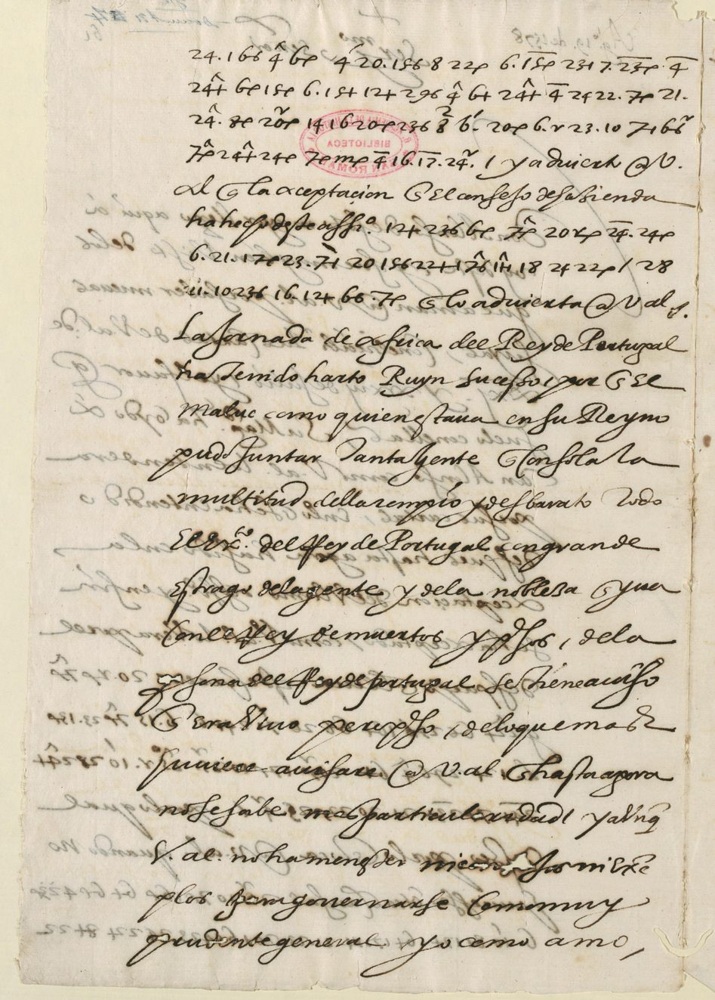

Marie de Médicis · 1610 · Legate Sega · 1593 · Ferducci · 1532 · Charles XII · 1710 · Høeg · Meyercrone · 1675 · Duplessis-Mornay · 1593 · Vila Flor · 1663 · Puebla · 1506 · Everett · 1825 · Dana · 1783 · Wąsowicz · 1663 · Henry II · 1547 · João IV · 1644 · Crawford · 1813 · Lope Hurtado · 1520 · Philip IV · 1648 · Jourdan · 1812 · Raince · 1526 · Winslow · 1918 · Partyet · 1721 · D’Orvilliers · 1761
The documents beside the text.
Thirty-seven enciphered documents, presented as record cards: date, sender and recipient, route, facsimile, proposed reading and modern reading. Marie de’ Medici’s two letters to Brèves (1610) hold only five enciphered lines; the instruction from Rome to Legate Sega (1593) fills twelve pages; Niccolò Ferducci’s letter to Ferdinand I (Fiume, 19 July 1532) enciphers only eight words, which reveal a plan to seize the French ambassador; two ciphered copies of a letter of Charles XII (Bender, 26 April 1710) show the King ready to negotiate with Denmark and to conclude an armistice; eighteen dispatches from Copenhagen to Just Høeg, envoy at The Hague, and nineteen to Henning Meyercrone, envoy in Paris (January–June 1675), read in full with a key found in the archives, show Denmark worried by the Swedish invasion of Brandenburg, then secretly negotiating its neutrality with France; finally, eight cipher passages from letters of the summer of 1593 to Duplessis-Mornay, printed in 1824 without translation for want of a key, read with a “folded” alphabet: “le roy est trahi”. Lastly, three ciphered letters from Afonso VI to the Count of Vila Flor (Lisbon, 13, 15 and 26 May 1663) announce the cavalry sent as reinforcements, then order the relief of besieged Évora “at all risk”, even at the cost of a battle. To these is added a letter from Doctor de Puebla to the secretary Almazán (London, 21 April 1506), which, read with the table reconstructed by Satoshi Tomokiyo, defends in cipher the household of Catherine of Aragon against “the greed of certain persons”. Finally, six cipher lines by Alexander H. Everett, United States minister at Madrid (25 September 1825), which the State Department cut in 1826: Everett does not believe Zea’s refusal to recognise the new American States, “a language imposed upon him at present by particular circumstances”. And eight lines by Francis Dana, Congress’s envoy at St Petersburg (6/17 April 1783), which Wharton left in figures: read with Dana’s table, found in the Papers of the Continental Congress, they say that at Catherine II’s court “properly speaking, there is no Minister here”. Finally, six letters from Ludwik Wąsowicz to Aleksander Michał Lubomirski (November 1662 – December 1663), read with a table reconstructed in the nineteenth century: the court is watching “the Marshal”, Jerzy Sebastian Lubomirski, the recipient’s brother, and wonders whether he will detach his banners from the confederated army “as he promised”. Lastly, three letters of Henry II to Suleiman the Magnificent (1547), copied into Latin and enciphered by Malvezzi, Ferdinand I’s resident in Constantinople: the king denounces Charles V’s “deceitful and ridiculous letters”, asks that the Swiss be included in the truce and that the Ottoman fleet be kept ready. And four cipher lines from João IV to the marquis of Nisa (Lisbon, 21 September 1644), the only piece in his register without a contemporary decipherment: the recalled ambassador is to entrust the secret of the marriages of Prince Teodósio and the infantas “neither to the Marquis, nor to any other person”. Finally, the letter entirely in code from William H. Crawford, United States minister at Paris, to James Monroe (15 August 1813): Napoleon stays at Dresden, Crawford refuses to follow him there, and he uncovers his predecessor Barlow’s secret arrangement with capitalists over a “plan of indemnities”. Lastly, a letter entirely in cipher from Lope Hurtado de Mendoza to Charles V (Tordesillas, 10 December 1520), written five days after the town was retaken from the Comuneros, whose key we rebuilt from the text itself: the Admiral hesitates to govern, the Marquis of Denia is hated, and the “very badly commanded” army is “the greatest of our fears”. And Jourdan’s letter to Soult (Madrid, 28 May 1812), intercepted and translated into Spanish, whose numbers in the 1812 Grand Chiffre had stayed undeciphered: d’Erlon is to beat Hill on the Guadiana, or cross the Tagus at the bridge of the Arzobispo to cover Madrid. And consul Partyet’s dispatch to the Council of Marine (Cadiz, 7 April 1721), whose six enciphered lines had stayed “not transcribed”: the quarrel of Pedro de los Ríos, Patiño and Dormay, commander of the marine guards, is to be “decided shortly” in Madrid.
Bracketed characters remain probable or unconfirmed. Blue marks numerical values corroborated by Satoshi Tomokiyo; their use in Marie’s key remains proposed. Read the summary.
Marie de’ Medici to Brèves, 15 September 1610


Date 15 September 1610
Route France → Rome
Sender Marie de’ Medici, queen regent (regent since the death of Henry IV on 14 May 1610)
Recipient François Savary de Brèves, French ambassador in Rome
Shelfmark BnF, Français 3789, no. 11 · f17r · Gallica, view 32
Cipher a few enciphered lines inserted in the French text: letters, syllables and numerical signs; key very close to Henry IV’s (BnF Français 3462, view 112)
Keywords malice · ambition · imprudence · foiblesse · Espagnolz · Espagne
State of the reading. First decipherment to our knowledge. Connected reading; bracketed characters remain probable but unconfirmed. Four numerical values are corroborated by Satoshi Tomokiyo (in blue).
Conventions: [b?] = probable character, not confirmed; blue = numerical value corroborated by Satoshi Tomokiyo, whose use in Marie’s key remains proposed.
Enciphered line · f17 L1

Proposed reading
ce sera trop manifester leurs malice et am[b?]ition que
Enciphered line · f17 L2

Proposed reading
acompagne[z?] d’imprudence et
Enciphered line · f17 L3

Proposed reading
[de?] foi[b?]lesse
The passage in context (clear text, enciphered part highlighted)
« […] si avec cela ilz y apportent encore de la difficulté, ce sera trop manifester leurs malice et am[b?]ition que j’estime, s’il en falloit venir à l’effet, devoir estre acompagne[z?] d’imprudence et [de?] foi[b?]lesse, selon la constitution présente de leurs affaires. »
Modern reading
If they (the Spaniards, named just before in the letter) raise further difficulties, this will reveal their malice and ambition all too clearly, which, if put into effect, I consider would be accompanied by imprudence and weakness, given the present state of their affairs.
Marie de’ Medici to Brèves, 10 November 1610

Date 10 November 1610
Route France → Rome
Sender Marie de’ Medici, queen regent (regent since the death of Henry IV on 14 May 1610)
Recipient François Savary de Brèves, French ambassador in Rome
Shelfmark BnF, Français 3789, no. 12 · f19r · Gallica, view 36
Cipher a few enciphered lines inserted in the French text: letters, syllables and numerical signs; key very close to Henry IV’s (BnF Français 3462, view 112)
Keywords pape · arogance · timidite · désarmement · duc de Savoye
State of the reading. First decipherment to our knowledge. Connected reading; bracketed characters remain probable but unconfirmed. Four numerical values are corroborated by Satoshi Tomokiyo (in blue).
Conventions: [b?] = probable character, not confirmed; blue = numerical value corroborated by Satoshi Tomokiyo, whose use in Marie’s key remains proposed.
Enciphered line · f19 L1

Proposed reading
que Sa Sainteté recognoi
Enciphered line · f19 L2

Proposed reading
ssant leurs arogance et sentant sa timidite
The passage in context (clear text, enciphered part highlighted)
« Aussi vois-je bien que Sa Sainteté recognoissant leurs arogance et sentant sa timidite ne les pressera jusques à l’extrémité du désarmement, pour recevoir enfin la honte d’un refus absolu […] »
Modern reading
I can also see clearly that His Holiness, recognising their arrogance and feeling his own timidity, will not press them to the extreme of disarmament, only to receive in the end the shame of an outright refusal.
Legate Sega, 14 May 1593
Instruction from Rome to the cardinal legate, BnF Français 3984, no. 6: twelve pages entirely in cipher. Each page is given with its image, the proposed Italian reading, a modern reading and the full deciphered text. Read the article →


Date 14 May 1593 (duplicate: “Dup.to 14 Maggio 1593” in the margin of the first leaf)
Route Rome → Paris
Sender Rome, on behalf of Pope Clement VIII (writer not named; the text speaks of “His Holiness” in the third person)
Recipient Filippo Sega, cardinal legate in Paris (“cardinal of Piacenza”; at the foot: “Al sig. Card.le di Piacenza”)
Shelfmark BnF, Français 3984, no. 6 · ff. 12r–17v · Gallica, views 24–35
Cipher continuous figures: nulls 3 and 8, pairs for letters, nomenclator framed by nulls
Keywords Navarra · Infanta · scisma · legge salica · finta conversione · terzo partito
State of the reading. Probable and partial decipherment. Third sign review made on the image by Claude (Opus 5.5, counter-checked by Claude Fable), not yet confirmed by Brice Dudout. Update of 23 October 2026: compared with Satoshi Tomokiyo’s preliminary reading (2019); 27 figures corrected and two letter values (97 = s, 61 = b) taken from it.
Conventions: [Navarra] = nomenclator number with a value ([x?] weak, [02] no value yet); ‹x› = restoration; “…” = passage not read. In the full deciphered text, without word division, 4? marks an isolated figure (break). Dotted underline: figures corrected after Satoshi Tomokiyo, Cryptologia 43(1), 2019.
f. 12r · Gallica 24
Proposed reading (Italian)
… [le cose] che si dimandano … La prima, che si proceda alla dechiaratione et escomunicatione di … seguaci di [Navarra] … par che si debba fare almeno hora, particolarmente in esser cosa non solo inutile, ma anco nociva, stimando la scomunica che sin hora … participatione non stimeranno ; né anco la dechiaratione, come pur troppo chiari sono gli esempi che sin qui ne habbiamo, essendosi visto il poco conto che si è fatto della sentenza data contro [Navarra] et del monitorio emanato da Gregorio decimo tertio [sic], et ultimamente della bolla della legatione nel [077] Piacenza ; onde, vedendosi manifestamente che le censure sono neglette, … da costoro non saria ‹stimata›, oltre al non far frutto alcuno, altro che un far schernire più l’autorità apostolica. Et pur si sa che, essendo la sentenza delle censure medicinale, come dicono li canonisti, si deve operare dove non
Modern reading
The Leaguers’ first request: to declare the excommunication of Navarre’s supporters. Rome judges it useless, and even harmful for now. Little notice was taken of the sentence against Navarre, of Gregory’s monitory (“XIII” in the cipher, probably for XIV) or of the bull of legation. The censures are scorned; a new declaration would only expose the apostolic authority to more ridicule.
Full deciphered text of the page (no word division)
r5?esaan2?deltsriqhegifedibimandaseisonolecosechesidimendanolaprimachesiprocedaaaladechiarationeetescom0?entcationedi{21}atiseguacieNavarraaFrancia?parchesidebafarealmenonhoraparticolarmentainesercosanonsoloinutieemaanconociuailestimandoil·la·lelascomunicachesincoreinldparticipationenonstimeranoneancoladechiarationecomepurtropgachiarisonogliesempiesinquinehabiamcesendosiuistoilpcocontochesiefatodel·lasentenzadatacontroNavarraidel·lamonitorilmandatidagregoriodecimotertioetultimamentedel·labolabdel·lalegationenel[077]piacenzaondeuedendosimanifestamentecheacensuresononegleteetparuipesedacostorononsariail·la·leoltrealnonfarfrutoalcunoaltrocheunfarscher5?erpiulautoritaapostolicaetpursisacheesendonlasentenzadel·lacensuremedicinalecomediconlicanoni6?stiesideueopraredouenon
f. 12v · Gallica 25

Proposed reading (Italian)
‹è› speranza di frutto, anzi in rispetto, quando sono così vili … et neglette ; vogliono li canonisti che si devano tali escomunicati assolvere etiam in … ; [02] meno si deve fare hora, non essendo le censure compagnate da forze da poterle far temere … Oltra che, a far la dechiaratione giuridicamente, saria necessario citarci ciascheduno particolarmente, cosa piena di difficoltà et pericoli ; … si aggiunge che, oltra al non si veder speranza di frutto, come è detto di sopra, si va a pericolo evidentissimo di danno, poi che potriano li … traboccarsi in uno scisma … et anco causa in esser trattati … alla Sede apostolica in riconoscerla … come sono stati sentiti, cosa la quale è degna di grandissima consideratione, in ciò che, procedendo
Modern reading
Censures are “medicinal”, the canonists say: they are worth something only where they can work. Without forces to make them feared, one should refrain. A formal declaration would mean summoning each person individually, which is full of difficulties and dangers. Above all, it would risk driving those concerned into a schism.
Full deciphered text of the page (no word division)
esperanzadifrutoanziinarispetoquandosonocosiuilipeseetnegleteuoglionolicanonistichesideuanotaliescomundcatiasoluereatiamin0?ittii[02]menosideuefarhoranonesendoil·la·lecensurecompagniatedaeorzedapoterlefartemereipiacesea?diodenedetochefoserostimatetraianiitaliattasoltrachenfaril·la·ledechiarationegiuridicamentesarianecesartocitarcichedunoparticolarmentecosapienadidi4?itantaetepericolia?il·la·lesiagiungecheoltrealnonsiuederspetanzadifrutocomedetodisoprasiuaa?pericoloeuidentisimodidanopoichepotrianoil·la·letrabocarsiainoinunoschismaetpretenaenoneancocausainesertrataticsimentreh4?enandatoalaseheapostolicainriconoscerlaneinncorasonostatisentiticosalaqualeèdegnadigrandisimaconsiderationeinciocheprocedendos
f. 13r · Gallica 26

Proposed reading (Italian)
‹al› perdersi affatto la speranza di poterli staccar mai più da [Navarra], né di far qualche cosa di buono con la negotiatione … precipitarsi, come già è detto … [Navarra] et tutti quei che lo seguitano … oltra che, essendo più salutar rimedio … riunir … l’uno et l’altro partito insieme, si leveria anco il rimedio. La seconda, che è notoriamente et manifestamente dechiarati non voler in re alcuno della casa di Borbone, per la qual cosa non si può fare … ; bisognaria citar tutti costoro et proceder con a formar processi, cose che hanno in sé infinite difficoltà, massimamente che ci ponno esser de’ quali siano [26] istessi [Navarra] tenuti come prigioni, come sa [S. S.?] che ce ne sono, et anco … li quali non hanno colpa.
Modern reading
All hope would be lost of ever detaching his followers from Navarre, and of reuniting the two parties. Second request: to declare that no one of the house of Bourbon is wanted as king. All these people would have to be summoned and tried, with endless difficulties. Some are held “like prisoners”, and the pope knows that some of them are blameless.
Full deciphered text of the page (no word division)
alpeiidersiafatolasperanzadipoterlistacarmaipiudaNavarranedifarqualchecosadibuonoconlanegotiatio[100]precipitarsicomegiaedeto[24]dpichenil·la·lemodoaoseropoi[715]iNavarraitutti?echeloseguitainerooltracheeciesendopiusalutarrimedioinlisalutèe[19]ne7?uedereriuniridaliatt2?idel·launoialaltroparitttoinsiemesileueriaancoil·la·lerimediolasecondacheeanotoriamenteetmanifestamentedechiarinonuolerinrealcunodel·lacasadiborboneper·laqualcosanonsipuofarangcooresiedetobisognariacitartutti?costoroetprocederconaormarproces4?cosechehanoinainitedificoltamasimamentechecipoaonoeserdieliqualisiano[26]istesoNavarratenuticomeprigionicomesaS.S.?hcenasonoetanconadaitienaaililiqualinonhanocolpa
f. 13v · Gallica 27

Proposed reading (Italian)
… quando si tratta di levare a una famiglia la ragione d’una successione … oltra che a cose ove ‹non› è la forza che le possa eseguire non servono a niente, come vediamo in [Navarra] … nei [principi] protestanti ; le cose adunque non serviriano ad altro che a ridur in ‹ludibrio› la ‹Sede› apostolica. È ben vero che potrà far il legato con il negotiar destramente … in escluderli ; lo farà come ha anco … Borbone … in qualsivoglia accidente, dei ministri di [Spagna?] ; et non farà … approvatione senza consultarlo prima … ; deve anco considerare che, quando … l’emulatione dei capi della Lega … altri accidenti … cresce …
Modern reading
Taking away a family’s right of succession by sentence is useless without the force to enforce it: Navarre and the Protestant princes show it. It would only expose the Holy See to ridicule. The legate may, however, negotiate skilfully to exclude them. He must approve nothing without consulting Rome, and beware of the rivalry among the League’s leaders.
Full deciphered text of the page (no word division)
i[014]somasequandositratadileaieaeaunounacosasisenteetseneaaproceso{02}magiormentesideuefareouesitratadileuareaunafamiilialeragionedunasucesionedeeceoltracheacoseoueseèlaforzacheleposaesequirenonseruonoa?nientecomeuediamonNavarran[517]neiprincipiprotestantiil·la·lecoseadu{11}quenonseruirianoadaltrochea?ridurinl0?iibriolagnieapostolicaè?benuerocheechepotrafarillegatoconilneg{29}tardestramente[24]aqinescluderlilofaracomehaancocomesoquandobene[24]peeneon0?o[077]borboneciconcoreselauoeontainqualsiuogliaacidenteudeiministrieSpagna?enonfaratoaeta7?nocaprouationesenzaconsultariogiiencone{22}dsideueancoconsiderarechequandoo?nlemulationedeicapliolegao?naltriacidentisiacresceserolefosz
f. 14r · Gallica 28

Proposed reading (Italian)
… [Navarra] accordandosi … partito … Lega con lui, ci potriamo veder in termine che Dio … voglia che mettesse conto pigliar uno del sangue [02] et un terzo partito ; s’impedisse a costui la consecutione della cosa, che all’hora saria impossibile tentarla, giudicando tale [S. S.?] ogn’altra cosa meglio che [Navarra] … il [regno]. La terza cosa è che si debba chiarire … chi deve aspirare alla [Infanta] … non può evenir … [S. S.?] … far in modo alcuno [02], et havendo altro interesse … potendolo haver giustificato che ‹è di› religione, et essendo il catolico, non può rifiutarlo ; anzi le altre cose di sopra, evidentemente, da chi le considera senza passione saranno giudicate sempre instrumenti … a far [Navarra] padrone … La quarta cosa è che i ministri … tanto et tutti sia-
Modern reading
If Navarre came to terms with part of the League, it might be necessary to take a prince of the blood or a “third party”, to bar him from the crown. Third point: to settle who should seek the Infanta’s hand. A Catholic prince of proven religion could not be refused. Otherwise, everything above would seem, to an unbiased judge, a means of making Navarre master. Fourth point: the [Spanish] ministers…
Full deciphered text of the page (no word division)
eeNavarraacordan4?osi[124]partitocplegaconluicipotriamouederintermine{12}chediocheuogliachemetesecontaopigliarunodel·laasangue[02]eunterzopartitosimpediseacostuilaconsecutioneo[010]cosacheaee2?rasariaimposibileiltentarlagiudicandotaleS.S.?ognaltracosamegliohNavarraeseguise{12}regnolaterzaacosaechesidebachiarire{12}[005]hedeueaspirarealaInfantaagaitatononpuoeuenir{11}S.S.?efarinmodoalcuno[02]ehauendoaltrointeresequinepotendolohauergiustificatocheoreligioneetesendoil·la·lecatolicononpuoributarloanziil·la·leeleaetricosedisopraeuidentementedachileesiderasenzapesionesaranogiudicatesempreininstrumentil9?isimia?farNavarrapadroneo[112]laquarta?cosaecheiministrio[402]antutoetntutti?sia
f. 14v · Gallica 29

Proposed reading (Italian)
‹no› e giunti … quando i ministri di … mireranno al bene et alla salute ‹del regno›, come si spera ; i ministri … hanno espresso … congiunti con loro, et haveranno … intentione. La quinta cosa, che [S. S.?] sia pratica circa le ragioni della serenissima [Infanta] alla corona : intorno a che [S. S.?] dice che le informationi che ha visto a favore della [Infanta], mostrateli da Pegna, se bene contengono tutto …, non però tali, che ogni mediocre dottore, senza … rivoltar libri, ci potria rispondere. Dice di più che, quando bene la legge salica [di Francia?] non si trovasse scritta, è però scritta ‹nei› cuori ‹dei Francesi›, che nascono con essa in bocca ; i quali da Clodoveo in qua … non hanno mai visto donna succedere alla corona, et più d’una volta è uscito il regno d’una famiglia et passato
Modern reading
The ministers should aim at the good and safety [of the kingdom]. Fifth point: the Infanta’s rights to the crown. The pope has seen the memoranda in her favour shown to him by “Pegna” (probably Francisco Peña; a hypothesis). Any mediocre doctor, without opening a book, could answer them. The Salic law, even if unwritten, is written in the hearts of the French, who are born with it on their lips. Since Clovis no woman has succeeded, and the kingdom has more than once passed from one family to another.
Full deciphered text of the page (no word division)
noegiuntie[419]o[027]quandoimini6?stridieee9?reranoalbeneetalasaluteonicomesisperaaiministrioS.S.?hanoespresoosdinedesercongiunticonloro[006]haueranoatieasaintentione[040]quintacosahS.S.?siapracircaleraagionaoserenisimaInfantaaeacoronadieio6?noa?aS.S.?dicecheleinformationichehauistoafauoroInfantamostratelida{12}dapegnasebenecontengonotutti?ehisipuodirinacausanonoperotalicheognimediocredotoresenza[22]riuoltardelibricipotriarisponderediceepiuchequandobenelalegesalicaFrancia?sitaouaseeperoscrita[424]cuordide{21}g7?nasconoconesainbocaiqualidaclodoueoinquaprimoree[112]ehanomatuisto
f. 15r · Gallica 30

Proposed reading (Italian)
in un’altra ; anzi … hanno sostenuto gravissima guerra con gl’Inglesi ; onde … osservanza di consuetudine et consenso dei popoli, hanno sempre succeduto li maschi, escluse le femine, oltre una infinità di difficoltà che ci sono circa la successione, etiam secondo la dispositione della ragion comune, quando … si attendesse … il quale professa il contrario, cioè di soggiacere alla dispositione … come … riconosce l’impero. … [S. S.?] si è ‹profondato› nel pensiero [02] ; haveria creduto che se [S. S.?] havesse fidato nelle ragioni [di Francia?], havesse tentato la via … ; ma è che intento in Portogallo, et se ben desidera ogni satisfatione … lo procurerà sempre ; vede però … non solo difficilissimo … la natura dei … havesse da haver … [di Francia?] regina, et altri ri-
Modern reading
The French fought a very hard war against the English over this. Custom and the consent of the peoples have always called the males, excluding the women, and common law also raises many difficulties. The pope has thought about it at length. Portugal is mentioned; the pope wishes to give Spain every possible satisfaction, but sees the drawbacks of giving France a queen…
Full deciphered text of the page (no word division)
toinunaltraanzinil·la·lehanosostenutograuisimagueraconglinglesiondeetnaiteeoseruanzadiesuetudinediesensodeipopolihanosempresucedutolimaschisecluselefemdneoltreunainfinitadidificoltachecisonocircalasucesioneetiamsecondoladispositionedel·laragioncomunequando[19]siatendeseineaeilqualeprofesailcontrariocioediesogiacerea?edispositionecome[19]hericonoscelimperioneS.S.?sieprofondatonil·la·lepensiero[02]haueriacredutocheseS.S.?haueseefidatonil·la·leragioniFrancia?hauesetentatalauieo[111]maecheintentoinportogaloetsebendesideraaaognietentoetognisatisfationea[46]auiloprocurerasempreuedeperoa[126]esolodifitaalisimonlanaturadei[212]aueziadhauer[566]iFrancia?reginaetnaltriri
f. 15v · Gallica 31

Proposed reading (Italian)
-spetti, che si lasciano di dire, ma pericolosissimo di far traboccar tutti … dalle mani di … vuole detrahere a [Spagna?] al partito della Lega ; dice apertamente che è il fine di [Spagna?] la difesa ‹del› [regno], ma il farlo venir in poter della figliola, et ‹mutar› in rispetto di tutti l’ordine di successione ; da che si vede manifestamente il pericolo che l’una et l’altra parte non trabocchi in qualche cosa che apporti seco la ‹ruina› della religione non solo in quel [regno], ma anco negl’altri ; … vogliono oscurar tutte le attioni sante fatte da [Spagna?] nella impresa ; dicono a piena bocca che hora si scuoprono i fini, che non sono stati di religione … poi che prima si professava … non voler cosa alcuna, et hoggi si pretende … [regno] … solo, et nel zelo per religione attribuiscono l’esclusi-
Modern reading
It would be most dangerous to make everything tip over. The Spaniards say openly that their aim is to defend the kingdom; they are suspected of wanting to put it in the power of the king’s daughter and to change, with regard to everyone, the order of succession. Both parties might tip over, at the risk of ruining religion in France and elsewhere. Their opponents say “openly” that their aims are now uncovered, and that they were not religious.
Full deciphered text of the page (no word division)
spetichesilascianodidiremapericolosisimodifarteabocartutti?lab{12}dnmanodice{02}[79]uuoledetraheraSpagna?ialpartitodel·laaagadiceapertamentecheeeilfineeSpagna?ladifesaoregnomailfarlouenirinpoterdel·lafigliolaetmuiarinarispetotutti?lordinediesucesionedalhsiuedemanifestamenteilpericolochelunaetlaltrapartenontrabochiinquaechecosacheaportisecclasuinadel·lareligionenonsoloinquelregnomaanconeglaltriuedeancocheecheuoglionooscurartutti?aationcsantafatadaSpagna?nil·la·leimpneesadiconoa?pienabocachehorasiscuoprehifininonsonostatidireligionenedieseailtioc6?oregnopoicheprimasiprofesauabieuolercosaalcunaethogisipredente{12}regnoionfail·la·lesoloetnea?zeloper?rligioneatribuisconolesclusi
f. 16r · Gallica 32

Proposed reading (Italian)
-one dei Borboni, giudicando che ciò … esclusi … accordando li capi della Lega … et loro … [regno] a [Infanta] … a fine … si sia mai voluto soccorrerla … a forze, le si potesse debellar [Navarra], ma solo staccar l’una parte et l’altra, acciò nell’ultimo gli habbino da capitar ‹nelle› mani le cose importanti … consideratione degli altri [principi], basta accennarlo. La sesta è che cosa si haveria da avvertire in evento che … sotto colore di finta ‹con›versione aderisse a [Navarra], o si pigliasse un altro del sangue, o andasse in lungo … senza concludere, o si dissolvesse … senza far niente ; … dice [S. S.?] che … potranno le deboli forze della Sede apostolica, non abbandonerà mai la causa publica, che quando
Modern reading
They attribute the exclusion of the Bourbons to religious zeal alone. Spain is suspected of never having wanted to defeat Navarre, but only to divide the two parties, so that everything ends up in its hands. Sixth point: what to do if Navarre, under colour of a feigned conversion, won over the Catholics, if another prince of the blood were taken, or if the Estates dragged on or dissolved without doing anything. Weak as its forces are, the Holy See will never abandon the public cause.
Full deciphered text of the page (no word division)
onedeibornonesigiudicandocheciogitfaci[02]esclusi[19]igisiacordandolicapidel·lalegataielorodegacadee{12}regnoaInfantaih[400]aafine[700]sisiamaiuolutosoccrerla[112]e[02]forzeil·la·lesipotesedebelamNavarramasolostacarlunaparteetlalteaacionelultimoglihabinodacapitar[24]maniil·la·lecose[20]importinoet{11}[126]ialaesiderationedeglialtriprincipibastaacenarlolasestaechecosasihaueriadafarineuentocheol[055]sotocoloredifintaeuersioneadheriseaNavarraosipigliaseunaltrodel·lasangueoandaseinl0?enpo{12}[126]senzaconcludereo?sidisoluesel[055]senzafarnientea?acosediceS.S.?hinapotranoledeboeiforzedel·lasedeapostolicanonabandoneramailacausapublicaichequando
f. 16v · Gallica 33

Proposed reading (Italian)
ognuno farà veramente che potrà posporre gl’interessi particolari ; si ha da sperare che Dio non habbia d’abbandonar la causa sua. Le cose, dice [S. S.?], [02] … serenissima … quando fossero riuscite, … non li piaceria estremamente … [Spagna?] … eguale difficoltà et i pericoli che vi sono, et … che ha riscontri da [02] bande, che sa certissimo … che infiniti parlano più liberamente seco che [Spagna?] e i suoi … ministri … ; resterà però … di fare che potrà … che ha scritto moltissime volte al legato … di nuovo, acciò che, se si vede spiraglio di cosa riuscibile, atta a partorir la salute di [regno] et satisfatione di … giunti … i ministri di [Spagna?] aiutando la pretensione della serenis-
Modern reading
Everyone will have to put private interests second; one must hope that God will not abandon his cause. The pope sees the difficulties and dangers of the Infanta’s candidacy. He knows, from several sides, that many speak more freely to him than to Spain and its ministers. He has written very many times to the legate: if a workable way out appears for the salvation of the kingdom, the legate may help the Spanish ministers in the Infanta’s claim…
Full deciphered text of the page (no word division)
ognunofaraueramenteechepotraiposporagliinieresiparticolarisihadaspeieihdiononhabidabandonarlacausasuail·la·lecosediceS.S.?e[02]{12}[126]oserenisimaInfantaquandofosereeiatntlenonlipiaceseestremamentemaacicSpagna?uegaledigicoltaetipericolicheuisonoetctmedachehariscontrida[02]bandechesacertisimoeseruereicheinfinitiparlanopiuliberamentesecocheelaSpagna?isuoi[44]ministri[976]restaraperoS.S.?n[02]aigienmentidifarechepotraiiattaideechehascritomoltisimeuolteallegatoreatcheradinuouoaciochesesiuedraspiragliodicosamaeiat1?ileataa?partorirlasaluiedieregnoesatisfationedieè?esosiaegiontiaeliministricSpagna?aiutandolapretensionedel·laserenis
f. 17r · Gallica 34

Proposed reading (Italian)
-ima [Infanta] ; sarà possibile quando … senza pericolo … come di sopra, procurando che … sia … in persona grata … [Spagna?] … cose di sopra … che si è dato in scritto … in risposta delle domande fatte [da Spagna?] intorno a cotesti … anco l’offerta che fa [S. S.?] … ; si adoprerà in servitio della serenissima [Infanta], quando si possa fare senza pericolo et disordine, et almeno … habbia [Spagna?], havendosi a venire a … , più satisfatione che sia possibile circa la persona, che giudica [S. S.?] … dovendo haver … aiuto ; né vedendosi per dove può uscire … [di Francia?] … et cose [02] importanza … non può … intende, caso che non si possa riuscire qualche cosa salutare.
Modern reading
The legate will do so only if it can be done without danger or disorder, with an acceptable person, giving Spain as much satisfaction as possible over the choice of person. The pope refers to the written answer given to the Spanish requests, and to his own offer. He sees little other way out if nothing salutary can be achieved.
Full deciphered text of the page (no word division)
imaInfantaasaraposibilequandosimngaciopotersiaamesenzaperidoatodcomedisopraprocurandochel[111]siadtaciainpersonagrataaaSpagna?[150]{26}cosedisopraaedeechesiè?datoinscrito{12}[207]sesainrispostadel·ladomandefate{26}Spagna?ntornoa?cotesti{12}an6?deancolofertachefaS.S.?h[650]siadoperarainseruitioosenisimaInfantaquandosiposadeaesenzapericoloedisordineetalmeno[012]habiaSpagna?hauendosia?uenirea[111]erepiusatisfationechesiaposibiecircalainsona{12}chegiudicaS.S.?dbenedouendohauer[79]saraeletoneoesiiadaiutoneuedendosiper?douepuouscireseFrancia?dilaperoinecosce[02]importanzacsipeitcolosenonpuosenondirlehtutti?acos[04]leintendecasochenosariuscirequalchecosasalutare
f. 17v · Gallica 35

Proposed reading (Italian)
-ne [regno], come ha scritto infinite volte, poi che … è intento suo che la conservatione della religione per la salute di [regno] … [fin du chiffre]
Modern reading
End of the cipher, in four lines: as he has written many times, the pope’s intention remains the preservation of religion, for the salvation of the kingdom.
Full deciphered text of the page (no word division)
neregnocomehascritoinfiniteuoltepoicheatti2?e[066]eintentosuochelaeseruationedel·lareligioneiper·lasauutedieregnosepi
Ferducci to Ferdinand I, Fiume, 19 July 1532
A spy’s letter from the Ragusa network during Süleyman’s campaign: written in clear, it enciphers only eight words — names of people and places, the date and the signature. Once these groups are read, it reveals a plan: to seize the French ambassador at sea on his way back from the sultan.

Date 19 July 1532 (“a dì 19”, month and year in cipher; archival dockets “1532. 19/7” and “19. Juli 1532” on the letter)
Route Fiume → Ljubljana (by post) → court of Ferdinand I
Sender Niccolò Ferducci (Nicolaus Verducius), Ferdinand’s agent at Fiume (signature in cipher, 543; the online inventory lists the letter as “N.N.”, sender enciphered)
Recipient Ferdinand I, King of the Romans, of Hungary and of Bohemia (address on the back: “Invictissimo Ferdinando … et Boemie”)
Shelfmark Österreichisches Staatsarchiv, HHStA, StAbt Türkei I 2-2-19, fols. 60–61
Cipher letter in clear (Venetian Italian) with a small nomenclator: three-figure numbers (543, 547, 518, 520, 521), barred Q + number (Q19), D + number for months and year
Keywords ambasciatore de Francia · bregantino · peschara · Chlisa · gardinal Colona · gardinal di Medici
See the letter in the Austrian State Archives online inventory (AIS) ↗
No facsimile here: the AIS images carry no open re-use licence. They can be viewed free of charge online (3 views).
State of the reading. A new reading of an unglossed piece. In this collection most other cipher pieces carry a contemporary decipherment (interlinear or attached) or a nineteenth-century one; this is the only letter of Ferducci’s without a gloss. All eight groups are read with a table drawn from the contemporary glosses of two other Ferducci letters; no group is left unresolved. The uncertainties concern the handwriting of the clear text and its interpretation, marked below. Reading of 27 October 2026 by Claude (Opus 5.5), not yet reviewed by Brice Dudout. Not edited before, to our knowledge (checked the same day).
Conventions: Martino Lucio547 = cipher group and its value; {x} = probable reading or sense; ‹x› = unresolved. Abbreviations expanded silently.
The cipher groups and their key
The table was built only from the contemporary glosses written above the same groups in two other letters of Ferducci (2 June and 18 September 1532), then frozen before it was applied to this letter. Independent check: the table drawn separately from the glosses of 1542 (Bourdeau catalogue no. 499) gives the same value to the six groups in common (6/6, no conflict).
| Group | Value | Contemporary gloss (1532) | Table of 1542 |
|---|---|---|---|
| 543 | Niccolò Ferducci | 2-2-9, 2-2-24 : « Nicolaus Verducius » | S43 = Ferducci |
| 547 | Martino Lucio | 2-2-9 : « Martino lucio Ragusa » ; 2-2-24 : « da martinolucio da Ragusa » | — |
| Q19 | Ragusa | 2-2-9 (deux fois), 2-2-24 : « Ragusa » | Q19 = Ragusa |
| 518 | S. Vito (Fiume) | 2-2-9 : « S. Veit » ; 2-2-24 : « Data a S.to Vito » | — |
| 520 | ambasciatore | 2-2-9 : « Ambasciator » | S20 = ambasciatore |
| 521 | Francia | 2-2-9 : « Ambasciator del Re di Fran[cia] » | S21 = Francia |
| D7 | luglio | règle Dn : D6 « Junij » (2-2-9), D9 « Septembre » (2-2-24) | D3, D5, D6 = mois |
| D19 | 1532 (année courante) | 2-2-9 : « D6 D19 » glosé « 1532 » | D19 glosé « 42 » en 1542 |
Deciphered text (Italian)
Ser.me Rex atque invictissime princeps, domine colendissime, post servitiorum meorum humillimam commendationem.
L’ultima mia fu de 24 del passato, con la inchiusa dal loro servitore Martino Lucio547, sotto littere del signore Andrea {Lanbergher}. La cagion di questa sie per dinottare a vostra Maestà Serenissima come in questa hora a tardi è gionto qui el bregantino da RagusaQ19 con le presente ligatte in questa; e per esere in esse gran nove, subitto subitto ho meso un mio servo ha cavallo per le poste e mandatollo a Lubiana, e scritto al signore Andrea {Lanbergher} che senza nullo ritegnio le manda a vostra Maestà Serenissima. La cosa di Chlisa è cosa certissima; similiter di monsignore gardinal Colona.
Si vostra Maestà ha a piacere di aver nelle mane l’ambasciatore520 de Francia521 al suo ritorno, che verà per mare in qualche bregantino, io andarò in persona con 10 o 12 compagni harmati; si fengiremo d’andare {a peschara}, e secretto modo si sforzaremo di averllo, per aviso da vostra Maestà Serenissima.
El gardinal di Medici fa gente a gran furia per la Marcha e per la Romagnia; si dici per el volgo che viene {a divotione} di vostra Maestà. Staremo vigilanti, e facendo altro subitto {ve se avisarà}; el simille di altro che s’intenderà. Per hora no avemo altro. A vostra Maestà Serenissima humilmente mi richomando. Datta S. Vito518 a dì 19 luglioD7 1532D19.
De vostra Maestà Serenissima humil servo Niccolò Ferducci543.
Translation
Most serene King and most invincible prince, my most honoured lord, after the humble commendation of my services.
My last letter was of the 24th of last month, with the enclosed letter from your servant [Martino Lucio], under cover of Signor Andrea Lamberger. The purpose of this one is to let Your Most Serene Majesty know that this evening, late, the brigantine from [Ragusa] arrived here with the letters enclosed with this one; and since they contain great news, I at once, in all haste, put one of my servants on horseback by the post and sent him to Ljubljana, and I wrote to Signor Andrea Lamberger to forward them to Your Most Serene Majesty without any delay. The matter of Clissa is quite certain; likewise that of Monsignor Cardinal Colonna.
If Your Majesty would like to have [the ambassador] of [France] in your hands on his return, which will be by sea on some brigantine, I will go in person with ten or twelve armed companions; we shall pretend to go fishing, and secretly we shall do our best to take him, on word from Your Most Serene Majesty.
The Cardinal de’ Medici is raising troops in great haste in the Marche and in Romagna; the common people say he is coming to Your Majesty’s service. We shall stay vigilant, and if anything else happens you will be told at once, and likewise of any other news we hear. For now we have nothing else. I humbly commend myself to Your Most Serene Majesty. Given at [San Vito, that is Fiume], the 19th of [July] [1532].
Your Most Serene Majesty’s humble servant [Niccolò Ferducci].
Reading notes and historical notes
- “a peschara”: the letters are certain. Probable sense {fishing} (Venetian andar a pescar), a natural cover for a dozen armed men in a boat. “To Pescara”, the Abruzzo port, is less likely: the town belonged to the Kingdom of Naples, that is to the Habsburgs, so there was no reason to pretend to go there.
- “a divotione”: the hand writes “a d”, three minims (iu, read iv), “o”, a tall looped letter read t, then “ione”. The reading {a divotione} gives the common formula venire a divotione di, “to come over to the service of”. It fits the facts: the legate Ippolito de’ Medici left Rome on 8 July 1532 to join Charles V and Ferdinand against the Turks.
- “ve se avisarà”: the hand writes “~ose auisara”, with the hooked v of “viene”. Read {ve se avisarà}, “you will be told”; our first reading, “vostra [Maestà] sarà avisata”, assumed an abbreviation that is not there.
- Andrea “Lanbergher”: the ending “…gher” is certain in both places; the first vowel may be a or o. Probably a member of the Carniolan Lamberg family, Ferducci’s relay at Ljubljana; his office is not established.
- The French ambassador is not named. Probable identification: {Antonio Rincon}, Francis I’s envoy to Süleyman in 1532. A Spanish report of April 1532 says he would travel by Sebenico and Ragusa; on 21 June the Conte da Ella wrote from Ragusa that Rincon was leaving for Belgrade, “dicesi essere ambassatore di Re di Francia” (2-2-13). According to Gévay, he brought to Venice on 20 August 1532 a copy of Süleyman’s letter of 12 July: he did return by the Adriatic, as Ferducci expected. No sequel to the plan is known. Rincon was killed in July 1541 near Pavia by men of the Marquis del Vasto.
- “La cosa di Chlisa”: Clissa (Klis), Petar Kružić’s fortress above Split, held against the Ottomans; the same spelling is glossed in September 1532 (“li turchi a presso Chlisa”). The exact news remains ‹unresolved›.
- “Monsignore gardinal Colona”: Pompeo Colonna, cardinal and viceroy of Naples, died on 28 June 1532. The “quite certain matter” is probably {his death}.
- Context: Süleyman is marching on Vienna; he will be halted in August before Güns (Kőszeg). The enclosed “great news” is probably the Conte da Ella’s letters to Ferducci of 11 and 12 July, kept in the same file (2-2-17). The next piece, 2-2-18, is Süleyman’s letter to Ferdinand of 12 July.
Method and credits
Method: (1) table of groups built only from the contemporary glosses of 2-2-9 (2 June 1532) and 2-2-24 (18 September 1532), frozen before use; (2) mechanical application to 2-2-19, which has no gloss; (3) checks: agreement between the two glossed letters (0 conflicts), agreement with the independent table of 1542 (6/6), date confirmed by the archival dockets on the letter; (4) targeted palaeographic review of the clear text on the AIS images.
Prior work, checked on 27 October 2026: Daniel Bourdeau’s catalogue lists no. 498 as open; nothing on Cryptiana or in a web search; the letter is not printed in Gévay’s Urkunden und Actenstücke.
Found through Daniel Bourdeau’s catalogue, no. 498 ↗. Archives: Österreichisches Staatsarchiv, Haus-, Hof- und Staatsarchiv, StAbt Türkei I 2-2-19 (AIS ↗), glosses in 2-2-9 (AIS ↗) and 2-2-24 (AIS ↗). Context: Anton von Gévay, Urkunden und Actenstücke zur Geschichte der Verhältnisse zwischen Österreich, Ungern und der Pforte, Vienna, 1838–1842. See also Sources.
Charles XII to the Council of the Realm and to his envoys, Bender, 26 April 1710
A refugee at Bender, on Ottoman soil, since Poltava, Charles XII learns of the rout of the Danish army at Helsingborg. In a chancery letter whose sensitive passages are in cipher, he declares himself ready to make peace with Denmark under the mediation of England and the United Provinces, and gives the Council a “free hand” to negotiate and to conclude an armistice, “even for a whole year”. Two ciphered copies, received by the Swedish government of Bremen-Verden, are kept at Stade.

Date 26 April 1710 (Swedish calendar, i.e. 7 May 1710 Gregorian; “Bender d. 26 April 1710”)
Route Bender (Ottoman Moldavia) → Stockholm and The Hague / London; copies to the governor-general of Bremen-Verden at Stade
Sender Charles XII, King of Sweden (“Carolus”; countersigned by Gustaf Henrik von Müllern, secretary of the field chancery)
Recipients the Rådet (Council of the Realm, Stockholm) — “Copia till hela Rådet i Stockholm”, fols. 83r–84r; the envoys Leijoncrona (London) and Palmquist (The Hague) — “Copia till Envoyerne Leijoncrona och Palmqvist mut. mutand.”, fol. 85r–v
Shelfmark Niedersächsisches Landesarchiv, Abt. Stade, Rep. 5a Nr. 670 (old shelfmark Fach 76 Nr. 38), fols. 83–85; file “Diverse chiffrierte Schreiben von und an Generalgouverneur Baron Nils Gyllenstierna”, 1700–1711
Cipher homophonic Swedish nomenclator of about 1,100 numbers in alphabetical order: letters (31–98, two series), syllables (99–182), numbers (183–211), endings (212–304), words and names (310–1102); powers written as sigla in clear: B.B. = Denmark, LL = England, ddd = Holland
Keywords fred · Sjömakternas mediation · stillestånd · wapenhwila · fria händer · satisfaction · Drottningens i LL wänskap
See the file on Archivportal-D (135 images) ↗
Arcinsys record (NLA) ↗
State of the reading. A new reading of the Stade cipher copies. No key or decipherment accompanies them. The key (“K1710”) was rebuilt from a ciphered troop list in the same file whose clear draft survives, then frozen and validated on letters never opened before (93% and 96% of words recognised, against at most 77–80% for scrambled control keys). Of 640 groups, one remains unresolved; six readings are probable (marked {x}) and five clerk’s slips are flagged (‹x›). The clear text of the original, in a fast cursive, is a working reading. The clear copy received by the Council is probably kept in the Riksarkivet, Stockholm; we have not consulted it, and the letter’s content may be known to historians that way. Reading of 27 October 2026 by Claude (Opus 5.5), targeted checks by Brice Dudout.
Conventions: grey text = written in clear in the original (working reading; [?] = word not read); black text = deciphered; {x} = probable reading; ‹x› = unresolved or clerk’s slip; B.B., LL, ddd = sigla in clear.
The K1710 key (extract)
Structure of the nomenclator, deduced from the recovered values (no table of this cipher survives in the file), then the values actually used in the two copies of the letter. The recovered code words follow alphabetical order at 99.7% (against 0.6 for random permutations).
| Numbers | Content | Examples |
|---|---|---|
| 31–64 | letters, 1st series: a ä å b c ch ck d e f g h i k l m n o p q – r s sk sch sp st – t u w x y z | 31 a, 47 n, 52 r, 59 t |
| 65–98 | letters, 2nd series = 1st + 34 | 65 a, 81 n, 87 s, 93 t |
| 99–182 | consonant + vowel syllables, from ba to wu | 100 be, 149 ne, 163 ra, 180 wi |
| 183–211 | numbers | 183 = 1 (“en”), 210 hundra, 211 tusen |
| 212–304 | endings, alphabetical | 245 en, 267 ing, 304 tion |
| 310–1102 | words and names, from “af” to “Wismar” (proper names at the end) | 552 fred, 653 Konung, 956 stille, 1033 wapen |
Values used in the letter
Letters 31 a / c · 32 ä · 33 å · 34 b · 38 d · 39 e · 40 f · 41 g · 42 h · 43 i · 44 k · 45 l · 46 m · 47 n · 48 o · 49 p · 52 r · 53 s · 57 st · 58 r · 59 t · 60 u · 61 w · 64 z · 65 a · 66 ä · 67 å · 73 e · 74 f · 77 i · 78 k · 79 l · 80 m · 81 n · 82 o · 83 p · 86 r · 87 s · 88 sk · 93 t
Syllables 100 be · 109 da · 110 de · 111 di · 112 do · 114 fa · 116 fi · 118 fu · 119 ga · 120 ge · 121 gi · 124 ha · 125 he · 133 ka · 137 ku · 138 la · 139 le · 140 li · 141 lo · 143 ma · 144 me · 146 mo · 148 na · 149 ne · 151 no · 153 pa · 160 qui · 163 ra · 164 re · 166 ro · 168 sa · 169 ‹se› · 170 si · 171 so · 173 ta · 174 te · 175 ti · 178 wa · 179 we · 180 wi
Number 183 en (1)
Endings 212 ‹212› · 218 änd · 224 are · 231 dan · 232 de · 236 der · 238 det · 240 dra · 243 else · 245 en · 259 ge · 261 het · 262 heter · 267 ing · 272 leda · 274 lig · 281 ner · 282 ning · 285 ra · 289 sam · 292 ska · 293 skap · 294 sta · 299 stig · 300 tit · 303 tig · 304 tion
Words 312 er · 319 af · 333 all · 337 allt · 345 andra · 365 att · 392 billig · 395 blifw · 473 Dansk · 478 den · 481 dess · 484 det · 495 Drottning · 499 eder · 508 eller · 512 emot · 531 fall · 548 fort · 550 för · 552 fred · 554 fri · 572 gärna · 587 hafwa · 589 hand · 612 huru · 615 hwar · 620 icke · 645 kan · 652 kom · 653 Konung · 670 led · 671 lägenhet · 672 läng · 677 lid · 692 makt · 703 med · 705 med · 710 men · 718 mindre · 720 Minist · 753 nog · 764 och · 769 om · 772 ond · 778 orsak · 783 öfwer · 796 på · 834 propo · 890 så · 891 såsom · 907 sielf · 908 sig · 910 sin · 912 sina · 913 Sjö · 934 slut · 939 som · 950 stand · 956 stille · 982 tag · 984 tanka · 986 tar · 993 tid · 997 till · 1008 tro · 1021 under · 1024 ut · 1026 ut · 1033 wapen · 1049 wilkor
Outside the series 25 ak
Transcription of the groups
Each line of the copy: the numbers as written (the original’s clear text in brackets, shortened), then the value of each group. Lines follow the layout of the folios.
Copy for the envoys (fol. 85r–v)
| Line | Groups | Values |
|---|---|---|
| E01 | [Carl. Emedan såsom …] 180 392 59 236 319 137 47 149 121 48 163 82 53 110 984 52 365 365 | [Carl. Emedan såsom …] · wi · billig · t · der · af · ku · n · ne · gi · o · ra · o · s · de · tanka · r · att · att |
| E02 | [?brudelta] 653 169 245 481 612 939 [den rättwisa Guden …] | [?brudelta] · Konung · ‹se› · en · dess · huru · som · [den rättwisa Guden …] |
| E03 | 138 164 52 218 163 912 772 65 60 83 890 59 764 259 148 171 133 997 365 550 140 133 108 703 48 87 [altså] | la · re · r · änd · ra · sina · ond · a · u · p · så · t · och · ge · na · so · ka · till · att · för · li · ka · sig* · med · o · s · [altså] |
| E04 | 39 612 178 45 180 753 778 124 110 [will att fullfölja …] | e · huru · wa · l · wi · nog · orsak · ha · de · [will att fullfölja …] |
| E05 | 710 620 481 718 939 180 116 47 149 238 939 294 59 32 52 125 52 166 163 319 245 124 299 48 100 174 47 44 289 261 153 473 39 170 231 615 997 110 138 300 908 550 272 319 345 890 32 164 180 100 148 41 149 365 43 81 119 703 653 245 | men · icke · dess · mindre · som · wi · fi · n · ne · det · som · sta · t · ä · r · he · r · ro · ra · af · en · ha · stig · o · be · te · n · k · sam · het · pa · Dansk · e · si · dan · hwar · till · de · la · tit · sig · för · leda · af · andra · så · ä · re · wi · be · na · g · ne · att · i · n · ga · med · Konung · en |
| E06 | 43 [B.B.] 245 392 552 1021 913 692 312 47 65 53 144 111 31 304 890 40 52 31 46 59 180 769 890 231 59 395 31 164 160 164 163 110 764 550 1026 550 168 44 163 110 769 245 151 43 25 303 168 175 53 114 31 304 550 333 478 48 550 52 32 59 292 109 764 550 40 33 47 41 | i · [B.B.] · en · billig · fred · under · Sjö · makt · er · n · a · s · me · di · a · tion · så · f · r · a · m · t · wi · om · så · dan · t · blifw · a · re · qui · re · ra · de · och · för · ut · för · sa · k · ra · de · om · en · no · i · ak · tig · sa · ti · s · fa · c* · tion · för · all · den · o · för · r · ä · t · ska · da · och · för · f · å · n · g |
| E07 | [som] 180 764 178 164 1021 890 986 39 [af att så …] 587 146 57 677 31 [wil ?upstrandes att …] 653 245 43 [B.B.] 1026 240 259 [kriget och] 548 [för] 705 116 245 174 274 262 512 | [som] · wi · och · wa · re · under · så · tar · e · [af att så …] · hafwa · mo · st · lid · a · [wil ?upstrandes att …] · Konung · en · i · [B.B.] · ut · dra · ge · [kriget och] · fort · [för] · med · fi · en · te · lig · heter · emot |
| E08 | [och ?på widare …] 82 87 997 552 64 [i framtiden] 764 118 45 79 121 48 163 [sedan] 550 151 43 243 [som wij ?hafwe …] 891 1026 319 499 907 179 [och utan någon] 61 33 52 100 531 282 365 550 44 138 285 | [och ?på widare …] · o · s · till · fred · z · [i framtiden] · och · fu · l · l · gi · o · ra · [sedan] · för · no · i · else · [som wij ?hafwe …] · såsom · ut · af · eder · sielf · we · [och utan någon] · w · å · r · be · fall · ning · att · för · k · la · ra |
| E09 | [icke allenast detta] 61 66 52 93 552 32 79 292 47 232 910 149 [utan och det] 550 1008 245 232 [wij hafwe till] 495 245 53 77 [LL] 61 32 47 293 [och benägenhet till …] 550 292 114 [och] 245 125 236 274 764 87 66 44 39 86 552 705 [B.B.] [hwarmed etc. Bender …] | [icke allenast detta] · w · ä · r · t · fred · ä · l · ska · n · de · sin · ne · [utan och det] · för · tro · en · de · [wij hafwe till] · Drottning · en · s · i · [LL] · w · ä · n · skap · [och benägenhet till …] · för · ska · fa · [och] · en · he · der · lig · och · s · ä · k · e · r · fred · med · [B.B.] · [hwarmed etc. Bender …] |
![Fol. 83v, lines wholly in cipher: “upprätta med [b.b.] ett stillestånd eller wapenhwila på så lång tid som på begge sidor kan kommas öfwerens…” (“to conclude with Denmark an armistice or suspension of arms for as long as can be agreed on both sides”). Image 0085 (Public Domain Mark 1.0).](../assets/img/stade-1710/fol83v-stillestand.jpg)
Copy for the Rådet (fols. 83r–84r)
| Line | Groups | Values |
|---|---|---|
| L01 | [… skall uti …] 890 137 47 149 180 [wäl] 392 59 121 48 163 82 53 110 984 52 365 | [… skall uti …] · så · ku · n · ne · wi · [wäl] · billig · t · gi · o · ra · o · s · de · tanka · r · att |
| L02 | 653 245 43 [B.B.] [lärer af en …] 31 47 57 48 53 | Konung · en · i · [B.B.] · [lärer af en …] · a · n · st · o · s |
| L03 | 218 163 912 772 65 60 83 890 59 764 259 148 | änd · ra · sina · ond · a · u · p · så · t · och · ge · na |
| L04 | 171 133 997 365 550 140 133 908 705 [och] 550 478 | so · ka · till · att · för · li · ka · sig · med · [och] · för · den |
| L05 | [skall] 39 612 178 45 180 753 778 124 110 [att fullfölja wåra …] | [skall] · e · huru · wa · l · wi · nog · orsak · ha · de · [att fullfölja wåra …] |
| L06 | 710 620 481 718 939 180 116 47 149 238 939 294 59 32 58 | men · icke · dess · mindre · som · wi · fi · n · ne · det · som · sta · t · ä · r |
| L07 | 125 52 166 163 319 245 124 299 48 100 174 47 | he · r · ro · ra · af · en · ha · stig · o · be · te · n |
| L08 | 44 289 261 153 473 39 [sedan hwartill de …] [sig] 550 272 [och] 345 337 890 [wela wij] 61 43 | k · sam · het · pa · Dansk · e · [sedan hwartill de …] · [sig] · för · leda · [och] · andra · allt · så · [wela wij] · w · i |
| L09 | 53 31 48 53 100 148 41 149 997 365 42 48 | s · a · o · s · be · na · g · ne · till · att · h · o |
| L10 | 52 31 [och] 65 81 982 31 392 39 552 64 834 | r · a · [och] · a · n · tag · a · billig · e · fred · z · propo |
| L11 | 53 43 59 43 48 281 [under] 913 692 312 47 | s · i · t · i · o · ner · [under] · Sjö · makt · er · n |
| L12 | 65 53 144 111 31 304 890 [framt och] 473 73 | a · s · me · di · a · tion · så · [framt och] · Dansk · e |
| L13 | 484 572 [willigt utan] 672 52 39 [up] 87 78 | det · gärna · [willigt utan] · läng · r · e · [up] · s · k |
| L14 | 82 74 [begiären] 764 [?] 550 1024 550 [säkra oss] | o · f · [begiären] · och · [?] · för · ut · för · [säkra oss] |
| L15 | 796 39 47 392 550 151 43 243 550 292 109 | på · e · n · billig · för · no · i · else · för · ska · da |
| L16 | 764 48 671 [som wij och …] 1021 890 986 | och · o · lägenhet · [som wij och …] · under · så · tar |
| L17 | 39 [af detta] 552 87 [brott] 764 550 [öfwade fiendtligheter på …] 587 146 57 677 | e · [af detta] · fred · s · [brott] · och · för · [öfwade fiendtligheter på …] · hafwa · mo · st · lid |
| L18 | 31 [altså wele wij …] 79 39 80 81 65 499 | a · [altså wele wij …] · l · e · m · n · a · eder |
| L19 | 997 [?strand och] 554 31 589 236 [under] [ll] 764 [ddd] | till · [?strand och] · fri · a · hand · der · [under] · [ll] · och · [ddd] |
| L20 | 87 144 111 31 304 [till att in] 670 31 499 1024 | s · me · di · a · tion · [till att in] · led · a · eder · ut |
| L21 | 183 552 64 589 45 267 705 [bb] [på så dan] | en (1) · fred · z · hand · l · ing · med · [bb] · [på så dan] |
| L22 | 1049 [för som här …] 34 48 | wilkor · [för som här …] · b · o |
| L23 | 53 982 224 77 212 59 [och imedlertid] 365 | s · tag · are · i · ‹212› · t · [och imedlertid] · att |
| L24 | 60 49 52 32 59 93 31 705 [b.b.] 73 93 956 | u · p · r · ä · t · t · a · med · [b.b.] · e · t · stille |
| L25 | 950 508 1033 42 180 138 49 33 87 67 141 | stand · eller · wapen · h · wi · la · p · å · s · å · lo |
| L26 | 47 41 993 939 83 67 100 41 120 170 112 | n · g · tid · som · p · å · be · g · ge · si · do |
| L27 | 52 645 652 143 783 245 87 769 764 66 | r · kan · kom · ma · öfwer · en · s · om · och · ä |
| L28 | 164 180 997 552 64 83 67 612 141 47 | re · wi · till · fred · z · p · å · huru · lo · n |
| L29 | 41 993 73 93 59 890 109 47 59 956 | g · tid · e · t · t · så · da · n · t · stille |
| L30 | 950 934 39 53 769 484 764 87 79 82 | stand · slut · e · s · om · det · och · s · l · o |
| L31 | 164 53 49 67 [biffé] 163 125 45 93 67 86 | re · s · p · å · [biffé] · ra · he · l · t · å · r |
| L32 | 87 993 [wij låta nu …] 61 33 164 | s · tid · [wij låta nu …] · w · å · re |
| L33 | 720 43 [ll] 764 [ddd] 365 [Uo.] 891 319 908 | Minist · i · [ll] · och · [ddd] · att · [Uo.] · såsom · af · sig |
| L34 | 907 179 88 48 139 38 66 86 550 44 138 | sielf · we · sk · o · le · d · ä · r · för · k · la |
| L35 | 285 [detta] 61 66 52 93 552 32 79 292 47 | ra · [detta] · w · ä · r · t · fred · ä · l · ska · n |
| L36 | 232 910 149 [såsom allt sådant …] 365 100 59 32 143 337 484 173 | de · sin · ne · [såsom allt sådant …] · att · be · t · ä · ma · allt · det · ta |
| L37 | 939 43 34 66 57 40 77 47 149 81 [hwarmed etc. Bender …] | som · i · b · ä · st · f · i · n · ne · n · [hwarmed etc. Bender …] |
Established text (Swedish)
Copy for the envoys (fol. 85r–v)
Carl. Emedan såsom wij nyligen förnummit, det Konungens i Danmarck krigsmakt, hwilken förledne höst blef skeppad in uti Skåne, skall för liten tid sedan uti en förlidne action aldeles warit öfwerwunnen, slagen och förströdd, så att wi billigt deraf kunne giöra oss de tankar, att ‹att› bemälte Konung‹se›en, dess huru som den rättwisa Guden i så måtto hafwer straffat hans trolöshet och orättmätiga förfarande emot ord och [?] Sigill, lärer ändra sina onda upsåt och ge(r)na söka till att förlika sig med oss. Altså, ehuruwäl wi nog orsak hade will att fullfölja wåra wapens lyckliga framgång emot honom och bringa honom så i trångmål, att han [?] icke kunna skada oss, då wij hafwe med andra wåra fiender att giöra, men icke dess mindre, som wi finne det, som Staterherrorna af en hastig obetänksamhet på Danske sidan, hwartill de låtit sig förleda af andra, så äre wi benägne att inga med Konungen i B.B. en billig fred under Sjömakternas mediation, så framt wi om sådant blifwa requirerade och förut försäkrade om en nöjaktig satisfaction för all den oförrätt, skada och förfång som wi och wåre undersåtare af ett så obilligt fredsbrott hafwa måst lida. (…) att ju längre Konungen i B.B. utdrage kriget och fortfar med fiendteligheter emot oss, ju (swårare) lärer det blifwa (…) att ställa oss tillfredz i framtiden och fullgiöra den förnöjelse som wij (…) af honom (…) skall såsom utaf eder sielfwe och utan någon wår befallning att förklara icke allenast detta wårt fredälskande sinne, utan och det förtroende wij hafwe till Drottningens i LL wänskap och benägenhet till att förskaffa oss en hederlig och säker fred med B.B.. Hwarmed etc. Bender d. 26. April 1710. Carolus. H. G. von Müllern
Copy for the Rådet (fols. 83r–84r)
… skall uti en förlorad action aldeles warit öfwerwunnen och förströdd, så kunne wi wäl billigt giöra oss de tankar, att Konungen i B.B. lärer af en sådan anstos ändra sina onda upsåt och ge(r)na söka till att förlika sig med oss ?; för den skull, ehuruwäl wi nog orsak hade att fullfölja wåra wapens lyckliga framgång emot honom och sätta honom i det tillstånd, att han nu en annan gång ej så lätt må kunna skada oss, men icke dess mindre, som wi finne det, som Statärherrorna af en hastig obetänksamhet på Danske sidan, hwartill de låtit sig förleda af andra, alltså wela wij wisa oss benägne till att höra och antaga billige fredz propositioner under Sjömakternas mediation, så framt och Danske det gärna willigt utan längre upskof begiära, och [?] förut försäkra oss på en billig förnöjelse för skada och olägenhet som wij och wåra undersåtare af detta fredsbrott och föröfwade fiendtligheter på ett eller annat sätt hafwa måst lida. Altså wele wij här med lemna eder tillstånd och fria händer under ll och ddds mediation till att inleda eder uti en fredzhandling med bb på sådana wilkor som här ofwan till är nämndt (…) en fred och allt öfrigt, som wid ett slikt wärk (?) bo‹s‑tag‑are‑i‑212›t, och imedlertid att upprätta med b.b. ett stillestånd eller wapenhwila på så lång tid som på begge sidor kan kommas öfwerens; om och äre wi tillfredz på huru lång tid ett sådant stillestånd slutes, om det och ‹slores› på ‹…› heelt års tid. Wij låta nu och (…) till wåre Ministri i ll och ddd att [?] såsom af sig sielfwe skole där förklara detta wårt fredälskande sinne, såsom allt sådant widare (…) bilaga widare kan ses. Förlitandes wij oss uppå eder bekante dexteritet och beprofwade nit för wår tienst och interesse, att bestämma allt detta som I bäst finnen. Hwarmed etc. Bender d. 26 April 1710. Carolus. H. G. von Müllern
Translation
Copy for the envoys (fol. 85r–v)
Charles. Since we have lately learnt that the King of Denmark’s army, which last autumn was shipped over into Scania, has a short while ago, in an action, been utterly overcome, beaten and scattered, we may rightly conclude that the said King — inasmuch as the just God has thus punished his faithlessness and his wrongful dealing against his given word and seal — will change his evil designs and willingly seek to come to terms with us.
Therefore, although we have reason enough to pursue the happy success of our arms against him and to bring him into such straits that he can no longer harm us, while we have our other enemies to deal with, nevertheless, as we find that the Lords States, out of hasty thoughtlessness, [have placed themselves] on the Danish side, to which they have let themselves be led by others, we are inclined to enter into an equitable peace with the King of Denmark under the mediation of the Maritime Powers, provided that we are requested to do so and assured beforehand of a sufficient satisfaction for all the wrong, damage and prejudice that we and our subjects have had to suffer from so unjust a breach of the peace.
[You shall give to understand] that the longer the King of Denmark draws out the war and continues hostilities against us, the harder it will be for him to satisfy us in future and to make the amends [we can demand of him]. You shall, as of yourselves and without any order from us, declare not only our peace-loving disposition but also the trust we place in the friendship of the Queen of England and in her readiness to procure us an honourable and secure peace with Denmark. Herewith etc. Bender, 26 April 1710. Carolus. H. G. von Müllern.
What the copy for the Rådet adds
… we wish to show ourselves inclined to hear and accept equitable peace proposals under the mediation of the Maritime Powers, provided that the Danes request it willingly, without further delay, and assure us beforehand of an equitable amends for the damage and inconvenience that we and our subjects have suffered from this breach of the peace and from the hostilities committed in one way or another.
We therefore hereby leave you permission and a free hand to open, under the mediation of England and Holland, a peace negotiation with Denmark on the conditions named above […], and meanwhile to conclude with Denmark an armistice or suspension of arms for as long as can be agreed on both sides; and we are content with whatever term such an armistice is concluded for, even if it be for a whole year.
We are letting our ministers in England and Holland know that they should declare our peace-loving disposition there as of themselves, as may be seen more fully in the enclosure. Relying on your known dexterity and proven zeal for our service and interest, [we leave you] to settle all this as you think best.
Reading notes and historical notes
- Two copies, one letter. On 26 April 1710 the Bender chancery sent the same order to the Council of the Realm, which governed in Stockholm in the King’s absence, and, “mutatis mutandis”, to the envoys Christoffer Leijoncrona in London and Johan Palmquist at The Hague. The governor-general of Bremen-Verden (Nils Gyllenstierna) received ciphered copies, now at Stade. The two copies often encipher the same words, sometimes one in clear and the other in cipher; these cross-checks were used to control the reading.
- Helsingborg. The Danish army landed in Scania in November 1709 was beaten by Magnus Stenbock at Helsingborg on 28 February 1710 (Swedish calendar) and re-embarked. This is the “action” of the first paragraph, which the letter presents as divine punishment for Danish “faithlessness”.
- “Staterherrorna … på Danske sidan”. The “Lords States” are the States General of the United Provinces. Group 473 sits in the table between Condition (444) and dem (477); the value {Dansk} gives “on the Danish side” here and “the Danes” later on. The copy for the envoys enciphers “sidan” (170.231) where the clear of the Rådet copy seemed to read “sedan”. The sentence lacks a verb, omitted by the clerk or in the draft. The allusion is probably to the negotiations of winter 1709–1710 that led to the Hague neutrality convention (31 March 1710, New Style). That convention in effect shielded Denmark from the Swedish troops in Germany; news of its signature could hardly have reached Bender by 26 April.
- Group 238. It is an ending placed between der (236) and dig (239). We read {det} in the sense of “that”, a use attested in clear in the same letter (“förnummit, det Konungens i Danmarck krigsmakt…”).
- Values from alphabetical order and context: 345 = {andra} (“led by others”; between allt 337 and Arme 357); 337 = {allt} (“allt‑så”, therefore); 1049 = {wilkor} (“on the conditions named above”; before Winter 1054); 25 = {ak} (“nöjaktig”): Brice Dudout confirmed the group on the image, but it lies outside the known series.
- Clerk’s slips, checked on the image by Brice Dudout: “Konung‹169›en” (a superfluous se); “förlika 108 med oss”, where 108 (cu) is written for 908 = sig, as in the other copy; “satisfa‑31‑tion”, with a for c; “Stat‑ä‑58” for r, which the other copy enciphers as 52; “‹slores›”, garbled for a verb whose sense is certain (“were it concluded”). Both copies spell “ge‑na” (“gärna”) the same way, so the slip is probably in the draft.
- The only unresolved group: 212, in “bo‑s‑tag‑are‑i‑‹212›‑t” (Rådet copy, a passage missing from the other copy). This group is the first ending in the table; the preceding clear text (“som wid ett slikt wärk”) is poorly read.
- The “Maritime Powers” (Sjömakterna) are Queen Anne’s England and the United Provinces. Their mediation brought no Danish-Swedish peace: the war resumed in northern Germany, and Stenbock beat the Danes again at Gadebusch in December 1712.
- The other ciphers in the file. The same key reads a ciphered troop list and a long German letter to the King (autumn 1710: plague and famine in Sweden, neutrality of northern Germany, Poniatowski, the Porte and the Tsar). These pieces are not published here.
Method, prior work and credits
Method: (1) the key was rebuilt by crib. A ciphered troop list in the file (fols. 73 and 82) was aligned with its clear draft (fol. 74); totals and officers’ names fixed the numbers and the first values, then the alphabetical structure of the table. (2) The key was frozen (SHA-256 fingerprint recorded) and applied to pages never opened before: a German letter to von Müllern (fol. 100, 93% of words recognised) and two pages of a letter to the King (fols. 78v and 79r, 96%). By the same measure, control keys (permuted values, shuffled groups) reach at most 77–80%. (3) Charles XII’s letter was read by comparing the two copies. (4) Brice Dudout checked the doubtful numbers blind on the image (16 points).
Prior work, checked on 27 October 2026: Daniel Bourdeau’s catalogue lists no. 599 as open, not attempted. We found no edition of this letter: not in Konung Karl XII:s egenhändiga bref (Carlson, 1893, autograph letters only), nor in the Handlingar rörande Skandinaviens historia, nor by web search (Swedish, English, German). The Historiska handlingar volumes and the Riksarkivet registers are not searchable online. What we present is a reading of the Stade cipher copies. The Rådet’s clear copy is probably kept in the Riksarkivet; we have not consulted it.
Finding aid: Daniel Bourdeau’s catalogue, no. 599 ↗. Archives: Niedersächsisches Landesarchiv, Abt. Stade, Rep. 5a Nr. 670 (Arcinsys ↗; images: Archivportal-D / Deutsche Digitale Bibliothek ↗, NLA digitisation, Public Domain Mark 1.0 ↗). See also Sources.
Copenhagen to Just Høeg, The Hague, 2 January – 5 June 1675
Eighteen dispatches from the German Chancery of the King of Denmark to his envoy in Holland, from 2 January to 5 June 1675, copied into Conrad Biermann’s register. The sensitive passages are in cipher. An untitled key sheet, kept in the “Chiffer” volume of the same archive, lets us read them in full: the Swedish army has just entered Brandenburg; Copenhagen fears that the Elector may abandon his allies, learns that the Tsar has sworn to invade Livonia, refuses a diversion in Scania and hints that France and Sweden are offering it “such plausible” terms. In spring it argues for attacking Sweden “by sea and land”, learns that Spain holds the invasion to be a breach of the peace of Westphalia, and sees Sweden’s suit for “our princess” coming. The nineteen parallel dispatches to Meyercrone in Paris, in the same key, are the subject of the next entry.
Dates 2 January – 5 June 1675: eighteen letters (2, 5, 9, 12, 16, 19, 22, 26 and 30 January; 6, 9 and 13 February; 2, 6 and 30 March; 10 April; 15 May; 5 June) (Julian style, used in Denmark; The Hague dated in Gregorian style, hence the double date “1/11” in the letter of 9 January)
Route Copenhagen → The Hague (ordinary post)
Sender German Chancery (Tyske Kancelli) of Christian V; copies by Conrad Biermann, secretary (register copies, not the originals sent)
Recipient Just Høeg (1640–1694), envoy extraordinary of the King of Denmark in Holland
Shelfmarks Rigsarkivet (Copenhagen), Tyske Kancelli, Udenrigske Afdeling, Almindelig del, “Conrad Biermanns kopibog over udgående skrivelser til danske ministre i udlandet”, 1675 (Arkivalieronline epid 15552891), images 005, 008, 012–014, 016, 021–022, 027–028, 035, 039–040, 043, 052–055, 079–080, 084–085, 113, 128, 184, 216 (pp. 2, 4v, 9–10v, 13, 18–18v, 23v–25, 31v–32, 36–37, 39v, 47v–50v, 75–75v, 80–80v, 108v–109, 124, 180, 211v–212). Key: TKUA, “Chiffer” 1670–1709 (epid 15553654), image 55.
Cipher French nomenclator: three homophones per letter (two symbols and a number from 1 to 24), a syllabary from 312 to 692 ordered by consonant (312 ba … 692 wu), name codes (111 Pomponne, 212 France, 216 Sweden…)
Keywords l’entrée des Suédois · M. l’Électeur · ratification d’Espagne · Indes occidentales · flotte · M. Gioe · Livonie · negotiation fort secrette · Pomeranie · comte de Rantzau · diversion en Schone · conditions si plausibles · par mer et par terre · paix de Westphalie · l’entreveue personnelle · nostre princesse
See the register on Arkivalieronline (Rigsarkivet) ↗
See the key sheet, “Chiffer” volume, image 55 ↗
No facsimile here: we found no explicit re-use licence for the Rigsarkivet images. They can be viewed free of charge online.
State of the reading. First published decipherment, to our knowledge. Every cipher passage of the eleven letters is read. Letters of 2, 5 and 9 January: 849 groups, of which 841 (99.1%) read directly with key K55 and a few justified additions. Eight letters from 12 January to 9 February, added on 27 October 2026: 2,308 groups, of which about 2,260 (98%) give the expected word (97 to 99% depending on the letter; 12 January: 203 of 205). The key was chosen on the letter of 2 January (32 groups), then applied unchanged to all the others. One unresolved segment of seven groups (‹randa·642·uri›, 9 January), a few person codes missing from the sheet (‹38›, ‹163›/‹363›, ‹180›) and some probable readings remain, all marked. Clear drafts of these letters probably survive in the Chancery series (Netherlands) and the received copies in Høeg’s papers; we know of no edition. Seven letters from 13 February to 5 June, added on the evening of 27 October 2026: 1,633 groups, of which 1,626 (99.6%) are read (97.6 to 100% depending on the letter); codes left unresolved: ‹261›, ‹94›, ‹543›, ‹60›.
Conventions: cipher passage; France212 = name code and its value; {x} = probable reading; ‹x› = unresolved; […] = clear text not reproduced. The copyist’s “9” glyph stands for r, t or a depending on its shape; context always decides (not marked).
Key K55
Untitled sheet in the “Chiffer” volume (image 55). The names of Pomponne (111) and Terlon (112), French ministers and diplomats of the 1670s, date it. Three homophones per letter, then a syllabary and a list of codes. Extract:
| Letter | Symbol 1 | Symbol 2 | Number |
|---|---|---|---|
| a | Ħ | g | 16 |
| b | Ω | Ꝛ | 2 |
| c | ε | F̄ | 18 |
| d | Ƶ | T | 19 |
| e | y | K | 5 |
| f | λ | ‡‡ | 3 |
| g | φ | ψ | 7 |
| h | ⊠ | ȝ | 4 |
| i | θ | Ж | 17 |
| k | L | O | 11 |
| l | ✱ | D | 13 |
| m | α | Γ | 8 |
| n | Ш | π | 24 |
| o | ꝗ | ff | 20 |
| p | Λ | Δ | 12 |
| q | ħ | ◊ | 6 |
| r | § | Я | 9 |
| s | W | ⊐ | 10 |
| t | Qφ | ♀ | 14 |
| u | ug | X | 15 |
| w | 7s | f̄ | 21 |
| x | b | C | 22 |
| y | n | m | 23 |
| z | m̄ | ### | 1 |
| Code | Value |
|---|---|
| 69 | Brandebourg (électoral) |
| 102 | le roi de France |
| 111 | Pomponne |
| 112 | Terlon |
| 212 | France |
| 213 | Espagne |
| 214 | Angleterre |
| 216 | Suède |
| 218 | Hollande |
| 276 | espagnol(s) |
| 279 | Suédois |
| 526 | Majesté |
The ciphertext as transcribed
Transcription of the register, group by group, symbols rendered by similar characters; [brackets] = words written in clear within the cipher.
Copenhagen, 2 January 1675 (img 005 · p. 2 · 32)
img 005, p. 2
9 ⊐ 624 m̄ 17 Ш 370 ✱ 431 24 14
579 X 9 Λ 601 π Ƶ 601 497 ε 448 624 627 9 498 516 10 516 578 y Ƶ
Copenhagen, 5 January 1675 (img 008 · p. 4v · 165)
img 008, p. 4v
498 ε 445 π 431
516 π 9 g 9 602 671 366 π W 498 10
Ħ λ 412 17 601 10 576 9 [l'entrée des Suédois dans les Estats de M. l'Electeur de Brandenbourg] 601
π Ƶ 497 517 650 y 367 623 526 Λ 501
10 537 341 ⊐ 623 17 601 [qu'auparavant] 9
X b Ħ ✱ 499 y m̄ 17 ✱ 412 ug Ƶ
600 498 10 673 17 9 671 538 9 [et] 649 W
518 17 φ 537 9 518 17 π 10 367 α Λ
601 W 624 516 π ♀ [en toutes choses que peut estre on n'auroit fait sans cela, bien qu'asseurement]
497 343 π 370 17 649 367 213 [a l'esgard de lad. ratification est assés]
y b 9 600 20
9 368 536 17 601 [veu qu'elle] 579 X 673
17 14 [bien] Λ 601 673 17 Я 589 497 497
24 434 y K W 576 ψ 539 498 ⊐
[n'estant pas] 10 341 X y 376 [beaucoup de] 577
9 626 π 537 10 [et ainsy ne pouvant estre assés]
[bien] y π 649 π 370 y [pour cognoistre si] 497
♀ 600 370 ε 650 20 π 623 ε 343 9 367
g 671 ε 500 602 432 536 ✱ [on ne pouvoit manquer de faire difficulté de l'accepter.]
Copenhagen, 9 January 1675 (img 012–014 · pp. 9–10v · 652)
img 012, p. 9
367 499 313 600 650 20 π W 590 624 626 π 9 649 540 y 10
[au lieu ou vous estes]
627 9 498 627 465 14 367 498 Ш ♀ 601 y 367 ⊐ 279 366 π 10 498 ⊐ K W 648
img 013, p. 9v
9 10 367 691 20 X 17 ‡ 10 ꝗ Ш 9 343
α 516 π 341 [selon le dire de M. Sb.] 600 Ш
Ƶ g 642 X 602 20 X 671 9 649 516
Ш 9 y K π 537 517 10 577 ‡ 497
π 9 10 [non seulement pour tout mais] 652 Ħ
24 9 10 Ħ X 10 625 341 X b 590 537
671 X 498 π 576 10 623 ε 343 α 518
367 Я [absolument] Ħ 498 ug 9 673 500 Ш
649 [de sorte que comme il y a encores beaucoup de]
577 9 626 π 537 10 Ħ X Λ 601 m̄ 367
8 8 498 498 ε 649 X 9 [fort] 366 π 10 498
10 17 π 649 9 y 9 10 367 497 212 [il y]
10 ‡ g ε 600 17 Ш Ƶ 601 598 625 341
582 537 10 9 Ħ W 625 ⊐ 649 Λ 603 α
649 516 Ш ‡ [et] 580 17 ⊐ 623 516 π 9
17 □ 537 Λ 601 10 649 [insensiblement] 498
10 20 601 17 ‡ 498 10 g X b 20 X
671 9 652 601 10 589 102 [et] 497 216 501
n 579 X 9 603 17 y Ш 9 412 17
601 579 X X̄ 623 X 671 9 624 10 y
⊐ 648 9 10 [particulierement si] 501 n [et]
498 10 g X 9 601 10 343 π 313 367 601
m̄ 671 539 17 y Ш 9 g 601 341 673
θ 9 589 ‡ 589 y ⊐ ε 446 X̄ y Ш Ħ
□ 623 341 341 590 624 603 17 9 340
576 ƀ 498 367 ε 445 π 431 9 [entierement] 497 412 341 367 10 Ħ λ 412 17 601
img 013, p. 10 (l. 1–15)
[On a dailleurs] 367 10 Ħ 672 W Ƶ 214
589 341 9 649 343 X 9 497 412 17
623 π 14 [de plus en plus] 576 603 17 ⊐ 9
601 626 π 577 π ε 445 Ш ♀ 579 X
9 498 ⊐ 17 π 649 9 y 9 10 367 497
212 y 10 9 627 9 498 579 17 Ш 14
367 369 Ш 537 9 367 10 343 α 517 ⊐
625 20 Ш 10 579 X 9 412 17 601 367
⊐ 601 Λ 601 627 17 ✱ 498 W 627 9
498 276 366 π 10 498 W 17 Ш 367 ⊐
20 ε 342 367 Ш 648 498 10 [et] 367
⊐ 590 Λ 577 Я X 537 419 579 X
9 498 W 649 590 672 y Ш 9 [afin de]
626 X 10 649 538 9 341 9 649 y Ш
9 601 Λ 602 624 [en cas que] 213 624 Ш
img 013, p. 10 (l. 16–fin)
673 X 501 ⊐ 9 601 ⊐ 624 Ш 650 9
366 Ш 10 498 X 603 577 [Cette affaire]
[est] 370 537 649 ‡ 498 343 Ш 625 367
600 650 20 Ш [et] 17 α 579 9 648 Ш
341 589 500 Ш 468 431 [icy] 589 498
10 Ħ □ 499 y m̄ 537 369 17 671
Ш 9 602 y Ш 20 ƀ 516 9 ‡ 601
579 X 9 y α 577 ⊐ ε 446 9 589
123 537 702 344 649 X 537 649 ‡ 498
601 626 501 650 20 Ш [et comme il est a propos que vous soyez informé de ce qui se passera] y
Ш 214 366 π 10 341 9 649 515 650 y
img 014, p. 10v
601 [Sa Majesté trouve necessaire que vous] y π
9 601 649 538 y m̄ g 671 ε α X̄
432 ff X 537 343 9 601 W 579 π 367
π 341 601 434 499 y 601 579 X 9
341 9 y λ 313 Ꞧ 9 y Ш 501 n
343 α 519 538 588 π 9 601 342 Λ
603 589 516 π 9 498 10 20 ε 344
9 601 Ш 341 10 580 ƀ 499 598 10
367 673 10 588 9 650 y X̄ 10 [M. l'Ambassadeur de Suède eust hier son audience…]
Copenhagen, 12 January 1675 (img 016 · p. 13 · 205)
img 016, p. 13 (l. 1–11)
212 y 9 216 537 367 31 K W 577 601 24
9 576 31 [tout a fait] 367 601 330 φ 537
9 69 [du moins est il trescertain que] 341 10 367
X b 343 X 603 π 537 ⊐ 415 π 9 9
600 17 ♀ 649 X̄ 626 X ƀ 10 515 17
π Ħ 671 ε 501 n [de sorte que les affaires ayant changé de face en Alsace par la retraitte des alliés vers Strasbourg il y] ⊐ 9 Ħ ε 600 17 Ш
Ƶ 601 589 625 498 368 ♀ 69 601 515 X̄
589 589 □ 589 λ 603 17 367 X 8 Ħ
497 ⊐ 625 ⊐ 649 9 497 464 500 X 625
y [et] 498 516 343 π 649 π 649 516 Ш
14 590 ‡ Ħ [d'ailleurs] 367 10 17 α 577 602
img 016, p. 13 (l. 12–fin)
Ħ X b 537 498 579 9 649 Ш 9 [derechef]
9 589 ‡ 589 Λ 603 342 578 649 y 601
626 501 650 20 Ш [M.] 432 ꝗ y 590 y 10 9
y π 518 10 343 672 y [mande que sur les representations qu'il luy a faites touchant] 497 9 516
516 π 9 367 10 279 [il s'estoit declaré par] X π
624 9 516 π 9 [qu'en cas que] 497 216 9 9
648 588 10 9 25 67 20 X 69 [il se] 465
9 649 603 17 9 [d'abord avec toute] 10 624 ⊐?
415 9 341 10 366 π 10 497 499 673 538
y [à quoy peut estre il seroit assés facile de le porter si] 162 [vouloyent aussy contribuer de leur costé. Je suis avec passion et respect]
Copenhagen, 16 January 1675 (img 021–022 · pp. 18–18v · 71)
img 021–022, pp. 18–18v
[Monseigneur le grand Chancellier a leu au … Estats vous ont fait faire sur le sujet de] 498
π 9 601 y 367 162 366 π 10 498 ⊐ y 10
648 9 ⊐ 367 69 [comme aussy le nouveau traitté qui a esté … que Mrs les Estats auroient prises sur] 498 Λ 601 517 y 9 579 17 π 9 [On ne vous peut point encores donner aucuns ordres, et il faudra attendre que] 162 y 9 498 X 9
10 9 ‡ 499 y m̄ n Λ 603 341 367
π 9 366 Ш 10 498 W 415 X̄ 516 ⊐
[et] 366 π 10 498 W Λ 602 9 370 9 600
17 ‡ 649 [Il y a deja quelque temps que Sa Majesté … mediation a aussy choisy M. de Klingenberg]
Copenhagen, 19 January 1675 (img 027–028 · pp. 23v–24v · 406)
img 027–028, pp. 23v–24v
[Le Roy s'est fait lire vostre relation du 18 de ce mois et a veu par son contenu que] 497 λ 412
17 601 579 X 9 497 31 625 W 649 π 341
367 69 y W 651 17 ‡ [encores] y π 367 499
313 600 650 20 24 [sans qu'il y eust encores] 602
y Ш 367 601 626 501 [Ledt] y 498 ε 649
X 9 Ħ y 10 ε 602 ‡ g 623 526 579
X 9 501 n 539 650 414 y 9 499 π 670
625 20 Ш 367 ⊐ 279 [et] 367 515 π 367
9 626 Ш Ħ 31 625 10 648 π 341 [et nous avons avis qu'il estoit sur le point d'envoyer icy]
498 370 ε ψ 33 434 31 634 367 Λ
500 y π 579 X 9 498 516 10 516 y λ
413 ‡ 9 [Mais ce qu'il y a de plus surprenant que l'on apprend de bonne main qu'il y a] X
537 433 650 g 650 20 Ш 415 9 9 624
ε 601 9 649 y π 9 601 501 n [et] 497
216 [celuy qui mande cette nouvelle adjoutant mesme que] 500 Ш 649 539 17 9 367 464 497 λ
412 17 601 579 X X̄ 343 π ε 501 y [à quoy neantmoins il est presques impossible de donner croyance veu]
498 10 600 17 626 π 20 590
‡ Ħ 367 ⊐ 9 601 g 538 516 343 π 9
601 497 216 [et de] 624 624 9 672 8 367
[cette conjoncture] 579 X 9 600 673 17 X̄ 497
579 516 600 538 y 590 ‡ 501 n g 341
367 y Ħ 671 ε 648 π 9 367 601 n 601
9 [outre plusieurs autres considerations qui] 498
369 17 671 π 9 368 671 9 650 X̄ 370
537 649 ‡ 498 601 626 501 650 20 π [M. le Duc de Hannover a derechef envoyé un … a apporté. Au reste Monsieur on ne voit pas] 20 Ш Λ 601 24 Ƶ 648
π 9 367 464 500 X 625 y [au lieu où vous estes] 367 498 π 673 n 367 8 9
516 465 9 ε 603 π y 24 212 [aprés les]
Ħ 10 624 X 600 π 341 10 589 673 X
⊐ 498 ug 9 Ħ 671 Ш 369 π 537 y
10 627 9 341 627 465 9 498 ⊐ 589
‡ 498 10 624 603 π ‡ [assés] 468 10 650
414 y K ⊐ 576 9 498 649 α Λ ⊐
[pourveu que] 162 y 9 498 X 9 10 g ‡ 499
y m̄ 412 W 624 π 9 367 498 X X̄
343 ⊐ 649 341 590 □ 412 ug 9 g
498 π Ƶ 603 17 ‡ 367 623 526 [outre que]
498 10 517 538 10 9 601 10 [desdits]
g □ 499 y m̄ 590 626 24 9 17 ε
n [ont eux mesmes trouvé à redire de ce que]
623 526 g 673 17 9 412 17 9 601 641
538 9 [M. le] 343 α 649 367 600 π
9 710 7 [M. de Klingenberg fait tout ce qu'il peut pour partir encores cette semaine]
Copenhagen, 22 January 1675 (img 028 · pp. 24v–25 · 122)
img 028, pp. 24v–25
[Bienque la lettre que vous avez escritte à … autre chose sinon qu'il faudra attendre] 498 λ 313 ε 14 367 341
589 180 673 X 10 Ħ 368 9 [et qu'il auroit esté à souhaitter que l'on eust] 412 17 9
Λ 501 10 367 601 λ 498 6 17 20 Ш Ħ
X 499 y ug 20 X 673 X 10 y ⊐ 649
10 [sur] 498 10 ε 448 624 ⊐ 589 673
X 10 n Ħ 671 m̄ 601 Λ 601 624 π
649 y ⊐ [il y a quelque temps] 579 X 9 Λ
601 671 538 9 341 9 Ħ ε 342 367
π 9 [mais à chose faite conseil est pris et] 623
526 537 497 17 ⊐ 624 576 10 367 343
π 650 540 y 9 366 Ш ⊐ 624 10 315
Ш 537 10 17 Ш 649 24 650 20 π 10 579
X 9 498 540 ƀ 499 ε [Le Duc Auguste de Ploen vient accompagné à M. de Knesebeck]
Copenhagen, 26 January 1675 (img 035 · pp. 31v–32 · 169)
img 035, pp. 31v–32
[Bienque vostre relation du 25 de ce mois qui … demeureront dans cet Estat et que l'on] 537 671 9
600 579 17 24 9 366 X 9 601 10 y λ
313 Cⁿ ‡ W 367 497 601 626 501 650 20
24? 589 363 20 π 9 Λ 602 624 17 ‡
412 X 9 366 X ‡ 601 10 ε 448
624 W 589 367 ⊐ 576 603 498 ⊐ 366
π ⊐ X 537 343 π 467 Ш Cⁿ 652 601
343 α 516 341 ‡ 498 ε n [où] 623
526 577 X 9 Ħ 673 17 X̄ 367 10 g
670 π 648 431 W 625 343 π 625 367
600 ƀ 498 10 366 17 ‡ 498 X 9 10
[Lesquels Elle] 536 576 10 673 X 501 Ħ ε
341 Λ 649 9 [jusques icy] 576 X̄ X π 580
θ 518 X 671 516 π 9 367 431 485 603 625
649 [et] 367 368 π ε 499 536 650 20 π
579 X 9 499 π 649 9 y 9 367 162 [et]
367 498 ug X̄ W Ħ ‡ 499 y m̄ [Sa Majesté en consideration de M. le Lieutenant Admiral de Ruyter que la Josue de Jan van Dort soit payée...]
Copenhagen, 30 January 1675 (img 039–040 · pp. 36–37 · 609)
img 039–040, pp. 36–37
[...la signature du Traitté avec S.A. … pour ministre mediateur. Ces deux demarches] 369 17 671 π 9 412 17
601 468 431 9 589 341 10 9 651 X ‡
367 315 π 589 162 671 X 493 π 9 Ħ
⊐ 625 W 649 X̄ 69 343 π 415 9 516
516 Ш 9 Ħ 497 601 626 501 650 20 Ш
589 163 20 Ш 14 367 464 Λ 602 624
579 X 9 498 516 W y λ 413 ε 9
515 17 10 17 □ y ⊐ 9 Ħ ε 600 17
Ш Ƶ 601 589 343 Γ 516 498 ⊐ Ħ ‡ 499
y m̄ 20 Ш 9 537 ψ 499 431 367 Λ
601 671 538 9 499 Ш 670 625 ꝗ 24 367
⊐ 279 579 X̄ 497 366 λ 314 344 □
649 590 ‡ ⊐ 20 Ш 9 412 7 649 367
415 X 9 538 X̄ Ħ 623 526 498 10 538
n y π ⊐ 537 341 ⊐ 623 17 601 10 579
X 9 Ħ ug ψ 516 π 649 9 367 315 π 537
446 X 601 626 Ш g 9 516 516 π 9
[de mesme] 498 ⊐ 500 Ш 434 X 9 10 591 20
Ш g Λ 579 9 649 [maintenant] Ħ 369 π 537
X̄ 370 624 343 X 9 ⊐ g X 368 9 y 498
ε 649 X X̄ 537 Λ 603 370 17 624 Ш 9
624 α ƀ [semblablement] 367 10 y λ 413
Cⁿ ‡ W [fort prejudiciables] 579 X 9 497 340
X 624 343 α 519 537 [tant parce qu'elles pourroient donner sujet à] 341 Λ 602 π 341 367 624
600 λ 19 603 17 368 X̄ 366 π 10 497 601
626 501 650 20 Ш 590 ‡ 624 α ƀ 498
Ħ 673 17 9 Λ 602 624 367 367 516 X 601
9 413 9 516 366 π 10 498 ⊐ 516 627 601
⊐ 590 ‡ Ħ Λ 602 624 10 Ħ 671 ε 498
10 343 π 413 367 601 m̄ [et] 367 626 Λ
579 624 X̄ 672 433 X 601 X 624 516
π 9 g 499 Ш 670 625 20 π 367 10 279
[que parce que] 341 X b ε n ꝗ ƀ 650 y
Ш 537 π 9 [par ce moyen tout] 498 649 α Λ
10 590 ‡ 498 ug 9 412 X 14 [non seulement] 579 X 9 624 415 X̄ 650 414 y X̄
366 π 10 498 ⊐ 499 y X b 590 □ ⊐
20 Ш 9 367 464 20 ε 344 577 m̄ [et]
590 ‡ 10 20 ε 344 577 603 π 9 [encores] [mais aussy] Λ ꝗ ug 8 Ħ X ψ 516 π 649
9 498 X 9 10 9 603 X 577 ⊐ 590 623
π 10 341 497 537 10 651 17 y Ш 9 576
10 415 9 ‡ 343 π 625 367 600 ƀ 498
10 589 ‡ [quelque bruit qui en ayt couru. M. le Duc … ses lettres pour estre promptement assistée] 576 9 X 537 368
671 9 625 20 π y Ш W ε 448 537 [mais on leur a fait comprendre] 589 314 y π 589 623
526 343 Ш 625 367 600 10 9 498 10 17 π
649 9 K 9 10 367 69 [comme] 498 10 625
y Ш ⊐ Λ 603 Λ 601 W [il n'y avoit] 579
X 9 648 π 9 [point d'apparence] 367 412
17 601 X 537 576 601 17 ‡ 498 ε 448
624 [dans l'estat où estoient les affaires et que] 69 501 n 516 10 516 538 Cⁿ Ħ π 9 [encores]
y b K 9 341 Ħ X 344 π g ε 649
Ƶ 448 ⊐ 650 499 649 343 Ш 9 601
216 539 π Λ 501 W 589 498 10 g X 9
601 ⊐ Ħ ‡ 499 y m̄ [on ne voyoit pas comment] 341 497 579 X 673 17 9 y 10 9
601 y b 17 431 367 623 526 [Hier Mrs les Commissaires eurent la seconde conference...]
Copenhagen, 6 February 1675 (img 043 · p. 39v · 103)
img 043, p. 39v
[...Il n'est pas necessaire de vous dire … jugerez aisement que dans l'estat où sont] y π 343 601 ⊐ 498
10 Ħ λ 412 17 601 W Ħ 498 10 430
X̄ Ƶ 367 623 526 y ‡ 498 537 10
340 X 603 17 9 y ⊐ 9 601 589 368
497 651 17 601 [Sadite Altesse et M. Knesebeck] 20 Ш 9 537 g π 9 518 17 π
⊐ 649 ⊐ 518 17 ψ 517 367 576 9 650
X̄ 405 9 9 343 π 649 Ш 9 ⊐ 343
Γ? Λ 601 π 538 24 ‡ 10 Ħ ⊐ 624 m̄ 589
623 526 537 577 X 9 576 10 [encores] 412 17
601 366 670 π 648 431 [Je suis]
Copenhagen, 9 February 1675 (img 052–053 · pp. 47v–48v · 623)
img 052–053, pp. 47v–48v
[Sa Majesté n'a pas esté moins surprise de voir par vostre relation du 11/1 de ce mois ce que] 38 [vous a escrit sur le sujet de] 497 515 9 F̄
446 367 10 9 603 X 577 ⊐ 589 162
367 10 650 537 π 9 Ħ ug 624 343 X
X̄ 10 367 69 589 367 497 Λ 603 516 650
652 367 [et de la] 515 538 y 601 Ħ 671
ε 497 589 ‡ 498 673 X 10 Ħ 671
m̄ y 702 344 649 498 343 π 649 540
367 623 498 9 14 601 623 π 10 Ħ 673
17 X̄ y 33 498 518 17 24 Ƶ 601 559
579 X 9 341 497 [ce que Sa Majesté m'a expressement commandé … pas plus avant dans cette matiere et que] 498 ⊐ 517 538 W
9 601 10 367 ⊐ Ħ ‡ 499 y m̄ [et particulierement] 341 501 n 367 69 537 π 9
601 y Ш 626 X Λ 343 Ш [comme si] 498
367 31 624 17 Ш 367 623 526 y ⊐ 651
17 9 367 α 577 31 Cⁿ 446 498 702 344
650 20 Ш 367 341 X b 589 162 624 α
ƀ 498 Ш 9 Ħ 673 17 9 Λ 602 ⊐ 579
X 9 498 626 X 497 431 516 Ш 9 367
626 π 515 17 ⊐ 9 601 673 X 497 Ш
9 367 Λ 501 10 589 673 ug 50 n y π 673
n y m̄ 497 498 9 ‡ 601 589 38 673
X 10 Ħ y W ε 602 9 649 [sur ce sujet. Vous aurez veu Monsieur par ma … aller rejoindre M. l'Electeur de Brandebourg] 498
589 ‡ Ħ Λ 576 601 α 516 π 9 Ħ X
600 651 X 9 627 465 9 367 10 9 601
623 650 ⊐ 412 17 9 367 498 X 9 600
Λ 579 X̄ 9 [puisqu'ils ont eux mesmes avoué qu'ils] 537 624 ⊐ 651 17 y π 14
576 ⊐ g 9 649 Ш 370 10 Ħ X 537
601 626 501 650 20 Ш g X ⊐ 625
412 673 600 ƀ 498 [et] 431 537 601 X
624 589 341 ‡ 498 590 498 X 9 Ħ y
⊐ 649 369 Ш 537 K [mais il est aisé à comprendre que] 343 α 516 370 π 343 10 649
623 526 Ħ 651 X 649 497 315 π 537 673
500 Ш 649 579 7̶ 625 ƀ 498 579 X 9
69 [aussy] 537 579 X 9 603 17 9 y ‡
498 589 650 601 X̄ 367 9 601 ⊐ 515 X
670 17 624 W 343 Ш 624 589 24 341 ⊐
579 ug 9 626 n 516 ⊐ 516 [à l'avenir] 625
y ‡ 498 498 673 n 20 17 9 Λ 501 10 500
Ш n 649 α Λ 10 g 312 π 369 π 537
367 624 10 g ‡ 499 y m̄ [et] 343 Ш 9
600 17 Ш 9 367 623 ε 343 α 518
367 9 Ħ X 649 α Λ 10 579 X 9 623
X 671 9 624 W y 10 648 9 ⊐ [et il ne faut point douter que] 497 515 538
y 601 369 π 9 498 10 Ħ ‡ 499 y m̄
y Ш X 624 603 π 9 Ħ 671 ε 341 582
537 624 9 671 367 Λ 601 467 431 Ħ
623 526 367 341 589 ‡ 498 624 369 17
9 Λ 603 516 9 14 601 367 498 ug 9
576 9 9 366 π 10 X 26 576 601 17
□ 340 10 [et que] 497 λ 603 17 367 X
9 590 ‡ 10 649 ⊐ 518 17 ψ 537 603
π 9 Ħ 626 Ш y W 430 9 Ƶ 537 626
17 9 340 576 ƀ 498 367 501 n 412
17 601 [aussy] 626 Ш 431 X̄ 623 526
Ħ 624 10 Ħ λ 412 17 601 ⊐ 366 π
⊐ X Ш 649 α Λ 10 20 X 212 y
9 216 501 n 20 λ Ħ 601 Ш 367 10
343 Ш 368 650 20 24 625 Λ 497 X
625 ƀ 498 ⊐ [J'ay parlé à Monseigneur le grand Chancellier de la ratification d'Espagne...]
Copenhagen, 13 February 1675 (img 053–055 · pp. 49–50v · 858)
img 053 d., p. 49
[...troupes suedoises dans les terres de M. … et il ne faut point douter que]
625 498 ⊐ y λ 313 ε 9 W 624 π 627
17 671 Ш 9 Λ 603 α 649 516 π ‡ 341 497
537 367 ⊐ 651 X 9 537 69 367 Λ 601 W
649 X̄ 500 601 9 ‡ 498 Ħ X b Λ 603 579
625 650 20 π 10 590 501 m 626 Ш 14
412 17 649 10 370 343 W 649 367 212 [et]
367 216 [et que cette] 673 m y 537 626 17 9
497 Λ 501 10 343 X 9 649 [et] 497 Λ 501
⊐ 624 X 601 579 X̄ 9 576 9 671 538 9
Ħ 497 576 17 b 431 537 600 498 589 162
p. 49v (img 054 g.)
624 α ƀ 498 Ш 14 626 X 445 17 9 649
X̄ Ħ 671 ε 648 Ш 9 366 9 367 X X̄
9 X 499 y X 589 625 162 y X 10
624 π 9 314 9 17 624 [ou] 650 601 497 λ
412 17 601 y Ш 500 Ш 434 y ug 9 [il estoit]
Ħ ε 600 17 Ш Ƶ 601 589 69 624
ε 603 m Ħ Ш 9 Ħ 312 Ш 369 Ш 537
367 624 10 Ħ ‡ 499 y m̄ 537 624 416
10 9 Ħ ε 343 α 518 367 Ħ 671 ε 498
X 9 ⊐ y π 537 517 10 579 X 9 579 ug
X̄ 673 17 9 Ħ 623 624 X 601 649 [ce qui]
Ħ X 603 17 9 369 π 537 313 Ħ X 465
ug Ħ 497 216 579 X 9 651 ug X̄ 537 9
624 10 Ħ 9 516 ⊐ Ħ 17 ‡ 498 X 8
⊐ Ħ X ψ 600 Ш Ƶ Λ 601 467 368
341 367 ⊐ 343 Ш 413 367 601 m̄ [Car de]
ε 603 17 601 589 576 9 X Ш Ħ
F̄ 343 α 518 367 516 Ш 9 Ħ 671 ε 69
497 216 580 17 ⊐ 624 y W 9 601 y
α 577 ⊐ ε 446 y 367 579 X ⊐ 624
9 624 10 9 α 314 650 y X b 367
⊐ 624 17 Ш Λ 501 10 Ħ 670 Ш 9 341
624 603 17 9 624 9 603 α 577 9 [car outre que] 497 343 X 10 652 516 367 341
9 649 536 650 20 Ш 497 537 ⊐ 9 576
10 367 412 17 601 X 537 625 ψ 600 Ш
367 498 671 y 367 315 X ε 499 y 9 10
623 Ш 10 X Ш 367 31 624 17 Ш 415
p. 50 (img 054 d.)
9 516 367 Ш 650 601 X̄ 367 ⊐ Ħ 670
Ш 648 431 10? 9 601 ⊐ 626 499 367 W [tant]
579 X 9 ε 445 344 Ш y π 576 9 650
344 499 y X̄ 589 579 X 9 497 536 650
20 Ш y π 431 537 600 ‡ 17 ‡ m Ħ 500
Ш m 649 α Λ ⊐ 589 ‡ 498 ε 446 9 F̄
446 500 ε 340 625 20 Ш 366 ƀ 312 17
⊐ 624 9 218 589 ‡ 498 343 Ш 625 367
601 343 α 516 341 ‡ 498 590 577 X 9
516 9 14 601 498 Λ 501 10 ψ 600 π Ƶ
20 ƀ 31 648 ε 498 Ħ 627 10 670 W 649
10 672 624 y 10 627 9 651 X 649 10 498
⊐ 343 W 649 10 367 497 516 9 312 ‡ 9
467 589 [et] 627 9 498 343 α 516 9 341 590
⊐ m 412 17 9 Ħ 498 b ε 501 625 20 Ш
367 651 X 649 10 498 ⊐ 9 ug 9 601 10
536 650 ? Ħ ⊐ [A quoy il] Ш m Ħ 579 17
Ш 9 367 518 m y Ш Λ 501 10 17 Ш 412
17 ‡ 499 ƀ 498 579 X 9 m 20 ƀ 672
y 9 589 367 □ Ħ 9 648 589 9 672 433
X 601 X 624 516 Ш 9 576 9 516 9 y 9
576 9 649 9 601 577 Ш 366 Ш 9 589
214 536 Ш m 497 673 500 π 649 Ш m
498 579 X 673 17 9 367 497 ⊐ 625
⊐ 649 X̄ [et que] ‡ 498 516 ⊐ 516 537 10
9 576 ⊐ [encores] 366 π 10 497 579 W 652
601 20 X y ‡ 498 624 579 X 9 600 516
9 ‡ 601 625 20 Ш 501 m y Ш 369 π
537 498 649 α Λ 10 [On mande de Stockholm que l'on n'y a point … y a envoyé par un Exprés, bien que]
p. 50v (img 055 g.)
341 9 649 343 X 9 497 414 ⊐ 9
624 α ƀ 497 π 9 367 537 576 10 498 367 ⊐ Ħ Λ 12 603 X
671 9 y π 650 y 601 536 π 9 343 590 515
9 589 9 ⊐ 624 m̄ 589 626 Ш 367 ⊐ 624
17 Ш 537 ⊐ 9 589 367 430 ψ 537 9 649
Γ Λ ⊐ 579 X 412 17 601 [et] Ħ ε 446
671 9 624 10 Ħ Λ Δ 601 W 9 ⊐ [L'on est d'autant plus surpris de ce que … beaucoup de disposition dans les esprits de]
Λ 501 624 y X 9 ⊐ 367 539 10 517
538 ⊐ 9 601 ⊐ [Vous verrez...]
Copenhagen, 2 March 1675 (img 079–080 · pp. 75–75v · 237)
img 079 d., p. 75
[...M. de Lindenow escrit de Stockholm... le … en pust estre le porteur. Par où il paroist] ε 497 17 601 516 π 9
589 499 π 649 π 650 20 Ш 367
497 216 537 W 9 589 366 519
624 9 498 W 162 367 498 10 y α
577 W ε 446 X̄ 367 702 344 649
p. 75v (img 080 g.)
9 498 ⊐ 601 626 501 650 20 Ш W
590 ‡ ⊐ 20 9 Λ 602 624 W y
π 412 671 X 9 367 69 [aussy] 500
Ш m 649 α Λ W 590 □ 501 m
624 600 579 W 625 ƀ 498 579 X
9 Ħ 673 17 9 341 501 m 367 624
415 9 650 414 y 9 367 Λ 501 W
y π [plus] y π Ħ ‡ 498 515 ψ
537 [et] 9 ε 446 671 9 [aussy] 498 W
Λ 603 576 600 650 λ ⊐ 589 ‡ 498
412 17 9 ε 446 m̄ y □ 498 [l'on a avis que cette Cour là a envoyé … l'equippage de leur flotte, et que comme]
497 9 431 π 9 501 m 515 π 589 579 X 9 412 17
601 341 W y α Λ 498 9 649 10 y
‡ 498 415 π 367 624 W Λ 602
π 342 576 498 7̶ y W 577 600 π
341 10 627 9 497 315 X 9 341
367 341 X b 367 261 [et] 627 X̄
498 10 Λ 603 516 W 624 10 590 ‡
10 501 m 20 π 9 412 17 649 367
501 m y π 415 X 9 538 9 [M. de Lindenow adjoute encores que la … du Roy nostre Maistre s'augmente...]
Copenhagen, 6 March 1675 (img 084–085 · pp. 80–80v · 199)
img 084 d., p. 80
[Vostre Relation du 8 de ce mois a esté leue … Estats vous ont fait insinuer touchant la] 601
590 625 650 20 π 590 ‡ W 20 Ш 9
601 626 501 367 412 17 601 Ħ 623 526
343 π 9 601 216 [M. Don Juan Major, Ministre d'Espagne icy, avoit deja] 412 θ 9
497 516 W 516 ε 448 624 367 497
576 9 9 370 603 m 626 Ш 515 17 W
9 601 589 ‡ 589 ⊐ 467 X 9 10 Ħ
X 576 603 670 π 9 [en] 649 W 516 17
ψ 536 π 9 589 94 Ħ 673 17 9
367 ε 497 601 Ħ X 517 538 W 9
601 367 216 y π 213 589 □ 498
537 579 X 673 17 9 343 π 625 367
601 9 Ħ ug 9 601 516 π 9 498 Ш
9 601 y 367 10 9 603 X 577 W 279
K W 366 Ш W 498 10 y W 648 ‡
p. 80v (img 085 g.)
10 367 69 589 343 Γ? 516 X 537
17 π λ 600 ε 650 20 Ш 367 497
576 17 b 367 671 W 9 Λ 445 499
y [et se trouvoit par consequent obligée] 366
10 625 W 649 X̄ 498 368 9 y 498
ε 649 ug X̄ [Les troupes que la Suede fait assembler vers … dans l'esperence de gagner toujours temps et] 366 519 624 9 498
60 Ħ ‡ 499 y m̄ [par ce moyen. Je suis.]
Copenhagen, 30 March 1675 (img 113 · pp. 108v–109 · 143)
img 113 g., p. 108v
[Si je ne vous ay pas fait plustost la … le grand Chancellier vouloit auparavant] 412 17 601
y b K 344 649 9 Ħ Ƶ 603 17
649 516 π 9 497 Λ 603 579 625
650 20 π 589 673 X 10 501 m Ħ
p. 109 (img 113 d.)
671 m̄ 412 17 649 [La chose a reussy comme l'on pouvoit souhaitter et] 17 □ 537
412 X 9 579 17 π 9 369 X 649 X̄ 589 [M.] 498 515 17 601 537 π Ħ m 9 367
464 369 π 537 9 672 10 576 9 367
497 [Pour ce qui est de] 498 π 9 601 671
X y 577 9 626 π 537 ‡ 498 673
ug 467 431 601 m̄ 314 y Ш 589 [en seulement] K □ 498 537 10 9 579 17 π
9 Λ 602 650 340 ƀ 498 [mais aussy]
343 π 9 601 497 314 y π 624 Ħ π
341 ꝗ X 9 601 499 π 341 9 650 652
367 367 498 671 537 516 π 9 [Quand au second point de vostre lettre...]
Copenhagen, 10 April 1675 (img 128 · p. 124 · 87)
img 128 d., p. 124
[Sa Majesté ayant veu par vostre Relation du … l'on estime encores assés seure pour cela.] ‡ 292 367
216 537 624 343 π 649 Ш 649 576
W 367 576 9 498 X̄ Ħ X b 9 X
9 601 W 370 367 10 624 17 Ш 589
498 603 m 626 π 515 17 10 9 601
Ħ 579 X 9 539 W 9 601 543 [mais en a mesme aussy] 576 9 498 Ħ 39 366
π 10 X π y Ш 9 601 650 y π 590
□ K X 10 14 Ħ 670 Ш 9 447 y
X̄ Ħ 671 ε 501 m [Je suis]
Copenhagen, 15 May 1675 (img 184 · p. 180 · 67)
img 184 d., p. 180
[...Vous verrez aussy Monsieur par les choses … la pensée que Sa Majesté a de vous faire] 576 W 624 9 Ħ X Λ 601 m̄ 367
69 579 X 9 X̄ 601 W 649 X̄ 589
‡ 589 649 α Λ W Ħ X Λ 601
m̄ 367 501 m [La chose n'est pas encores entierement … on ne manquera pas de vous faire tenir les] ε 601 368 650 671 W [et]
17 Ш 10 9 604 ε 650 20 π W
537 341 W 623 17 601 W 579
X 9 341 9 y α Λ 500 m [Je suis]
Copenhagen, 5 June 1675 (img 216 · pp. 211v–212 · 42)
img 216, pp. 211v–212
[Il faut que pour toute reponce à celle que … et particulierement sur le sujet de] 497 601 ε
446 9 ε 446 589 412 17 9 ‡
297 367 216 367 539 W 9 601 Λ 602
π 341 W 624 [Il y a long temps que l'on a] Λ 601 671 X 590 □ y
π 672 y Ш Ƶ 603 17 9 514 [et vous aurez ce que j'ay eu l'honneur de vous en mander cy devant. Je suis.]
Established text (French of 1675)
Copenhagen, 2 January 1675
[…] Le Prince d’Anhalt, gouverneur des Estats de Brandenbourg en l’absence de M. l’Électeur, a envoyé icy un exprès avec une lettre pour notifier à Sa Majesté l’entrée des Suédois dans la Marche et demander son assistance contre cette invasion ; mais comme les Suédois ne la veulent pas faire passer pour un acte d’hostilité, parce qu’ils y prennent seulement leur subsistence, à ce qu’ils disent, et n’attaquent point de place, et qu’on ne sçait pas si M. l’Électeur sera assez indulgent pour prendre la chose sur le mesme pied, on ne luy a pû repondre qu’en termes fort generaux. […]
Copenhagen, 5 January 1675
[…] et pour vous dire quand à la ratification d’Espagne que comme le changement arrivé dans les affaires par l’entrée des Suédois dans les Estats de M. l’Électeur de Brandenbourg rend l’amitié de Sa Majesté526 plus necessaire qu’auparavant aux alliez, il faudra les voir venir et tesmoigner moins d’empressement en toutes choses que peut-estre on n’auroit fait sans cela, bien qu’asseurement la conduite de l’Espagne213 à l’esgard de lad. ratification est assés extraordinaire, veu qu’elle pouvoit bien prevoir que la langue espagnole n’estant pas sceue {de} beaucoup de personnes, et ainsy ne pouvant estre assés bien entendue pour cognoistre si la traduction s’accorde avec l’original, on ne pouvoit manquer de faire difficulté de l’accepter. […]
Copenhagen, 9 January 1675
Le Roy s’est fait lire vostre Relation du 1/11 de ce mois et a veû par son contenu les deliberations qui se sont tenues au lieu où vous estes sur le sujet de l’entrée des Suédois279 dans les Estats de {Brandebourg}69, où ils ont commencé, selon le dire de M. Sb., ‹randa·642·uri› ouvertement en ennemis, {pillans} non seulement partout mais {tuans} aussi ceux qui ne veulent pas s’accommoder absolument à leur volonté ; de sorte que comme il y a encores beaucoup de personnes auprès de M. l’Électeur fort dans les interests de la France212, il {est} à craindre que si ce {prince}582 n’est assisté promtement et puissamment, il ne preste insensiblement les oreilles aux ouvertures que le roi de France102 et la Suède216 luy pourroient faire pour sauver ses Estats, particulierement si luy et les autres {confederez} venoient à recevoir quelque esche{c} en Alsace, ce qui seroit capable de changer entierement la face des affaires.
On a d’ailleurs des avis d’Angleterre214 que cette cour la faisant de plus en plus paroistre son penchant pour les interests de la France212, est sur le point de donner des commissions pour faire des {represailles} sur les Espagnols276 dans les Indes occidentales et d’esquipper une ‹419› {flotte} pour l’esté qui vient afin de soustenir cette entreprise en cas que l’Espagne213 s’en voulust ressentir dans l’Europe. Cette affaire est d’une telle consideration et importance que l’on {ju}ge icy que les alliez ne doivent rien obmettre pour empescher que ‹123› {le roi d’Angleterre} n’‹702›{exé}cute une telle resolution ; et comme il est à propos que vous soyez informé de ce qui se passera en Angleterre214 dans cette matiere, Sa Majesté trouve necessaire que vous entreteniez avec M. Gioe une correspondence reguliere pour cet effet, en luy communiquant reciproquement les occurrences publiques de vos quartiers. M. l’Ambassadeur de Suède eust hier son audience […]
Copenhagen, 12 January 1675
[…] Il semble que la France212 et la Suède216 ne desesperent pas tout à fait de re{ga}gner Brandebourg69 ; du moins est-il trescertain que ces deux couronnes font traitter soubs main avec luy ; de sorte que les affaires ayant changé de face en Alsace par la retraitte des alliés vers Strasbourg, il {est} à craindre que si ledit Brandebourg69 remarque quelque froideu{r} à l’assister, la jalousie et le mecontentement qu’il a d’ailleurs des Imperiaux ne le portent derechef à quelque {pré}cipitée resolution.
M. Gioe qui est en Moscovie mande que sur les representations qu’il luy a faites touchant l’armement des Suédois279, il s’estoit declaré par un serment qu’en cas que la Suède216 attaquast ‹25› l’Empereur67 ou Brandebourg69, il se jetteroit d’abord avec toutes ses forces dans la Livonie, à quoy peut-estre il seroit assés facile de le porter si les États généraux162 vouloyent aussy contribuer de leur costé.
Copenhagen, 16 January 1675
[…] Sa Majesté a veu la proposition que Mrs les Estats vous ont fait faire sur le sujet de l’entrée des États généraux162 dans les Estats de Brandebourg69, comme aussy le nouveau traitté qui a esté entamé avec l’Ambassadeur de Suède à La Haye […], aussy bien que des resolutions que Mrs les Estats auroient prises sur le premier point. On ne vous peut point encores donner aucuns ordres, et il faudra attendre que les États généraux162 et leurs alliez y procedent dans les formes et dans les pri‹9› du traitté. Il y a deja quelque temps que Sa Majesté, ayant jugé à propos de nommer des Ambassadeurs pour la mediation, a aussy choisy M. de Klingenberg […]
Copenhagen, 19 January 1675
Le Roy s’est fait lire vostre relation du 18 de ce mois et a veu par son contenu que l’affaire pour l’assistence de Brandebourg69 estoit encores en deliberation sans qu’il y eust encores rien de resolu. Ledit electeur a escrit à Sa Majesté526 pour luy notifier l’invasion des Suédois279 et demander son assistance, et nous avons avis qu’il estoit sur le point d’envoyer icy le duc {Auguste} de Ploen pour le mesme effect. Mais ce qu’il y a de plus surprenant, que l’on apprend de bonne main, qu’il y a une negotiation fort secrette entre luy et la Suède216, celuy qui mande cette nouvelle adjoutant mesme que l’on tenoit deja l’affaire pour conclue, à quoy neantmoins il est presques impossible de donner croyance, veu les raison{s} qu’il a d’estre animé contre la Suède216 et de se servi{r} de cette conjoncture pour ravoir la Pomeranie qu’il luy a cedée avec tant de re{g}ret, outre plusieurs autres considerations qui le doivent divertir d’une telle resolution.
M. le Duc de Hannover a derechef envoyé un exprez icy […]. Au reste, Monsieur, on ne voit pas on prend tant de jalousie au lieu où vous estes de l’envoy de Mr Meyercrone en France212 aprés les asseurances que vous leur ave{z} données sur ce sujet, lesquelles seront assés {ju}stifiées par le temps, pourveu que les États généraux162 et leurs alliez fassent de leur costé ce qu’il faut à l’endroit de Sa Majesté526 ; outre que les ministres desdits alliez qui sont icy ont eux-mesmes trouvé à redire de ce que Sa Majesté526 avoit fait re{te}nir M. le comte de Ran{tzau}. M. de Klingenberg fait tout ce qu’il peut pour partir encores cette semaine. […]
Copenhagen, 22 January 1675
[…] je n’y puis neantmoins repondre autre chose sinon qu’il faudra attendre l’ef{fe}ct de ce que ‹180› vous a dit, et qu’il auroit esté à souhaitter que l’on eust fait plus de refle{x}ion au lieu où vous estes sur les choses que vous y avez representées il y a quelque temps pour prevenir cet accident ; mais à chose faite conseil est pris, et Sa Majesté526 ne laisse pas de continuer dans ses bonnes intentions pour le {pu}blic. […]
Copenhagen, 26 January 1675
[…] vous jugerez neantmoins aisement qu’on n’y peut rien repondre tant que les choses demeureront dans cet Estat et que l’on ne verra point d’autres effects de la resolution que ‹363› ont prise. Il faut d’autres choses que des paroles dans une conjuncture comme celle-cy, où Sa Majesté526 peut avoir des avantages si considerables d’ailleurs, lesquels Elle n’a pas voulu accepter jusques icy par un pu{r} mouvement de gé{né}rosité et d’inclination pour l’interest des États généraux162 et de leurs alliez. […]
Copenhagen, 30 January 1675
[…] Ces deux demarches doivent faire {ju}ger que c’est tout de bon que les États généraux162 veu{le}nt assister Brandebourg69 conformement à la resolution que ‹163› ont deja prise pour le mes{me} effect ; mais il est à craindre que comme les alliez ont negligé de prevenir l’invasion des Suédois279 po{u}r la {diffi}culté qu’ils ont fa{i}te de fournir à Sa Majesté526 les {mo}yens necessaires pour augmenter de bonne heure son armement, de mesme les longueurs qu’on apporte maintenant à donner du secours audit electeur ne produisent semblablement des effects fort prejudiciables pour la cause commune, tant parce qu’elles pourroient donner sujet à ce prince de se {re}froidir dans la resolution qu’il semble avoir prise de demeurer ferme dans les mesures qu’il a prises avec les confederez et de s’opposer vigoureusement à l’invasion des Suédois279, que parce que ceux-cy obtiennent par ce moyen tout le temps qu’il leur faut non seulement pour se fortifier dans les lieux qu’ils ont deja occupez et qu’ils occuperont encores, mais aussy pou{r} augmenter leurs troupes, qui sans cela n’estoient pas fort considerables, quelque bruit qui en ayt couru.
M. le Duc Auguste de Holstein-Ploen et M. de Knesebeck […] ont repeté la demande que Son Alt. El. avoit deja faite dans ses lettres pour estre promptement assistée par une diversion en Schone ; mais on leur a fait comprendre que bien que Sa Majesté526 considerast les interests de Brandebourg69 comme les siens propres, il n’y avoit pourtant point d’apparence de faire une pareille chose dans l’estat où estoient les affaires, et que Brandebourg69 luy-mesme {n’ay}ant encores exercé aucun acte d’hostilité contre la Suède216, non plus que les autres alliez, on ne voyoit pas comment cela pouvoit estre exigé de Sa Majesté526. […]
Copenhagen, 6 February 1675
[…] Il n’est pas necessaire de vous dire, Monsieur, en quoy consiste la resolution que ledit Duc et M. de Knesebeck, aussy bien que le Courrier Imperial, ont emportée, puisque vous jugerez aisement que dans l’estat où sont encores les affaires à l’esgard de Sa Majesté526, elle ne sçauroit estre que dilatoire. Sadite Altesse et M. Knesebeck ont neantmoins tesmoi{gné} de partir {fo}rt contents, compre{na}nts assez que Sa Majesté526 ne peut pas encores faire d’avantage. […]
Copenhagen, 9 February 1675
Sa Majesté n’a pas esté moins surprise de voir par vostre relation du 11/1 de ce mois ce que ‹38› vous a escrit sur le sujet de la marche des troupes que les États généraux162 destinent au secours de Brandebourg69, que de la promtitude et de la maniere avec laquelle vous avez executé le contenu de sa lettre sans avoir eu le moindre ‹559› {ordre} pour cela ; ce que Sa Majesté m’a expressement commandé de vous faire sçavoir afin que vous ne vous engagiez pas plus avant dans cette matiere et que les ministres des alliez et particulierement celuy de Brandebourg69 n’entrent en soupçon comme si le dessein de Sa Majesté526 estoit d’empescher l’execution de ceux que les États généraux162 semblent avoir pris pour le soulagement de son maistre, voulant de plus que vou{s} y envoyez la lettre que ‹38› vous a escritte sur ce sujet.
Vous aurez veu, Monsieur, par ma precedente que M. le Duc Auguste de Ploen et M. de Knesebeck s’en retournerent ce jour-là pour aller rejoindre M. l’Electeur de Brandebourg, lequel apparemment aura tout sujet d’estre satisfait de leur rapport, puisqu’ils ont eux-mesmes avoué qu’ils ne s’estoient pas attendus à une resolution aussi favorable et genereuse que celle qui leur a esté donnée. Mais il est aisé à comprendre que comme d’un costé Sa Majesté526 a toute la bonne volonté possible pour Brandebourg69, aussy ne pourroit-elle que tirer de tres mauvaises consequences pour soy-mesme à l’avenir si elle le voyoit plus lon{g}temps abandonné de ses alliez et contraint de s’accommoder au temps pour sauver ses Estats ; et il ne faut point douter que la maniere dont les alliez en useront avec ce {prince}582 ne serve de prejugé à Sa Majesté526 de ce qu’elle se doit promettre de leur part dans un pareil cas et que la froideur qu’ils tesmoigneront à son esgard ne soit capable de luy faire aussy songer Sa Majesté526 à ses affaires dans un temps où la France212 et la Suède216 luy o{f}frent des conditions si plausibles.
Copenhagen, 13 February 1675
[…] les troupes suedoises dans les terres de M. l’Electeur de Brandebourg […] sont tresconsiderables, et il ne faut point douter que si les effects s’ensuivent promtement, cela ne destourne Brandebourg69 de prester l’oreille aux propositions qui luy sont faites du costé de France212 et de Suède216, et que cette voye ne soit la plus courte et la plus seure po{ur} parvenir à la paix générale, que les États162 semblent souhaitter avec tant d’ardeur ; au lieu que si les États162 eussent biaisé ou tiré l’affaire en longueur, il estoit à craindre que Brandebourg69, se croyant abandonné de ses alliez, ne se fust accommodé avec leurs ennemis pour pourvoir à sa seureté, ce qui auroit donné beau jeu à la Suède216 pour tourner ses armes ailleurs au grand prejudice des confederez. Car de croire que par un accommodement avec Brandebourg69 la Suède216 puisse estre empeschée de pousser ses ambitieux desseins plus avant, ce seroit se tromper ; car outre que la coustume de cette nation-là n’est pas de faire une si grande levée de boucliers sans un dessein formé d’en tirer des avantages tres solides tant pour chacun en particulier que pour la nation en general, il y a longtemps qu’elle cherche l’occasion d’abbaisser la Hollande218, qu’elle considere comme celle qui peut mettre le plus grand obstacle à ses vastes visées sur toutes les costes de la mer Baltique et sur le commerce qui s’y fait, à l’exclusion de toutes les autres nati{on}s. À quoy il n’y a point de moyen plus infaillible pour y obvier que de l’attaquer vigoureusement par mer et par terre, pendant que l’Angleterre214 n’a ny la volonté ny le pouvoir de l’assister, et qu’elle-mesme n’est pas encores dans la posture où elle se pourra mettre si on luy en donne le temps.
On mande de Stockholm que l’on n’y a point encores pris de resolution sur le projet que l’Ambassadeur Ehrenstein y a envoyé par un exprés, bien que cette cour la fist semblant de ne pas le desapprouver entiere{me}nt, {ce} qui marque assez que son dessein n’est que de gagner temps pou{r} faire et achever ses apprests. […] Cependant leur Ambassadeur qui est icy continue de presser sa negotiation […], à quoy il est aisé à juger qu’il ne manque pas de rencontrer beaucoup de disposition dans les esprits de plu{si}eurs de nos ministres.
Copenhagen, 2 March 1675
[…] Par où il paroist clairement que l’intention de la Suède216 n’est que d’amuser les États162 et de les empescher d’executer les resolutions qu’ils o{n}t prises en faveur de Brandebourg69, aussy longtemps qu’il luy sera possible, pour avoir celuy de se fortifier de plus en plus en Allemagne et achever aussy les p{re}paratifs qu’elle fait chez elle. L’on a avis que cette Cour-là a envoyé diverses personnes pour achetter des toiles et autres choses necessaires pour l’equippage de leur flotte, et que comme l’argent luy manque pour faire ces emplettes, elle fonde ses principales esperances sur la bourse de ceux de ‹261› et sur les promesses qu’ils luy ont faite de luy en fournir.
Copenhagen, 6 March 1675
Vostre Relation du 8 de ce mois a esté leue à Sa Majesté, qui y a veu ce que Mrs les Estats vous ont fait insinuer touchant la requisition qu’ils ont resolu de faire à Sa Majesté526 contre la Suède216. M. Don Juan Major, Ministre d’Espagne icy, avoit deja fait la mesme chose de la part du Roy son maistre quelques {jo}urs aupa{ra}vant, en tes{mo}ignant que ‹94› avoit declaré au ministre de Suède216 en Espagne213 qu’elle ne pouvoit considerer autrement l’entrée des troupes suédoises dans les Estats de Brandebourg69 que comme une infraction de la paix de Westphalie, et se trouvoit par consequent obligée d’assister ledit electeur. […] la signature du projet […] n’a pour bout que de laisser et maintenir toujours les choses en negotiation dans l’esperance de gagner toujours temps et d’amuser les alliez par ce moyen.
Copenhagen, 30 March 1675
Si je ne vous ay pas fait plustost la reponce […], c’est que Son Excellence Monseigneur le grand Chancellier vouloit auparavant faire executer adroitement la proposition que vous luy avez faite. La chose a reussy comme l’on pouvoit souhaitter, et il ne faut point douter que M. le Maire n’en ayt deja donné avis par delà. Pour ce qui est de l’entreveue personnelle, vous jugerez bien que non seulement elle n’est point p{ra}ticable, mais aussy contre la bienseance, outre l’incertitude de l’evenement. […]
Copenhagen, 10 April 1675
[…] laquelle l’on estime encores assés seure pour cela. L’{ambassadeur} de Suède216 ne se contente pas de parler aux autres du dessein que le Roy son maistre a pour nostre ‹543›, mais en a mesme aussy parlé à Griffenfeld39 dans un entretien qu’il eust avant hier avec luy.
Copenhagen, 15 May 1675
[…] Vous verrez aussy, Monsieur, par les choses que j’ay eu ordre d’escrire par cette poste à Monsieur de Klingenberg, la pensée que Sa Majesté a de vous faire passer auprez de Brandebourg69 pour rester quelque temps auprez de luy. La chose n’est pas encores entierement resolüe, mais qu’elle le sera, on ne manquera pas de vous faire tenir les creditives et instructions necessaires pour cet employ.
Copenhagen, 5 June 1675
[…] particulierement sur le sujet de la recherche que fait l’ambassadeur297 de Suède216 de nostre princesse. Il y a long temps que l’on a preveu qu’il en viendroit ‹514›{là}, et vous aurez ce que j’ay eu l’honneur de vous en mander cy devant.
English translation
Copenhagen, 2 January 1675
The Prince of Anhalt, governor of the Brandenburg lands in the Elector’s absence, has sent an express messenger here with a letter to notify His Majesty of the Swedes’ entry into the Mark and to ask for his help against this invasion. But since the Swedes will not have it taken for an act of hostility – they only draw their subsistence there, they say, and attack no fortress – and since it is not known whether the Elector [will be lenient enough to take the matter on the same footing], he has been answered only in very general terms.
Copenhagen, 5 January 1675
As for the Spanish ratification: [the change that has come about in affairs] through the Swedes’ entry into the lands of the Elector of Brandenburg [makes His Majesty’s friendship more necessary] than before [to the allies, so we must let them come to us] and [show less eagerness] in all things than we might perhaps otherwise have done. True, [Spain’s conduct] over this ratification is rather [extraordinary], since she [could well foresee that the Spanish language], not being [known] to many [people], could not be [understood] well enough to check whether [the translation agrees with the original], and that there was bound to be difficulty in accepting it.
Copenhagen, 9 January 1675
The King has had your report of the 1st/11th of this month read to him, and has seen from it the [deliberations held] where you are [on the Swedes’ entry into the lands of Brandenburg, where they have begun], according to Mr Sb., [to behave (?) openly as enemies, plundering] not only everywhere but [also killing those who will not submit] entirely [to their will]. Since there are still many [people around the Elector] strongly [attached to the interests of France], it [is to be feared that if this prince is not helped promptly and powerfully, he may] gradually [lend an ear to the overtures that the King of France and Sweden might make to him to save his lands], especially if he and [the other confederates were to suffer some setback in Alsace, which could change] entirely [the face of affairs].
We also have [word from England that this court, showing] more and more [its leaning towards the interests of France, is about to issue commissions for reprisals against the Spaniards in the] West [Indies], and [to fit out a fleet for next summer] in order to [support this enterprise] should [Spain wish to retaliate in Europe]. The matter [is of such weight and importance that it is judged] here [that the allies must neglect nothing to prevent (the King of England?) from carrying out such a resolution]. And since you should be informed of what happens [in England in this matter], His Majesty finds it necessary that you [keep up a regular correspondence with Mr Gjøe for this purpose, sharing with each other the public news of your posts]. The Swedish ambassador had his audience yesterday…
Copenhagen, 12 January 1675
It seems that [France and Sweden do not] altogether [despair of winning Brandenburg back]; at least it is quite certain that [these two crowns are negotiating with him underhand]. As affairs have changed face in Alsace with the allies’ retreat towards Strasbourg, [it is to be feared that, if the Elector notices some coolness in assisting him, the jealousy and discontent he] otherwise [feels towards the Imperialists may drive him] once again [to some hasty resolution].
Mr [Gioe, who is in Muscovy,] writes that after the representations he made to him (the Tsar) about [the Swedes’ armament], the Tsar declared on [oath] that should [Sweden attack the Emperor or Brandenburg], he would at once [throw himself] with [all his forces into Livonia]; it might be easy enough to bring him to it if [the States General] would also contribute on their side.
Copenhagen, 16 January 1675
His Majesty has seen the proposal the States had made to you on [the entry of the States General’s troops into the lands of Brandenburg], as well as the new treaty begun with the Swedish ambassador at The Hague and the resolutions the States are said to have taken on [the first point]. No orders can be given to you yet: we must wait until [the States General and their allies proceed in due form] and [according to the terms (?) of the treaty]. His Majesty has also chosen Mr de Klingenberg among his ambassadors for the mediation.
Copenhagen, 19 January 1675
The King has had your report of the 18th of this month read to him and has seen from it that [the matter of assistance to Brandenburg was] still [under deliberation], with [nothing resolved]. The [Elector has written to His Majesty to notify him of the Swedish invasion] and [to ask for his assistance], and we hear that he was about to send [Duke August of Plön] here [for the same purpose]. But the most surprising thing, learned from a good source, is that there is [a very secret negotiation between him and Sweden]; the person sending the news even adds that [the affair was already considered concluded]. This is almost impossible to believe, given [the reasons he has to be incensed against Sweden] and to [use] this juncture [to recover Pomerania, which he ceded to her with so much regret], besides several other considerations that [ought to turn him away from such a resolution].
The Duke of Hanover has again sent an express messenger here […]. For the rest, we do not see [why people are so alarmed], where you are, [at Mr Meyercrone’s mission to France], after [the assurances you gave them on this subject, which time will] fully [justify], provided [the States General and their allies do on their side what is due to His Majesty]; besides, [the ministers] of those [allies who are here] have themselves found fault with [His Majesty’s having had] the [Count of Rantzau detained]. Mr de Klingenberg is doing all he can to leave this very week.
Copenhagen, 22 January 1675
I can only reply that we must wait for [the effect of what ‹180› told you]. It would have been desirable for people [to give more thought, where you are,] to [the things you represented there] some time ago [to prevent this accident]; but what is done is done, and [His Majesty nonetheless persists in his good intentions for the public cause].
Copenhagen, 26 January 1675
You will easily judge that nothing can be answered as long as things remain in this state and [no other effects are seen of the resolution that ‹363› have taken. Something more than words is needed at a juncture like this], when [His Majesty could obtain such considerable advantages elsewhere] — advantages that He [has refused to accept] so far [out of pure generosity] and [out of attachment to the interests of the States General] and [of their allies].
Copenhagen, 30 January 1675
These two steps [must make one judge that the States General seriously mean to assist Brandenburg, in accordance with the resolution that ‹163› have already taken to that end. But it is to be feared that, just as the allies neglected to prevent the Swedish invasion by the difficulty they made about providing His Majesty with the means to increase his armament in good time], so [the delays now being made in sending help to the Elector may] likewise [produce effects] very prejudicial [to the common cause]: on the one hand they might lead [this prince to cool in the resolution he seems to have taken to stand firm in his engagements with the confederates] and [to oppose the Swedish invasion vigorously]; on the other, [the Swedes thereby gain] all [the time they need], not only [to fortify themselves in the places they have already occupied] and [will yet occupy], but also [to increase their troops, which otherwise were not very considerable], whatever rumours have run.
Duke August of Holstein-Plön and Mr de Knesebeck repeated the request His Electoral Highness had already made by letter, to be promptly assisted [by a diversion in Scania]. They were made to understand [that, although His Majesty regards the interests of Brandenburg] as [his own], there was [nevertheless] no prospect [of doing such a thing] in the present state of affairs, and that, [since Brandenburg himself has] not yet [committed any act of hostility against Sweden, any more than the other allies], it was not clear how [this could be demanded of His Majesty].
Copenhagen, 6 February 1675
There is no need to tell you what the resolution taken away by the Duke, Mr de Knesebeck and the Imperial courier contains: you will easily judge that, in the present state of [His Majesty’s affairs, it could only be dilatory]. His Highness and Mr Knesebeck [nevertheless seemed to leave well content, understanding that His Majesty cannot] yet [do more].
Copenhagen, 9 February 1675
His Majesty was no less surprised to see, from your report of the 1st/11th of this month, what [‹38›] wrote to you about [the march of the troops the States General intend for the relief of Brandenburg, than by the promptness] and [the way you carried out the contents of his letter without having received the least order to do so]. His Majesty has expressly commanded me to let you know this, so that you go no further in the matter and so that [the allies’ ministers], and especially [Brandenburg’s, do not come to suspect] that [His Majesty means to hinder the execution of the plans the States General seem to have formed to relieve his master; he further wishes you to send him the letter that ‹38› wrote to you] on the subject.
You will have seen from my previous letter that Duke August of Plön and Mr de Knesebeck left that day to rejoin the Elector of Brandenburg, [who will apparently have every reason to be satisfied with their report], since they themselves admitted that they [had not expected so favourable and generous a resolution as the one given them]. But it is easy to understand that, [while His Majesty has all possible goodwill towards Brandenburg], [he could only draw very bad conclusions for himself] in future [if he saw him abandoned any longer by his allies and forced to bow to circumstances to save his lands]. There is no doubt that [the way the allies treat this prince will serve His Majesty as a precedent for what he may expect from them in a similar case], and that [the coolness they show towards him may] also [make His Majesty think of his own affairs, at a time when France and Sweden are offering him such plausible terms].
Copenhagen, 13 February 1675
The movements of the Swedish troops in the Elector of Brandenburg’s lands are very considerable. There is no doubt that, if help follows promptly, the Elector will stop listening to the proposals made to him from the side of France and Sweden, and that this is the shortest and surest road to the general peace the States seem to desire so ardently. Had the States hedged or dragged the matter out, it was to be feared that the Elector, believing himself abandoned by his allies, would have come to terms with their enemies for his own safety, which would have given Sweden a free hand to turn her arms elsewhere, to the great prejudice of the confederates. To believe that an arrangement with Brandenburg would stop Sweden from pushing her ambitious designs further would be a mistake: that nation is not in the habit of taking up arms on such a scale without a settled design to draw very solid advantages from it, for each individual as for the nation; she has long been seeking the chance to humble Holland, which she regards as the greatest obstacle to her vast aims on all the coasts of the Baltic and on the trade carried on there, to the exclusion of all other nations. The surest remedy is to attack her vigorously by sea and land, while England has neither the will nor the power to help her and she herself is not yet in the posture she will reach if given the time.
Stockholm reports that no resolution has yet been taken on the project Ambassador Ehrenstein sent there by express, although that court pretends not to disapprove of it entirely — a sign that it only wants to gain time to finish its preparations. Their ambassador here keeps pressing his negotiation, and it is easy to judge that he finds a good deal of willingness among several of our ministers.
Copenhagen, 2 March 1675
It plainly appears that Sweden only means to amuse the States and to keep them, as long as she can, from carrying out the resolutions they have taken in favour of Brandenburg, so as to have time to strengthen herself more and more in Germany and to finish her preparations at home. We hear that that court has sent several people to buy sailcloth and other things needed to fit out its fleet, and that, lacking money for these purchases, it places its main hopes on the purse of those of ‹261› and on their promises to supply it.
Copenhagen, 6 March 1675
His Majesty has seen in your report of the 8th what the States have intimated to you about the requisition they have resolved to address to him against Sweden. Don Juan Major, the Spanish minister here, had already done the same on his king’s behalf a few days earlier, stating that ‹94› (the Queen Regent?) had declared to the Swedish minister in Spain that she could regard the entry of Swedish troops into the Brandenburg lands only as a breach of the peace of Westphalia, and was therefore bound to assist the Elector. The signing of the Swedish project only aims to keep things under negotiation, to gain time and to amuse the allies.
Copenhagen, 30 March 1675
If I did not answer you sooner, it is because the Grand Chancellor (Griffenfeld) first wished to have the proposal you made to him carried out skilfully. It has succeeded as well as could be wished, and Mr Le Maire has no doubt already reported it over there. As for the “personal interview”, you will easily see that it is not only impracticable but also contrary to propriety, besides the uncertainty of the outcome.
Copenhagen, 10 April 1675
[You may send the Spanish ratification by the ordinary post,] which is still thought safe enough for that. The Swedish ambassador is not content with talking to others about the design his master the King has for our ‹543›: he has even spoken of it to Griffenfeld in a conversation the day before yesterday.
Copenhagen, 15 May 1675
You will see from what I am writing by this post to Mr de Klingenberg that His Majesty is thinking of sending you to the Elector of Brandenburg to stay with him for some time. It is not yet fully decided; once it is, you will be sent the credentials and instructions needed for this post.
Copenhagen, 5 June 1675
[I refer you to my letter to Mr de Klingenberg,] particularly on the Swedish ambassador’s suit for our princess. It was foreseen long ago that it would come to that.
Reading notes and historical notes
- Context. At the end of December 1674 the Swedish army of Pomerania, under Carl Gustaf Wrangel, entered the Mark of Brandenburg: Sweden, France’s subsidised ally, meant to force the Elector Frederick William, then fighting Turenne in Alsace with the Imperial army, to come home. The Swedes claimed they were only taking winter quarters, with no act of hostility: this is the subject of the letter of 2 January. The Elector came back and beat them at Fehrbellin (28 June 1675); Denmark went to war with Sweden in September 1675 (Scanian War, 1675–1679).
- The allies: the Emperor, Spain, the Dutch Republic and Brandenburg, in coalition against Louis XIV in the Dutch War. Just Høeg had negotiated at The Hague Denmark’s alliance with the Emperor, Spain and the Dutch Republic (1674); the “Spanish ratification” of the letter of 5 January is that of this treaty, sent in Spanish.
- “some setback in Alsace”: the letter of 9 January comes shortly before the news of the battle of Turckheim (5 January 1675, Gregorian), after which the allies recrossed the Rhine. The letter of 12 January (below, clear passage) already speaks of “the allies’ retreat towards Strasbourg”.
- England: Charles II, out of the war since the peace of Westminster (February 1674), remained close to Louis XIV. The “commissions” are letters of reprisal (privateering) against the Spaniards in the West Indies; the dispatch reports news received in Copenhagen, not an established fact.
- Mr Gioe: Marcus Gjøe, the King of Denmark’s envoy in London, recipient of other letters in the same register (in another key). Another “Mr Gioe”, resident in Muscovy, appears on 12 January (see below). Mr Sb. is not identified.
- {prince}582: a word code (582 lies outside the syllabary, between 580 pu and 588 qua); the sense requires a masculine noun for the Elector. ‹123› {the King of England}: a code in the persons’ range (100 ambassador, 102 King of France, 111 Pomponne, 169 Prince of Orange), subject of “carry out such a resolution”; probable, not proven. ‹702› {exé}: “ne ‹702›cute” gives “n’exécute”.
- ‹419› {flotte}: a single occurrence; read from the sense (“fit out a ___ for the summer”). {Brandebourg}69: the register has 691 (the syllable “wo”, meaningless); 69 is the code for Electoral Brandenburg, the “1” probably a copying slip. {pillans}, {confederez}, {represailles}, {ju}ge, {de}: copying slips for a neighbouring or inverted number (577 for 578, 313 for 413, 627 for 623, 468 for 467, 376 for 367). esche{c}: barred X, elsewhere r, here c. il {est}: the register has “il y” in clear followed by the cipher “st”.
- ‹randa·642·uri›: seven groups (600 Ш Ƶ g 642 X 602) before “ouvertement en ennemis”; the key values make no French word and 642 is not on the sheet. The expected sense is “to act” or similar; we leave the segment unresolved.
- Pomponne and Terlon, both in the key: Simon Arnauld de Pomponne, Louis XIV’s Secretary of State for Foreign Affairs (1671–1679), and Hugues de Terlon, French ambassador in Copenhagen. From 16 February 1675 the same key also serves for the letters to Henning Meyer (Meyercrone), envoy in Paris; they are the subject of the next entry.
- The Tsar’s oath (12 January): a “Mr Gioe” resident in Muscovy (the register distinguishes this post from the London one) reports that Tsar Alexis Mikhailovich swore to throw himself on Swedish Livonia should Sweden attack the Emperor or Brandenburg; it would be “easy enough” to bring him to it if the Dutch Republic contributed. This is reported news, not a treaty: Russia did not go to war with Sweden during the Scanian War, and Alexis died early in 1676. ‹25›, before the Emperor67, is not on the sheet (no effect on the sense).
- The secret Brandenburg–Sweden negotiation (12 and 19 January): on the 12th Copenhagen already believes that France and Sweden are negotiating “underhand” with the Elector; on the 19th it hears “from a good source” of a very secret negotiation, said even to be concluded — news deemed almost unbelievable given the Pomerania Brandenburg had had to leave to Sweden (Western Pomerania, peace of Westphalia, 1648). The Elector did not defect: he came back and beat the Swedes at Fehrbellin (28 June 1675).
- The Count of Rantzau (19 January): the allied ministers in Copenhagen themselves blamed the King for having this count “detained”. We have not identified the episode or the man; the name reads “Ran” + t + two groups missing from the sheet (710, 7), {tzau} from the sense.
- The diversion in Scania (30 January): the Elector’s envoys, Duke August of Holstein-Plön and Mr de Knesebeck, ask Denmark to attack Swedish Scania to relieve Brandenburg. Christian V refuses as long as the Elector himself has committed no act of hostility against Sweden; on 6 February the answer is “dilatory”, on the 9th it is called “favourable and generous”. Denmark declared war on Sweden in September 1675 and landed in Scania in 1676.
- “such plausible terms” (9 February; cf. 26 January): the dispatch admits that France and Sweden are making Denmark advantageous offers and hints that the King might listen to them if the allies abandoned Brandenburg; already on 26 January he says he has so far refused “such considerable” advantages “out of pure generosity”. The letter of 30 January recalls the Danish grievance: the allies were slow to provide the means (subsidies) to arm in time.
- Høeg reined in (9 February): the envoy had acted with the States, without orders, on the march of the Dutch troops towards Brandenburg; Copenhagen stops him, lest the Brandenburg minister suspect Denmark of wanting to slow that help, and asks for the letter from ‹38›. The letter of 19 January answers The Hague’s suspicions about Meyercrone’s mission to Paris; on the 22nd, “this accident” is the Swedish invasion that Høeg’s representations should have prevented.
- Unresolved codes: ‹38›, ‹180›, ‹163› and ‹363› are codes in the range of persons and bodies (162 = the States General) missing from the sheet. ‹163› (30 January) and ‹363› (26 January) occur in the same formula (“the resolution that ___ have taken”): probably one code, a plural subject (the allies? the Provinces?), undecided.
- Values not on the sheet, kept because they recur at least twice with the same sense: 702 = xe (“executé”, “l’execution”; cf. 9 January), 33 = u (“eu”, “Auguste”), Cⁿ = c (“effects”, “conjuncture”, “empescher”), 26 = n (“un”), 7̶ (barred 7) = s (“possible”), as well as 31 = s, X̄ = r and ƀ = b noted before. {prince}582: second occurrence (“avec ce prince”, the Elector), confirming the reading of 9 January.
- Individual readings {x}: copying slips for a neighbouring number (330 for ga, 313 for fe, 468 for ju, 493 for le, 485 for né, 538 for mo, na or n’ay, 540 for pu, 603 for pré, 641 for te, 517 for gné, 405 for fo); “8” for r (8/9 confusion); “n” (= y) for g; 6 for x; θ for r; 7 for i; Ħ for f; 50 for s; 600 for re; ‹559› {ordre} from the sense (one occurrence); {Auguste} (the copyist mixes in signs not on the sheet); final {s} of “raisons”; “il {est}” (12 January: “il” in clear followed by the cipher “st”). “dans les pri‹9› du traitté” (16 January) and “on ne voit pas on prend tant de jalousie” (19 January) are left as the cipher gives them.
- “by sea and land” (13 February): the longest cipher dispatch to Høeg (858 groups) argues that the allies should attack Sweden at once, while England cannot help her: Sweden is said to aim at mastery of the Baltic coasts and trade, with Holland as her first target. The same letter admits that the Swedish ambassador in Copenhagen finds willing minds among “several of our ministers”. Ehrenstein is the Swedish ambassador at The Hague.
- Sweden on credit; Spain and the peace of Westphalia (2 and 6 March): Stockholm buys on credit what it needs to fit out its fleet, on the promise of ‹261› (a trading town or a group of financiers; the code is not on the sheet, undecided). On 6 March the Spanish minister in Copenhagen reports that ‹94› declared to the Swedish minister in Madrid that the entry into Brandenburg broke the peace of Westphalia: the feminine pronoun (“elle ne pouvoit…”) suggests the Queen Regent Mariana of Austria, ruling for the under-age Charles II; a suggested reading, not proven. ‹60›, before “alliez”, is superfluous.
- Le Maire, the “personal interview” and the Brandenburg mission (30 March, 15 May): Mr Le Maire is the Dutch resident in Copenhagen; the register does not say who was to meet. On 15 May the King thinks of sending Høeg to the Elector of Brandenburg; from June the letters to Høeg are written in another key.
- “nostre princesse” (10 April, 5 June): Ulrika Eleonora (1656–1693), sister of Christian V, sought for Charles XI of Sweden. On 5 June Høeg is referred to the letter written to Klingenberg; the letter to Meyercrone of the same day gives the Danish answer (next entry). On 10 April the Swedish ambassador speaks of “the design the King his master has for our ‹543›”: the code is not on the sheet; “princess” would fit, but 543 falls within the syllabary, and we leave it unresolved. ‹514› {là} (5 June): from the sense.
- Individual readings (letters of 13 February to 5 June): copying slips for a neighbouring number (313 for fe, 627 for se, 467 for i and for jo, 536 for me, 343 for ce, 603 for re and for ra, 516 for mo, 602 for ra); “8” for r; X̄ for ur; 624 (se) for si in “plu{si}eurs”; one illegible group in “nati{on}s”; 9 for nt in “o{n}t”; 292 (alliance) for 297 (ambassador) on 10 April. Values not on the sheet kept: 416 = fu, F̄ = c, ug = u, m̄ = z, 31 = s, 39 = Griffenfeld, 297 = ambassador (see next entry).
Method, validation and credits
Method: (1) inventory of the register (255 images, about 150 letters, at least nine different keys depending on the recipient); (2) search of the “Chiffer” volume (309 images) for a table whose signs and number ranges match the cipher of the letters to Høeg: the sheet of image 55 was chosen on the letter of 2 January (32 groups, checked against a parallel letter in clear of the same day to Gjøe, “la question sera si M. l’Electeur et ses alliés la prendront de la mesme manière”); (3) key frozen (SHA-256 fingerprint 10bb44c8…) then applied without change to held-out passages: 9 January, pp. 9 and 10 (189 groups out of 190), then 5 January, the end of the 9th and 12 January (704 of 741 groups read with the key alone, 731 with justified additions: signs missing from the sheet but attested several times, and copying slips); (4) specificity check: the letter to Meyercrone of 2 January, in another key, makes no sense (9 groups out of 30 in K55); conversely three letters to Meyercrone of February to April, held out, read with K55 (208 groups out of 213). (5) The eight letters from 12 January to 9 February were then read with the same frozen key (2,308 groups, about 98%); a value missing from the sheet is kept only if it recurs at least twice with the same sense (702 = xe, 33 = u, Cⁿ = c, 26 = n, 7̶ = s, 582 = {prince}); 38 and 163 remain unresolved. Probable readings are reading decisions, never values added to the key.
(6) The letters of 13 February to 21 June (seven to Høeg, nineteen to Meyercrone) were read with the same frozen key (7,736 groups, 7,694 read, 99.5%). Name codes missing from the sheet are kept only if they recur at least twice with the same sense (39 = Griffenfeld, 42 = Høeg, 46 = Klingenberg, 77 = Duke of Gottorp, 260 = The Hague, 297 = ambassador, 308 = article, 531 = minister, 559 = order); 154, read “ambassador of Spain” on the sheet (a probable reading), stands five times unambiguously for “ambassador of Sweden”.
Found through Daniel Bourdeau’s catalogue, no. 465 ↗ (“not yet attempted”, checked 27 October 2026). Archives: Rigsarkivet, Tyske Kancelli, Udenrigske Afdeling, Alm. del, Conrad Biermann’s copybook 1675 (Arkivalieronline ↗); TKUA “Chiffer” 1670–1709, image 55 (Arkivalieronline ↗). Prior work checked on 27 October 2026: Daniel Bourdeau’s catalogue, web search (Høeg, Meyercrone, Biermann 1675), Danske Magazin, Fridericia, Aktstykker: no edition of these passages or of their cipher found. Checked again the same day for the eight letters of 12 January to 9 February (entry no. 465 still “open”, cyphersolver repository, web search on the Tsar’s oath, the diversion in Scania and the Brandenburg–Sweden negotiation): nothing. Checked again on the evening of 27 October 2026 for the letters of 13 February to 21 June (Høeg and Meyercrone): entry no. 465 still “open”; Fridericia’s Danmarks ydre politiske Historie stops in 1660; the Griffenfeld biographies read in full text — F. W. Vaupell, Rigskansler Grev Griffenfeld (1880–1882), A. D. Jørgensen, Peter Schumacher Griffenfeld (1893–1894), K. Fabricius, Griffenfeld (1910) — tell the Griffenfeld–Terlon negotiation from Meyercrone’s and Terlon’s reports and the council’s resolutions, without printing these letters or their cipher (Jørgensen sums up the letter of 11 May in one phrase); web search: nothing.
Copenhagen to Henning Meyercrone, Paris, 16 February – 21 June 1675
Nineteen dispatches from the same register of Conrad Biermann to Henning Meyer, called Meyercrone, the King of Denmark’s envoy to Louis XIV, in the same key K55 (see the previous entry). They show the other face of Danish policy: while Høeg negotiates with the allies at The Hague, Griffenfeld secretly bargains with the French ambassador, Terlon, over the price of Danish neutrality (six hundred thousand écus cut to two years, then three hundred thousand écus a year for three years), agrees to the marriage of Charles XI of Sweden with Princess Ulrika Eleonora out of regard for Louis XIV, admits that the Hague agreement was made against the King’s orders, and on 11 June hands Terlon a provisional engagement — three months before Denmark went to war against Sweden.
Dates 16 February – 21 June 1675: nineteen letters (16 and 23 February; 6, 16, 23 and 30 March; 6, 13, 20, 24 and 27 April; 4, 11 and 22 May; 1, 5, 8, 11 and 21 June) (Julian style)
Route Copenhagen → Paris (ordinary post)
Sender German Chancery (Tyske Kancelli) of Christian V; copies by Conrad Biermann, secretary (register copies, not the originals sent)
Recipient Henning Meyer, called Meyercrone (1645–1707), formerly Griffenfeld’s secretary, envoy of the King of Denmark in France (1674–1679)
Shelfmarks Rigsarkivet, same register (Arkivalieronline epid 15552891), images 061, 067, 083–084, 099, 109, 114, 124–125, 134–137, 146–147, 149–150, 158–159, 169, 181–182, 191, 208–209, 213–215, 222–224, 231–232, 240–241 (pp. 56v, 62v, 79–79v, 94v, 104v–105, 110, 120–120v, 129v–132v, 141v–142v, 145–145v, 154–154v, 164v, 177–178, 186v–187, 203v–204v, 209–211, 217v–220, 227–227v, 235v–236v). Key: the same K55 sheet.
Cipher key K55 of the previous entry; a few name codes are added after a cipher “increased by a few words” was sent to Meyercrone on 3 April 1675
Keywords Pomponne · Terlon · articles pour une alliance avec la France · six cent mille escus · trois cent mille escus par an · Gottorp · duc de Lorraine · nostre princesse · ce mariage · contre ses ordres · un legitime sujet de les quitter · engagement provisionel
See the register on Arkivalieronline (Rigsarkivet) ↗
No facsimile here: we found no explicit re-use licence for the Rigsarkivet images. They can be viewed free of charge online.
State of the reading. First published decipherment, to our knowledge. Every cipher passage of the nineteen letters is read: 6,103 groups, of which 6,068 (99.4%) give the expected word (98.6 to 100% depending on the letter), with the frozen key K55 and no retouching. The clear letters of the same channel (20 and 27 February, 9 March, 3 April, 25 May) are not reproduced; the first letter to Meyercrone (2 January) is in another key. Some person codes missing from the sheet remain (‹35›, ‹37›, ‹53›, ‹29›), a few codes understood from the sense and marked ({la princesse}, {roi de Suède}, {Paris}, {Strasbourg}, {commissaires}) and two unresolved codes (‹163›, ‹254›).
Conventions: cipher passage; France212 = name code and its value; {x} = probable reading; ‹x› = unresolved; […] = clear text not reproduced. The copyist’s “9” glyph stands for r, t or a depending on its shape; context always decides (not marked).
The key is that of the previous entry (key K55), where method, validation and credits are given.
The ciphertext as transcribed
Transcription of the register, group by group, symbols rendered by similar characters; [brackets] = words written in clear within the cipher.
Copenhagen, 16 February 1675 (img 061 · p. 56v · 117)
img 061 g., p. 56v
[...Monseigneur le grand Chancellier m'a … dessus, et que cependant vous n'aviez qu'à] 343 π 650 540 y X̄ Ħ 671 ε 497 516
W 516 516 9 448 367 589 673 X 10 Ħ 671
Ш 343 α 516 π 341 [Sa Majesté estant demeurée fort satisfaite de] 651 X 9 341 589 673
X 10 9 671 Ш 368 ‡ [et] 601 579 π 370
Ħ 111 [et] 367 625 600 Ш 9 589 Ħ 431
W 625 y m̄ [toujours] 627 9 341 578 y
Ƶ 366 π 10 497 627 17 649 367 673 ⊐
14 601 537 433 650 9 650 20 Ш [en conformité de] 341 590 y 10 9 579 X̄ 649
Λ 501 ⊐ 9 α Λ 498 516 π 9 576 9
673 W 17 π 10 9 604 ε 650 20 Ш ⊐ [M. l'Ambassadeur extraord. de Suede n'ayant pas donné...]
Copenhagen, 23 February 1675 (img 067 · p. 62v · 61)
img 067 g., p. 62v
[...M. de Terlon a aussy derechef receu des … avec luy et qu'il estoit maintenant aprés à] Ħ Ƶ 672 624 9 9 671 ε
673 X W 370 π 649 α 577 600 516 π
9 576 X 9 601 576 603 X̄ 497 368 λ
414 344 ‡ 649 589 [vous] 412 17 625 y
m̄ 367 369 π 537 9 498 W 515 17 π
W Ħ 9 X 344 537 625 ψ 536 652 601
Copenhagen, 6 March 1675 (img 083–084 · pp. 79–79v · 67)
img 083 d., p. 79
[...que Monseigneur le Grand Chancellier m'a fait lecture à Sa Majesté. On] y W 9 515 17 π 649 536 Ш 9 Ħ
Λ 601 10 9 Ƶ 601 W 624 9 589 ‡
p. 79v (img 084 g.)
589 W 308 10 579 X 9 X 537 292
Ħ 671 ε 497 212 590 624 603 π
9 367 499 X 601 m̄ Ħ 112 Ħ 414
Ш 367 W 340 673 17 9 624 W
624 π 650 516 Ш 9 W [là dessus. Je avoue luy mesme que la Suede … troupes vers les frontieres de Norvegue...]
Copenhagen, 16 March 1675 (img 099 · p. 94v · 139)
img 099 g., p. 94v
[...On ne doit point douter] y π 212 589 623 526 537 432
W 624 366 π 10 341 W 343 π 467
Ш ε 652 601 W y π 412 671
X 9 370 102 651 X 9 341 589 ‡
448 π 537 ug 501 m 579 X 9 600
Ħ X 344 537 516 π 9 577 30 517
9 ‡ 601 367 592 m 112 y π Ħ
601 341 X [encores ce matin comme il estoit venu au chasteau pour tesmoigner] Ħ 623 526 497 623 650 W 412 ε
650 20 Ш 589 498 603 m 626 π
515 17 W 9 601 Ħ 673 17 9 Ƶ X
y 367 673 W 9 601 Ħ X 368
y π 341 651 X 649 W 498 10
Ħ ⊐ 624 X 600 π 341 W 590
‡ 579 X 673 17 9 626 X 445 17
9 649 9 [Aussy verrez vous par la copie cy jointe du … à M. l'Ambassadeur extraord. de Suede...]
Copenhagen, 23 March 1675 (img 109 · pp. 104v–105 · 263)
img 109 g., p. 104v
[...Monseigneur le grand Chancellier a fait … avec la France à l'avenir. Nonobstant quoy] 623 526 671 X 9 589
673 10 537 497 17 W 625 y m̄
576 ⊐ 367 343 π 650 540 y 9 [toujours] 9 497 343 X X̄ [ou] 673
X W y W 649 ⊐ 498 W 516 ⊐
516 W 600 17 626 π 537 516 Ш
p. 105 (img 109 d.)
9 W 589 673 ug m Ħ 671 m̄ 649
540 10 468 W 589 10 17 ε m [et particulierement que] 673 X 10 501 m
412 W 625 y m̄ 343 π 539 17 W
9 601 498 577 X 367 600 Λ 579 8
‡ 592 20 Ш 9 498 10 367 515 π
367 W 367 ‡ 154 Ħ 671 ε 498 W
ʳ 604 17 9 W Ħ 670 Ш 648 431 X
b 590 ‡ Ħ 673 17 ‡ 412 17 ‡ 343
X 9 602 X̄ Ħ ug 576 600 670 Ш
‡ 367 623 343 α 517 W 625 20
π [et] 498 10 600 17 626 π W y 672
367 24 649 W [et] 626 499 367 W
589 623 526 Ħ 367 ε 603 17 601
589 497 9 367 X X̄ 589 498 368
9 154 412 17 9 576 603 17 10 9
601 579 X 9 343 π ε 501 601
589 ‡ 589 657 468 W 649 [et] 600
17 626 π 536 ƀ 498 17 ε m 537
10 9 [guerres] 625 π 341 601 [veu le peu d'apparence qu'il y a que] 623 526
580 17 W 624 343 π 367 W 343
π Ƶ 601 Ħ ug b 343 π 368 650
20 Ш W 590 □ Λ 603 579 624 [Vous aurez veu Monsieur par mes precedentes...]
Copenhagen, 30 March 1675 (img 114 · p. 110 · 53)
img 114 d., p. 110
[...Le dernier (l'Ambassadeur de Suede) a … injurieuses à Sa Majesté. Il me semble que] 111 579 X 9 603 17 14 Ħ
673 17 9 X 24 577 X 517 y ug
b 516 536 431 341 589 673 X 10
501 m Ħ 671 m̄ 368 9 627 9 341
627 465 9 [puisque] 497 ε 448 624
576 9 498 [assés] 367 ‡ 498 516 W
516 [Monseigneur le grand Chancellier rendit avant hier une visite aud. Ambassadeur de Suede...]
Copenhagen, 6 April 1675 (img 124–125 · pp. 120–120v · 142)
img 124 d., p. 120
[...J'espere que par l'ordinaire prochain je … consisté et les suites qu'elle aura eue.] 213 y 9 163
20 π 9 576 m y 498 X 9 576
9 14 367 497 9 431 24 9 Λ 603
517 10 576 9 498 9 602 17 ‡
649 343 π ε 501 Ħ 671 ε 623
526 517 17 10 [outre que] 498 10 Ħ X
p. 120v (img 125 g.)
9 601 10 Λ 603 672 π 341 10 626
π 9 [encores en arriere, et que] 162
415 π 9 368 λ 414 344 □ 649
367 π 9 601 X̄ y X b 516 W
516 10 y π 604 Λ 652 601 343
π 9 601 497 216 [vous jugerez bien que les choses] 539 π ‡ 434 y 601 10 ε
445 π 431 367 412 341 579 X 9
341 497 [et que par consequent] 673 X
31 537 367 671 m̄ [aussy] 602 y π
ε 445 Ш 431 X̄ 366 π 10 673 10
9 601 343 π 370 17 649 [au lieu où vous estes. M. von Stöcken m'a dit...]
Copenhagen, 13 April 1675 (img 134–137 · pp. 129v–132v · 1 451)
img 134, pp. 129v–130
[Le Roy s'est fait lire celle dont vous … point on n'a pas jugé autrement sinon que] 341 9 649 343 π 368
650 20 π 537 579 X 673 17 ‡ y
W 9 601 589 9 601 W Ħ ψ 601 9
ƀ 498 9 X 102 [parceque l'on presuppose qu'il est] 343 π 9 601 626 Ш ψ
601 590 ‡ 624 10 14 20 ƀ 499 431
367 537 602 y Ш 412 17 601 Ħ 671
ε 623 526 589 370 343 Ш 624 π
649 516 π 9 Ħ 671 ε 497 216 [comme une chose qui en effect n'est guerres] Ħ 670
π 648 431 X 624 Ħ 497 212 497
589 □ 498 367 X 603 17 9 626 X 445
17 9 649 X̄ 367 536 673 17 9 464 515
17 W 412 17 9 X π 649 □ 657 [Quant au Traitté que la Suede a fait avec M. … sont, et constitués soubs un regime commun] 497
589 W 650 20 π y W [encores] 415 9
9 369 X 649 X 624 624 498 368 9
370 ε y 10 9 y π Ƶ 603 17 9
367 412 17 601 367 10 292 W 623
π 10 497 576 9 650 342 576 650 20
π 367 623 526 [du moins a-on veu que] 497 212 537 497 576 W 673 X 501 626
X λ λ 602 9 370 370 ε 367 500 9
p. 130v (img 135 g.)
600 17 537 [bienqu'on ne] 501 m Ħ m y [jamais] 540 368 W 540 649 9 497 626
X 671 600 17 533 649 367 497 500
X̄ 600 17 537 [Mais parceque Sa Majesté n'a point d'autre dessein que de] 412
342 499 649 9 497 537 433 650 9
650 20 π 367 297 367 216 Ħ X 648
π 9 590 ‡ 501 m 624 600 579 W
625 ƀ 498 [Elle] 501 m Ħ 412 17 9 Λ
603 579 624 9 [il y a deja quelque temps qu'elle] 624 343 π 649 Ш 649 603 17
9 624 9 X 599 y X 367 497 340
W 623 650 ‡ π 370 368 9 657 77 m
601 539 π 343 17 9 576 9 X 537 367
ε 497 600 650 20 π 415 9 516 ‡ 498
590 □ 415 X 9 538 603 17 9 579
X 9 341 9 y λ 313 Cⁿ 9 [ce que] ‡ 297 Ħ 501 m 516 W 516 9 603 X
671 600 17 626 π 536 ƀ 498 [Il se] 650 y π Ƶ 600 y π 577 X 367
467 X 9 W X 537 539 ug 671 □
498 343 π 413 601 π 341 Ħ 671 ε
501 m 366 π 10 497 589 ‡ 498 20 π
671 9 600 [jusques] 20 X ‡ π 579 X
9 600 579 X̄ 649 9 498 W ε 448
624 10 [Vous ne pouviez pas cependant Monsieur repondre plus prudemment que vous avez fait à] 111 627 9 497 9 648
p. 131 (img 135 d.)
589 590 □ [vous a] 369 π 537 y Ħ X
627 465 9 367 497 537 433 650 Ħ 650
20 π 367 42 y π 218 20 498 10 ε
448 624 α ƀ 498 π 9 624 368 10
579 624 9 y π 649 ‡ 498 626 9 649
590 ‡ m [beaucoup de] Ħ Λ 576 601 π
341 589 623 526 536 X 600 576 W 313
626 17 Ш 367 ε 446 9 ε 446 X̄ 367
10 Λ 601 649 b 649 ⊐ 579 ug 9
412 17 601 341 589 497 212 367 625
601 367 ‡ 498 366 π 10 498 W Λ
601 624 π 649 ⊐ 343 Ш 467 Ш ε
652 601 W 671 X 589 498 ⊐ 367 515
9 ε 446 W 367 10 Ħ □ 499 y
m̄ 501 m y π 415 X 9 538 603 π
9 366 10 624 m̄ Λ 497 ug 625 ƀ
498 10 [C'est ce que] 39 Ħ y π 343 601
10 412 17 9 343 ψ 539 17 W 9
601 Ħ 112 [cette apres disnée, apres luy avoir donné part d'un entretien que] 626 π y b
341 ‡ 498 π 341 Ħ y X y Ħ 671
ε □ 297 367 216 498 589 ‡ 501 m
Ħ m 9 π 9 412 17 ‡ 367 φ 600
π 367 10 17 Ш ⊐ 648 π 341 ⊐ 579
X 9 500 517 W 625 20 Ш 367 ‡
308 [touchant le] 9 600 17 9 649 370 603
23 626 π 515 θ W 9 601 Ħ 671 ε
77 Ħ 671 ε 9 W 624 X 600 π 341
367 π 673 X 500 17 9 Λ 603 344
p. 131v (img 136 g.)
601 9 497 340 W 623 650 20 Ш 367
### 590 □ 624 603 17 9 Ħ 9 602
671 9 254 39 501 m Ħ 601 579 π 370
589 623 526 y W 648 π 9 625 415
9 649 516 π 9 577 9 X Ħ 367 y [comme] y □ 498 K 10 14 367 497 467
⊐ 650 341 367 623 367 515 π 367 Ħ
341 9 y W 430 9 Ƶ 17 ‡ 501 m 624
603 17 9 368 λ 414 342 498 Ħ 501
m 624 X ‡ 367 497 579 9 649 X̄
Ħ 341 589 ‡ 297 626 X 445 17 9
651 17 9 515 17 10 590 ‡ 413 603
17 ‡ 673 500 π 650 y 9 ⊐ 341 590
y W 651 17 9 y π 626 Ш 579 X
673 17 9 [jugeant neantmoins à propos] 590 ‡ 672 10 9 [aussy] 589 □ 589 10
9 X 9 601 ⊐ 517 538 W 9 601 ⊐
627 9 498 516 W 516 627 465 9 39 [a donc] Λ 602 y 112 367 673 X 500
17 9 343 π 624 17 ‡ 498 9 Ħ [M.] 498 343 α 649 ƀ 600 446 367 673
17 X̄ 37 [comme] X 537 577 9 626
π 537 415 9 9 314 y π 17 π 649
Ш 650 20 π 537 K 367 592 m 112
624 10 9 [aussy] 673 500 π 650 y 9
10 ε 45 9 431 [et à reciproquement] 343 α 519 538 589 9 39 [que] 498
p. 132 (img 136 d.)
603 m 626 π 515 17 ⊐ 9 601 Ħ 673 17
9 343 Ш 624 π 650 367 601 370 17
601 498 10 625 b 341 π 9 517 □ 498
y ⊐ 344 10 20 λ 313 9 9 10 579
X X̄ 9 603 17 10 Ħ π 10 9 367
ug b 9 π 537 y 10 [c'est à dire] 9 603
17 ⊐ 341 π 9 517 □ 498 y W 344
10 ε 445 589 9 π 537 y [Vous comprendrez aisement Monsieur que] 39 536 580
y W 9 601 589 415 9 9 627 9 Λ
602 624 370 537 20 X 671 9 652 601
625 577 X 343 Ш 415 9 516 W Ħ
X b 313 ‡ 498 W y W 577 600
π 341 W 589 500 Ш 673 X Ħ
369 π 537 y ⊐ y π 212 [c'est pourquoy] 626 Ш y b 341 ‡ 498 π 341
501 m [dist] 589 ‡ 498 537 579 X
673 17 9 576 W ε 603 17 601 589
624 10 559 416 10 624 π 9 499 517
649 m̄ Ħ 341 9 649 626 α 516 [et pour] 367 X b Ħ π W 624 X
498 516 π 9 [puisqu'il n'ignoroit pas que] 623 526 412 17 623 π 9 341
589 102 367 625 603 17 ‡ 624 603
17 9 y π 366 π 431 9 367 577 9
Ƶ 601 498 ⊐ 627 ƀ 625 367 W 589
‡ 498 650 603 17 9 [presentement] 367
p. 132v (img 137 g.)
⊐ 9 ‡ 499 y m̄ 498 W 589 □ W
17 □ 624 603 17 9 467 W 649 589
497 212 501 m 414 W 9 315 π 10 [et que de plus] y ‡ 498 501 m 369
π 536 W 9 [aussy] 589 ‡ 589 ⊐ 624
ƀ 625 367 10 Ħ π 540 y □ 10
Ħ Λ 601 10 497 576 17 b 343 π
ε 501 579 X 9 20 ƀ 499 431 9
623 526 648 π 9 Λ 501 W Ħ 367
516 X 601 9 [toujours] Ħ 9 648 ε 446
y Ħ 624 10 17 π 649 9 K 9 W [que Son Excellence] 501 m 369 π 537 603
17 9 Ħ X Λ 501 W 651 10 9 X π
Λ 603 465 9 366 π W 498 589 □
624 603 17 y π 9 343 α Λ 602
624 W 651 X 649 W 498 10 367 515
π 367 10 367 623 526 [lequel il auroit deja] 603 341 X 625 y ‡ 498 Ħ 673
17 9 y X 498 649 α Λ 10 367 601
673 17 9 341 501 m 590 y W 651
17 9 367 464 Ƶ 601 W 624 [ce qu'elle ne pouvoit faire qu'avec une entiere liberté] 367 W Λ 602 9 576 30 341 589 497
367 499 340 649 W 624 367 497 ε
448 624 367 515 π 369 17 9 X 537
9 Λ Λ 499 340 650 20 π y b 9 600
20 9 368 536 17 601
Copenhagen, 20 April 1675 (img 146–147 · pp. 141v–142v · 169)
img 146 g., p. 141v
[J'ay fort peu de chose à vous mander... Le … luy sera delivré en peu de jours, bienque] 497 ε 448 624
537 515 π 589 576 10 369 Λ 579
625 650 20 π 10 498 10 589 □
498 10 [il faut] y W 577 601 9
589 39 627 9 518 π 649 600
576 9 341 9 649 367 b 649 602
p. 142 (img 146 d.)
649 369 π 9 y ‡ 498 [sçait] 515 536
y 9 498 10 y W Λ 602 9 10 [et]
498 ⊐ Ħ λ 412 17 601 10 [On en donnera aussy un nouveau à M. … agreerez s'il vous plaist qu'à l'esgard des] 627 ƀ 625 367
10 589 ‡ 213 [et] 162 20 π 9 [nouvellement] 576 m y Ħ 623 526 [je me rapporte à ce que j'ay deja eu … a escrit sur le mesme sujet. Il suffit que] 341
p. 142v (img 147 g.)
576 m y 516 π 9 536 602 y π
ε 445 π 431 366 π 10 498
W 624 π 650 516 π 9 W 367
623 526 498 W 589 ‡ 10 626
π 9 [encores] 498 W 516 W 516
⊐ 579 X 9 497 212 590 ‡ 20
20 π 9 [toujours] 367 592 m 498
Λ 603 465 9 590 624 600 369 π
537 Ħ 112 413 600 415 m Λ 501
W [amplement. Je suis.]
Copenhagen, 24 April 1675 (img 149–150 · pp. 145–145v · 259)
img 149 d., p. 145
[J'ay deja eu l'honneur de vous mander la … que j'y ay faite je vous aye marqué que l'on] 367 499 X 601 603
17 9 Ħ X Λ 501 W 651 W
9 X 24 Λ 603 465 9 9
112 [comme en effect] 39 498 649
649 539 17 ‡ [tout] Λ 601 W
14 [il se trouve neantmoins que]
497 ε 448 624 9 m Ħ π
9 y W 649 367 312 9 652
y 366 π 10 498 343 π 624
17 □ 651 X W 341 X b
590 y π 626 π 9 539 Ш 14
576 10 y W 649 370 24 516
W 516 624 π 650 516 π 9 627
y 341 627 465 14 [de sorte que]
498 b 9 600 368 650 20 π 370
368 14 Λ 603 465 9 537 624
10 9 576 10 [encores] 412 17 649
[mais] 39 y W 577 601 [neantmoins] 367 670 17 Ш ε 601 [bientost] 498 10 368 λ 414 344
p. 145v (img 150 g.)
‡ 649 m̄ 590 [jusques icy] 500
π 9 y α 577 ⊐ ε 446
y [Son Excellence en a cependant donné] X π 9 X 9 601 9
X b 349 590 9 600 17 ‡
649 π 9 Ħ 671 ε □ 297
367 216 579 X 9 515 501 m
367 499 X 601 X̄ 498 589
‡ 623 526 Ħ [tellement] 412 17 9
9 Ƶ 369 X 342 9 [en plusieurs endroits pour tesmoigner la] 343 π 625
367 600 650 20 π 589 ‡ 498
Ħ 579 X 9 498 10 624 π 650
516 π 9 10 370 102 590 ‡ m
9 499 y X 367 ε 603 17 601
589 498 368 9 297 y π 367
516 X 601 600 623 650 10 412
17 9 [comme vous jugerez mieux vous mesmes par la … envoye dans le pacquet icy joint. Je suis.]
Copenhagen, 27 April 1675 (img 158–159 · pp. 154–154v · 156)
img 158 d., p. 154
[Depuis m'estre donné l'honneur de vous … vous avez dit à M. de Pompone. Car en effect] 498 10 559 17 Ш
10 9 604 ε 650 20 π ⊐ 590
20 π 14 y W 649 369 π 537
y 10 Ħ 42 m 626 π 9 [entierement] 343 π 415 9 516 10 [aussy] [bienque] 498 10 Λ 603 579 625
p. 154v (img 159 g.)
650 20 π ⊐ 590 □ Ħ 412
17 649 W [Vous aurez veu Monsieur par ma precedente les raisons pourquoy] 20 Ш 536 576 10 y Ш 343
601 10 367 499 X 601 Ħ 112
498 Λ 603 465 9 590 Ħ y W
649 Ƶ 601 W 624 579 X 9
501 m K ⊐ 9 601 367 499 X
601 [et] 498 W 577 600 π 341 589
39 537 497 17 W 626 17 14
576 W 366 673 17 9 367 670
17 Ш ε 601 498 W 368 λ
414 344 ‡ 649 m̄ 590 y π
Ħ 673 17 y π 9 y α 577
W ε 446 498 b 32 600 368
650 20 π [Je vous ay aussy fait sçavoir...]
Copenhagen, 4 May 1675 (img 169 · p. 164v · 47)
img 169 g., p. 164v
[...Monseigneur le grand Chancellier a aussy … Monsieur que vous voyez que Son Excellence] 537
537 ψ 499 431 602 y π 579
X 9 343 π 414 9 516 9 497 212 [de plus en plus] 366 π 10 498 10 315
Ħ 10 624 π 650 516 π 9 10 589
673 X 10 501 m Ħ 671 m̄ 369
Ш 537 m̄ [Elle a aussy parlé cette aprés disnée à M. … suivre le Roy Treschr. à l'armée. Je suis.]
Copenhagen, 11 May 1675 (img 181–182 · pp. 177–178 · 289)
img 181 d., p. 177
[Dans le mesme temps que vostre Relation du … quelque accord avec les alliés au sujet de] 497
434 y 9 601 343 π 9 601 216
p. 177v (img 182 g.)
[mais comme] 17 24 10 537 y 20 π
9 602 y Ш 515 y 367 K X b
516 W 516 ⊐ [et qu'avec] 649 ‡ 498
ε 448 624 624 603 17 9 368 601
ε 649 516 y 9 343 π 9 600 17
601 Ħ 498 ug 9 W 559 W 20
π Ħ 367 497 577 17 537 Ħ m
9 467 X 649 9 415 m [et il]
y W 9 Ħ 626 X 445 17 649
9 579 X 9 498 X 9 Λ 603
Λ 601 Ħ 670 π 648 431 589
341 497 537 626 17 9 576 10 [dequoy nous sçaurons la certitude par l'ordinaire prochain. Cependant] 625
y π K λ 413 ε 14 341 497 9
W 651 17 9 Ħ 9 602 671 341
589 673 X 10 576 X 9 601 m̄
Ħ 673 17 9 Ħ Λ 602 10 Ħ X
ug 600 m Ħ 670 π 9 497 601
341 Λ 650 20 π 367 341 ‡ 498
ε m [comme] X 24 649 □ 17 π
342 367 π 9 ε 445 π 431 603
17 9 415 9 ‡ 497 412 341 367
p. 178 (img 182 d.)
10 Ħ λ 412 17 601 W [et que l'on ne sçait si] 673 W 9 601 Λ 601
624 π 341 624 603 17 9 [encores] Ħ ψ 601 9 ƀ 498 Ħ X 102
Ħ 497 9 516 y 623 526 601 516
9 [entierement] Ħ 673 W 9 601 Λ
603 Λ 630 ε 448 17 b Ƶ m
Ħ ‡ 498 X̄ [ou] 367 π m 9 □
498 8 576 10 [et] Ħ Λ Λ 603
X 671 600 497 601 626 501 650
20 π 589 673 X 10 Λ 630
π Ƶ 601 m̄ 589 ‡ 498 [qu'elle puisse estre. Je suis]
Copenhagen, 22 May 1675 (img 191 · pp. 186v–187 · 316)
img 191 g., p. 186v
[...Vous jugerez donc bien Monsieur que je … autre chose sur son contenu sinon que jamais] 497 577 π 624 9 536 y W
649 17 ε m 367 624 343 Ш 649 24
649 X̄ 367 10 367 X b 341 π 14
517 ‡ 498 y W 344 10 576 9 Ħ
Ш 589 112 Ħ 20 λ 313 9 9 10 579
X 9 489 W 576 341 367 9 603 17
10 Ħ π 10 9 X 343 π 9 600 17
601 [j'ay entendu diverses fois que] 39
501 m Ħ 649 W 516 17 ψ 537
589 π 340 10 589 623 526 580 10
14 651 α 313 9 366 ε 343 9 Ƶ
Ħ 671 ε 112 627 9 498 10 Λ 603
579 625 650 20 π W 590 ‡ 412 17
626 θ 9 17 □ y W 651 17 9 467
W 649 589 623 526 537 416 W 9
p. 187 (img 191 d.)
576 10 ‡ 600 17 9 649 9 518 17 π
W 412 673 600 ƀ 498 516 π ‡ 367
497 212 589 497 216 497 673 17 14
K W 649 Ħ 670 π 9 589 366 432
9 [comme vous l'avez vous mesmes semblablement representé diverses fois à M. de Pompone. Aussy] 625 500 π 343 Ш
625 367 601 498 10 Ħ 670 π 648
431 10 589 102 577 X 9 650 601
9 367 497 537 X 9 600 499 649
367 623 526 [on trouvera sans doute] 39 536 602 y π 367 515 π 367 [par là] 590 537 626 17 9 415 9 14
467 W 649 [et] 600 17 626 π 536
ƀ 498 [mais il] 412 X Ƶ 600 [maintenant] 673 17 9 341 589 53 367 ψ
600 671 ‡ 4989 Ħ Λ 579 9 649
600 [puisque] 112 590 623 π W 369
X 649 Ħ 412 17 9 651 X 14
341 592 π 517 538 10 9 601 579
X 673 17 9 412 17 601 579
X 9 498 W 17 Ш 649 9 y ‡
W 367 626 π 515 17 W 9 601 [Vous aurez cependant veu Monsieur par ma derniere...]
Copenhagen, 1 June 1675 (img 208–209 · pp. 203v–204v · 293)
img 208 g., p. 203v
[Comme l'on a veu par celle que vous m'avez … vous faire sçavoir sur ce sujet en suite de] 497 539
X 671 ‡ 498 589 500 π 601 341
ug ⊐ 14 367 9 538 y 601 516 Ш
14 367 497 467 W 649 516 Ш 14
590 Ħ y W 649 412 17 9 Ħ 497
280 [à sçavoir que] 623 526 601 516
14 y Ш 650 K 630 516 24 ‡ Ħ
673 W 9 601 ε 448 θ b 367
412 17 601 341 673 m Ħ 431 20
p. 204 (img 208 d.)
X 539 24 [bienqu'il] 626 17 9 Ħ ε
600 17 π Ƶ 601 589 673 X W
537 624 601 m̄ 576 W 671 X
367 625 315 y Δ 17 □ 588 ug
576 600 670 y 9 [de sorte que] 341
624 600 Ħ 673 ‡ X 10 367 673 17
9 625 ‡ 537 624 603 17 9 576
10 Λ 501 ⊐ 9 Λ 603 579 10 367
π y 672 649 9 [tout à] 412 17 14
500 ε 340 625 20 y [M. de Terlon ayant receu de nouveaux ordres par les dernieres postes est maintenant aprés à] 415 9 516 9 501 m 516 W
516 X Ш Λ 603 465 9 579 ug
9 498 Λ 601 624 Ш 649 8 Ħ
39 [ce qui arrivant on ne manquera pas de vous en faire part incontinent. Il] 20 λ ‡‡ 601 515 17 π 649 536
Ш 9 ‡ 603 17 W 341 π 9 517
‡ 498 K ⊐ 344 10 576 9 9
Ш 579 X 9 498 W 576 341 367
603 θ ⊐ 9 π 537 K ⊐ 9
9 X 499 367 10 367 X b 341 24
9 10 369 π 9 111 673 X W Ħ 576
9 498 [et agit] Ħ 671 ε 651 X 649
497 368 499 431 π 341 [et] 497 9
p. 204v (img 209 g.)
367 X 9 579 W 625 ƀ 498 579
ug 8 412 17 601 601 X W 625
9 623 537 433 650 Ħ 650 20 Ш [Les avis que vous avez eu en France du … d'endroits que nous recevons des lettres...]
Copenhagen, 5 June 1675 (img 213–215 · pp. 209–211 · 785)
img 213 d.–214 g., pp. 209–209v
[Bienque je me sois deja donné l'honneur de … m'en a donné, de vous faire sçavoir que] 154 590 9 W
9 17 ε m 9 23 Ħ Ш 9 343
α 516 Ш 341 [depuis le] 367 9 538
K X̄ 343 X 9 602 K 9 590 ‡
Ħ 601 341 ug 367 412 17 601 X
537 601 ε 446 9 X̄ 446 415 X̄
516 □ 498 367 32 [et] 367 Λ 601
W 624 9 341 9 649 Ħ λ 412
θ 601 9 671 ε [beaucoup de] α Λ
601 W 624 516 π 9 623 π 10 [presques] 12 501 ⊐ 576 9 498
8 367 497 X 9 601 537 433 650
Ħ 650 20 Ш 497 589 ‡ 498 [il dit de vouloir] 516 9 ‡ 601 Ħ 576
9 9 623 526 501 m Ħ 412 θ 9 343
ψ 539 17 W 9 601 576 9 35
589 341 ‡ 649 601 X̄ 446 9 ε
446 370 145 537 501 m y W 651
17 9 576 10 367 W Ħ ψ 601 Ħ
ƀ 498 [en quoy] y ‡ 498 536 576
p. 210 (img 214 d.)
W 518 17 Ш 10 601 430 9 367 497
623 650 W 412 ε 650 20 Ш 370 102
369 Ш 9 498 W 531 10 9 24 14 [toujours tesmoigné qu'il] 626 X 445
17 9 651 17 ‡ 367 673 17 9 601
ug W 625 X̄ 341 14 649 16 λ
412 17 601 589 497 625 y π 537
Λ 603 12 601 35 Ħ [neantmoins]
412 θ 9 343 ψ 539 17 W 9 601
Ħ X 368 14 154 589 623 526 Λ
601 627 Λ 579 626 17 9 589 341
515 602 9 431 537 Λ 601 467 368
342 y 603 17 9 y Ш 412 343
π 589 □ 343 Ш 589 Ħ X b
9 600 17 ‡ 649 m̄ 589 ‡ 498
Ħ 9 671 ε 498 W Ħ □ 499
y m̄ 9 500 ƀ 624 9 670 650
20 Ш 367 W 589 ‡ W y □
498 K W 651 θ 14 20 ƀ
499 431 K 576 9 448 π 537
ug 9 648 π 9 589 K X b
367 498 X 9 343 W 649 Ш m
515 Ш 589 603 17 5 Ш 9 576 W [mais comme] ‡ 24 537 W 340 17
9 576 W 367 589 ‡ 498 515
p. 210v (img 215 g.)
538 K 601 498 W 368 9 10 9 ‡
499 K ### Λ 601 Ш 7 603 24 14
497 ε 448 624 671 X 498 10 464
500 X 625 y W 590 ‡ ⊐ 20
π 9 K ug y ⊐ [jusques icy] 367 W
537 433 650 Ħ 650 20 π W 590
20 π 9 K W 649 627 X̄ 498
648 578 W Ħ 671 ε 497 212 [et] 497 216 [et] 625 ‡ W 537 579 X 9
603 17 K Ш 9 576 W y Ш K
π 14 601 X̄ K Ш 649 ‡ 498
367 414 Ħ y 341 589 367 627 W
577 Ш Ƶ 601 498 576 m y 516
π 9 367 W 627 ƀ 625 367 W
590 ‡ W 20 π 9 Λ 603 517 W [et] 576 y m̄ [jusques à present] Ħ
623 526 K ‡ 498 624 Λ 603
516 9 589 π 341 340 W 102 497
367 W 369 α 515 431 600 368
ug 648 π 9 Λ 501 W 673 500
Ħ 650 y 8 W 367 31 9 649 577
9 649 589 341 10 9 Λ 602 π 342
576 498 516 π 9 Ħ 340 X 624 370
367 625 9 589 □ 498 Ħ K ug 367
577 9 625 W 649 X̄ [constamment]
p. 211 (img 215 d.)
366 π W X 537 315 π 537 17
Ш 649 □ 499 431 Ш 341 Ħ 671
ε 501 m 589 ‡ 498 501 m 624 600
Ħ 9 602 671 y [Enfin Monsieur vous sçaurez] 314 K π 412 17 601
670 500 557 9 498 343 π 624
π 649 516 π 9 367 623 526 Ħ
497 Λ 603 579 625 650 20 π [susmentionnée] 367 154 9 497 343
X 9 367 212 626 17 9 589 [vous]
673 ug W 9 603 X 672 y m̄
Ħ X Λ 601 W 370 102 Ħ 497
9 516 y 20 X 589 673 X W 626
m y m̄ [encores] Ħ 256 [afinque]
‡ 498 626 17 9 577 9 627 Ħ 367
y 589 497 343 π 625 367 600
650 20 π 589 623 526 Ħ 579 X
9 102 [et] 626 Ш 9 517 650 y [a esté] X π 518 650 λ 415 9 ‡
580 17 W 623 Ш 9 590 Ħ 579
X̄ 649 623 526 Ħ 369 π 537 9
498 W 515 ug Ш W Ħ 341 9
649 292 [Sa Majesté partira infailliblement la … et y faire la reveüe de ses troupes...]
Copenhagen, 8 June 1675 (img 222–224 · pp. 217v–220 · 1 119)
img 222 g., p. 217v
[Son Excellence Monseigneur le grand … Juin/28 May qui marque l'incertitude où vous] 20 π 14 517 W 498
⊐ Ħ 672 10 589 673 X W Ħ 671
m̄ 601 341 X W [tant] 367 46 589
367 518 m 627 X̄ 341 590 624 W
14 576 W 624 Ħ 497 260 577 y
366 π 9 498 624 467 ug 9 589 69
m Ħ 412 17 ‡ [Vous aurez veu Monsieur par celles que j'ay eu l'honneur de vous escrire depuis ce temps là que]
341 10 9 y π 650 y 601 516 Ш
14 343 Ш 9 601 499 Ш 649 Ш
650 20 Ш 367 623 526 [et mesme]
343 24 9 601 624 W 559 10 589
624 W 531 ⊐ m 20 Ш 14 369 π
537 498 X 9 343 Ш 624 π 649
516 Ш 9 [mais comme] 154 590 y W
9 17 ε m Ħ [en mesme temps donné]
Ħ 343 ψ 539 17 W 9 601 576
9 497 368 X̄ 414 344 ‡ 649 590
p. 218 (img 222 d.)
‡ Ħ 412 θ 9 366 Ƶ 516 9 ‡ 601 [les] 467 W 649 10 649 α 577 600
516 π 9 ⊐ 590 501 m 20 π 14 y
W 649 Λ 603 579 624 m̄ 366 π
10 498 W 343 Ш 368 650 20 π W
370 601 W [et] 17 α Λ 600 ug 650
340 ƀ 498 W 590 ‡ Ħ 517 624
W y π Ħ 670 Ш 9 579 X 9
498 9 600 17 ‡ 649 59 624 537
433 650 20 17 9 Ħ 671 ε 501 m
498 577 X 366 Λ 576 601 π 341
590 ‡ Cⁿ Ħ 673 17 9 367 π 579
X 673 17 X̄ 671 538 9 Ħ X 537
K 590 648 ƀ 498 343 π ε 501
625 20 24 341 589 498 10 627
17 649 ⊐ [du depuis] 539 π 14
589 9 603 Λ 467 W 650 414 y
623 526 579 X 9 537 576 W 603
α Λ 601 y π 672 625 K 601 9
X b Ħ □ 499 y m̄ [et] 430
30 367 9 589 □ 589 314 y π
624 9 π 341 Ħ 671 ε y X b
536 580 y π 650 K 601 516 π
9 367 10 Ħ 673 X y 9 624 W 531
⊐ y y 367 515 π 366 Ш 9 [neantmoins] 497 ε 343 α Λ 499 W
624 516 π 9 Λ 601 342 W 367
p. 218v (img 223 g.)
Λ 501 625 K X 9 ⊐ 343 π 368
650 20 π W Ħ X 589 ‡ 498 10 [jusques icy] 498 10 Ħ ‡ 499 y m̄
537 415 π 9 576 W 576 603 17
W 9 601 ψ 600 Ш 367 673 500
Ш 649 367 673 X 500 17 X̄ 623
650 W 412 17 601 Ħ 671 ε 497 579
π ε 652 Ħ 499 649 601 590 624 [ce qui] 469 17 Ш 14 Ħ ug 367 625
9 589 623 526 Ħ 367 369 π 537
9 Ħ X 102 [dans ces conjonctures] 651
X 649 W 498 10 Λ 601 X 671
W 589 ‡ 498 π 537 X 9 501
m 577 ug [aucunement] 577 9 516
9 ‡ 601 Ħ [aussy esté] 501 538 589
518 650 X̄ 590 Ħ 20 ƀ 499 491
623 526 367 369 π 537 9 498
W 515 17 π W Ħ 497 601 ε
446 9 ε 446 589 154 Ħ 412
17 649 367 539 W 9 601 Λ 602
π 341 W 624 [de sorte que comme] 498 577 X 367 412 342 499
649 589 498 368 14 29 Ħ 9 Λ
579 X̄ 649 579 X 9 497 670 π
341 516 π 9 367 623 537 433
650 Ħ 650 20 π [à l'esgard des] Ħ
p. 219 (img 223 d.)
λ 412 17 601 W Λ 601 624 π 649
W [a esté en partie cause de ce que] 623 526 Ħ 9 Λ Λ 603 X 671 497
ε 343 9 Ƶ 589 42 [et] 46 20 π 9
412 17 9 Ħ 497 260 [aussy] 341 515
602 Ħ 431 370 Ш 343 W 649 [et]
499 24 y b K 344 650 20 24
367 W 343 π 368 650 20 Ш W
Λ 603 517 624 10 576 9 498 10
9 ‡ 499 y m̄ [et] 601 590 624 W
576 9 497 536 652 601 516 W
516 367 497 ε 448 624 367 497
X 9 601 579 X 9 603 π 9 412
342 498 516 π 9 369 π 537 9
499 y X Ħ 623 526 367 649
W 518 17 ψ 537 9 Λ 501 W
589 464 515 17 W 626 π 9 517
650 y Ħ 497 212 625 341 □
498 ε m 497 516 536 431 [comme il faut] 341 589 498 649 α Λ
W [et] 498 W y X̄ 313 ε 9 10
515 538 413 W 649 603 π 9 ‡ Λ
501 W [clairement. Monseigneur le grand Chancellier est maintenant aprés de] 369 Ш 537 X̄ X π y W
ug 602 9 Ħ 112 627 9 498 W Λ
601 624 Ш 649 W 343 π 467
p. 219v (img 224 g.)
π ε 652 601 W 498 589 ‡ y
W 648 π 9 Ħ ε 343 9 367 Ħ
Λ Λ 497 538 600 498 ε 446 517
y Ħ X 9 600 17 9 649 415 9 516
□ 590 y W 9 [egalement] 626 X
445 17 9 649 367 576 9 9 [et]
366 ug 14 601 [Sa Majesté ayant cependant fait reflexion sur ce que vous avez fort judicieusement marqué au sujet de vostre] 367 576 9 9 579 X
9 497 X̄ 516 y 370 102 [m'a commandé de vous faire sçavoir qu'elle trouve bon que vous] 601 W 650 y
m̄ Ħ 576 602 W [jusques à ce que]
‡ 498 y π 20 9 369 Ш 537 9
X 9 601 516 π 9 [et] 589 673 X
W 368 10 579 625 y m̄ 367 673
W 9 601 y 590 576 431 624 500
π 589 673 X 10 498 9 603 X
671 601 m̄ 498 Λ 501 W Ħ Λ
603 579 10 579 X 9 673 W 9
601 626 X 497 431 516 π 9 [M. l'Ambassadeur extraord. de Suede est … avant le depart de Sa Majesté... Je suis.]
P.-S. p. 220 (img 224 d.)
53 590 Ħ X 537 576 W 625 20
π 651 X 649 576 9 650 344 499
y 601 367 673 17 9 623 526 [toujours]
314 y π ug 538 y π 671 ε
102 [estime que vous pourriez mesmes tesmoigner la] 498 671 10 589 367
266 576 9 498 589 ‡ [il semble que vous pourrez le mieux] 17 π
625 540 y 9 498 W ε 448
624 W ε m 367 W 627 10 Ħ
‡ 498 434 y W 589 623 526
624 603 17 9 516 W 516 314
y π Ħ 17 624 589 498 W
276 [et] 274 Λ 601 Ш 536 π
9 W 9 α ƀ 600 431 367 341
515 602 Ħ 431 537 369 π 536
31 624 π 9 Λ 501 W 367 627
ƀ 625 367 W [afinque de] 497 y
‡ 498 580 W 9 Λ 601 π Ƶ 601 X
π 498 432 650 516 627 465 9 367
498 10 590 9 649 9
Copenhagen, 11 June 1675 (img 231–232 · pp. 227–227v · 90)
img 231 d.–232 g., pp. 227–227v
[Sa Majesté estant resolüe de partir dimanche … aujourd'huy à M. de Terlon un Escrit pour] X 24 y Ш 430
431 516 π 9 Λ 603 672 625 20
537 □ y π 9 601 623 526 [et]
102 y Ш 9 9 649 Ш 366 π 9
589 500 π 580 17 W 624 343
24 ε 501 601 X π 9 600 17 ‡
649 415 9 516 □ [et] Ħ ε 343
α 576 ψ 537 367 651 X 649
W 498 W ε 497 X 624 W [et]
342 8 343 π 10 648 π 341 10
537 341 W 623 17 601 W [M. l'Ambassadeur extraord. de Suede vide … audience avec les ceremonies accoustumées.]
Copenhagen, 21 June 1675 (img 240–241 · pp. 235v–236v · 287)
img 240 g., p. 235v
[Je me suis donné l'honneur de vous escrire … du raisonnement qu'elle contient, estime que] 497 672
W 589 465 673 X W Ħ m 369
π 537 367 580 17 W 341 649
α W 407 370 515 602 Ħ 431 9
9 601 W 649 y π 9 601 539
W 9 601 Λ 602 y 341 W 624 [et]
p. 236 (img 240 d.)
145 [aussy bienque] ‡ 308 590 Ħ y
W 649 367 499 X 650 y π 516
W 516 649 α Λ W Ħ 112 369 π 9 [je vous ay aussy envoyé] 497 343 517 y
Ħ X 603 π 9 Ħ ε 446 671 367
498 671 9 Ħ 497 343 X 9 20 ug
673 X W y W 649 10 651 X 10
498 W 20 α ƀ 600 431 W 589
□ 498 579 X 9 603 17 14 Ħ 673
17 9 343 π 341 X y 367 341 590
624 W 9 576 W 624 Ħ 497 260 [c'est l'estat où se trouvent encores les affaires icy et] 465 537 673 17 W 576
W ψ 600 π 367 9 Λ 576 601 26
341 590 ‡ m Ħ 9 602 671 625 651
10 14 589 ‡ 589 601 673 501 650
20 Ш 9 343 π 625 367 600 ƀ
498 Ħ 518 17 π W 589 77 343
Ш 9 601 498 W 577 600 π 341
589 500 π y Ш Ħ 673 X 501 W
9 576 9 623 515 X 670 17 624
343 Ш 370 22 649 369 π 537
9 499 y X Ħ 589 □ 589 ε
445 Ш 431 516 π 9 [En tout cas si Sa Majesté] Λ 601 π 539
17 9 Ƶ Ħ X 9 601 W 601 626
p. 236v (img 241 g.)
501 650 20 π W [je ne doute point que] 673 X W 537 Ш 626 m y
Ш Ħ 671 9 650 367 315 π 537
446 X 601 [Le President Kielman ayant receu à Hambourg le saufconduit...]
Established text (French of 1675)
Copenhagen, 16 February 1675
[…] et que cependant vous n’aviez qu’à continuer avec la mesme methode que vous avez commencé. Sa Majesté estant demeurée fort satisfaite de tout ce que vous avez dit et repondu à Pomponne111, et desirant que vous a{gi}ssiez toujours sur ce pied dans la suite de vostre negotiation, en conformité de ce qui est porté plus amplement par vos instructions.
Copenhagen, 23 February 1675
[…] M. de Terlon a aussy derechef receu des lettres de M. de Pompone qui luy marquent le destail du second entretien que vous avez eu avec luy, et qu’il estoit maintenant aprés à adviser avec vous d’un temperament {po}ur repa{re}r la difficulté que vous faisiez de donner les mains à aucune signature.
Copenhagen, 6 March 1675
[…] On est maintenant aprés à dresser quelques article308s pour une alliance292 avec la France212, qui seront delivrez à Terlon112 afin de sçavoir ses sentiments là dessus. […]
Copenhagen, 16 March 1675
[…] On ne doit point douter en France212 que Sa Majesté526 n’{a}gisse dans ces conjonctures en faveur du Roy102 tout ce que l’honneu{r} luy pourra aucunement perm{et}tre, de {quo}y Terlon112 en a receu encores ce matin, comme il estoit venu au chasteau pour tesmoigner à Sa Majesté526 la satisfaction que le Roy son maistre avoit {e}ue de vostre audience, toutes les asseurances qu’il pouvoit souhaitter.
Copenhagen, 23 March 1675
[…] luy faisant aussy esperer au plustost quelques articles pour une alliance avec la France à l’avenir. Nonobstant quoy Sa Majesté526 veut que vous ne laissiez pas de continuer toujours à la cour où vous estes les mesmes raisonnements que vous y avez tenus jusques icy, et particulierement que vous luy fassiez connoistre le peu de rappo{r}t qu’ont les demandes de l’ambassadeur de Suède154 avec les ‹ʳ›{f}ruits avantageux qu’il avoit fait courir auparavant de sa commission, et les raisons evidentes et solides que Sa Majesté526 a de croire que l’ardeur que ledit ambassadeur de Suède154 fait paroistre pour conclure quelque traitté657 juste et raisonnable icy n’est guerres sincere, veu le peu d’apparence qu’il y a que Sa Majesté526 puisse condes{cen}dre aux conditions qu’il propose.
Copenhagen, 30 March 1675
[…] [L’Ambassadeur de Suède] a receu des lettres du Baron Sparre qui est en France, lequel luy mande que vous vous estiez plaint avec beaucoup d’exageration à M. de Pompone des conditions que la Suede nous proposoit icy comme estant injustes et mesme injurieuses à Sa Majesté. Il me semble que Pomponne111 pourroit avoir un peu mieux menagé ce que vous luy avez dit sur ce sujet, puisque la chose parle assés d’elle mesme.
Copenhagen, 6 April 1675
[…] l’Espagne213 et ‹163› ont payé leur part de l’argent promis par le traitté conclu avec Sa Majesté526, {ma}is outre que les autres provinces sont encores en arriere, et que les États162 font difficulté d’entrer eux-mesmes en rupture contre la Suède216, vous jugerez bien que les choses n’ont gueres changé de face pour cela, et que par consequent vous ne devez aussy rien changer dans vostre conduite au lieu où vous estes.
Copenhagen, 13 April 1675
[Le roi a vu les sentiments du roi de France sur les deux articles du contreprojet qui regardent la France et le duc de Gottorp.] Pour ce qui regarde le premier point on n’a pas jugé autrement sinon que cette condition ne pouvoit estre que tres agreable au Roy102, parceque l’on presuppose qu’il est contre son gré qu’il s’est obligé de ne rien faire avec Sa Majesté526 que du consentement avec la Suède216, comme une chose qui en effect n’est guerres avantageuse à la France212, laquelle deuroit souhaitter de n’avoir jamais fait un tel traitté657. [Quant au traité de la Suède avec le duc de Gottorp de 1661 : les États du roi et ceux du duc dans les duchés de Slesvig et de Holstein étant enclavés et soumis à un gouvernement commun,] la question est encores fort douteuse si ledit duc est en droit de faire des alliances sans la participation de Sa Majesté526 ; du moins a-on veu que la France212 ne l’a pas voulu souffrir du duc de Lorraine, bienqu’on ne luy aye jamais disputé la souveraineté de la Lorraine.
Mais parceque Sa Majesté n’a point d’autre dessein que de faciliter la negotiation de l’ambassadeur297 de Suède216 autant qu’il luy sera possible, Elle luy a fait proposer il y a deja quelque temps qu’elle se contenteroit, si au lieu de la cassation dudit traitté657, Gottorp77 y renonçoit par une declaration formelle qu’il fourniroit pour cet effet, ce que l’ambassadeur297 a luy mesme trouvé raisonnable. Il se tiendra en peu de jours une nouvelle conference avec luy, dans laquelle on verra jusques où l’on pourra porter les choses. Vous ne pouviez pas cependant, Monsieur, repondre plus prudemment que vous avez fait à Pomponne111 sur l’attaque qu’il vous a donnée au sujet de la negotiation de Høeg42 en Hollande218, où les choses semblent se disposer en telle sorte qu’il y a beaucoup d’apparence que Sa Majesté526 n’aura pas besoin de chercher des pretextes pour faire ce que la France212 desire d’elle dans les presentes conjonctures, veu que les demarches des alliez luy en fourniront d’assez plausibles.
C’est ce que Griffenfeld39 a encores fait cognoistre à Terlon112 cette apres disnée, apres luy avoir donné part d’un entretien que Son Excellence a eue avec l’ambassadeur297 de Suède216, lequel luy ayant fait de grandes instances pour l’omission de l’article308 touchant le traitté du roy son maistre avec Gottorp77, avec asseurance d’en vouloir procurer la cassation dés qu’il seroit arrivé, ‹254› Griffenfeld39 luy a repondu que Sa Majesté526 estant si fortement persuadée comme elle est de la justice de sa demande à cet esgard, il luy seroit difficile à luy seul de la porter à ce que l’ambassadeur297 souhaittoit, mais qu’il feroit volontiers ce qui estoit en son pouvoir, jugeant neantmoins à propos qu’il vist aussy quelques autres ministres sur le mesme sujet. Griffenfeld39 a donc prié Terlon112 de vouloir conseiller à M. le comte Brahe de voir ‹37› comme une personne fort bien intentionnée, de quoy Terlon112 s’est aussy volontiers c{ha}rgé, et a reciproquement communiqué à Griffenfeld39 que le Roy son maistre avoit consenti de reduire les six cent mille escus offerts pour trois ans à deux années, c’est à dire trois cent mille escus chaque année.
Vous comprendrez aisement, Monsieur, que Griffenfeld39 n’a pu estre que fort surpris d’une ouverture si peu conforme aux belles esperances que l’on vous a données en France212 ; c’est pourquoy Son Excellence luy dist qu’elle ne pouvoit pas croire que ses ordre559s fussent limitez à cette somme et pour deux ans seulement, puisqu’il n’ignoroit pas que Sa Majesté526, faisant ce que le Roy102 desiroit, seroit en danger de perdre les subsides qu’elle tire presentement des alliez, lesquels il seroit juste que la France212 luy fist bons, et que de plus elle luy donnast aussy quelques subsides annuels aprés la paix conclue, pour obliger Sa Majesté526 tant plus à demeurer toujours attachée à ses interests ; que Son Excellence luy donneroit au plustost un projet dans lequel seroient comprises toutes les demandes de Sa Majesté526, lequel il auroit deja {re}ceu si elle avoit eu le temps de revoir celuy qui estoit deja dressé, ce qu’elle ne pouvoit faire qu’avec une entiere liberté d’esprit, parce que la delicatesse de la chose demandoit une application extraordinaire.
Copenhagen, 20 April 1675
[…] Le Project qui doit estre delivré à M. de Terlon est entierement ajusté, de sorte que je crois qu’il luy sera delivré en peu de jours, bienque la chose ne manque pas d’oppositions, lesquelles il faut esperer que Griffenfeld39 surmontera par cette dexterité dont elle sçait ma{ni}er les esprits et les affaires. On en donnera aussy un nouveau à M. l’Ambassadeur extraord. de Suede […]. Au reste, Monsieur, vous agreerez s’il vous plaist qu’à l’esgard des subsides que l’Espagne213 et les États162 ont nouvellement payé à Sa Majesté526, je me rapporte à ce que j’ay deja eu l’honneur de vous en mander […]. Il suffit que ce payement n’a rien changé dans les sentiments de Sa Majesté526, lesquels sont encores les mesmes pour la France212, qu’ils ont toujours, de {quo}y le projet qui sera donné à Terlon112 fera foy plus amplement.
Copenhagen, 24 April 1675
[…] bienque dans la reponce que j’y ay faite je vous aye marqué que l’on delivreroit au plustost un projet à Terlon112, comme en effect Griffenfeld39 le tenoit tout prest, il se trouve neantmoins que la chose ayant esté debattue dans le conseil, tous ceux qui en sont n’ont pas esté d’un mesme sentiment sur ce sujet, de sorte que l’extradition dudit projet ne s’est pas encores faite ; mais Griffenfeld39 espere neantmoins de vaincre bientost les difficultez qui jusques icy l’ont empeschée. Son Excellence en a cependant donné un autre aux ‹349›{commissaire}s qui traittent avec l’ambassadeur297 de Suède216, pour {le} luy delivrer, lequel Sa Majesté526 a tellement fait adoucir en plusieurs endroits pour tesmoigner la consideration qu’elle a pour les sentiments du Roy102, qu’il y a lieu de croire que ledit ambassadeur297 en demeurera satisfait.
Copenhagen, 27 April 1675
[…] [le roi] a entierement approuvé tout ce que vous avez dit à M. de Pompone. Car en effect les ordre559s [et] instructions qui ont esté données à Høeg42 y sont entierement conformes, aussy bienque les propositions qu’il a faites. Vous aurez veu, Monsieur, par ma precedente les raisons pourquoy on n’a pas encores delivré à Terlon112 le projet qui a esté dressé pour luy estre delivré, et l’esperance que Griffenfeld39 ne laissoit pas d’avoir de vaincre les difficultez qui en avoient empesché l’ex{t}radition. […]
Copenhagen, 4 May 1675
[…] Monseigneur le grand Chancellier a aussy reveu le project qui doit estre donné à M. de Terlon […], de sorte, Monsieur, que vous voyez que Son Excellence ne neglige rien pour confirmer la France212 de plus en plus dans les bo{n}s sentiments que vous luy avez donnez. Elle a aussy parlé cette aprés disnée à M. von Stöcken pour vous remettre l’argent qui vous est necessaire pour suivre le Roy Treschrestien à l’armée.
Copenhagen, 11 May 1675
[…] nous avons aussy eu quelques avis de Hollande […] que ceux-cy auroient passé quelque accord avec les alliés au sujet de la guerre contre la Suède216 ; mais comme i{l}s n’en ont rien ma{nd}é eux-mesmes, et que telle chose seroit directement contraire à leurs ordre559s, {ils} ont de la peine à y adjouter foy, et il est à souhaitter pour leur propre avantage que cela ne soit pas ; dequoy nous sçaurons la certitude par l’ordinaire prochain. Cependant si en effect cela estoit arrivé, ce que vous pourrez avoir apris auparavant la reception de celle-cy, comme un tel incident changeroit fort la face des affaires, et que l’on ne sçait si vostre presence seroit encores agreable au Roy102 à l’armée, Sa Majesté526 remet entierement à vostre propre choix d’y aller ou de n’y aller pas, et approuvera la resolution que vous prendrez, quelle qu’elle puisse estre.
Copenhagen, 22 May 1675
[…] sinon que jamais la pensée n’a esté icy de se contenter des deux cent mille escus par an que Terlon112 a offerts pour l’espace de trois ans, au contraire ; j’ay entendu diverses fois que Griffenfeld39 luy a tesmoigné qu’en cas que Sa Majesté526 pust tomber d’accord avec Terlon112 sur les propositions qu’il faisoit, il estoit juste que Sa Majesté526 ne fust pas traittée moins favorablement de la France212 que la Suède216 l’avoit esté avant que d’agir, comme vous l’avez vous mesmes semblablement representé diverses fois à M. de Pompone. Aussy si l’on considere les avantages que le Roy102 peut tirer de la neutralité de Sa Majesté526, on trouvera sans doute [que] Griffenfeld39 n’a rien demandé par là qui ne soit fort juste et raisonnable ; mais il faudra maintenant voir ce que ‹53› de Gravel ‹4989›{l’}apportera, puisque Terlon112, qui sans doute a fait tout ce qu’un ministre pouvoit faire pour les interests de son maistre […]
Copenhagen, 1 June 1675
[…] de vous faire sçavoir sur ce sujet en suite de la nouvelle que l’on receut dernierement de l’ajustement qui a esté fait à ‹280›{la Haye}, à sçavoir que Sa Majesté526 remet entierement à vostre choix de faire ce voyage ou non, bienqu’il soit à craindre que vous ne serez pas veu de si bo{n} œil qu’auparavant ; de sorte que ce sera à vous de voir s’il ne seroit pas plus à propos d’eviter tout à fait l’occasio{n}. M. de Terlon, ayant receu de nouveaux ordres par les dernieres postes, est maintenant aprés à former luy-mesme un projet pour le presenter à Griffenfeld39 ; ce qui arrivant, on ne manquera pas de vous en faire part incontinent. Il offre maintenant trois cent mille escus par an pour l’espace de trois années, au lieu des deux cents dont Pomponne111 vous a parlé, et agit avec toute la diligence et l’ardeur possible pour faire reussir sa negotiation. Les avis que vous avez eu en France du dessein de la Suede à nous attaquer sont confirmés d’autant d’endroits que nous recevons des lettres […]
Copenhagen, 5 June 1675
[…] de vous faire sçavoir que l’ambassadeur de Suède154 qui est icy, ayant commencé depuis le dernier courrier qu’il a receu de faire une recherche formelle de ‹32›{la princesse} et de presser cette affaire avec beaucoup d’empressement, sans presques plus parler de l’autre negotiation, laquelle il dit de vouloir mettre à part, Sa Majesté526 luy a fait cognoistre par ‹35› que cette recherche du ‹145›{roi de Suède} ne luy estoit pas desagreable, en quoy elle n’a pas moins regardé la satisfaction du Roy102, dont les ministre531s ont toujours tesmoigné qu’il souhaittoit de voir reussir cette affaire, que la sienne propre. ‹35› a neantmoins fait cognoistre audit ambassadeur de Suède154 que Sa Majesté526 presupposoit que ce mariage ne prejudicieroit en façon quelconque aux traittez qu’elle a avec les alliez, et l’observation desquels elle estoit obligée par honneur tant qu’eux de leur costé n’y manqueroient pas.
Mais comme l’on ne sçait pas de quelle maniere les dits alliez prendront la chose, veu les jalousies qu’ils ont eues jusques icy des negotiations qui ont esté sur le tapis avec la France212 et la Suède216, et s’ils ne pourroient pas en entrer en ombrage jusqu’à suspendre le payement des subsides qu’ils ont promis et payez jusques à present à Sa Majesté526, elle se promet qu’en ce cas le Roy102 la desdommagera d’autant plus volontiers de cette perte, que c’est principalement à cause du desir qu’elle a eu de persister constamment dans une bonne intelligence avec luy qu’elle luy sera arrivée. Enfin, Monsieur, vous sçaurez bien faire valoir le consentement de Sa Majesté526 à la proposition susmentionnée de l’ambassadeur de Suède154 à la cour de France212, soit que vous vous trouviez auprez du Roy102 à l’armée ou que vous soyez encores à ‹256›{Paris}, afinque l’on soit persuadé que la consideration que Sa Majesté526 a pour le Roy102 et son amitié a esté un motif fort puissant qui a porté Sa Majesté526 à donner les mains à cette alliance292.
Copenhagen, 8 June 1675
[…] qui marque l’incertitude où vous ont mis les avis que vous avez receus tant de Klingenberg46 que de moy sur ce qui s’est passé à la Haye260 pendant le sejour que Brandebourg69 y a fait. Vous aurez veu, Monsieur, par celles que j’ay eu l’honneur de vous escrire depuis ce temps là, que c’est entierement contre l’intention de Sa Majesté526 et mesme contre ses ordre559s que ses ministre531s y ont donné leur consentement ; mais comme l’ambassadeur de Suède154 qui est icy a en mesme temps donné à cognoistre par la difficulté qu’il a faite d’admettre les justes temperaments qui luy ont esté proposez dans les conditions dures et impraticables qu’il a mises en avant pour le traitté ‹59›{qui} se negotioit avec luy, le peu d’apparence qu’il y avoit d’en pouvoir venir à une equitable conclusion, ce que les suites du depuis n’ont que trop justifié, Sa Majesté526, pour ne pas rompre en visiere aux alliez et garder quelque bienseance avec eux, n’a pu entierement desavouer ses ministre531s, demandant neantmoins l’accomplissement precis de plusieurs conditions auxquelles jusques icy les alliez ne font pas paroistre grande volonté de vouloir satisfaire avec la ponctualité requise ;
ce qui, {jo}int au desir que Sa Majesté526 a de donner au Roy102 dans ces conjonctures toutes les preuves que l’honneur luy peut aucunement permettre, a aussy esté l’unique motif qui a obli{gé} Sa Majesté526 de donner les mains à la recherche que l’ambassadeur de Suède154 a faite de nostre princesse ; de sorte que comme le peu de facilité que ledit ‹29› a apporté pour l’avancement de sa negotiation à l’esgard des affaires presentes a esté en partie cause de ce que Sa Majesté526 a approuvé l’accord que Høeg42 et Klingenberg46 ont fait à la Haye260, aussy ce mariage d’un costé et l’inexecution des conditions promises par les alliez et requises par la nature mesme de la chose de l’autre pourront facilement donner lieu à Sa Majesté526 de tesmoigner plus que jamais son amitié à la France212, si celle-cy la menage comme il faut, ce que le temps et les effects manifesteront plus clairement.
Monseigneur le grand Chancellier est maintenant aprés de donner une seureté à Terlon112 sur les presentes conjonctures, lequel estant accordé aplanira le chemin au traitté formel qui est egalement souhaitté de part et d’autre. Sa Majesté, ayant cependant fait reflexion sur ce que vous avez fort judicieusement marqué au sujet de vostre depart pour l’armée du Roy102, m’a commandé de vous faire sçavoir qu’elle trouve bon que vous restiez à Paris jusques à ce que elle en ordonne autrement, et que vous disposiez de vostre equipage selon que vous le trouverez le plus à propos pour vostre soulagement.
P.-S. ‹53›, qui a une passion toute particuliere de voir Sa Majesté526 toujours bien unie avec le Roy102, estime que vous pourriez mesmes tesmoigner à l’evesque de ‹266›{Strasbourg}, par lequel il semble que vous pourrez le mieux insinuer les choses cy-dessus alleguées, que Sa Majesté526 seroit mesme bien aise que les Espagnols276 et Hollandois274, prenant ombrage de ce mariage, ne donnassent plus de subsides, afinque de là elle pust prendre un legitime sujet de les quitter.
Copenhagen, 11 June 1675
[Sa Majesté estant resolüe de partir dimanche prochain pour son voyage de Holstein, et Monseigneur le Grand Chancellier faisant estat de prendre demain les devants, j’ay creu vous en devoir donner avis par ce mot avant mon depart,] et que l’on delivrera encores aujourd’huy à M. de Terlon un Escrit pour un engagement provisionel entre Sa Majesté526 et le Roy102 en attendant que l’on puisse conclure un traitté formel et accompagné de toutes les clauses et ci{r}constances necessaires.
Copenhagen, 21 June 1675
[…] estime que l’avis que je vous ay donné depuis ce temps pour le mariage entre nostre princesse et le ‹145›{roi de Suède}, aussy bienque l’article308 qui a esté delivré en mesme temps à Terlon112, dont je vous ay aussy envoyé la copie, auront achevé de lever à la cour où vous estes tous les ombrages qu’elle pourroit avoir conceue de ce qui s’est passé à la Haye260. C’est l’estat où se trouvent encores les affaires icy, et je ne vois pas grande apparence qu’il y arrive sitost quelque revolution considerable, à moins que Gottorp77, contre l’esperance que l’on en a voulu, par sa mauvaise conduite donner lieu à quelque changement. En tout cas, si Sa Majesté prennoit d’autres resolutions, je ne doute point que vous n’en soyez averti de bonne heure.
English translation
Copenhagen, 16 February 1675
[Pending new orders,] you need only continue with the method you have begun. His Majesty is well satisfied with all you said and answered to Pomponne, and wishes you to keep acting on that footing in the rest of your negotiation, in line with what your instructions set out more fully.
Copenhagen, 23 February 1675
Mr de Terlon has again received letters from Mr de Pomponne detailing your second conversation with him, and saying that he is now seeking with you some compromise to remove the difficulty you made about agreeing to any signature at all.
Copenhagen, 6 March 1675
Some articles for an alliance with France are now being drawn up; they will be given to Terlon to learn his opinion.
Copenhagen, 16 March 1675
France must not doubt that His Majesty will do, in this juncture, everything his honour can allow in favour of the King [Louis XIV]; Terlon received all the assurances he could wish this very morning, when he came to the castle to tell His Majesty how pleased the King his master had been with your audience.
Copenhagen, 23 March 1675
[Terlon has been led to hope for articles of a future alliance with France.] His Majesty nonetheless wishes you to go on using the same arguments as hitherto at the court where you are, and above all to make it understood there how little the Swedish ambassador’s demands match the fine fruits he had first spread about from his mission, and the clear and solid reasons His Majesty has to believe that the eagerness he shows to conclude a “just and reasonable” treaty here is hardly sincere, since there is little likelihood that His Majesty can accept his conditions.
Copenhagen, 30 March 1675
[The Swedish ambassador] has had letters from Baron Sparre in France, writing that you complained with much exaggeration to Mr de Pomponne of the conditions Sweden is proposing to us, as unjust and even insulting to His Majesty. It seems to me that Pomponne might have handled what you told him a little more discreetly, since the matter speaks for itself.
Copenhagen, 6 April 1675
Spain and ‹163› (the province of Holland?) have paid their share of the money promised by the treaty concluded with His Majesty; but the other provinces are still behind, and the States are reluctant to break with Sweden themselves: you will see that things have hardly changed, and that you should therefore change nothing in your conduct where you are.
Copenhagen, 13 April 1675
[The King has seen Louis XIV’s views on the two articles of the counter-project.] On the first point, it is judged that this condition can only be most agreeable to the King of France, since it is assumed that he bound himself against his will to do nothing with His Majesty without Sweden’s consent — a clause of little advantage to France, which she should wish she had never made. [As for Sweden’s treaty of 1661 with the Duke of Gottorp, the King’s and the Duke’s lands in Schleswig and Holstein being intermingled and under a common government,] it is still very doubtful whether the Duke has the right to make alliances without His Majesty’s participation; France at least would not allow it to the Duke of Lorraine, whose sovereignty over Lorraine was never disputed.
But since His Majesty only wishes to ease the Swedish ambassador’s negotiation as far as possible, she has proposed that, instead of cancelling that treaty, she would be content with a formal renunciation by Gottorp, which the ambassador himself found reasonable; a new conference will be held in a few days. You could not have answered more prudently than you did to Pomponne, who attacked you over Høeg’s negotiation in Holland: things there are taking such a turn that His Majesty will very likely need no pretexts to do what France wants of her, since the allies’ own moves will supply quite plausible ones.
Griffenfeld made this known to Terlon again this afternoon, telling him of a conversation with the Swedish ambassador, who had pressed hard for the article on his master’s treaty with Gottorp to be dropped, promising to have it cancelled as soon as he arrived; ‹254› Griffenfeld answered that His Majesty was so convinced of the justice of her demand that he alone could hardly bring her to what the ambassador wanted, but would gladly do what was in his power, and that the ambassador should also see some other ministers. Griffenfeld therefore asked Terlon to advise Count Brahe to see ‹37›, a very well-intentioned person, which Terlon gladly undertook; in return Terlon told Griffenfeld that the King his master had agreed to reduce the six hundred thousand écus offered over three years to two years, that is, three hundred thousand écus a year.
Griffenfeld could only be greatly surprised by an opening so unlike the fine hopes given to you in France. He therefore told Terlon he could not believe his orders were limited to that sum and to two years only, since Terlon knew that His Majesty, by doing what the King of France wished, would risk losing the subsidies she now draws from the allies — which France should in fairness make good — and that France should also pay her annual subsidies after the peace, to bind her all the more to its interests. Griffenfeld will give him as soon as possible a project containing all His Majesty’s demands; Terlon would already have it had there been time to revise the draft, which could only be done with a perfectly free mind, the delicacy of the matter demanding extraordinary care.
Copenhagen, 20 April 1675
The project to be given to Mr de Terlon is fully ready and will be handed over in a few days, although the matter meets with opposition, which Griffenfeld, it is to be hoped, will overcome by the dexterity with which he handles minds and affairs. A new one will also be given to the Swedish ambassador extraordinary. As for the subsidies Spain and the States have just paid His Majesty, suffice it to say that this payment has changed nothing in his feelings, which remain towards France what they have always been, as the project for Terlon will show.
Copenhagen, 24 April 1675
I wrote to you that a project would soon be given to Terlon, and Griffenfeld had it quite ready; but when it was debated in the council not all its members were of one mind, so it has not yet been handed over. Griffenfeld nonetheless hopes soon to overcome the difficulties that have prevented it. Meanwhile he has given the ‹commissioners› negotiating with the Swedish ambassador another project to hand to him, which His Majesty has had softened in several places out of regard for the King of France’s views, so much that the ambassador should be satisfied.
Copenhagen, 27 April 1675
The King fully approves what you told Mr de Pomponne: the orders and instructions given to Høeg are entirely in keeping with it, as are the proposals he has made. You will have seen from my last why the project drawn up for Terlon has not yet been handed over, and Griffenfeld’s hope of overcoming the difficulties that delayed it.
Copenhagen, 4 May 1675
The Grand Chancellor has also revised the project to be given to Mr de Terlon; you see that he neglects nothing to confirm France in the good feelings you have given her. He also spoke this afternoon to Mr von Stöcken to have you sent the money you need to follow the Most Christian King to the army.
Copenhagen, 11 May 1675
We have news from Holland that our ministers there are said to have made an agreement with the allies about the war against Sweden. Since they have written nothing of it themselves and such a thing would be directly contrary to their orders, it is hard to believe, and for their own sake it is to be hoped it is not so; the next post will tell. If it has happened, however — which you may have learned before receiving this —, since such an incident would greatly change the face of affairs and it is uncertain whether your presence would still be agreeable to the King of France at the army, His Majesty leaves it entirely to you whether to go or not and will approve whatever you decide.
Copenhagen, 22 May 1675
There was never any thought here of being content with the two hundred thousand écus a year for three years offered by Terlon. I have several times heard Griffenfeld tell him that, should His Majesty come to terms with Terlon, it was only fair that France treat her no less favourably than Sweden had been treated before taking action — as you yourself have several times represented to Mr de Pomponne. Considering the advantages the King of France can draw from His Majesty’s neutrality, Griffenfeld has asked for nothing but what is very just and reasonable. We must now see what ‹53› de Gravel will bring, since Terlon has no doubt done all a minister could for his master’s interests…
Copenhagen, 1 June 1675
After the news lately received of the agreement made at {The Hague}, His Majesty leaves it entirely to you whether to make this journey [to Louis XIV’s army], though it is to be feared you will not be looked on as kindly as before; it is for you to judge whether it would not be better to avoid the occasion altogether. Mr de Terlon, having received new orders by the last posts, is now drawing up a project himself to present to Griffenfeld; he now offers three hundred thousand écus a year for three years, instead of the two hundred thousand Pomponne spoke of to you, and works with all possible diligence and ardour to make his negotiation succeed. The news you had in France of Sweden’s design to attack us is confirmed by every letter we receive.
Copenhagen, 5 June 1675
The Swedish ambassador here has, since his last courier, made a formal suit for {the princess} and presses the matter with great eagerness, hardly speaking any more of the other negotiation, which he says he wishes to set aside. His Majesty let him know through ‹35› that this suit of the {King of Sweden} was not unwelcome to her — in which she considered the satisfaction of the King of France, whose ministers have always said he wished to see the affair succeed, no less than her own. ‹35› nevertheless let the ambassador know that His Majesty assumed this marriage would in no way prejudice her treaties with the allies, which honour obliges her to observe as long as they observe them.
But since it is not known how the allies will take it, given their jealousy so far of the negotiations with France and Sweden, and whether they might take umbrage to the point of suspending the subsidies they have promised and paid to His Majesty, she trusts that in that case the King of France will compensate her the more willingly for the loss, since she will have suffered it chiefly through her wish to remain on good terms with him. You will know how to make the most, at the French court, of His Majesty’s consent to the Swedish ambassador’s proposal, whether you are with the King at the army or still in {Paris}, so that they are persuaded that His Majesty’s regard and friendship for the King were a very powerful motive for agreeing to this alliance.
Copenhagen, 8 June 1675
You are uncertain what to make of the news you had from Klingenberg and from me about what happened at The Hague during the Elector of Brandenburg’s stay there. You will have seen from my letters since then that it was wholly against His Majesty’s intention, and even against his orders, that his ministers gave their consent there. But the Swedish ambassador here showed at the same time, by refusing the fair adjustments proposed to his harsh and impracticable conditions, how unlikely it was to reach an equitable conclusion with him — as what followed has only too well proved; so His Majesty, not to break openly with the allies and to keep some propriety with them, could not wholly disavow his ministers, while demanding the precise fulfilment of several conditions the allies show little eagerness to meet.
This, together with His Majesty’s wish to give the King of France every proof honour allows, was the sole motive that led him to accept the Swedish ambassador’s suit for our princess. Just as that ambassador’s unaccommodating attitude was partly why His Majesty approved the agreement Høeg and Klingenberg made at The Hague, so this marriage on the one hand, and the allies’ failure to fulfil the conditions they promised on the other, may easily give His Majesty occasion to show France his friendship more than ever, if she handles him properly; time and events will show it.
The Grand Chancellor is now preparing an assurance for Terlon on the present juncture which, once granted, will smooth the way to the formal treaty desired on both sides. His Majesty, having considered what you very judiciously wrote about leaving for the King’s army, has ordered me to tell you that you may stay in Paris until further orders and arrange your equipage as you find most convenient.
P.S. ‹53›, who is most particularly eager to see His Majesty always closely united with the King of France, thinks you might even let the Bishop of {Strasbourg} know — through whom you can best insinuate the above — that His Majesty would even be glad if the Spaniards and the Dutch, taking umbrage at this marriage, stopped paying subsidies, so that he might draw from it a legitimate reason to leave them.
Copenhagen, 11 June 1675
[As His Majesty leaves on Sunday for Holstein and the Grand Chancellor tomorrow,] a paper will be handed to Mr de Terlon this very day for a provisional engagement between His Majesty and the King of France, until a formal treaty can be concluded with all the necessary clauses and circumstances.
Copenhagen, 21 June 1675
[The Grand Chancellor] thinks that the news I have since given you of the marriage between our princess and the {King of Sweden}, together with the article handed at the same time to Terlon, of which I sent you a copy, will have removed at the court where you are any umbrage it may have taken at what happened at The Hague. That is still how things stand here, and I see little likelihood of any considerable upheaval soon, unless Gottorp, contrary to the hopes placed in him, gives occasion for some change by his bad conduct. Should His Majesty take other resolutions, you will be warned in good time.
Reading notes and historical notes
- Meyercrone’s mission. Sent to Paris in the autumn of 1674 to keep France uncertain about Denmark’s choice, Henning Meyer (Meyercrone), formerly Griffenfeld’s secretary, negotiates with Pomponne, Secretary of State for Foreign Affairs, while in Copenhagen Griffenfeld deals with Terlon, the French ambassador, and with the Swedish ambassador extraordinary, Count Nils Brahe. These letters are those of the secretary Biermann, in the name of the King or of the Grand Chancellor (“His Excellency”). On 16 February the King approves the first talks with Pomponne; on the 23rd the negotiation stalls on the Danish refusal to sign anything.
- The price of neutrality. On 13 April Terlon reveals that Louis XIV is cutting his offer of six hundred thousand écus from three years to two, i.e. three hundred thousand écus a year; Griffenfeld asks for compensation for the allied subsidies Denmark would lose, and for subsidies after the peace. On 22 May Copenhagen rejects two hundred thousand écus a year for three years and demands to be treated “no less favourably” than Sweden; on 1 June Terlon, on new orders, offers three hundred thousand écus a year for three years. Griffenfeld’s historians (Vaupell, Jørgensen) tell this negotiation from Terlon’s and Meyercrone’s reports; the figures here are those Copenhagen passed to its envoy.
- The double game. On 6 March “articles for an alliance with France” are drafted for Terlon; the same day the letter to Høeg reports the Dutch and Spanish requisition against Sweden. On 6 and 20 April the subsidies of Spain and the States are paid, but “this payment has changed nothing” in the King’s feelings for France. On 20 and 24 April the project for Terlon is held up by “oppositions” in the council, which Griffenfeld hopes to overcome. On 13 April the King will have “no need to look for pretexts” to do what France wants: “the allies’ own moves will supply quite plausible ones”.
- Gottorp. Sweden’s treaty of 1661 with Duke Christian Albert of Holstein-Gottorp, and the clause of the Franco-Swedish treaty of 1672 forbidding France to do anything with Denmark without Sweden’s consent, are the two obstacles of 13 April; Denmark would settle for a formal renunciation by the Duke. On 21 June Biermann sees no “considerable revolution” coming, “unless Gottorp… by his bad conduct” causes one: a few weeks later, at the Recess of Rendsburg (10 July 1675), Christian V forced the Duke to give up his sovereignty and the Swedish alliance.
- The Swedish marriage. On 5 June the Swedish ambassador makes a formal suit for Princess Ulrika Eleonora (1656–1693), sister of Christian V, for Charles XI; the King accepts, presenting his consent as a gesture towards Louis XIV, who wished for the match, and asks to be compensated if the allies, out of jealousy, suspend their subsidies. The betrothal was concluded in 1675; the wedding, delayed by the Scanian War, took place only in May 1680. ‹32› {la princesse} and ‹145› {roi de Suède} are codes missing from the sheet, read from the sense (32 stands for t on 27 April).
- The Hague agreement. In May 1675, during the Elector of Brandenburg’s stay at The Hague, Høeg and Klingenberg came to an agreement with the allies on the war against Sweden. On 11 May Copenhagen does not believe it, the thing being “directly contrary to their orders”; on 1 June the “arrangement” is known; on 8 June Biermann writes that it was made against the King’s intention and even against his orders, though he could not wholly disavow his ministers. ‹280› (1 June) is probably a malformed 260 = The Hague. Denmark declared war on Sweden in September 1675; Griffenfeld was arrested in March 1676.
- The postscript of 8 June. ‹53›, an unidentified person close to the King, would have Louis XIV told, through the Bishop of {Strasbourg} (Franz Egon von Fürstenberg, named in clear in a letter of 25 May), that the King of Denmark would be “glad” if Spain and Holland, taking umbrage at the marriage, stopped their subsidies, giving him “a legitimate reason to leave them”. The same code ‹53› precedes “de Gravel” on 22 May: Robert de Gravel, French envoy at Regensburg, designated to replace Terlon (Jørgensen); ‹53› is unresolved.
- Pomponne indiscreet; the “increased cipher”. On 30 March the Swedish ambassador knows, through Baron Sparre, Swedish envoy in France, what Meyercrone told Pomponne. On 3 April (in clear) Biermann sends Meyercrone a cipher “increased by a few words to make it easier to encipher and decipher, and at the same time harder to solve”: the K55 sheet remains valid and a few new codes appear afterwards (630 = re from 11 May).
- Codes not on the sheet, kept because they recur at least twice with the same sense: 39 = Griffenfeld (“His Excellency” in clear in the same sentence), 42 = Høeg, 46 = Klingenberg, 77 = Duke of Gottorp, 260 = The Hague, 297 = ambassador, 308 = article, 531 = minister, 559 = order; values 468 = ju, 592 = quo, 30 = r, 630 = re. 154 = ambassador of Sweden: the sheet, hard to read at this point, had been read “ambassador of Spain”; the five occurrences (23 March, 5 and 8 June) require Sweden (“the suit ‹154› has made for our princess”; alternating with “the Swedish ambassador extraordinary” in clear). This value occurred in none of the published letters to Høeg.
- Unresolved codes or codes read from the sense: ‹163› (6 April) “Spain and ‹163› have paid their share” — probably the province of Holland, distinct from 162 = the States General; ‹254› (13 April), before “Griffenfeld answered him”, perhaps a linking word; ‹37› (13 April), a person Count Brahe is to see; ‹349› {commissioners} (24 April); ‹35› (5 June, twice), the minister through whom the King answers the Swedish ambassador; ‹256› {Paris} and ‹531›s = ministers (5 June); ‹29› (8 June, “the said ‹29›”), probably the Swedish ambassador; ‹59› {qui} (8 June); ‹4989› (22 May), 498 followed by a stray 9, {l’}; ‹ʳ› (23 March), a small sign read {f} (“fruits”).
- Individual readings {x}: copying slips for a neighbouring number (431 for gi, 576 for po, 603 for re, 343 for cen, 602 and 517 for ra and ma, 599 for li, 45 for ha, 533 for ne, 536 for ni, 469 for jo, 491 for gé, 489 for le, 407 for po, 517 for pi, 515 for le); “8” for r (eight instances of the 8/9 confusion); Ħ for n in “bo{n}s”; letters omitted by the copyist restored in braces (“{a}gisse”, “l’honneu{r}”, “{e}ue”, “i{l}s”, “ma{nd}é”, “{ils}”). “en entrer en ombrage” (5 June) is given as the cipher has it.
Du Maurier and Serviez to Duplessis-Mornay, July–August 1593
In 1824 the editors of Duplessis-Mornay’s Mémoires et correspondance printed eight cipher passages from two letters of the summer of 1593 as they stood, because they had no key. They are numbers, two letters per number, in a “folded” alphabet. Read, they speak of a king to be elected by the League, a stolen courier, a plot in Béarn and the truce that followed Henri IV’s abjuration: “the king is betrayed”.

Dates Tuesday 20 July 1593 (Du Maurier; the edition prints “mardi .. juin”) and early August 1593 (Serviez; the edition prints “6 juillet”, an impossible date) — see the notes
Place Tours (letters received by Duplessis-Mornay at Saumur)
Senders Du Maurier, Duplessis-Mornay’s correspondent at Tours, and J. de Serviez
Recipient Philippe Duplessis-Mornay (1549–1623), Protestant counsellor of Henri IV, governor of Saumur
Source Mémoires et correspondance de Duplessis-Mornay, Paris, Treuttel et Würtz, 1824–1825, vol. 5, letter CCI (pp. 469–475) and letter CCVI (pp. 486–488). Originals not located.
Cipher simple substitution: one letter per number, numbers printed in pairs (1210 = 12|10 = s t); a–m on the odd numbers ascending (c 5, d 7, e 9 … m 21), n–z on the even numbers descending (n 22, o 20 … u 8); a = 2
Keywords duc de Guise · Montrichard · duchesse d’Angoulême · comte de Gramont · le chancelier et Sourdis · le roy est trahi
See vol. 5 on the Internet Archive ↗
Daniel Bourdeau’s working notes (cyphersolver) ↗
State of the reading. First published decipherment, to our knowledge. 93 printed groups (186 letters); 92 groups read with the key, the last one (244) with a probable value. The key was built on six passages (P1–P5, S1) and then frozen; the two held-out passages (P6, S2, marked *) read without change as running French: “conte de Gramont ne soit de la partie”, “trahi” (7.6 standard deviations above 2,000 permuted keys). Two probable readings (sign 44 = x/y) and one unidentified name (Vautorneuf) remain.
Conventions: cipher passage; {x} = probable reading; […] = text of the edition not reproduced. Spelling of the 1824 edition.
The key
A “folded” alphabet: the letters a to m take the odd numbers in order (a is the exception: 2), the letters n to z the even numbers in reverse. 1 and 3 are never used; b (3?) is not attested. f = 11 was predicted from this structure before it was read in “font”.
| Letter | a | c | d | e | f | g | h | i | l | m |
|---|---|---|---|---|---|---|---|---|---|---|
| Number | 2 | 5 | 7 | 9 | 11 | 13 | 15 | 17 | 19 | 21 |
| Letter | n | o | p | q | r | s | t | u/v | x/y |
|---|---|---|---|---|---|---|---|---|---|
| Number | 22 | 20 | 18 | 16 | 14 | 12 | 10 | 8 | 44 |
The eight passages, group by group
| Passage | p. | Printed groups | Pairs read | Reading |
|---|---|---|---|---|
| P1 | 471 | 192 149 1210 912 1020 1710 172 714 912 129 520 2210 149 199 78 57 913 817 129 1820 814 199 1017 149 142 168 210 149 515 98 28 44 | la re st es to it ia dr es se co nt re le du cd eg ui se po ur le ti re ra qu at re ch eu au {x} | l’arrest estoit adressé contre le duc de Guise pour le tirer à quatre chevau{x} |
| P2 | 471 | 1020 814 244 229 | to ur a{y} ne | Tour{ay}ne |
| P3 | 472 | 2120 2210 1417 515 214 1010 | mo nt ri ch ar tt | Montrichart{t} |
| P4 | 472 | 82 810 2014 229 811 | ua ut or ne uf | Vautorneuf |
| P5 | 473 | 192 78 515 912 129 72 2213 2019 912 219 | la du ch es se da ng ol es me | la duchesse d’Angolesme |
| P6* | 475 | 520 2210 97 913 142 2120 2210 229 1220 1710 79 192 182 1410 179 | co nt ed eg ra mo nt ne so it de la pa rt ie | conte de Gramont ne soit de la partie |
| S1 | 487 | 199 515 222 59 1917 914 910 1220 814 717 1211 2022 1019 922 109 1814 1722 129 | le ch an ce li er et so ur di sf on tl en te pr in se | le chancelier et Sourdis font l’entreprinse |
| S2* | 488 | 1014 215 17 | tr ah i | trahi |


Established text (cipher passages in context)
Du Maurier, Tours, Tuesday 20 July 1593 (CCI)
Je vous dirai une particularité pour ce qu’elle vous plaira, que l’arrest estoit adressé contre le duc de Guise pour le tirer à quatre chevau{x} avec les cérémonies et circonstances ; actes qu’on avoit apprins de sept ou huict hommes […]. M. de Villeroy le trouvoit bon […], MM. Segur et Forget le trouvoient bon ; mais, en donnant au préalable advis au roy, lequel advis n’eust pas esté suivi, M. de Unalgran avoit esté commis pour déchirer l’arrest, pendant que M. Servin se prépare pour déclamer […].
Cest exemple et celui Duplessis encores, auquel M. de Rambouillet a receu une insigne perte ; ces deux exemples et celui de Tour{ay}ne servent de leçon aulx grands de ne pouvoir prendre fiance, sinon gens de bien […].
L’on taist ici industrieusement le faict de Montrichart{t}, afin de l’attirer par douleur de la querelle qu’elle a recherchée avec Desmetich, contre Vautorneuf. Sur laquelle et l’escarmouche et demande trois mille escus. Jugés le reste.
[…] mais on a volé trois paquets au messager qui arriva hier et ne sçait lire, et m’asseure on que ça esté la maison de la duchesse d’Angolesme. J’ai fort particulière amitié avec ce vicomte […].
[…] j’ai prins ce ne peult estre que le conte de Gramont ne soit de la partie. Je doibs au service […].
J. de Serviez, Tours, early August 1593 (CCVI)
[…] et que par les articles secrets l’estranger doibt vuider de Paris, moyennant six cens muids de bled, trois cens muids de vin qui y doibvent entrer sans payer aulcune taxe. Le chancelier et Sourdis font l’entreprinse. O tempora ! o mores ! Ceste soubmission sera fascheuse […].
[…] Car la conscience des cœurs est hors de l’attainte des hommes perdeus, que le roy est trahi. Voilà, monsieur, ce que la condoléance que je porte au public ne me permet de taire.
English translation (cipher passages)
Du Maurier, Tours, Tuesday 20 July 1593 (CCI)
P1 — the [planned] decree was aimed at the Duke of Guise, to have him torn apart by four horses, with the ceremonies and circumstances.
P2 — these two examples and that of Touraine are a lesson to the great…
P3–P4 — the Montrichard affair is deliberately kept quiet here, so as to draw it on through resentment of the quarrel it picked with Desmetich against Vautorneuf.
P5 — I am assured that it was the household of the Duchess of Angoulême that stole the three packets.
P6* — I have gathered that the Count of Gramont must be part of it.
J. de Serviez, Tours, early August 1593 (CCVI)
S1 — the Chancellor and Sourdis are behind the business.
S2* — the king is betrayed.
Reading notes and historical notes
- Context. Summer 1593: in Paris the League’s Estates General debate the election of a king; Spain proposes the Infanta Isabella Clara Eugenia, to be married to the young Charles of Lorraine, Duke of Guise (1571–1640) — the same letter describes this on p. 470. The Paris Parlement’s decree of 28 June (arrêt Lemaistre) bars a foreign prince. Henri IV abjures at Saint-Denis on Sunday 25 July; a three-month general truce is signed at La Villette on 31 July. Duplessis-Mornay, a Protestant leader, sees the conversion as a defeat.
- P1, “to tear him apart with four horses”: quartering was the penalty for lèse-majesté. From what follows (Villeroy, Segur, Forget, the decree being “torn up”, the advocate-general Louis Servin) this is a decree prepared in the royal camp, probably at the royalist Parlement of Tours, against Guise should he accept the crown; a reading of the context, not of a document.
- P2, Tour{ay}ne: 244 splits as 2|44 (a + 44). Sign 44 occurs only twice: at the end of P1 (“chevau·x”) and here (“Tour·a·y·ne”, a common sixteenth-century spelling of Touraine). We read it as x/y, two letters shared like u/v. The “example” of Touraine (a place lost? a betrayal?) is not specified.
- P3, Montrichard: a town and castle on the Cher, in Touraine. On 28 July Du Maurier writes from Tours that “captain Paradis is in Montrichard” and has refused the castle to the envoy of M. de Souvré, governor of Touraine (same vol. 5, p. 499). The final group 1010 gives “tt”: a doubled letter or a filler for the pair. P4, Vautorneuf: the letters are certain; the person or place is unidentified (edition, web search, 27 October 2026). Desmetich is not identified either.
- P5, the Duchess of Angoulême: Diane de France (1538–1619), legitimised daughter of Henri II. She had brought up her nephew Charles de Valois, Count of Auvergne, whom the same letter names at the head of the royalists in Auvergne: the stolen packets carried the Auvergne truce treaty. The cipher spells “Angolesme”.
- P6*, the Count of Gramont: Antoine II de Gramont (1572–1644), Count of Guiche, governor of Bayonne, a Catholic. The passage follows Du Maurier’s worry about a plan to restore the Mass in Béarn (a Mass sung at Saint-Palais). “Ce ne peult estre que le conte de Gramont ne soit de la partie”: it cannot be that he is not in it.
- S1, the Chancellor and Sourdis: Philippe Hurault de Cheverny, Chancellor of France (1583–1588, 1590–1599), and François d’Escoubleau, Marquis de Sourdis, governor of Chartres, his close ally. “The business” is the truce and its “secret articles” (the Spaniards to leave Paris in exchange for grain and wine), which Serviez finds more shameful than the peace of Arras.
- The dates. Du Maurier announces the ceremony “put off to the 25th, which is next Sunday” and answers a letter “of the 19th”: his letter is therefore of Tuesday 20 July 1593, not June. Serviez receives “the articles of the truce” and speaks of the king’s Mass as done: his letter is later than 31 July; “6 August” is likely (the editor’s “juillet” a misreading?), not proven.
Method, validation and credits
Method: (1) transcription of the 93 groups by Daniel Bourdeau, checked again against the images; (2) the hypothesis “two letters per group, one alphabet”, taken from Daniel Bourdeau, with a stronger simulated annealing (frequency penalty, 4-gram language model trained on the clear text of vols. 4–6 of the same edition), calibrated on synthetic texts cut the same way; (3) key corrected by hand; the “folded” structure was recognised and predicted f = 11 before it was read; (4) key frozen on P1–P5 and S1, then applied without change to the held-out P6 and S2: running French, consistent with the context, 4-gram score −1.675 per letter against a mean of −3.70 (maximum −2.87) for 2,000 permutations of the key (z = 7.6). The key does not fit the 1595 (Loménie) and 1597 (Duplessis) figures of the same edition (negative test).
Found and transcribed by Daniel Bourdeau’s catalogue, no. 371 ↗, which flagged these printed, unread figures, transcribed them and proposed as early as 25 October 2026 the hypothesis of two letters per group; his automatic attempt had not succeeded (working notes ↗). Our reading takes up that hypothesis. Edition: Internet Archive, vol. 5 ↗ (Princeton Theological Seminary Library copy), public domain. Prior work checked on 27 October 2026: entry no. 371 (“open”) and the cyphersolver repository, Cryptiana (Satoshi Tomokiyo), web search (Duplessis-Mornay cipher, Du Maurier, Serviez, Vautorneuf): no published decipherment found.
Afonso VI to the Count of Vila Flor: four ciphered letters, 13–26 May 1663
In spring 1663 Don John Joseph of Austria invaded the Alentejo and besieged Évora. From Lisbon, the court governed by the Count of Castelo Melhor in the name of the young Afonso VI wrote almost daily to the general of the Portuguese army, the Count of Vila Flor. Four of these letters, in cipher, are read here in order: on 13 May, news of the cavalry sent as reinforcements; on 15 May, the day after Évora was invested, a long letter on the reinforcements, the money and the King’s plan to come to Setúbal, then a note carrying the order to relieve it “a to
See the volume on DigitArq (ANTT, 864 images) ↗
Images not reproduced: DigitArq displays no reuse licence. The letters are images 87 (13 May), 53–57 and 59 (15 May, letter), 69 and 71 (15 May, note), 37 and 39 (26 May) of the volume.
Conventions: grey = written in clear in the original; black text = deciphered; [x] = expanded abbreviation or restored letter; {x} = probable reading (here, an encipherer’s slip corrected). Spelling follows the cipher; word division, punctuation, capitals, u/v, i/j, cedilla and tilde are editorial, since the cipher has no signs for them.
13 May 1663: the cavalry sent as reinforcements
Written two days after Don John appeared before Estremoz and the day before Évora was invested, the letter first worries about the general’s silence: the courier may have been taken. Then it announces, company by company, the cavalry leaving for the Alentejo.
Date 13 May 1663 (“Escrita em Lx.ª a 13 de Mayo de 1663”, in clear)
Sender Afonso VI, King of Portugal (“Rey”; subscribed by the Count of Castelo Melhor, escrivão da puridade)
Recipient D. Sancho Manuel, 1st Count of Vila Flor, governor of arms of the Alentejo (address: “P[ar]a o Conde de V[ila] Flor”)
Shelfmark ANTT, Luís de Miranda Pereira, liv. 2 (PT/TT/LMP/0002), image 87 of the DigitArq digitisation
Keywords cuidado · tomar-se o correo · Manoel Freire de Andrade · 203 cavallos · socorro da Beira · companhias de cavalos
State of the reading. First published decipherment to our knowledge. 636 signs; reading ≈ 97%: about fifteen signs are corrected from the sense (letters omitted by the encipherer, 30 written for 3, Ӿ for x), and two passages remain uncertain (the sign ʒ, used once, and “Lo[bo] ‹aal› de Agalega”, where the encipherer struck out two signs). This is the letter used for the blind test of the key: transcribed without the key, it was decoded with the K1 key frozen on the letter of 26 May. Its additional homophones were then established on the letter itself (see “Additional homophones”).
Established text (Portuguese)
Conde amigo. Eu ElRey vos envio muito saudar como aquelle q[ue] amo.
A ultima carta que se recebeo vosa foi de {10} do corrente, e fico com cuidado de se nam hav{e}r recebido outra, e se entende pod[e]ria t{o}mar-se o correo. Despacho {es}te para vos avizar que Manoe[l] Freire de Andrade partio d{e} Coimbra em 9 deste á tarde com 203 cavallos, e escreve q[ue] nam faria outra detença mais q[u]e em montar alguns que hião desmontados; com elle deve hir tambem tudo o que faltava do socorro da Be{i}ra; conforme a isto pod{e}reis fazer conta de quando ahi poderá {c}hegar. Das companhias de cav[a]los desta cidade pasa amanhã a de Luis Lo[bo] ‹aal› de Agalega com 56 cavalos; no dia seguinte parte a do comisario Gonçalo da Costa, e no outro Diogo Luis Ribeiro e Jorge Furtado, e cada hum leva 55 cavalos pelo menos. Nam se oferece outra couza de q[ue] vos avizar mais que estar-se esperando {c}oreio com todo o cuidado.
Escrita em L[isbo]a a 13 de Mayo de 1663. — Rey. — [Conde de Castelo Melhor]. — [Adresse :] P[ar]a o Conde de V[ila] Flor.
Translation
Count, my friend. I the King send you warm greetings, as one whom I love.
The last letter of yours received here was of the 10th of this month, and I am anxious at not having received another; it is thought the courier may have been taken. I send this one to let you know that Manuel Freire de Andrade left Coimbra on the 9th of this month, in the afternoon, with 203 horse, and writes that he will make no other halt than to mount some men who were going on foot; with him should also go everything that was lacking from the Beira relief; from this you can reckon when he may arrive there.
Of the cavalry companies of this city, that of Luís Lobo (?) […] de Agalega leaves tomorrow with 56 horse; the next day that of commissary Gonçalo da Costa leaves, and the day after Diogo Luís Ribeiro and Jorge Furtado, each taking at least 55 horse. Nothing else occurs to tell you, except that the courier is awaited with the greatest anxiety.
Written in Lisbon on 13 May 1663. The King. — The Count of Castelo Melhor. — To the Count of Vila Flor.
Notes
- The moment. Don John appeared before Estremoz on 11 May; unable to attack it, he marched on Évora, which he invested on the 14th (Ericeira, book VIII). The letter of the 13th was thus written while Lisbon still did not know the enemy’s target and feared that the army’s couriers were being intercepted (“se entende poderia tomar-se o correo”).
- The reinforcements. Manuel Freire de Andrade, lieutenant general of the Beira cavalry, brings 203 horse and “everything that was lacking from the Beira relief”. The Lisbon companies are those of the commissaries Luís Lobo, Gonçalo da Costa [de Meneses], Diogo Luís Ribeiro and Jorge Furtado [de Mendonça]. The letter of 15 May (below) has the first three embarking “today” and Jorge Furtado leaving “tomorrow” with 60 horse: the timetable slipped by two days. In the army’s order of march on 22 May, Ericeira puts Gonçalo da Costa de Meneses at the head of reserve squadrons “of the Lisbon contingent”; Jorge Furtado de Mendonça fought at Ameixial.
- Reading. “{10}”: the sign 10 (= h in the key) is here the date, like the “9” of “em 9 deste”; the other letter of 15 May confirms the departure from Coimbra on the 9th with 203 horse. Three times the encipherer writes 30 (= m) for 3 (= e): hav{e}r, d{e} Coimbra, pod{e}reis. “Despacho {es}te”: ʒ, used only once, probably stands for “es”. Ӿ (= z in the key) is used twice for c: {c}hegar, {c}oreio. After “Lo”, two signs struck out by the encipherer (probably “bo”: Luís Lobo is named in the other letter of 15 May) precede “aal de Agalega”, which we cannot explain.
- Spelling. vosa, pasa, comisario, coreio with single consonants, cavallos beside cavalos, hião, ahi: the cipher’s spelling, not normalised.
Transcription of the cipher
The 26 ciphered lines (636 signs), sign by sign, then the value of each sign under key K2. Signs peculiar to this letter: ρ (= a), Ꞵ (long-stemmed b, = b), Ꝗ (looped, = u/v), g (looped 9, = e), e (= q), u (= m), ʒ (used once, unresolved). Numbers of two or more digits and dates stay in clear inside the cipher: [9], [10], [203]…
| Line | Signs | Values |
|---|---|---|
| 1 | 4·22·25·24·Δ·u·ρ·9·4·6·A·ρ·e·Ꝗ·g·31·3·6·g·x·3·Ꞵ·g·50·22 | aultimacartaqveserecebeou |
| 2 | 50·31·4·n·50·Δ·Ƶ·g·10·Ƶ·5·x·50·6·6·g·ß·A·g·3·n·11·x·50 | osafoide[10]docorrenteefico |
| 3 | x·50·30·9·22·11·Ƶ·4·53·50·Ƶ·g·31·3·ß·4·30·10·4·22·30·6·6·3 | comcuidadodesenamhaumrre |
| 4 | x·3·7·11·Ƶ·50·5·22·24·6·4·3·31·3·g·ß·24·3·ß·Ƶ·3·a·5·Ƶ | cebidooutraeseentendepod |
| 5 | 6·11·4·A·g·30·4·6·31·3·5·x·50·6·6·3·50·Ƶ·3·31·17·4·x·10·50 | riatemarseocorreodespacho |
| 6 | ʒ·A·3·17·4·6·4·22·50·31·4·22·11·Ӿ·4·6·21·22·3·30·4·ß·50·3 | ‹ʒ›teparauosauizarquemanoe |
| 7 | 2·6·3·11·6·3·Ƶ·3·4·ß·Ƶ·6·4·Ƶ·3·17·4·6·24·11·50·Ƶ·30·x·50·11 | freiredeandradepartiodmcoi |
| 8 | 30·Ꞵ·6·4·3·30·g·Ƶ·3·31·A·3·4·24·4·6·Ƶ·3·x·50·30·203?·x·ρ | mbraem[9]desteatardecom[203]ca |
| 9 | Ꝗ·4·25·h·50·31·3·g·31·x·6·3·Ꝗ·g·e·ß·4·30·n·4·6·11·4·50 | valloseescreveqnamfariao |
| 10 | 22·A·6·4·Ƶ·3·A·3·ß·x·4·30·ρ·11·31·21·3·30·u·50·ß·A·4·6·4 | utradetencamaisqemmontara |
| 11 | h·r·Ꝗ·ß·31·e·22·3·Ꝼ·11·4·5·Ƶ·3·31·30·50·40·24·4·Ƶ·50·31 | lgvnsquehiaodesmontados |
| 12 | x·50·30·3·h·25·3·Ƶ·3·22·3·10·Δ·6·A·4·30·7·3·30·24·22·Ƶ·50 | comelledeuehirtambemtudo |
| 13 | 50·21·22·3·2·4·25·A·4·Ꝗ·4·Ƶ·50·31·5·x·50·6·6·5·Ƶ·4·Ꞵ·3·A | oquefaltavadosocorrodabet |
| 14 | 6·4·x·5·ß·n·50·6·30·3·4·Δ·31·24·50·17·50·Ƶ·30·6·3·11·31·2·4 | raconformeaistopodmreisfa |
| 15 | Ꝼ·3·6·x·50·ß·A·4·Ƶ·3·e·22·4·ß·Ƶ·50·4·Ꝼ·11·a·50·Ƶ·3·6·4 | hercontadequandoahipodera |
| 16 | Ӿ·Ꝼ·3·r·4·6·Ƶ·4·31·4·x·50·30·a·4·ß·Ꝼ·11·4·31·Ƶ·3·x·4·22 | zhegardasacompanhiasdecau |
| 17 | 25·50·31·Ƶ·3·31·24·4·x·11·Ƶ·4·Ƶ·3·17·4·31·4·ρ·30·4·40·10·4 | losdestacidadepasaamanha |
| 18 | 4·Ƶ·3·h·22·11·31·25·50·4·ρ·25·Ƶ·3·4·r·4·h·3·r·4·x | adeluisloaaldeagalegac |
| 19 | 50·30·56·x·4·22·ρ·h·50·31·40·50·Ƶ·11·4·31·3·r·22·11·40·A·3 | om[56]caualosnodiaseguinte |
| 20 | 17·4·6·A·3·4·Ƶ·50·x·50·30·11·31·4·6·11·50·r·50·40·x·4·25·5·Ƶ | parteadocomisariogoncalod |
| 21 | 4·x·50·31·A·4·3·40·50·5·22·24·6·50·Ƶ·11·5·r·50·h·22·11·31·6 | acostaenooutrodiogoluisr |
| 22 | 11·7·3·Δ·6·5·3·11·5·6·r·3·n·22·6·A·4·Ƶ·50·3·x·4·Ƶ·4·Ꝼ·22·30 | ibeiroeiorgefurtadoecadahum |
| 23 | h·3·22·4·55·x·4·22·4·h·5·31·a·3·h·5·30·3·40·5·31·40·4·30 | leua[55]caualospelomenosnam |
| 24 | 31·3·50·n·3·6·g·x·3·5·22·24·6·4·x·50·22·Ӿ·4·Ƶ·3·e·22·50·31 | seofereceoutracouzadequos |
| 25 | 4·22·11·Ӿ·4·6·30·4·11·31·e·22·3·g·31·24·4·6·31·3·3·31·a·3·6·4 | auizarmaisqueestarseespera |
| 26 | 40·Ƶ·50·Ӿ·5·6·3·11·5·x·5·30·A·50·Ƶ·5·50·x·22·Δ·Ƶ·4·Ƶ·50 | ndozoreiocomto |
15 May 1663, the other letter: reinforcements, money, and the King at Setúbal
This is the “other letter of this same date” to which the ciphered note of 15 May refers. Partly in clear and partly in cipher, it keeps for the cipher everything that would inform the enemy: the reinforcements on the way (Beira foot and horse, Lisbon companies), the King’s plan to set up a place of arms at Setúbal or Palmela, the pay money, the help sent to Montemor. Left in clear are the greeting, the doctrine (“an army is there to fight”) and the request for a courier every day.
Date 15 May 1663 (“Escrita em L[isbo]a a 15 de Mayo de 1663”, in clear)
Sender Afonso VI, King of Portugal (“Rey”; subscribed by the Count of Castelo Melhor, escrivão da puridade)
Recipient D. Sancho Manuel, 1st Count of Vila Flor, governor of arms of the Alentejo (address: “P[ar]a o Conde de V[ila] Flor”)
Shelfmark ANTT, Luís de Miranda Pereira, liv. 2 (PT/TT/LMP/0002), two ciphered copies: images 53, 54 and 59 (copy 1); images 55, 56 and 57 (copy 2)
Keywords terços auxiliares · 1801 praças de infanteria · Manoel Freire de Andrade · praça de armas na villa de Setuval · quarenta e quatro mil cruzados · Francezes · Inglezes · Montemor · postas
State of the reading. First published decipherment to our knowledge. The letter survives in two signed copies (the original and the “via”), with the same passages in clear but enciphered independently, with other homophones and other line breaks (2,213 and 2,357 signs). In the bound volume their third leaves are swapped: copy 1 reads images 53 → 54 → 59, copy 2 images 55 → 56 → 57, as the continuity of the cipher proves (“estam r|[ec]olhidos” across the leaves). Each copy, deciphered with the frozen K3 key, agrees with the established text at 98.7% and 99.0%; the two copies, deciphered separately, agree at 0.927, against at best 0.131 for a copy with shuffled signs (20 trials); what the trimmed margin took from one is read in the other. Finally, copy 1 leaves in clear a sentence that copy 2 enciphers: this period crib, independent of us, is reproduced by the frozen key in 164 characters out of 166. Reading ≈ 99%. What remains are questions of interpretation, not of reading: “agardeço”, the name of the engineer sent to Montemor.
Established text (Portuguese)
Conde Amigo. Eu ElRey vos envio muito saudar como aquelle q[ue] amo. Receberão-se as vossas cartas de 12 do corrente em q[ue] daes conta do que té aquelle tempo havia succedido, e tinheis alcançado do Inimigo, que me dera muito mayor cuidado, se vos não tivera no governo de minhas armas, e aos cabos que comvosco assistem, cujo valor vejo se communica a todos os soldados desse exercito, e ainda aos moradores de todos os lugares, conforme a informação q[ue] tenho, de como estão animados, o q[ue] me dá grande contentamento.
Entendo que ja la tendes os terços auxiliares da Estremadura, excepto algumas companhias do de Torres Vedras que hão partido mais tarde; o do termo desta cidade se fica aprestando com toda a deligencia, e posto que não poderá chegar para a primeira ocazião que espero tenha, servirão para despois reforçar o exercito. Hoje se recebeo o avizo do mestre de campo general Pedro Jaques de Magalhães com data de 9 do corrente, com huma relação da infanteria e cavallaria que dis tinha partido té o primeiro de Mayo, que contem 1801 praças de infanteria nos dous terços do mestre de campo Manoel Ferreira Rebelo e Paulo de Andrade, e 408 praças de cavallaria, que conforme ao tempo em que refere partio devem de ser chegadas; e diz que esperava fosse de Almeida Manoel Freire de Andrade para levar tudo o mais que houvesse, o qual partio de Coimbra com 203 cavalos, que ali comprou em 9 do corrente, e parece chegará ahi muito brevemente. Desta cidade se embarcarão hoje as companhias de cavalos dos comissarios Gonçalo da Costa de Menezes, Luis Lobo e Diogo Luis Ribeiro com 170 cavalos bem montados, e amanhã parte Jorge Furtado com a sua, que constará de 60 cavalos, e vai com ordem de em Montemor tomarem as noticias necessarias para o caminho que hão de seguir. Tanto que vos chegarem estes socorros, se entende que vos achareis com poder bastante para pelejardes com o inimigo, se vos parecer, o que fica á vossa dispozição.
O que daqui se vos pode dizer he, que assim para que {se a}junta exercito, e o Reino o sustenta com suas contribuições, he para o defenderem, pelejando quando he necessario, e do contrario se perderia a reputação das armas, e se desconsolarião os vassallos, e se seguirião outras consequencias muito perjudiciaes. Presentes vos são estas razões, e conheço de vós que as medireis com o tempo e ocazião que vos offerecer, para acertardes no que mais convenha.
Para engrossar ao diante e conservar esse exercito, pareceo o meio mais eficaz passar eu a essa provincia; e assim ordeno se faça praça de armas na villa de Setuval, por se julgar parte mais acomodada por muitas razões, e ali mando juntar o que for possivel com toda a brevidade, e com a mesma passarei eu logo a assistir naquella villa ou na de Palmela, para socorrer como e aonde o tempo mostrar que he necessario; e no interim e sempre se vos hirá acudindo com a maior pontualidade que puder ser, particularmente com dinheiro para paga dos soldados: quarenta e quatro mil cruzados tinham partido daqui quinta feira, e se entende estão recolhidos em parte segura, mas ainda se não sabe ao certo aonde, e com elles huma partida de botas e outras couzas. Tambem mandei remeter dinheiro para os Francezes, e mil cruzados que faltarão para os Inglezes. E que tudo se tem entendido estar em Evora. Aquella cidade tenho por bastantemente prevenida, conforme o tempo deu lugar, e vos agardeço a deligencia com que o fizestes; espero em Deos que se defenderá té que chegueis a socorrê-la; e sendo ella da importancia e reputação que sabeis, não tenho para que vo-la encomendar. A Montemor me pareceo enviar o mestre de campo Antonio Soares da Costa e o engenheiro Adam Fr[ancis]co de Pontes para assistir ao que for necessario para sua defensa; e quazi no mesmo tempo tinha enviado o tenente de mestre de campo general Luis Ribeiro, para que tomando as noticias convenientes encaminhe dali as carruagens e outros socorros pela parte mais segura. Ao correio mor se ordenou mudasse as postas como apontais e as dobrasse.
Encomendovos muito, que todos os dias infalivelmente me despacheis hum correyo pelo menos, com aviso do que for succedendo, ainda que não haja couza de novo, para me tirar do cuidado em que he força esteja do que passa dessa banda. Escrita em L[isbo]a a 15 de Mayo de 1663. — Rey. — [Conde de Castelo Melhor]. — P[ar]a o Conde de Villa Flor.
Translation
Count, my friend. I the King send you warm greetings, as one whom I love. Your letters of the 12th of this month have been received, in which you report what had happened up to that time and what you had learnt of the enemy; this would have caused me much greater anxiety had I not you at the head of my arms, and with you the commanders who assist you, whose valour I see passes to all the soldiers of that army and even to the inhabitants of every place, according to what I am told of their spirit; which gives me great satisfaction.
I understand that you already have there the auxiliary terços of Estremadura, except some companies of the Torres Vedras one which left later; that of the district of this city [Lisbon] is being made ready with all diligence, and although it cannot arrive for the first occasion I hope you will have, it will serve afterwards to reinforce the army. Today the report of the mestre de campo general Pedro Jaques de Magalhães was received, dated the 9th of this month, with a return of the infantry and cavalry which, he says, had left by the 1st of May: 1,801 foot in the two terços of the mestres de campo Manuel Ferreira Rebelo and Paulo de Andrade, and 408 horse, which, given the time of their departure, must have arrived; he says he was waiting for Manuel Freire de Andrade to come from Almeida to bring all the rest; he left Coimbra with 203 horses, which he bought there on the 9th of this month, and should reach you very soon. From this city the cavalry companies of the commissaries Gonçalo da Costa de Meneses, Luís Lobo and Diogo Luís Ribeiro embark today with 170 well-mounted horse, and tomorrow Jorge Furtado leaves with his, which will be of 60 horse; they are ordered to take at Montemor the news they need for the road they are to follow. As soon as these reinforcements reach you, it is thought you will have strength enough to fight the enemy, if you see fit: that is left to your discretion.
What can be told you from here is that, if an army is raised and the Kingdom maintains it with its contributions, it is so that it may defend it, fighting when it is necessary; otherwise the reputation of our arms would be lost, the vassals would be disheartened, and other very harmful consequences would follow. These reasons are present to you, and I know you well enough to know that you will weigh them against the time and the occasion that offer, so as to do what is best.
To enlarge this army in future and maintain it, the most effective means seemed to be that I should go myself to that province; I therefore order that a place of arms be made in the town of Setúbal, judged the most suitable spot for many reasons, and I am having everything possible gathered there with all speed; with the same speed I shall go at once to reside in that town or in Palmela, to give help as and where time shows it is needed. In the meantime, and always, you will be supplied with the greatest punctuality possible, particularly with money for the soldiers’ pay: forty-four thousand cruzados left here on Thursday [10 May], and they are thought to be sheltered in a safe place, but it is not yet known exactly where; with them a consignment of boots and other things. I have also had money sent for the French, and a thousand cruzados that were lacking for the English. And it has been learnt that all of it is in Évora. That city I consider sufficiently provided, as far as time allowed, and I thank you for the diligence with which you did it; I hope in God that it will hold out until you come to relieve it; and as it is of the importance and reputation you know, I need not commend it to you. To Montemor I thought fit to send the mestre de campo António Soares da Costa and the engineer Adam Fr[ancis]co de Pontes, to help with whatever is needed for its defence; and almost at the same time the tenente de mestre de campo general Luís Ribeiro had been sent, so that, taking the appropriate news, he might forward from there the wagons and other supplies by the safest way. The correio-mor has been ordered to change the post relays as you suggest, and to double them.
I strongly charge you to send me without fail every day at least one courier, with word of what is happening, even if there is nothing new, to free me from the anxiety in which I must needs be about what is going on on that side. Written in Lisbon on 15 May 1663. The King. — The Count of Castelo Melhor. — To the Count of Vila Flor.
Notes
- Two letters on the same day. The ciphered note of 15 May (above) begins “Demais do que vos digo em outra carta desta mesma data”: this is that letter. The long letter sets out the situation and the means; the note, after “further consideration”, draws from it the order to fight at all risk. Both left the day after Évora was invested.
- The Beira reinforcements. Pedro Jaques de Magalhães, mestre de campo general in the Beira, reports 1,801 foot (the terços of Manuel Ferreira Rebelo and Paulo de Andrade) and 408 horse that had left by 1 May. Both terços were indeed with the army on 22 May: Ericeira places Manuel Ferreira Rebelo in the second line and Paulo de Andrade in reserve in the order of march towards Évora (book VIII, p. 521).
- Manuel Freire de Andrade. The letter of 13 May had him leaving Coimbra on the 9th with 203 horse; this one adds that he had bought them there and was to pick up “all the rest” at Almeida. Ericeira calls him “general of the Beira cavalry”: he joined the army “with five hundred horse on the second day of the march”, that is on 23 May (p. 522).
- The Lisbon companies. On 13 May the court announced staggered departures (56 horse, then at least 55 per company); on the 15th three companies embark together with 170 horse, and Jorge Furtado follows the next day with 60. They embarked on the Tagus, for the south bank. On 22 May Gonçalo da Costa de Meneses commanded reserve squadrons “of the Lisbon contingent” (Ericeira, p. 522).
- “An army is there to fight”. This paragraph, left in clear, states the court’s doctrine: the army the kingdom maintains from its contributions must fight when necessary, or the reputation of its arms will be lost and the vassals disheartened. It announces the ciphered order of the note of the same day.
- Setúbal and Palmela. The King (that is, Castelo Melhor) planned to come himself south of the Tagus, to make Setúbal a place of arms and to reside at Setúbal or Palmela, one stage from the Alentejo. We have found no trace of this journey; Ericeira does not mention it in his account of May–June 1663. The plan was secret: it is in cipher.
- The pay money. 44,000 cruzados left Lisbon on Thursday 10 May 1663, with boots and other supplies, and on the 15th it was still unknown where the convoy had taken shelter. The letter concludes that “all of it” is in Évora. Ericeira indeed counts, in the Évora garrison at the start of the siege, “eighty thousand cruzados that had arrived from Lisbon” for expenses (book VIII, p. 517): the army’s money was thus inside the besieged city.
- The French and the English. The foreign regiments of the Alentejo army: the French who came with the Count of Schomberg, and the English sent by Charles II after his marriage to Catherine of Braganza (1661–1662), found in the order of march of 22 May (the regiments of Thomas Hunt and Sir Allen Apsley, Ericeira’s “Thomás Hur” and “D. Diogo Apsley”). The thousand cruzados “that were lacking” for them recall that their pay fell on the Portuguese crown.
- Montemor. Montemor-o-Novo, on the road from Lisbon to Évora, some thirty kilometres west of the besieged city, was the passage for reinforcements and convoys coming from the south bank of the Tagus. The court sent there António Soares da Costa, a veteran mestre de campo of the war, and an engineer. The cipher has “Adam Frco de Pontes” in both copies; “Frco” is the usual abbreviation of Francisco. We have not identified this engineer in the sources consulted.
- The posts. The correio-mor, the hereditary office that ran the kingdom’s posts, is ordered to change the relays “as you suggest” and to double them: the letter of 13 May feared a courier had been taken, and this one ends by asking for a courier every day.
- Reading. “que dis tinha partido”: both copies have dis (s for z), “which he says had left”; the working reading “destinha” is abandoned. “agardeço”: both copies have this form, for agradeço; it is therefore the spelling of the draft, not a slip of one encipherer. “com 170”: a number written in clear inside the cipher, like 1801, 408, 203 and 60. The sign we had noted F is two signs: Ꝼ (barred 7) = h, Ӿ (overlined x) = z, without exception in 20 checked uses. Clear passages re-read in both copies: copy 1 writes “Recebeo-sse”, copy 2 “Receberão-se” (adopted); “para que {se a}junta exercito” reads “se junta” in copy 1 and “se ajunta” in copy 2, in a hand where se looks like en; “em que he força esteja” is clear in copy 2 (“estia” in copy 1).
The period crib: a sentence in clear in one copy, in cipher in the other
Copy 2, image 57, lines 20–26: signs, then the value under the frozen K3 key. Ꝼ = h, Ӿ = z. Below, the same sentence as copy 1 (image 59) writes it in clear. The key reproduces 164 of the 166 characters compared; the differences are spelling (quasi/quazi, thenente/tenente) and the abbreviations of the clear (Luis R[ibeir]o).
| Line | Signs | Values |
|---|---|---|
| 20 | 4·Ƶ·3·n·3·ß·31·4·3·21·22·4·Ӿ·11·40·5·30·3·31·30·5·24·3·30·17·5·24·11 | adefensaequazinomesmotempoti |
| 21 | 40·Ꝼ·4·3·40·22·Δ·4·Ƶ·50·5·24·3·40·3·ß·24·3·Ƶ·3·30·3·31·24·6·3 | nhaenuiadootenentedemestre |
| 22 | Ƶ·3·x·4·30·17·50·r·3·ß·3·6·4·h·h·22·11·31·6·11·7·3·11·6·50·17·4·6·4 | decampogeneralluisribeiropara |
| 23 | 21·22·3·24·50·30·4·40·Ƶ·50·4·31·40·50·24·11·x·Δ·4·31·x·50·40·22·3·40 | quetomandoasnoticiasconuen |
| 24 | 11·3·40·24·3·31·3·ß·x·4·30·11·40·Ꝼ·3·Ƶ·4·h·11·4·31·x·4·6·6·22·4·r | ientesencaminhedaliascarruag |
| 25 | 3·40·31·3·50·22·24·6·50·31·31·50·x·5·6·6·5·31·17·3·h·4·17·4·6·24·3·30 | enseoutrossocorrospelapartem |
| 26 | 4·11·31·31·3·r·22·6·4 | aissegura |
Copy 1 (image 59), in clear:
E quasi no mesmo tempo tinha enviado o thenente de m[estr]e de campo g[ene]r[a]l Luis R[ibeir]o, para q[ue] tomando as noticias convenientes encaminhe dali as carruagens, e outros socorros p[e]la parte mais segura.
15 May 1663: “at the risk of a battle”
The day after Évora was invested, the King added to a long letter of the same date a note entirely in cipher apart from the greeting and the date. The main question had been “reconsidered”: if the enemy persisted and put the city in danger, Vila Flor was to gather all his forces and relieve it at all risk, “even exposing yourself to the last extremity of a battle”.
Date 15 May 1663 (“Escrita em L[isbo]a a 15 de Mayo de 1663”, in clear)
Sender Afonso VI, King of Portugal (“Rey”; subscribed by the Count of Castelo Melhor, escrivão da puridade)
Recipient D. Sancho Manuel, 1st Count of Vila Flor, governor of arms of the Alentejo (address: “P[ar]a o Conde de V[ila] Flor”)
Shelfmark ANTT, Luís de Miranda Pereira, liv. 2 (PT/TT/LMP/0002), image 69 of the DigitArq digitisation; second ciphered copy image 71
Keywords tornando-sse a considerar · persevere no sitio de Evora · ajunteis todas as forças · a to
State of the reading. First published decipherment to our knowledge. 509 signs, all read. The encipherer made five slips (one doubtful sign, two omitted letters, two signs written for others); the second copy (image 71), enciphered with other homophones and other line breaks, gives the same text and resolves them all. This letter was transcribed with the key already known: it is not a blind test, but the frozen K1 key decodes it at a likelihood score (−2.25 per character) far above the controls (at best −4.72), and the second copy is an independent check.
Established text (Portuguese)
Conde amigo. Eu ElRey vos envio muito saudar como aquelle que amo.
Demais do que vos digo em outra carta desta mesma data, tornando-sse a considerar a materia principal de que nella se trata, fui servido rezolver que, em cazo que o inimigo persevere no sitio de Evora e reduza aquela cidade a termos perigozos, ajunteis todas as forças dessa provincia, e com os socorros que das outras espera{i}s a procureis socorrer a todo o risco, ainda que vos exponhais a[o] ultimo transe de huma batalha, porque assim convem á defença do reino e a meu serviço, pella importancia da praça e conse[q]uencias que se seguirão d{o} sucesso que ella tiver; o que espero executareis com a rezoluçam e valor q{ue} he necessaria.
Escrita em L[isbo]a a 15 de Mayo de 1663. — Rey. — [Conde de Castelo Melhor]. — [Adresse :] P[ar]a o Conde de Villa Flor.
Translation
Count, my friend. I the King send you warm greetings, as one whom I love.
Besides what I tell you in another letter of this same date, the main matter treated in it having been considered again, I have been pleased to resolve that, should the enemy persist in the siege of Évora and reduce that city to a dangerous state, you shall gather all the forces of that province and, with the help you expect from the others, seek to relieve it at all risk, even exposing yourself to the last extremity of a battle, for so the defence of the kingdom and my service require, given the importance of the place and the consequences that will follow from what befalls it; which I hope you will carry out with the resolution and valour that are needed.
Written in Lisbon on 15 May 1663. The King. — The Count of Castelo Melhor. — To the Count of Vila Flor.
Notes
- The first authorisation to risk battle. On 15 May, one day after Don John invested Évora, the court accepted staking the kingdom’s army on a single day: if the city is in danger, Vila Flor must relieve it “a to
do o risco, ainda que vos exponhais ao ultimo transe de huma batalha”. In this volume it is the earliest explicit authorisation to give battle; the letter of 26 May repeats it as a “final resolution”. - “Outra carta desta mesma data”. The other letter of 15 May (above; images 53, 54, 59 and second copy 55–57), partly in clear and partly in cipher, details the reinforcements (Beira foot and horse, Lisbon companies), announces that the King is thinking of moving to Setúbal or Palmela, and sends the pay money. The ciphered note of the same day draws the military conclusion.
- What followed. Vila Flor’s council of war resolved to march to relieve Évora; the army left Estremoz on 22 May, the very day the city surrendered (Ericeira, book VIII). The royal order was renewed on 26 May (below); the battle was fought on 8 June at Ameixial.
- Reading and collation. The slips of the first copy are corrected from the second: espera{i}s (n? for Δ), a[o] ultimo (o omitted), conse[q]uencias (q omitted), d{o} sucesso (40 for 50), q{ue} he (50 for 3). “a procureis socorrer”: a is the pronoun (the city). Cipher spelling: tornando-sse, aquela, perigozos, defença, sucesso, rezoluçam.
Transcription of the cipher
The 20 ciphered lines (509 signs), sign by sign, then the value of each sign under the key. The slips of this copy (n? l. 10, 40 for 50 l. 17, 50 for 3 l. 20, omitted letters) are corrected in the established text from the second copy (image 71).
| Line | Signs | Values |
|---|---|---|
| 1 | Ƶ·3·30·4·11·31·Ƶ·50·21·22·3·22·50·31·Ƶ·11·r·50·3·30·50·22·24·6·4 | demaisdoqueuosdigoemoutra |
| 2 | x·4·6·24·4·Ƶ·3·31·24·4·30·3·31·30·4·Ƶ·4·24·4·24·50·6·40·4·ß·Ƶ·50 | cartadestamesmadatatornando |
| 3 | 31·31·3·4·x·50·40·31·11·Ƶ·3·6·4·6·4·30·4·24·3·6·11·4·17·6·Δ·40·x·11 | sseaconsideraramateriaprinci |
| 4 | 17·4·h·Ƶ·3·21·22·3·40·3·h·h·4·31·3·24·6·4·24·4·n·22·11·31·3·6·22 | paldequenellasetratafuiseru |
| 5 | 11·Ƶ·50·6·3·Ӿ·50·h·22·3·6·21·22·3·3·30·x·4·Ӿ·50·21·22·3·5·11·40·Δ | idorezoluerqueemcazoqueoini |
| 6 | 30·11·r·50·17·3·6·31·3·22·3·6·3·40·5·31·11·24·11·50·Ƶ·3·3·22·50·6·4 | migoperseuerenositiodeeuora |
| 7 | 3·6·3·Ƶ·22·Ӿ·4·4·21·22·3·h·4·x·11·Ƶ·4·Ƶ·3·4·24·3·6·30·50·31 | ereduzaaquelacidadeatermos |
| 8 | 17·3·6·11·r·50·Ӿ·5·31·4·11·22·40·24·3·11·31·24·5·Ƶ·4·31·4·31·n·50 | perigozosaiunteistodasasfo |
| 9 | 6·x·4·31·Ƶ·3·31·31·4·17·6·5·22·Δ·40·x·11·4·3·x·50·30·5·31·31·50 | rcasdessaprouinciaecomosso |
| 10 | x·50·6·6·5·31·21·22·3·Ƶ·4·31·50·22·24·6·4·31·3·31·17·3·6·4·n?·31 | corrosquedasoutrasesperaf?s |
| 11 | 4·17·6·5·x·22·6·3·11·31·31·50·x·5·6·6·3·6·4·24·5·Ƶ·50·5·6·11·31·x | aprocureissocorrerato |
| 12 | 50·4·11·40·Ƶ·4·21·22·3·22·50·31·3·d·17·50·40·Ꝼ·4·11·31·4·22·h | oaindaqueuosexponhaisaul |
| 13 | 24·11·30·50·24·6·4·40·31·3·Ƶ·3·Ꝼ·22·30·4·7·4·24·4·h·Ꝼ·4 | timotransedehumabatalha |
| 14 | 17·50·6·21·22·3·4·31·31·11·30·x·50·40·22·3·30·4·Ƶ·3·n·3·40·x·4 | porqueassimconuemadefenca |
| 15 | Ƶ·5·6·3·11·40·50·3·4·30·3·22·31·3·6·22·Δ·x·50·17·3·h·h·4 | doreinoeameuseruicopella |
| 16 | 11·30·17·5·6·24·4·40·x·11·4·Ƶ·4·17·6·4·x·4·3·x·50·40·31·3 | importanciadapracaeconse |
| 17 | 22·3·40·x·11·4·31·21·22·3·31·3·31·3·r·22·11·6·4·5·Ƶ·40?·31·22 | uenciasqueseseguiraodn?su |
| 18 | x·3·31·31·50·21·22·3·3·h·h·4·24·11·22·3·6·50·21·22·3·3·31·17·3 | cessoqueellatiueroqueespe |
| 19 | 6·50·3·d·3·x·22·24·4·6·3·11·31·x·50·30·4·6·3·Ӿ·50·h·22·x·4 | roexecutareiscomarezoluca |
| 20 | 30·3·22·4·h·50·6·21·22·50·Ꝼ·3·40·3·x·3·31·31·4·6·11·4 | meualorquohenecessaria |
26 May 1663: “relieve Évora at all risk”
On 22 May 1663 Évora, one of the chief cities of the kingdom, surrendered to Don John Joseph of Austria. Four days later the court in Lisbon, governed by the Count of Castelo Melhor in the name of the young Afonso VI, wrote to the general of the Alentejo army, the Count of Vila Flor. The letter opens and closes in clear; the whole order is in cipher: relieve Évora “em to
Date 26 May 1663 (“Escrita em Lixboa a 26 de Mayo de 1663”, in clear)
Route Lisbon → the Alentejo army, in the field between Estremoz and Landroal; sent with the duplicate of the previous day’s letters
Sender Afonso VI, King of Portugal (“Rey”; subscribed by the Count of Castelo Melhor, escrivão da puridade)
Recipient D. Sancho Manuel, 1st Count of Vila Flor, governor of arms of the Alentejo (address: “P[ar]a o Conde de V[ila] Flor”)
Shelfmark Arquivo Nacional Torre do Tombo, Luís de Miranda Pereira, liv. 2 (PT/TT/LMP/0002), image 37 of the DigitArq digitisation; second ciphered copy (“via”) image 39
Cipher letter cipher with homophones: 30 signs, numbers from 3 to 50 and letters or signs (Ƶ, Δ, ß, Ꝼ, Ӿ…), separated by dots; no nomenclator in this letter; u and v not distinguished
Keywords socorrer Evora · em to
State of the reading. First published decipherment to our knowledge. The letter carries no decipherment, and no key survives in the volume. Of 633 signs, all are read except one, lost in the tear of the right margin and restored from the sense ([p]ara); the encipherer once wrote “parecor” for parecer. The second ciphered copy (image 39), written with other homophones, confirms the two doubtful signs of the first. The key, built on this letter alone, was frozen and then validated on another ciphered letter in the same volume held out for the purpose (13 May 1663). The Count of Ericeira mentions the King’s “repeated orders” of those days without giving their text. Reading of 27 October 2026 by Claude (Opus 5.5); review by Brice Dudout to follow.
Established text (Portuguese)
Conde Amigo. Eu ElRey vos envio muito saudar como aquelle q[ue] amo.
Despois de hontem vos haver escrito as cartas cujo duplicado vai com esta, pareceo tornar-vos a dizer por ultima rezolução que o que convem a conservaçam de meus reinos he socorrer Evora em todo o cazo e a todo o risco, sem se duvidar desta rezoluçam; o modo e a forma haveis vós de dispor como vos parec{e}r. Esta minha carta mostrareis aos cabos desse exercito, de cujo valor e rezolução espero que todo este reino lhes deva sua conservação. Tambem me pareceo dizer-vos que logo, sem tardança, deveis logo mover esse exercito, tanto para animar essa gente como para entender o inimigo que he esta a minha rezoluçam; e dentro de dous dias partirá daqui dinheiro consideravel, que baste para paga do exercito e das carruagens; o q[u]e podeis fazer notorio a todos, [p]ara que o tenham entendido.
Escrita em Lixb[o]a a 26 de Mayo de 1663. — Rey. — [Conde de Castelo Melhor]. — [Adresse :] P[ar]a o Conde de V[ila] Flor.
Translation
Count, my friend. I the King send you warm greetings, as one whom I love.
Having written to you yesterday the letters whose duplicate goes with this one, it seemed good to me to tell you again, as my final resolution, that what is fitting for the preservation of my kingdoms is to relieve Évora in any event and at all risk, with no doubt to be cast on this resolution; the manner and the form you shall arrange as you see fit. You shall show this letter of mine to the commanders of that army, to whose valour and resolution I hope this whole kingdom will owe its preservation.
It also seemed good to me to tell you that at once, without delay, you must move that army, both to put heart into those men and to make the enemy understand that this is my resolution; and within two days a considerable sum of money will leave here, enough for the pay of the army and for the wagons; which you may make known to all, so that they may take note of it.
Written in Lisbon on 26 May 1663. The King. — The Count of Castelo Melhor. — To the Count of Vila Flor.
Reading notes and historical notes
- The fall of Évora. Don John Joseph of Austria, natural son of Philip IV, entered the Alentejo in spring 1663 and besieged Évora. The city surrendered on 22 May, before the relief army arrived: the governor Manuel de Miranda Henriques was ill, the breach was open, and the Count of Ericeira judged the capitulation dishonourable. In Lisbon the news set off a riot in which noblemen’s houses were sacked.
- “Hontem … as cartas cujo duplicado vai com esta”. The letter follows by one day an earlier royal dispatch (25 May), whose duplicate it accompanies. Vila Flor, for his part, wrote to the King on the same 26 May, answering a royal letter of the 24th: he would choose, with the advice of all the commanders, the most suitable position, and he judged it best to cover the fortresses and to block the enemy’s supplies (extracts published on the blog Guerra da Restauração, 2013). The ciphered order of the same day points the other way: relieve Évora “at all risk”.
- “Esta minha carta mostrareis aos cabos”. The King turns a secret letter into an instrument of command: Vila Flor is to show it to the army’s commanders and to make the money’s coming public. Ericeira relates that after the loss of Évora Vila Flor’s council of war had preferred a cautious course (the Landroal camp, a project against Olivença), and that the commanders were then “persuaded at the same time by the King’s repeated orders and the urgent pressure of the Count of Castelo Melhor” to give battle. The army left Landroal on 1 June.
- Castelo Melhor. Luís de Vasconcelos e Sousa, 3rd Count of Castelo Melhor (1636–1720), escrivão da puridade since 1662, governed in the name of Afonso VI. His subscription under the signature “Rey” shows that the order came from him. His uncle, the abbot of Alcobaça, governor of the archdiocese of Évora, left the city after its surrender.
- Vila Flor. D. Sancho Manuel de Vilhena, 1st Count of Vila Flor, a veteran of the Restoration War, commanded the Alentejo army in 1663, with the Count of Schomberg as mestre de campo general. The ANTT volume gathers the royal letters he received in 1660–1663, as governor of arms of the Beira and then of the Alentejo.
- Ameixial and Évora. On 8 June 1663 Vila Flor and Schomberg defeated Don John Joseph at Ameixial, near Estremoz. Évora was retaken after a short siege; its garrison capitulated on 24 June 1663.
- Reading. The first, overwritten sign (“3?” in l. 1) is 31 = s, as the second copy clearly has (“despois”); the blot in l. 5 (“3• 30”) reads 3.30 = “em”, as in the second copy. The encipherer wrote “parecor” (50 = o instead of 3 = e): we read parec{e}r. “o q[u]e podeis”: 21 = q without 22 = u, the encipherer’s abbreviation. The last sign of l. 25 is lost in the tear: [p]ara.
- Spelling. The cipher keeps the secretary’s spelling: despois, hontem, cazo, dous, rezolução beside rezoluçam, conservação beside conservaçam. It has no cedilla or tilde, and a single sign for u and v.
- From 15 to 26 May. After the fall of Évora, the order of 26 May takes up that of 15 May (above): “a to
do o risco”. The other letter of 15 May (above) set out the means: reinforcements, money, and the King’s plan to come to Setúbal.
The K1 key
Each plaintext letter and its signs, with the number of uses in the letter (633 signs). Frequent vowels have two signs (o = 50 or 5; i = 11 or Δ), as do n, t, l, h, g, p and x. Letters absent from the letter (j, k, a separate v, y) have no known value.
| Plain | Signs (uses) |
|---|---|
| a | 4 (73) |
| b | 7 (3) |
| c | x (31) |
| d | Ƶ (35) |
| e | 3 (91) |
| f | n (2) |
| g | r (5) · 8 (1) |
| h | Ꝼ (8) · 10 (2) |
| i | 11 (29) · Δ (6) |
| l | h (7) · 25 (4) |
| m | 30 (25) |
| n | 40 (21) · ß (3) |
| o | 50 (61) · 5 (21) |
| p | 17 (13) · a (1) |
| q | 21 (9) |
| r | 6 (53) |
| s | 31 (48) |
| t | 24 (30) · A (1) |
| u | 22 (39) |
| x | d (2) · 27 (1) |
| z | Ӿ (8) |
Additional homophones (key K2)
Besides the signs of K1, the May 1663 letters use a few more homophones. They were established on the letter of 13 May and are therefore not validated independently of it: 9 (straight tail) = c; g (looped 9) = e; e = q; 2 = f; ρ = a; Ꝗ = u/v; Ꞵ = b; 53 = d; u = m; & = e; Ꝼ stands for both h and z. In the cipher “9” also serves as a date figure, and numbers of two or more digits (56, 203, 1801…) are written in clear.
Transcription of the cipher
The 26 ciphered lines, sign by sign, then the value of each sign. Non-numeric signs are shown by approximate forms: Ƶ = barred z, Δ = delta, ß = long-stemmed B, A = looped A, Ꝼ = barred 7, Ӿ = overlined x; x, h, n, r, d, a are cursive letters. “?” = overwritten sign; “‹·›” = sign lost in the tear.
| Line | Signs | Values |
|---|---|---|
| 1 | Ƶ·3·31?·17·50·Δ·31·Ƶ·3·10·5·ß·A·3·30·22·5·31·Ꝼ·4·22·3·6·3·31·x | despoisdehontemuoshaueresc |
| 2 | 6·11·24·5·4·31·x·4·6·24·4·31·x·22·Δ·50·Ƶ·22·17·25·11·x·4·Ƶ·50·22 | ritoascartascuioduplicadou |
| 3 | 4·11·x·50·30·3·31·24·4·a·4·6·3·x·3·50·24·50·6·40·4·6·22·50·31 | aicomestapareceotornaruos |
| 4 | 4·Ƶ·11·Ӿ·3·6·17·5·6·22·h·24·11·30·4·6·3·Ӿ·50·25·22·x·4·50·21·22 | adizerporultimarezolucaoqu |
| 5 | 3·50·21·22·3·x·50·40·22·3·30·4·x·50·40·31·3·6·22·4·x·4·30·Ƶ·3 | eoqueconuemaconseruacamde |
| 6 | 30·3·22·31·6·3·Δ·ß·50·31·Ꝼ·3·31·50·x·50·6·6·3·6·3·22·50·6 | meusreinoshesocorrereuor |
| 7 | 4·3·30·24·50·Ƶ·5·50·x·4·Ӿ·50·3·4·24·50·Ƶ·5·50·6·11·31·x·50 | aemto |
| 8 | 31·3·30·31·3·Ƶ·22·22·11·Ƶ·4·6·Ƶ·3·31·24·4·6·3·Ӿ·50·25·22 | semseduuidardestarezolu |
| 9 | x·4·30·50·30·5·Ƶ·50·3·4·n·50·6·30·4·Ꝼ·4·22·3·11·31·22·50·31 | camomodoeaformahaueisuos |
| 10 | Ƶ·3·Ƶ·11·31·17·50·6·x·50·30·5·22·50·31·17·4·6·3·x·50·6·3 | dedisporcomouosparecore |
| 11 | 31·24·4·30·11·40·Ꝼ·4·x·4·6·24·4·30·50·31·24·6·4·6·3·11·31 | staminhacartamostrareis |
| 12 | 4·5·31·x·4·7·5·31·Ƶ·3·31·31·3·3·d·3·6·x·11·24·50·Ƶ·3·x·22 | aoscabosdesseexercitodecu |
| 13 | 11·50·22·4·h·50·6·3·6·3·Ӿ·50·h·22·x·4·50·3·31·17·3·6·50·21·22 | ioualorerezolucaoesperoqu |
| 14 | 3·24·50·Ƶ·5·3·31·24·3·6·3·11·40·50·h·10·3·31·Ƶ·3·22·4·31·22 | eto |
| 15 | 4·x·50·40·31·3·6·22·4·x·4·50·24·4·30·7·3·30·30·3·17·4·6·3 | aconseruacaotambemmepare |
| 16 | x·3·50·Ƶ·11·Ӿ·3·6·22·50·31·21·22·3·25·50·8·5·31·3·30·24·4·6 | ceodizeruosquelogosemtar |
| 17 | Ƶ·4·40·x·4·Ƶ·3·22·3·11·31·h·50·r·5·30·50·22·3·6·3·31·31·3 | dancadeueislogomoueresse |
| 18 | 3·27·3·6·x·11·24·50·24·4·40·24·50·17·4·6·4·4·40·11·30·4·6·3 | exercitotantoparaanimare |
| 19 | 31·31·4·r·3·40·24·3·x·50·30·5·17·4·6·4·3·40·24·3·40·Ƶ·3·6 | ssagentecomoparaentender |
| 20 | 5·11·40·Δ·30·11·r·50·21·22·3·Ꝼ·3·3·31·24·4·4·30·11·40·Ꝼ·4 | oinimigoqueheestaaminha |
| 21 | 6·3·Ӿ·50·h·22·x·4·30·3·Ƶ·3·40·24·6·50·Ƶ·3·Ƶ·50·22·31·Ƶ·11 | rezolucamedentrodedousdi |
| 22 | 4·31·17·4·6·24·11·6·4·Ƶ·4·21·22·Δ·Ƶ·11·40·Ꝼ·3·Δ·6·50·x·50 | aspartiradaquidinheiroco |
| 23 | 40·31·11·Ƶ·3·6·4·22·3·h·21·22·3·7·4·31·24·3·17·4·6·4·17·4·r·4 | nsiderauelquebasteparapaga |
| 24 | Ƶ·5·3·d·3·6·x·11·24·50·3·Ƶ·4·31·x·4·6·6·22·4·r·3·40·31·5·21 | doexercitoedascarruagensoq |
| 25 | 3·17·50·Ƶ·3·11·31·n·4·Ӿ·3·6·ß·50·24·5·6·11·5·4·24·5·Ƶ·50·31·‹·› | epodeisfazernotorioato |
| 26 | 4·6·4·21·22·3·50·24·3·40·Ꝼ·4·30·3·40·24·3·40·Ƶ·11·Ƶ·5 | araqueotenhamentendido |
Method, validation, prior work and credits
Method: (1) the letter of 26 May was transcribed sign by sign (633 signs, 30 distinct signs). (2) The K1 key was built on this letter alone, from expected vocabulary (que, exercito, cartas, risco…), then frozen (SHA-256 fingerprint recorded) before any validation. (3) Validation fixed in advance: another ciphered letter in the volume, of 13 May 1663 (636 signs, transcribed without the key), decoded with K1, is scored by a Portuguese language model (log-likelihood per character). It scores −2.61; the controls reach at best −4.52 (same letter, signs shuffled) and −5.52 (keys with permuted values, 200 trials), while a Portuguese text enciphered with K1 with 3% simulated errors scores −2.58. K1 covers 92.8% of the signs of that letter, which uses a few more homophones. (4) The second copy of the 26 May letter (image 39), enciphered with other homophones, was used to check the doubtful signs.
Prior work, checked on 27 October 2026: Daniel Bourdeau’s catalogue lists no. 391 as open. The Count of Ericeira, Historia de Portugal Restaurado, part II (1698), book VIII, narrates the loss of Évora and the march to Ameixial and mentions only “the King’s repeated orders and the urgent pressure of the Count of Castelo Melhor”: he does not quote the letter (full text consulted, as well as the 1751 edition). The blog Guerra da Restauração, which publishes documents of the 1663 campaign, gives Vila Flor’s letter of 26 May, not the King’s. António Álvares da Cunha’s account, Campanha de Portugal pella provincia do Alentejo na primavera do anno de 1663 (Lisbon, 1663), is not digitised to our knowledge and has not been checked in full text. A web search (Portuguese, English) found nothing. We know of no edition of this letter.
The letters of 13 and 15 May were read on 27 October 2026. Validation, precisely: the only blind test is that of the 13 May letter, transcribed without the key and then decoded with the frozen K1 (−2.61 against at best −4.52 for the controls). Its additional homophones (K2) were then fixed on the letter itself, so its ≈ 97% reading is not independent of them. The 15 May letter was transcribed with K1 known; the frozen K1 decodes it at −2.25 (controls at best −4.72), and its second copy, enciphered differently, gives the same text. Prior work for these two letters, re-checked on 27 October 2026: Ericeira, part II, book VIII, pp. 514–521 (Don John’s march, the siege of Évora up to 22 May) neither prints nor paraphrases any royal order of 13 or 15 May; the blog Guerra da Restauração (May 2013 posts on 14–31 May 1663) quotes none; Daniel Bourdeau’s catalogue lists no. 391 as “open”, not attempted; a web search found nothing. Álvares da Cunha’s account (1663) remains unchecked in full text.
The long letter of 15 May was read on 27 October 2026. Validation: it was transcribed and read with the key already known (K2, then K3 = K2 plus a few homophones of copy 2, frozen before the measurement, SHA-256 77a55ece…), so it is not a blind test. The check comes from the letter itself: two independently enciphered copies, which agree at 0.927 (shuffled control: 0.131 at best), and a sentence that copy 1 leaves in clear and that the frozen key recovers from copy 2 in 164 characters out of 166. The clear passages were re-read in both copies. Prior work, checked on 27 October 2026: Ericeira, part II, book VIII (full OCR re-read, pp. 514–528) neither prints nor paraphrases this letter; he mentions neither the place of arms at Setúbal, nor the 44,000 cruzados, nor the sending of António Soares da Costa to Montemor (the 1751 edition reproduces the same text); the blog Guerra da Restauração (May 2013 posts on 14–31 May 1663) does not quote it; Daniel Bourdeau’s catalogue still lists no. 391 as “open”, not attempted; a web search (Portuguese, English) found nothing. Álvares da Cunha’s account (1663) remains unchecked in full text.
Finding aid: Daniel Bourdeau’s catalogue, no. 391 ↗. Archives: Arquivo Nacional Torre do Tombo, Luís de Miranda Pereira, liv. 2, PT/TT/LMP/0002 (DigitArq record and images ↗, images not reproduced). Narrative: Count of Ericeira, Historia de Portugal Restaurado, part II, Lisbon, 1698, book VIII (Internet Archive ↗). See also Sources.
Doctor de Puebla to Almazán, London, 21 April 1506
An autograph letter from the Catholic Monarchs’ ambassador in England to Ferdinand the Catholic’s secretary, written on the eve of the departure of Philip the Handsome and Juana, who had been driven onto the English coast three months earlier. Sixteen cipher passages, never read until now, defend the household of Catherine of Aragon.
Key: Satoshi Tomokiyo. The letter is read with the “Puebla’s First Cipher” table reconstructed by Satoshi Tomokiyo from other letters of Puebla (1496–1507), before he found the original key, and published on his site Cryptiana, “Spanish Ciphers during the Reign of Ferdinand and Isabella”; he is also the one who notes that this letter uses that cipher. We applied it as it stands, with no adjustment. Our only additions are shown separately below: z = ϙ, a variant of n, 5 = i. The letter was listed in Daniel Bourdeau’s catalogue, no. 617.

Date 21 April 1506 (“de Londres a xxj de abril de dvj”)
Route London → court of Ferdinand the Catholic
From Doctor Rodrigo González de Puebla, ambassador in England
To Miguel Pérez de Almazán, the King’s secretary
Reference AGS, Patronato Real, PTR,LEG,54,78 (formerly E. Tr. Ing. leg. 5, f. 93), f. 179
Cipher 366 substitution signs, 363 read (99.2%); 3 Roman code numerals
Record and images (PARES) ↗
Tomokiyo’s table (Cryptiana) ↗
Bourdeau catalogue, no. 617 ↗
State of the reading. the cipher is read for 363 of 366 signs; the remaining three are discussed in the notes. The surrounding plain text, however, is a heavily abbreviated Castilian “procesal” hand of 1506, and only about two thirds of it can be read on the available image. We therefore publish only the secure plaintext fragments and mark the rest as not established ([…]). Under the project’s direct-publication rule, the reading is published before Brice’s review and may be corrected.
Highlighted: deciphered cipher passage (or code numeral). {x}: probable reading. ‹x›: unresolved. […]: plain text not established. [x]: restoration.
The key
Puebla’s cipher letters combine two systems. Ordinary words are written letter by letter with a homophonic substitution table (one or more signs per letter): Puebla’s “First Cipher”, as reconstructed by Satoshi Tomokiyo. A few names are replaced by large Roman numerals, written in plain, from the “Great Roman Numeral Code”: here DCCCLXXXVIII (“dccc lxxx viij”), three times, is the King of England, from the list Tomokiyo draws from the Calendar of State Papers, Spain I. Each time the context confirms it (“plaze al Rey de Inglaterra”, “del Rey de Inglaterra y del príncipe”, “el tesoro del Rey de Inglaterra”). Tomokiyo’s table is not reproduced here; it can be consulted on Cryptiana.
Our additions to the table (all outside the key, counted separately)
| Sign | Value | Grounds |
|---|---|---|
| ϙ (loop on a long stem) | z | z cell empty in Tomokiyo’s table; “plaze”, 2 consistent occurrences |
| looped k | n | undrawn variant of n; “acrecentamiento” |
| 5 | i | same shape as Tomokiyo’s “s” variant of i |
These additions concern 8 signs out of 366. Without them, Tomokiyo’s table already reads 355 signs directly.
The sixteen cipher passages
| no. | line | decipherment | certainty |
|---|---|---|---|
| S01 | L01 | y de la partida | certain |
| S02 | L02 | desto‹stares›, y de to | signs certain; division and sense unresolved (note 1) |
| S03 | L02 | plaze · DCCCLXXXVIII = Rey de Inglaterra | certain |
| S04 | L03 | con mucha razón | certain |
| S05 | L03–04 | que d{e} la señora princesa | 1 doubtful sign (note 2) |
| S06 | L04 | conviene | certain |
| S07 | L04–05 | bien y acrecentamiento | certain |
| S08 | L05–06 | DCCCLXXXVIII = Rey de Inglaterra · y del príncipe | certain |
| S09 | L06–07 | abrá quien le pedrique ningún malcontentamiento | certain; “pedrique” = predique (note 3) |
| S10 | L08–10 | por su propio interese que la princesa me escriviese estas cartas que aquí van inclusas | certain |
| S11 | L12–13 | los de la señora princesa veo tan bien ataviados que más no pensé ver | certain |
| S12 | L13 | codicia de algunas personas | certain |
| S13 | L14 | es tal | certain |
| S14 | L14 | tes{or}o de · DCCCLXXXVIII = Rey de Inglaterra | 2 signs under a descender (note 4) |
| S15 | L14–15 | se contentasen | certain |
| S16 | L16 | va a beneficio de natura con este | certain; set phrase “a beneficio de natura” (note 8) |
Text
The cipher is given in full; the plain text only where it is secure.
Por via de Martín Sánchez de Çamudio escreví largo al Rey nuestro señor y a vuestra merced lo mismo. […] doña María de Rojas […]. Lo que en esta quiero dezir es que el Rey de Ingla[terra] […] {tan buen viento que} […] mañana […] se embarcará. Y también dize […] doña María de Rojas […].
[…] quando quisiere, y de la partida desto‹stares›, y de todo el ‹a›resto en grand manera plaze al Rey de Inglaterra, y a esto con mucha razón. […] que d{e} la señora princesa […] conviene bien y acrecentamiento y {acatamiento} de[l] Rey de Inglaterra y del príncipe, y no abrá quien le pedrique ningún malcontentamiento. P{or} aquella gente hazia por su propio interese que la princesa me escriviese estas cartas que aquí van inclusas.
[…] los de la señora princesa veo tan bien ataviados que más no pensé ver, por la codicia de algunas personas es tal que con el tes{or}o de[l] Rey de Inglaterra dudo que se contentasen. Afío de la prudencia de vuestra merced y del Rey nuestro señor que no dará lugar […]. Y porque […] va a beneficio de natura con este. No digo otro […] la vida y estado de vuestra merced {acreciente} y prospere como desea. De Londres a xxj de abril de dvj.
Address and receipt note
Al muy noble señor el señor Miguell Pérez d’Almaçán, secretario y del consejo del Rey nuestro señor. ‖ Del dotor de la P[uebla], xxj de abril de dvj.

Translation
By Martín Sánchez de Zamudio I wrote at length to the King our lord, and the same to Your Grace. […] Doña María de Rojas […]. What I wish to say in this one is that the King of England […] so fair a wind that […] tomorrow […] he will embark. And he also says […] Doña María de Rojas […].
[…] when he pleases; and the departure […] and all the rest greatly please the King of England, and with much reason. […] that, on the part of my lady the Princess, […] is well fitting, as is the increase and {respect} of the King of England and of the Prince; and there will be no one to preach any discontent to her. Those people, for their own interest, were making the Princess write me these letters, which go enclosed herewith.
[…] My lady the Princess’s people I see so well attired that I never thought to see better; but the greed of certain persons is such that even with the treasure of the King of England I doubt they would be content. I trust in the prudence of Your Grace and of the King our lord, who will not allow […]. And because […] is left at the mercy of chance with this one (?). I say no more […] [may Our Lord] increase and prosper the life and estate of Your Grace as you desire. From London, 21 April 1506.
Notes
- Point 1, S02 (left open). The signs are certain and give the string destostaresideto
doelaresto . The end reads “y de todo el resto” with a stray a, or “y de to do el arresto” (“and the whole detention”): Henry VII had kept Philip and Juana in England for nearly three months. The middle, “desto‹stares›”, remains unresolved. Neither “destos reyes” nor “estados” can be read without changing two signs, and we change none. - Point 2, S05 (decided: “de”). The sign after d wavers between the shapes of a and e. The sentence (“que de la señora princesa … conviene bien”) and Puebla’s constant usage require “de la”; “da la” makes no sense. Reading adopted: d{e}.
- Point 3, S09 (decided: the writer’s form). The order of the signs gives “pedrique”, not “predique”. This is the metathetic form pedricar, well attested in old Castilian, so we keep Puebla’s spelling, meaning “to preach, to insinuate”.
- Point 4, S14 (decided: “tesoro”). Two signs of “tes__o” are crossed by the descender of a letter from the line above. The number of signs, the final o and the following “del Rey de Inglaterra” admit only “tesoro”. Reading adopted: tes{or}o.
- Philip the Handsome’s departure. Philip the Handsome and Juana sailed from Flanders for Castile, and a storm drove them onto the Dorset coast in mid-January 1506. Henry VII received them at Windsor and obtained a treaty and the surrender of the Earl of Suffolk. They put to sea again from Falmouth around 23 April and reached A Coruña on the 26th. The plain text’s “mañana se embarcará”, written two days earlier, very probably refers to this.
- Catherine of Aragon. The “señora princesa” had been Prince Arthur’s widow since 1502 and was betrothed to the future Henry VIII. She lived in straitened circumstances in London, amid a quarrel over her dowry. At the end of 1505 she told her father that Puebla was the cause of her troubles. The cipher passages show the ambassador answering back: the Princess’s people are “so well attired”, and the complaints come from a few greedy persons whom nothing would satisfy. He encloses letters from the Princess herself.
- The persons. Martín Sánchez de Zamudio carried the previous dispatch. Doña María de Rojas was a lady of Catherine’s household. Miguel Pérez de Almazán, Ferdinand’s secretary, is said to have introduced cipher into Spanish diplomacy (Tomokiyo, after the Real Academia de la Historia). Doctor de Puebla represented the Catholic Monarchs in England from 1488 to about 1508, with one interruption.
- S16 (corrected after WAINUT). “va a beneficio de natura con este” is read without doubt sign by sign. We had translated it literally (“goes to the benefit of nature”). WAINUT recognises in it a set phrase of the period, “a beneficio de natura”, “left to nature, to chance”, attested for instance in the letters of Cisneros’s secretaries in 1516 (“no se ha de dexar a beneficio de natura”). We adopt this reading and credit it to him; the subject of “va” lies in the plain text not yet established.
Parallel reading
On the same day, 27 October 2026, the contributor WAINUT (GitHub LcCompany) independently read the same letter with the same Tomokiyo table and submitted his partial reading to Daniel Bourdeau’s repository (pull request no. 101, catalogue no. 617): Daniel Bourdeau’s page on this letter. The two transcriptions, made separately, give the same sequence of signs for most of the passages, and the decipherments agree word for word on S01, S02, S06–S08, S10–S11, S13, S15 and S16: “por su propio interese que la princesa me escriviese estas cartas que aquí van inclusas”, “los de la señora princesa veo tan bien ataviados que más no pensé ver”, “codicia de algunas personas”, “va a beneficio de natura con este”. He reads without hesitation the two signs of S14 that we restore (“tesoro”).
The differences concern points of interpretation. WAINUT leaves the sign in “ra?on” (S04) unread and reads “plazer” with a doubtful r (S03); we read that sign as z (“razón”, “plaze”). In S05 he reads “da la” where we adopt “de la”. In S09 he divides the same signs as “pedri que” and tentatively proposes “pedir”; we keep “pedrique” (the form pedricar). He notes two illegible signs after “personas” (S12), which our transcription does not count. He marks the numeral DCCCLXXXVIII as doubtful until its count of Cs is checked on this letter; he gives it the same value as we do, from the code book AGS PTR leg. 52 doc. 33. His reading puts only lines 18 to 29 into sentences (reading share 0.82 by the repository’s measure) and does not transcribe the plain text of lines 11 to 17.
We adopt two of his readings and credit them to him: the sense of “a beneficio de natura” (note 8), and, in the plain text, “por aquella gente hazia” instead of our “para aquella gente. Hazia”: the p with a barred descender is more likely an abbreviation of “por”, and the sentence makes “aquella gente” the subject of “hazia”.
Method and validation
The 366 signs were transcribed one by one from the PARES image. Tomokiyo’s table was then applied as it stands, frozen before the computation, so the whole letter serves as held-out text. It reads 363 signs (99.2%). We measured the quality of the resulting language with a bigram score on a Spanish corpus by Puebla (letters of 1507 printed by Bergenroth). The decipherment scores −5.17, against a median of −6.99 for 1,000 control permutations of the same table (99th percentile −6.05, maximum −5.81). A reference text enciphered and deciphered by the script scores −5.05. The three code mentions of the King of England fall each time where the decipherment calls for them.
Prior work, checked on 27 October 2026. Cryptiana lists the letter among the uses of the First Cipher but gives no reading. The Calendar of State Papers, Spain I (1862) and its Supplement (1868) do not print it. Daniel Bourdeau’s catalogue lists it as “open”, and his repository then contained no reading (see “Parallel reading” above). A web search finds nothing. To our knowledge, this is the first published reading of these passages.
Credits. Key: Satoshi Tomokiyo, Cryptiana, “Puebla’s First Cipher” table and the Great Roman Numeral Code list. Listing: Daniel Bourdeau’s catalogue, no. 617. Images: Ministerio de Cultura (España), Archivo General de Simancas, PTR,LEG,54,78, PARES (public-domain documents, free reproduction with attribution). Transcription, decipherment, text, translations and notes: Brice Dudout with Claude, CC BY 4.0.
Everett to Clay: “Notes of a conversation with Mr Zea”, Madrid, 25 September 1825
The new United States minister at Madrid reports his conversation with Ferdinand VII’s first secretary of state: the King, says Zea, will never give up his American colonies. Everett then turns to the code for his own judgement. In 1826 the State Department printed only its first clause; in 1925 Manning left the six lines in figures. Read with Daniel Bourdeau’s table, they say that Everett did not believe Zea: his refusal was only “a language imposed upon him at present by particular circumstances”. The same document holds eight more ciphered pages (pp. 1–6, 17–18, 1,127 groups) that nobody had printed: the careers of Zea and of Ugarte, “a creature of Russia”, a portrait of the minister, and the reasons for his refusal (the rival party, the Emperor Alexander). They are read below.

Date 25 September 1825 (despatch no. 7); notes of the conversation of the day before, 24 September
Place Madrid → Washington
Sender Alexander Hill Everett (1790–1847), United States minister to Spain (1825–1829)
Recipient Henry Clay (1777–1852), John Quincy Adams’s Secretary of State
Source NARA, RG 59, Despatches from U.S. Ministers to Spain, vol. 25 (microfilm M31, roll 27), images 0112–0121 (cipher: image 0119, pp. 14–15, and pp. 1–6, 17–18) of the Notes (duplicate); printed (without the cipher) by Manning, Diplomatic Correspondence … concerning the Independence of the Latin-American Nations, vol. III (1925), doc. 1134, p. 2062.
Code a nomenclator code of about 1,600 numbers in shuffled alphabetical blocks (Weber’s “Monroe Cipher”, the = 1385): whole words or syllables; Everett’s marks: lozenge = plural, “v” = drop the ending, “+” = variant, “^” = ending
Keywords Mr Zea · his real sentiments · a language imposed upon him · particular circumstances · Ayacucho · a creature of Russia · a mission to Turin · the Emperor Alexander · diss[emb]le
Image 0119 in the NARA catalog ↗
Daniel Bourdeau’s code table (cyphersolver, jqa) ↗
State of the reading. First published decipherment of the suppressed part, to our knowledge. 74 groups; 72 read with the table, 11 of them with a secondary or probable value; 126 has no value (read {convey} from its place in the block and the sense); 908 reads securely “or”, which we complete as {[ten]or}. Unchanged, the table recovers 288 of the 304 groups of the despatch of 8 September 1825 decoded at the time (0.947; random permutations: p99 0.023). The first 21 groups give back word for word the sentence printed in clear in 1826 (underlined).
Conventions: cipher passage; underlined = part printed in clear in 1826; {x} = probable reading; [x] = restoration. Everett’s own English.
The 74 groups, line by line
| Line | Groups | Table value | Reading |
|---|---|---|---|
| p. 14, l. 21 | 1401 834 | i | did | I | did |
| p. 14, l. 22 | 360 1394 450 1440 70 569 1293 1300 464 875 897 | not | think | ink | it | commerce / necessary | to | tent / en | er | very | ful | ly | not | think | (ink) | it | necessary | to | en | ter | very | ful | ly |
| p. 14, l. 23 | 1431 1385 680 1238 637 1190 601 666v 488 1399 | into | the | ar | gu | ment | with | — | — | upon | this | into | the | ar | gu | ment | with | Mr | Zea | upon | this |
| p. 15, l. 1 | 384 1411 151 501 257 1538 692 1401 500 211 776 | sub | ject | more | e | soon / speci | ally | as | i | was | — | ty | sub | ject | more | e | speci | ally | as | I | was | {pret} | ty |
| p. 15, l. 2 | 1167+ 1072 330 520 999 1385 908 1576 184 731 620◊ | well | see / sc | fi | ed | from | the | or | of | his | re | mark | well | {satis} | fi | ed | from | the | {[ten]or} | of | his | re | marks |
| p. 15, l. 3 | 1384 1393 834 360 126 184 731 1535 1083 563 | that | they | did | not | — | his | re | al | sen | time | that | they | did | not | {convey} | his | re | al | sen | ti |
| p. 15, l. 4 | 369◊ 668 1169 639 501 897 1501 1454 1238 | nt | and | were | mer | e | ly | a | ri / lan | gu | ments | and | were | mer | e | ly | a | {lan} | gu |
| p. 15, l. 5 | 1524 1424 1155^ 488 182 699 210 792 201 46◊ | age | im | port / pose | upon | him | at | present | by | particular | circumstance | age | im | {posed} | upon | him | at | present | by | particular | circumstances |

Established text (in context)
… that the cause being a just one, they had a right to suppose that they should be assisted sooner or later by an interference of Providence. I did not think it {necessary} to enter very fully into the argument with Mr Zea upon this subject, more especially as I was {pret}ty well {satis}fied from the {[ten]or} of his remarks that they did not {convey} his real sentiments, and were merely a {lan}guage im{posed} upon him at present by particular circumstances.
I said to him however, that I regretted to hear from him so decisive a declaration of the King’s resolution not to acknowledge the new States; that my Government had hoped that the battle of Ayacucho, and the recognition of England would have been considered by H. M. as settling the question …
Plain sense
Everett’s English is the original. In short: he did not argue at length with Zea, being fairly sure from the tenor of his remarks that they did not reflect his real views, but were a language forced on him for the moment by particular circumstances.
Reading notes and historical notes
- Context. Everett reached Madrid on 28 August 1825 with Clay’s instructions of 27 April: to bring Spain to recognise her former colonies and make peace, and to keep Cuba and Puerto Rico out of any Colombian or Mexican conquest. The conversation of 24 September first turned on American consuls at Havana and Puerto Rico, then on the independence of the colonies.
- Mr Zea: Francisco de Zea Bermúdez (1779–1850), formerly minister at St Petersburg and London, Ferdinand VII’s first secretary of state from July 1824 to October 1825 – dismissed a month after this conversation. A cautious reformer, he was the target of the “apostolic” royalists. In his despatch of 8 September Everett had already noted that Zea did not think it “safe (in his own interest)” to suggest recognition to the King.
- The “particular circumstances” are not named. In August 1825 the ultra-royalist rising of Georges Bessières (Brihuega) ended with his execution at Molina de Aragón; Everett mentions it in the despatch of 8 September. A minister under attack from the apostolics could hardly be seen to yield on America (interpretation, not reading).
- Ayacucho (9 December 1824): Sucre defeated the viceroy La Serna, ending Spanish power on the continent. Britain recognised Buenos Aires, Colombia and Mexico early in 1825. Spain kept Cuba and Puerto Rico; she recognised Mexico only in 1836.
- The passage cut in 1826. During the debate on the mission to the Panama Congress an extract of the Notes was sent to Congress and printed (Register of Debates, Executive Proceedings of the Senate, American State Papers, Foreign Relations V, no. 418, p. 795). It gives in clear “I did not think it necessary to enter very fully into the argument with Mr. Zea.” and stops there: Everett’s judgement on Zea’s sincerity is cut. Manning (1925), printing the duplicate, notes “six lines in cipher, without decodification”.
- 908, {[ten]or}. The group is clear on the image; Everett uses it elsewhere for “or” (p. 1 of the Notes: “[real] or assumed”). “From the or of his remarks” makes no sense; “tenor” is expected. We assume Everett left out the syllable “ten” (1375 in the table) – he often spells by syllables (pret-ty, satis-fi-ed, lan-gu-age). A probable restoration, not proven.
- 126, {convey}. No value in the table. The block is in alphabetical order: 118 consider, 120 consul, 122 contest… so 126 falls after “contest”, where “convey” belongs; the sense (“they did not convey his real sentiments”) confirms it. “Contain” or “express” are ruled out by the position.
- Other values. 70 = “necessary” (secondary value in the table, confirmed by the 1826 clear text); 450 doubles “think” (the same habit in the despatch of 8 September: “did not think 450 it safe”); 601 666v = “Mr Zea” (Everett’s own values, taken from the despatch of 8 September); 211 {pret} from its place between 210 present and 212 prevent; 1072 {satis}, 1454 {lan}, 1155 {pos}: secondary or thinly attested table values, required by the sense.
Method, validation and credits
Method: (1) hypothesis set down before any computation (the dossier’s PROTOCOL): Everett uses the “Monroe Cipher”, after Ralph E. Weber, United States Diplomatic Codes and Ciphers, 1775–1938 (1979), who records Everett’s use of it in September 1825; (2) the table rebuilt by Daniel Bourdeau from John Quincy Adams’s despatches (1809–1814) is applied as it stands; (3) held-out validation on the despatch of 8 September 1825 (images 0061–0064 ↗), whose Department decoding Manning prints (doc. 1133): 288 of 304 groups agree (0.947; permuted-value control, 1,000 draws: p99 0.023); (4) reading of the target; (5) independent check: the first 21 groups give back word for word the sentence printed in 1826. The doubts concern values, not handwriting: no review sheet.
Found by Daniel Bourdeau’s catalogue, no. 638 ↗. The code table is Daniel Bourdeau’s (cyphersolver repository, targets/jqa ↗), rebuilt from J. Q. Adams’s despatches; we added only Everett’s own values taken from the despatch of 8 September. Identification of the code: Ralph E. Weber (1979). Clear text and period decodings: William R. Manning (ed.), Diplomatic Correspondence of the United States concerning the Independence of the Latin-American Nations, vol. III, 1925 (Internet Archive ↗). Image: NARA, public domain (catalog ↗). Prior work checked on 27 October 2026: entry no. 638 (“open”), Manning (“without decodification”), the 1826 extract (American State Papers ↗, stops at “with Mr. Zea”), Papers of Henry Clay, vol. 4 (1972; summaries, full-text search without “real sentiments”), web and Internet Archive full-text search: the rest of the passage is printed nowhere. For the eight other pages (pp. 1–6, 17–18), the same check on the same day: Manning prints neither their cipher nor their clear text; the 1826 extract begins at “In the course of this conversation” (p. 14) and stops at “in reply to his remarks” (p. 17); the Papers of Henry Clay give only a summary of the despatch; web search (Ugarte, Turin, Oubril, Zea’s portrait): nothing. Crops of images 0112–0115 and 0120–0121: NARA, public domain.
The eight ciphered pages Manning did not print (pp. 1–6, 17–18)
The “six lines” are not the only cipher in the Notes. The duplicate kept at NARA carries eight more pages of it: the end of p. 1, the foot of p. 2, two blocks on p. 3, pp. 4 and 5 entirely in code, the top of p. 6, then the end of p. 17 and the top of p. 18. Manning prints none of these pages, neither the cipher nor the clear text around it. Here Everett put into code what he could not write in clear: how Zea entered the government and got rid of Ugarte, a physical and moral portrait of the minister, and, on pp. 17–18, why Zea refused to recognise the new States. To our knowledge these pages are read here for the first time.
State of the reading. 1,127 groups, 1,111 read (0.986); 0.929 without the readings from sense [x]; 16 groups unresolved. Every page is above 0.96. Daniel Bourdeau’s table is applied as it stands, with an overlay of values proper to Everett, each justified (place in the alphabetical block and sense) and recurring with the same meaning in independent contexts: 727 = rather (×3), 1201 = g (×5), 557 = thro (×2), 948 = Russia (×4)… Limits. The held-out validation is that of the first part (despatch of 8 September 1825: 0.947); no complete period decoding exists for these pages. There is only a partial pencil gloss: “Decyphered” at the foot of p. 4, and on p. 5 five words in another hand (“besides these” over 1327 1392, “des” over 829, “because” over 1315, “the” over 213, “1535?” over 1355). It agrees with our reading.
Conventions: cipher passage; grey text = Everett’s clear text; {x} = probable reading (place in the table and sense); [x] = reading from sense; ‹n› = unresolved group (number). Everett’s marks: ◊ = plural, “v” = drop a letter (vv, vvv: two, three), “+” = doubled letter or variant, “^” = ending -ed. Everett’s own English.
p. 1 p. 2 p. 3 p. 4 p. 5 p. 6 p. 17 p. 18
Page 1 (image 0112 · 84 groups, 84 read)

Established text
I should hardly have thought it necessary or even suitable at the first interview I had with Mr Zea, to turn the conversation myself upon subjects of much political interest: and should naturally have waited untill a longer acquaintance brought on more freedom of communication. But after a few remarks had passed upon indifferent topics the Minister introduced the subject of our relations and I had of course no reason for wishing to avoid it. In doing this he acted in conformity with the frankness {real} or assumed which forms the most prominent trait in his manner, and which may very probably be natural to him, when the {ben}{t} of his {dispos}ition is not counteracted by other circumstances. — He said [many] {thing}s to [me] which I am [qui]te certain he could not {real}ly bel-ie-[ve] himself, and which [I] sup{pose} of course {di}{sim}ulations; but all persons, {e}[speci]ally those in pub[lic] life, are compe{lled} at times to do this to a certain extent. — In recapitulating the substance of our conversation I shall not set down all the remarks precisely in the order in which they occurred, but shall bring together those which relate to the same subject: commencing with a short account of Mr Zea’s history, character and personal appearance.
Plain sense
Zea’s frankness may be natural to him, but he told Everett many things he could not believe himself – dissimulation, which public men must practise to some extent.
| Line | Groups | Group-by-group reading |
|---|---|---|
| 1 | 732 1452 908 692 391 520 | {read} | ll | or | as | sum | ed |
| 2 | 1173 1385 1323 1361 1576 184 850 | when | the | {ben} | {t} | of | his | {dispos} |
| 3 | 565 1436 360 1049 1300 1510 520 792 925 46◊ — | tion | is | not | Count | er | act | ed | by | other | circumstance·◊ | — |
| 4 | 169 1068 1407 625 1395◊ 569 623 1176 1401 1544 709 1372 | he | sa | id | [many] | {thing}·◊ | to | [me] | which | i | am | [qui] | te |
| 5 | 1021 1364 169 1047 360 732 897+ 1320 1410 433 182 | cer | tain | he | could | not | {read} | ly·+ | bel | ie | [ve] | him |
| 6 | 1081 668 1176 393 1155 1576 1052 843 233 451 1459 | self | and | which | sup | {pose} | of | course | {di} | {sim} | u | lations |
| 7 | 790 1535+ 1125◊ 501 257 1538 551 1426 230 1001 | but | al·+ | person·◊ | {e} | [speci] | ally | those | in | pub | [lic] |
| 8 | 880 319 684 1042 1116 591+ 699 563◊ 569 854 1399 | li | fe | are | com | pe | {lled}·+ | at | time·◊ | to | do | this |
| 9 | 569 1501 1021 1364 298 1293 | to | a | cer | tain | ex | tent |
Group-by-group reading: the value of each group (table or Everett overlay), before syllables are joined into words.
Page 2 (image 0113 · 52 groups, 52 read)

Established text
This gentleman was attached not many years ago to a commercial house at Cadiz. He went to St Petersburgh on private business and without any public character whatever, about the close of the year 1810. In the course of the next year he was attached to the Consulate of Spain at that place. The consul died about that time and there being also no regular diplomatic representation of H. C. M. at the Russian Court, Mr Zea was called upon to act as Consul and Chargé d’affaires. At this time he was personally known to the President, who was then employed on his mission to Russia. Mr Zea while in this situation obtained from the Emperor an acknowledgement of the Constitutional Government and negotiated a treaty between Russia and Spain. I am not precisely acquainted with all the details of his history from the time of his leaving Russia untill his elevation to his present post. He has however resided for some time in England as Minister. It is under-st[ood] that he was {brought} into the ca{bi}{net} by the influence of U{gar}te, who was him[self] a {cre}{ature} [of] [Russia]. {Mr} {Zea} however [soon] {bro}{ke} with his {pat}ro[n] and {fin}ally succeeded in rem{ov}-
Plain sense
Zea is said to have entered the cabinet through Ugarte, himself a creature of Russia; he soon broke with his patron and had him removed…
| Line | Groups | Group-by-group reading |
|---|---|---|
| 1 | 1440 1436 480 381 1593 1384 169 | it | is | under | st | [ood] | that | he |
| 2 | 500 779 1431 1385 1002 1332 432 792 1385 1426 974 | was | {brought} | into | the | ca | {bi} | {net} | by | the | in | flu |
| 3 | 546 1576 451 1204 1372 1179 500 182 1031 1501 1054 | ence | of | u | {gar} | te | who | was | him | [self] | a | {cre} |
| 4 | 865 1596 948 601 666v 4 251+ 778 1448 1190 184 1114 | {ature} | [of] | [Russia] | {Mr} | {Zea}·v | however | [soon]·+ | {bro} | {ke} | with | his | {pat} |
| 5 | 1486 401 668 342 897 385 1017+ 520 1426 743 928v | ro | [n] | and | {fin} | ly | suc | ced·+ | ed | in | rem | {ov}·v |
Group-by-group reading: the value of each group (table or Everett overlay), before syllables are joined into words.
Page 3 (image 0113 · 135 groups, 132 read)

Established text
-ing him from the country by sen[din][g] him on a mission to {Tur}in. ‹79› he is considered as being himself {commit}ted in a ‹1203› {degree} to the policy of [Russia]. — He married a sister of Mr Anduaga formerly Minister to the United States, but their political views are essentially different. — Anduaga is attached to the fanatical party, and is naturally imprudent and passionate; while Zea is moderate and rational both in his principles and feelings. Anduaga is supposed to have been implicated in the last affair of Bessières. He was arrested two or three nights ago, and sent under an escort of Gens d’armes to Barcelona. This fact shows the nature of the relations between the two brothers in law. {Mr} {Zea} is, as I ‹1364› in a former letter, a person of a pre{possess}ing {appear}ance and agreeable manners. He is {rather} [above] the {mid}dle he[ight], of ro{bus}{t} but somewhat inel{eg}ant pro{por}tions, and bald headed; his {compl}exion is clear and indicates good [he][al]{th}; his te{eth} are good, a {thing} {rar}e among the Spani[ard]s, most of whom, beginning with the King, ruin their te{eth} by exces-
Plain sense
… on a mission to Turin, though Zea himself is thought to be committed to Russian policy. Portrait: prepossessing, rather above middle height, robust but inelegant, bald, clear complexion, good teeth – rare in Spain, where most men, the King first, ruin theirs by smoking.
| Line | Groups | Group-by-group reading |
|---|---|---|
| 1 | 1429 182 999 1385 1050 792 1083 843 1201 182 1592 | ing | him | from | the | country | by | sen | [din] | [g] | him | on |
| 2 | 1501 136 569 768 1426 79 169 1436 118 520 692 | a | mission | to | {Tur} | in | ‹79› | he | is | consider | ed | as |
| 3 | 1310 1429 182 1081 106 520 1426 1501 1203 817 569 | be | ing | him | self | {commit} | ed | in | a | ‹1203› | {degree} | to |
| 4 | 1385 1151 1066 1576 948 | the | poli | cy | of | [Russia] |
| 5 | 601 666v 1436 692 1401 1364 1426 1501 983 | {Mr} | {Zea}·v | is | as | i | ‹1364› | in | a | form |
| 6 | 1300 879 1501 1125 1576 1501 208 1156 1429 677 1550 | er | letter | a | person | of | a | pre | {possess} | ing | {appears} | ance |
| 7 | 668 23 129 429◊ 169 1436 727 1504 1385 645 169 | and | agreeable | man | ner·◊ | he | is | {rather} | [above] | the | {mid} | he |
| 8 | 1419 1576 1486 788 1361 790 250 1172 1426 534 526 | [ight] | of | ro | {bus} | {t} | but | some | what | in | el | {eg} |
| 9 | 673 219 1152 565◊ 668 1305 801 171 520 184 108v 289 | ant | pro | {por} | tion·◊ | and | bal | d | hea | ed | his | {comply}·v | ex |
| 10 | 1433 1436 1035 680 668 1426 833 1002 1380v 1228 170 | ion | is | cle | ar | and | in | di | ca | test·v | good | [he] |
| 11 | 1452 1382 184 1372 278 684 1228 1501 1395 722 1548 | [al] | {th} | his | te | {eth} | are | good | a | {thing} | {rar} | among |
| 12 | 1385 255 439 683◊ 153 1576 1181 / 1319 1426 1429 1190 | the | spa | ni | [ard]·◊ | most | of | whom | / | begin | in | ing | with |
| 13 | 1385 1450 / 1499 1426 1386 1372 278 792 289 1022 | the | king | / | ru | in | their | te | {eth} | by | ex | ces |
Group-by-group reading: the value of each group (table or Everett overlay), before syllables are joined into words.
Page 4 (image 0114 · 242 groups, 235 read)

Established text
-{sive} [sm][o]king. His {ey}es ‹27› ‹634› ‹1343› ‹501›, and he {rol}ls them about while conversin[g], in {rather} a singular {way}, so as frequently to shew the {white}s of the ball all ar{ound} the iris. The [express]ion of his countenance when silent is tame, but when he speaks it assumes an {air} of wa{rm}{th} and [frank]{ness}. — His manners are those of a polished [g]entleman accustomed to the {wor}ld. I conversed with him in French, which he speaks fluently, and he is also well ver[s]ed in English, and speaks it at times. He has altogether less of the peculiar {air} and manner of a Span[i][ard], and more of those which are in some {degree} common to gentlemen of re{fine}ment ‹520 457v 864› without distinction of country, than any Span[i][ard] I have met with. — The {ton}{e} of his conversation is generally li[ber]al, and his views are {evi}{dent}ly on a le-ve-[l] with the ci{vil}ization of the age; so that when he {adv}ances any {gr}{oss}ly illi[ber]al and anti{qu}{ated}
Plain sense
He rolls his eyes so as to show the whites; tame face in silence, warm and frank in speech; a polished gentleman, fluent in French, at ease in English, less Spanish in air than any Spaniard Everett has met; liberal in conversation and abreast of the age, so that any illiberal notion he voices…
| Line | Groups | Group-by-group reading |
|---|---|---|
| 1 | 239 246 1552 1450 184 168 27 634 1343 501 668 | {sive} | [sm] | [o] | king | his | {ey} | ‹27› | ‹634› | ‹1343› | ‹501› | and |
| 2 | 169 1488+◊ 1387 1505 1177 1044 463 234 1201 1426 | he | {rol}·+◊ | them | about | while | con | ver | sin | [g] | in |
| 3 | 727 1501 234 1238 1455 1162 249 692 994 705 369 897 | {rather} | a | sin | gu | lar | {way} | so | as | free | {quen} | nt | ly |
| 4 | 569 1094 496 1385 1178vv 1576 1385 1305+ 1535+ 680 933 | to | she | w | the | {white}·vv | of | the | bal·+ | al·+ | ar | {ound} |
| 5 | 1385 1435 1436 1385 297 1433 1576 184 1049 545 1550 | the | ir | is | the | [express] | ion | of | his | Count | en | ance |
| 6 | 1173 1098 596 1436 1362 628 790 1173 169 254 502 | when | si | lent | is | ta | me | but | when | he | sp | ea |
| 7 | 1447◊ 1440 692 391 271 1549 1532 1576 497 1484 | k·◊ | it | as | sum | es | an | {air} | of | wa | {rm} |
| 8 | 1382 668 993 430 — 184 129 429◊ 681 551 1576 1501 | {th} | and | [frank] | {ness} | — | his | man | ner·◊ | are | those | of | a |
| 9 | 1151 1094 801 1201 1293 586 129 1507 1065 520 569 | poli | she | d | [g] | tent | le | man | ac | cus | ed | to |
| 10 | 1385 1195 591v 1401 1044 463 1075^ 1190 182 1426 995 | the | {wor} | {lled}·v | i | con | ver | {se}·^ | with | him | in | french |
| 11 | 1176 169 257vv 1534◊ 974 1293 897 668 169 1436 1541 | which | he | [speci]·vv | ak·◊ | flu | tent | ly | and | he | is | also |
| 12 | 1167+ 463 1407 520 1426 1291 668 257vv 1534◊ 1440 | well·+ | ver | [s] | ed | in | English | and | [speci]·vv | ak·◊ | it |
| 13 | 699 563◊ 169 1254 1535 37 598+ 1576 1385 202 1532 | at | time·◊ | he | has | al | together | less·+ | of | the | peculiar | {air} |
| 14 | 668 129 429 1576 1501 256v 1402 683 668 151 1576 | and | man | ner | of | a | Spain·v | [i] | [ard] | and | more | of |
| 15 | 551 1176 681 1426 250 817 107 569 1205 369 586 636 | those | which | are | in | some | {degree} | common | to | ge | nt | le | men |
| 16 | 1576 731 343 637 520 457v 864 1192 845 564 1060 1433 | of | re | {fine} | ment | ‹520› | ‹457›·v | ‹864› | without | dis | tin | ct | ion |
| 17 | 1576 1050 1383 674 256v 1402 683 1401 1259 641 1190 — | of | country | than | any | Spain·v | [i] | [ard] | i | have | meet | with | — |
| 18 | 1385 571 501 1576 184 1044 463 1068 565 1436 1208 897 | the | {ton} | {e} | of | his | con | ver | sa | tion | is | general | ly |
| 19 | 880 1325 1535 668 184 469◊ 681 285v 824 897 1592 | li | [ber] | al | and | his | views·◊ | are | {evi}·v | {dent} | ly | on |
| 20 | 1501 586 458 1401 1190 1385 1028 470 1436 864 1576 | a | le | ve | [l] | with | the | ci | {vil} | is | ation | of |
| 21 | 1385 1524 249 1384 1173 169 1515 1550◊ 674 1230 | the | age | so | that | when | he | {adv} | ance·◊ | any | {gr} |
| 22 | 920 897 1421 880 1325 1535 668 673 1401 701 863 | {oss} | ly | ill | li | [ber] | al | and | ant | i | {qu} | {ated} |
Group-by-group reading: the value of each group (table or Everett overlay), before syllables are joined into words.
Page 5 (image 0114 · 239 groups, 237 read)

Established text
notion, it seems {fai}{r} to conclude that he is holding, for some particular pu{rp}{ose}, a {lan}guage foreign to his opinions, with the cor-rect {principles}; the ‹1112+› at present the ‹404› of li[ber][al]{ism}. He also {unite}s, I am told, some of the mistakes and prejudices that are frequently {connect}ed with them, {e}[speci]ally a disinclination to the cle{r}{gy}, which {su}its but indifferently with the policy of a Spanish Minister. — He is able and willing to {work} {hard} himself; he told me that he la[bour]ed incessantly the whole of ever[y] day, and two or {three} {night}s in the {week} {besides}. These in[dus]{tri}ous ha{bit}s are very {rar}e among the pub[lic] servants of his Catho[lic] Majesty. I have been somewhat particular in {des}[cri][bing] the person and character of {Mr} {Zea}, not merely because he is the prime Minister here, but because he is {rather} a re{mark}able person among the prime Ministers of Spain and Europe. How much he may be favored by circumstances it is im{poss}ible of course to foresee, and if he should be over{thro}{wn} {pret}ty
Plain sense
… must be held for a purpose, against his real principles. Said to share the anticlerical prejudices of liberals; works days and several nights a week, rare among the King’s servants; a remarkable man among the prime ministers of Spain and Europe – if he is not soon overthrown…
| Line | Groups | Group-by-group reading |
|---|---|---|
| 1 | 352 565 1440 1083+◊ 308 713 569 111 1384 169 1436 188 | no | tion | it | sen·+◊ | {fai} | {r} | to | conclude | that | he | is | hold |
| 2 | 1429 981 250 201 229 1496 918 1501 1454 1238 1524 | ing | for | some | particular | pu | {rp} | {ose} | a | {lan} | gu | age |
| 3 | 68 569 184 906◊ 1190 1385 1046+ 518 216◊ 1385 | foreign | to | his | opinion·◊ | with | the | cor·+ | rect | {principles}·◊ | the |
| 4 | 1112+ 699 210 1385 404 1576 880 1325 1355 1439 | ‹1112›·+ | at | present | the | ‹404› | of | li | [ber] | [al] | {ism} |
| 5 | 169 1541 481v◊ 1401 1544 569 591v 250 1576 1385 | he | also | {unite}·v◊ | i | am | to | {lled}·v | some | of | the |
| 6 | 134 1365◊ 668 208 1443 833 1022 1384 681 994 701 | mis | take·◊ | and | pre | ju | di | ces | that | are | free | {qu} |
| 7 | 1293 897 117vvv 520 1190 1387 501 257 897+ 1501 845 | tent | ly | {connect}·vvv | ed | with | them | {e} | [speci] | ly·+ | a | dis |
| 8 | 1426 1034vv 411 569 1385 1035 713 1241 1176 383 1440◊ | in | claims·vv | nation | to | the | cle | {r} | {gy} | which | {su} | it·◊ |
| 9 | 790 1426 837 1293 897 1190 1385 1151 1066 1576 1501 | but | in | differ | tent | ly | with | the | poli | cy | of | a |
| 10 | 256v 1438 21 — 169 1436 1503 668 1186 1429 569 1197 | Spain·v | ish | Minister | — | he | is | able | and | will | ing | to | {work} |
| 11 | 1253 182 1081 169 570 801 628 1384 169 1453 1346 | {hard} | him | self | he | tol | d | me | that | he | la | [bour] |
| 12 | 520 1426 1022+ 673 897 1385 1180 1576 284 653 808 | ed | in | ces·+ | ant | ly | the | whole | of | ever | [y] | day |
| 13 | 668 775 908 555 442◊ 1426 1385 1166 1327 1392 | and | two | or | {three} | {night}·◊ | in | the | {week} | {besides} | these |
| 14 | 1426 800v 756 937 1243 1337◊ 681 464 722 1548 | in | [dus]·v | {tri} | ous | ha | {bit}·◊ | are | very | {rar} | among |
| 15 | 1385 230 1601 1086v 673◊ 1576 184 1002 1400 882 | the | pub | [lic] | serve·v | ant·◊ | of | his | ca | tho | [lic] |
| 16 | 602 1415 653 1401 1259 1317 250 1172 201 1426 829 | ma | jes | ty | i | have | been | some | what | particular | in | {des} |
| 17 | 1057vvv 1359v 1385 1125 668 9 1576 601 666v 360 639 | [cri]·vvv | [bing]·v | the | person | and | character | of | {Mr} | {Zea}·v | not | mer |
| 18 | 897 1315 169 1436 1385 213 628 21 178 790 1315 169 | ly | because | he | is | the | pri | me | Minister | here | but | because | he |
| 19 | 1436 727 1501 731 620 1503 1125 1548 1385 213 628 | is | {rather} | a | re | {mark} | able | person | among | the | pri | me |
| 20 | 21 1576 256 668 287 199 162 169 627 1310 318 520 | Minister | of | Spain | and | Europe | how | much | he | may | be | favor | ed |
| 21 | 792 46◊ 1440 1436 1424 1157 586 1576 1052 569 | by | circumstance·◊ | it | is | im | {poss} | le | of | course | to |
| 22 | 982v 1075+ 668 1416 169 90 1310 929 557 1193 211 776 | force·v | {se}·+ | and | if | he | should | be | over | {thro} | {wn} | {pret} | ty |
Group-by-group reading: the value of each group (table or Everett overlay), before syllables are joined into words.
Page 6 (image 0115 · 94 groups, 91 read)

Established text
[soon] by the strong {riv}al {party} with which he is str[ugg]{ling}, he will sink into ob{sc}ur{ity}, and we shall {hear} no more of him. — Should he hold his place for some years — to have {ke}pt it for one is in this country of itself a strong proof of ‹1366› ‹129› and good for[tune] — I am inc[li]ned to think that his administration will form an epoc[h] in the [hi]story of the ‹67›ty. I waited upon Mr Z. by appointment at his office, which is a wing of the palace, where he also resides with his family. After an exchange of compliments and some remarks on indifferent topics, he directed the conversation towards the subject of our relations by enquiring particularly about Mr Nelson of whom he spoke in terms of high respect and esteem. …
Plain sense
… by the strong rival party, he will vanish; if he lasts some years, his ministry will mark an epoch.
| Line | Groups | Group-by-group reading |
|---|---|---|
| 1 | 251+ 792 1385 382 1595 1479 1535 1111 1190 1176 | [soon]·+ | by | the | str | ong | {riv} | al | {party} | with | which |
| 2 | 169 1436 382 466+v 883 169 1186 1098 450 — 1431 1561 | he | is | str | [ugg]·+v | {ling} | he | will | si | {ink} | — | into | ob |
| 3 | 1073 490 1441vv 668 1164 1093+ 172 352 151 1576 182 — | {sc} | ur | {ity}·vv | and | we | shall·+ | {hear} | no | more | of | him | — |
| 4 | 90 169 188 184 1136 981 250 656◊ 569v 1259 1448 | should | he | hold | his | place | for | some | tyear·◊ | to·v | have | {ke} |
| 5 | 231v 1440 981 1594 1436 1426 1399 1050 1576 1440 | put·v | it | for | one | is | in | this | country | of | it |
| 6 | 1081 1501 382 1595 219 1576 1576 1366 129 668 1228 | self | a | str | ong | pro | of | of | ‹1366› | ‹129› | and | good |
| 7 | 981 797 1401 1544 1426 1001 330 422 569 1394 450 | for | [tune] | i | am | in | c | [li] | ned | to | think | {ink} |
| 8 | 1384 184 1513 21 864 1186 983 1549 1296 1568 1426 | that | his | ad | Minister | ation | will | form | an | ep | oc | in |
| 9 | 1385 179 381 949 1576 1385 67 653 | the | [hi] | st | ry | of | the | ‹67› | ty |
Group-by-group reading: the value of each group (table or Everett overlay), before syllables are joined into words.
Page 17 (image 0120 · 151 groups, 150 read)

Established text
… I told him that I was not called upon to advise His Majesty’s Ministers upon this or any other question, and that what I had said had been thrown out incidentally in reply to his remarks. The opinion of such of the foreign Ministers as I have conversed with here is the same with that which I have [express]ed [above] in regard to {Mr} {Zea}’s person[al] sentiments upon this subject. Supposing him, as they all {appear} to do, individually well {dispos}ed to the {measure} of recognition, it would follow of course that there is a strong power somewhere acting in a {contrary} di{rect}ion. — The probab[ility] seems to be that he cannot venture to ri[sk] his place at present by she{wi}[ng] any li[ber]‹1543› on this head; — if he is {satis}{fied} that by declaring in favor of recognition he should give such an {adv}antage to his {riv}als as would [enable]
Plain sense
The foreign ministers agree that Zea is personally favourable to recognition; a strong power must therefore act against it. He probably dares not risk his place, and if declaring for recognition would let his rivals…
| Line | Groups | Group-by-group reading |
|---|---|---|
| 1 | 1385 906 1576 31 1576 1385 68 21◊ 692 | the | opinion | of | such | of | the | foreign | Minister·◊ | as |
| 2 | 1401 1259 1044 463 1075^ 1190 178 1436 1385 1071 | i | have | con | ver | {se}·^ | with | here | is | the | same |
| 3 | 1190 1384 1176 1401 1259 297 520 1504 1426 739 683 | with | that | which | i | have | [express] | ed | [above] | in | re | gard |
| 4 | 569 601 666v◊ 1125 1525 1083 563 369◊ 488 1399 384 1411 | to | {Mr} | {Zea}·v◊ | person | [al] | sen | time | nt·◊ | upon | this | sub | ject |
| 5 | 393 1154 1429 182 692 1393 1535+ 677 569 854 1426 833 | sup | pos | ing | him | as | they | al·+ | {appears} | to | do | in | di |
| 6 | 467 1278 1538 1167+ 850x^ 569 1385 70 1576 731 1037 | vi | du | ally | well·+ | {dispos}·^ | to | the | {measure} | of | re | co |
| 7 | 1201 439 565 1440 1199 977 893 1576 1052 1384 1391 | [g] | ni | tion | it | would | fol | low | of | course | that | there |
| 8 | 1436 1501 382 1595 205 250 1174 1510 1426 1501 125 | is | a | str | ong | power | some | where | act | in | a | {contrary} |
| 9 | 844 519 — 1385 220 1423 1082+◊ 569 1310 1384 169 | di | {rect} | — | the | probab | [ility] | seem·+◊ | to | be | that | he |
| 10 | 1006 360 460 769vv 569 1464 244 184 1136 699 210 | can | not | ven | tunes·vv | to | ri | [sk] | his | place | at | present |
| 11 | 792 1094 1184 483 674 880 1325 1543 1592 1399 171 — | by | she | {wi} | [ng] | any | li | [ber] | ‹1543› | on | this | hea | — |
| 12 | 1416 169 1436 1072 335 1384 792 811 1455 1429 | if | he | is | {satis} | {fied} | that | by | de | lar | ing |
| 13 | 1426 318 1576 735 1580 439 565 169 90 1219 31 1549 | in | favor | of | re | cog | ni | tion | he | should | give | such | an |
| 14 | 1515 673 1524 569 184 1479 1535◊ 692 1199 545 | {adv} | ant | age | to | his | {riv} | al·◊ | as | would | [enable] |
Group-by-group reading: the value of each group (table or Everett overlay), before syllables are joined into words.
Page 18 (image 0121 · 130 groups, 130 read)

Established text
them to accomplish his over{thro}[w], he might think it good policy to diss{emb}[le] for the present. — It seems to be also under-st[ood] that the influence of the Emperor Alexander [is] directed against a recognition. I have not yet had occasion to converse upon the subject with {Mr} de {Ou}{br}ill, the [Russian] Minister. — The policy of [Russia] in this respect is attributed by some of the Ministers to a {spi}[rit] of opposition to England {rather} than to the sa{cred} regard for legitim{acy} which the Emperor assumes, I believe, as his {os}tensible {motive}. In the second conversation which I had with Mr Zea, after having been presented to the King, I informed him that I was entrusted with two full powers, which I was ready at any time to exhibit to him, one, to negotiate a commercial treaty, and the other to conclude a convention of indemnities …
Plain sense
… overthrow him, he may think it wise to dissemble. Alexander I is said to oppose recognition; Everett has not yet spoken to d’Oubril. Some ministers ascribe Russia’s policy to opposition to England rather than to the legitimacy the Emperor professes.
| Line | Groups | Group-by-group reading |
|---|---|---|
| 1 | 1387 569 1507 108v 1438 184 929 557 169 646 1394 | them | to | ac | {comply}·v | ish | his | over | {thro} | he | might | think |
| 2 | 450 1440 1228 1151 1066 569 845+ 541 981 1385 210 | {ink} | it | good | poli | cy | to | dis·+ | {emb} | for | the | present |
| 3 | 1426 974 546 1576 1385 16 1535 289 668 1300 844 | in | flu | ence | of | the | emperor | al | ex | and | er | di |
| 4 | 518 520 1523 1501 731 1037 1201 439 565 1401 1259 | rect | ed | against | a | re | co | [g] | ni | tion | i | have |
| 5 | 360 657 1244 1569 569 1044 463 1075 488 1385 384 | not | yet | had | occasion | to | con | ver | {se} | upon | the | sub |
| 6 | 1411 1190 601 809 926 1354 1421 1385 948 21 — 1385 | ject | with | {Mr} | de | {ou} | {br} | ill | the | [Russian] | Minister | — | the |
| 7 | 1151 1066 1576 948 1426 1399 749 1436 699 1464 790 | poli | cy | of | [Russia] | in | this | respect | is | at | ri | but |
| 8 | 520 792 250 1576 1385 21◊ 569 1501 258 1576 83 | ed | by | some | of | the | Minister·◊ | to | a | {spi} | of | opposition |
| 9 | 569 1290 727 1383 569 1385 1068 1055 739 683 981 | to | england | {rather} | than | to | the | sa | {cred} | re | gard | for |
| 10 | 586 1216 563v 1512 1176 1385 16 692 391 271 1401 | le | gi | time·v | {acy} | which | the | emperor | as | sum | es | i |
| 11 | 1320 1410 458 692 184 917 1375 1098 1340 156 | bel | ie | ve | as | his | {os} | ten | si | ble | {motive} |
Group-by-group reading: the value of each group (table or Everett overlay), before syllables are joined into words.
Notes on the eight pages
- What the clear text says and what the cipher adds. In clear, Everett gives Zea’s career up to 1825 and his ties with Anduaga; he switches to cipher for what could compromise: Zea’s patrons (Ugarte, Russia), his looks, his liberal ideas, his anticlericalism and the double game Everett ascribes to him. A later hand wrote “Extract from the notes…” at the head of p. 6 and “end” in the margin of p. 17: the extract copied at the time begins after the cipher of p. 6 and stops just before that of p. 17.
- Francisco de Zea Bermúdez (1779–1850). Everett’s account of his career is accurate: trade at Cadiz, St Petersburg at the end of 1810, then chargé d’affaires; in 1812 he signed the treaty of Velikiye Luki, by which Alexander I recognised the Regency and the Cortes of Cadiz. Minister in London, he became Ferdinand VII’s first secretary of state in July 1824. He was dismissed at the end of October 1825, a month after these notes, bearing out the forecast of p. 6. He returned to power in 1832–1834.
- Ugarte, “a creature of Russia”. Antonio Ugarte, a member of Ferdinand VII’s camarilla, was close to the Russian ambassador Tatishchev, with whom he had arranged the purchase of Russian ships in 1817–1818. Everett reports in cipher that Zea got rid of him by sending him on a mission to Turin, to the court of Sardinia. We have not cross-checked the date of that appointment.
- Anduaga and Bessières. Joaquín de Anduaga, Spanish minister at Washington from 1821 to 1823, was Zea’s brother-in-law. Everett says he was implicated in the ultra-royalist rising of Georges Bessières (August 1825, shot at Molina de Aragón) and arrested a few nights before 25 September. This passage is in clear.
- Alexander I and d’Oubril. As guardian of legitimacy in the Holy Alliance, Russia opposed any recognition of the Spanish-American republics. Pierre d’Oubril was then Russian minister at Madrid; Manning prints other despatches of Everett’s in which he finds d’Oubril “somewhat guarded”. Alexander I died at Taganrog on 1 December 1825, two months after these pages. The ministers Everett quotes saw in Russian policy “a spirit of opposition to England”, which had recognised Buenos Aires, Colombia and Mexico early in 1825.
- Recognition. The United States had recognised the new republics in 1822; Clay’s instructions to Everett (27 April 1825) aimed at bringing Spain to do the same and make peace. Pp. 17–18 are the key to the “six lines” of p. 15: Zea is held to be personally favourable, but a “strong power” (the rival party, Russia) prevents him from showing it. Spain recognised Mexico only in 1836.
- The President and the code. Everett recalls that Zea had known “the President”, John Quincy Adams, at St Petersburg, when Adams was minister to Russia. The code hiding this judgement is Adams’s own: Daniel Bourdeau’s table was rebuilt from his Russian despatches (1809–1814).
- Mr Nelson: Hugh Nelson, Everett’s predecessor at Madrid (1823–1825).
- Unresolved groups and leads. p. 3: ‹79› (“yet”, “although”? its place in the table does not decide), ‹1203› (“great” from the sense, but its place, between 1202 ga and 1204 gar, does not fit), ‹1364› (the table gives “tain”, as in cer-tain on p. 1; “stated” is expected). p. 4: the colour or shape of the eyes (‹27 634 1343 501›); ‹520 457v 864› after “refinement”: 520 = ed and 864 = ation suggest “education”, without certainty. p. 5: ‹1112+› (1111 = party, 1112 = pas) and ‹404› (the table gives “very”): sense unclear. p. 6: ‹1366› (between 1365 take and 1367 tence, so perhaps “tal[ent]”), ‹129› (“man” in the table); ‹67›ty unidentified. p. 17: li-ber-‹1543› (the table gives “against”; “liberality” is expected).
- Everett’s hand. What looks like an “A” is a 4 (= however); the lozenge marks a plural; Everett often spells by syllables (te-eth, conver-se-d) and sometimes leaves out a syllable (spi[rit], p. 18), like “ten” in {[ten]or} on p. 15.
Francis Dana to Robert R. Livingston: “There is no Minister here”, St Petersburg, 6 April 1783 (O.S.)
For twenty months Congress’s envoy had waited in St Petersburg for Catherine II to receive him. At the end of February 1783 he at last announced his mission by letter to the vice-chancellor; no answer came. His despatch no. 23 ends with eight lines of numbers, which Wharton’s edition (1889) replaces with “(Here follow eight lines of cipher.)”. Read with the table Dana had sent to Congress in October 1782, found in the same volume of the Papers of the Continental Congress, they give his diagnosis: in an administration with no settled principles or system nothing is certain; “properly speaking, there is no Minister here”.

Date 6 April 1783 (Julian calendar, used in Russia) = 17 April 1783 (Gregorian); despatch no. 23, triplicate; endorsed “Read Aug. 8. 1783”
Place St Petersburg → Philadelphia
Sender Francis Dana (1743–1811), Congress’s minister designate to Catherine II (1781–1783)
Recipient Robert R. Livingston (1746–1813), Congress’s Secretary for Foreign Affairs
Source NARA, RG 360, Papers of the Continental Congress, item 89, vol. II, pp. 727–730 (microfilm M247; NAID 502963402); the key, p. 656. Printed without the cipher by Wharton, Revolutionary Diplomatic Correspondence, vol. VI (1889), pp. 381–383.
Cipher Dana’s table of October 1782: three shifted alphabets of 27 signs (a–z and &), starting at n, w and i, used in turn (a three-letter keyword); a nomenclator of words and names numbered 30 to 305, three numbers per word; the keyword starts again after every number above 27
Keywords an Administration like this · no settled principles or system · an irresistable influence · there is no Minister here · Count Panin
PCC 89 vol. II in the NARA catalog ↗
Image of the cipher page (p. 730, NARA) ↗
Image of the key (p. 656, NARA) ↗
State of the reading. First published decipherment, to our knowledge. 213 visible groups and 2 hidden ones: 201 read directly with the table, 3 are nomenclator words (31 Administration; 137 and 168, two of the three numbers for Minister); 5 line-ends show only their first digit and 2 whole groups are lost in the gutter – each time only one value fits (marked {x}); 4 numbers are Dana’s own slips (marked ‹x›, see the notes). The reading is about 98 % certain; no letter is left ambiguous for the sense.
Conventions: cipher passage; {x} = letter lost in the gutter of the binding, deduced; ‹x› = Dana’s enciphering slip, corrected; [x] = nomenclator word; ✱ = blot; ‖ = Dana restarts the keyword. Dana’s own English and spelling (“irresistable”, “adopt”).
The eight lines, group by group
| Line | Groups | Reading |
|---|---|---|
| 1 | 29 19 20 1 31 26 14 3 19 25 27 23 24 15 22 14 22 22 23 1[1] | ‹i› n a n [Administration] l i k e t h i s w h i c h ‹i› {s} |
| 2 | 1 20 12 21 26 1 18 10 23 16 3 20 1 12 11 19 25 12 26 10 23 3 23 1 1 8 1 3 17 24 6 [20] | n o t g u i d e d b y a n ‹y› s e t t l e d p r i n c i p l e s {o} |
| 3 | 10 6 3 11 7 10 5 12 20 13 17 6 6 16 10 22 19 23 12 15 14 6 2 ✱ 11 6 2 18 24 1[5] | r s y s t e m y o u c a n b e c e r t a i n o ✱ f n o m e {a} |
| 4 | 24 13 5 10 15 22 6 12 7 13 24 137 15 9 7 3 25 1 1 25 27 23 24 27 2 26 10 2[7] | s u r e w h a t t h e [Minister] a d o p t i n t h i s h o u r {m} |
| 5 | 6 17 16 10 7 3 21 7 6 10 23 16 3 20 1 14 10 5 10 11 23 24 12 15 7 ‖ 26 10 1 1 1[1] | a y b e o p p o s e d b y a n i r r e s i s t a b ‖ l e i n {f} |
| 6 | 4 8 24 6 17 10 1 1 25 27 19 19 24 11 25 1 1 24 27 2 23 12 3 23 7 3 10 10 2[6] | l u ‹e› n c e i n t h e n e x t i n s h o r t p r o p e r {l} |
| 7 | 3 11 3 10 20 25 14 6 21 25 27 19 23 24 23 24 6 2 168 22 10 10 19 13 24 [1] | y s p e a k i n g t h e r e i s n o [Minister] h e r e h e {n} |
| 8 | 8 24 27 3 8 5 10 11 19 19 12 18 14 25 20 14 22 8 17 12 12 | c e m y p r e s e n t d i f f i c u l t y |


Established text (in context)
… I have only to pray Congress would be pleased to suspend their judgment upon this matter, and particularly upon my conduct in it, till they shall be fully informed of facts. All may yet end as we wish; it may end otherwise. — ‹I›n an [Administration] like this which ‹i›{s} not guided by an‹y› settled principles {o}r system, you can be certain of no me{a}sure. What the [Minister] adopt in this hour {m}ay be opposed by an irresistable in{f}lu‹e›nce in the next. In short, proper{l}y speaking, there is no [Minister] here. He{n}ce my present difficulty.
I have the honour to be with much respect & esteem, Sir, your most obedient & most humble servant, Fra. Dana. — P.S. I make use of the Cypher I sent you by Mr. Adams’s son, having laid yours aside for the reason there mentioned. […] Count Panin died since my last much lamented. He had long lived a retired life in the City. His death therefore makes no change.

Plain sense
Dana’s English is the original. In plain terms: in an administration guided by no settled principles or system, no measure can be relied on; what the minister adopts one hour may be overturned the next by an irresistible influence. In short there is, properly speaking, no minister here – hence Dana’s present difficulty.
Reading notes and historical notes
- The mission. On 19 December 1780 Congress named Francis Dana, a Boston lawyer, minister to the Empress of Russia: he was to have the United States admitted to the League of Armed Neutrality (Catherine II’s declaration of 28 February / 10 March 1780 against British seizures at sea) and to propose a treaty of commerce. He reached St Petersburg at the end of August 1781 with John Quincy Adams, aged fourteen, as secretary and French interpreter. Catherine, who wished to mediate between Britain and her enemies, did not receive him.
- The moment. After the preliminary peace of Paris, on 24 February / 7 March 1783 Dana announced his mission by letter to the vice-chancellor, Count Ivan Ostermann, on assurances he thought sound. Then nothing: Catherine accepted to mediate the definitive peace, stopped appearing at court, and no answer came. The clear part of the despatch asks Congress to suspend its judgement; the cipher says why Dana can foresee nothing.
- “There is no Minister here.” Dana is not aiming at a person: Russian foreign policy no longer has a single head. Nikita Panin, the former head of foreign affairs and the man of the Armed Neutrality, had been sidelined since 1781; Ostermann signs, but the Empress decides with her intimates, Alexander Bezborodko and Prince Potemkin. Ostermann, Panin, Potemkin, Bezborodko and Bakunin all have numbers in the table’s nomenclator; Dana uses none of them here.
- The key sent “by Mr. Adams’s son”. The table of October 1782 bears a note by Dana: he sends it “only because I have probable grounds to suppose yours is in the hands of the Ministry here” – he believed Livingston’s cipher known to the Russians. It left with John Quincy Adams, who quit St Petersburg at the end of October 1782; the covering letter is endorsed “Read Jan. 1783”. The postscript of despatch no. 23 recalls it (“I make use of the Cypher I sent you by Mr. Adams’s son”); another copy of the same table is in John Adams’s papers.
- Dana’s four slips. 29 (first group) does not exist in the table, which keeps 1–27 for letters and starts words at 30: the only possible reading is “I” (“In an Administration”); the slip is unexplained. 23 for “i” (line 1, “which ‹i›s”), 12 for “y” (line 2, “an‹y›”) and 24 for “e” (line 6, “influ‹e›nce”) are each the exact value of the letter in a neighbouring column: Dana read the wrong column.
- In the gutter. Five lines end in the binding with a single digit visible (1·, 1·, 2·, 1·, 2·): the keyword column allows only one value (11 s, 15 a, 27 m, 11 f, 26 l). Two whole groups are missing at the end of line 2 (“{o}r”, 20) and line 7 (“he{n}ce”, 1): the column sequence and the sense impose them.
- Other irregularities. A blot over one group (line 3, Dana’s erasure) is ignored. In line 5 Dana restarts the keyword in the middle of “irresistab‖le” without a number above 27; the rest reads without difficulty.
- Postscript. “Count Panin died since my last”: Nikita Panin died on 31 March / 11 April 1783. Dana judges that his death “makes no change”, as he had long lived in retirement. That same month (manifesto of 8/19 April 1783) Catherine II annexed the Crimea.
- What followed. Ostermann answered that the Empress could not receive a minister of the United States before the definitive peace was signed. Dana left Russia at the end of August 1783 without having been received; the Treaty of Paris was signed on 3 September. He later became a justice, then Chief Justice, of the Massachusetts Supreme Judicial Court (1791–1806).
- What Congress knew. The despatch was read in Congress on 8 August 1783. The triplicate carries no interlinear decipherment; Madison wrote to Jefferson on 11 August that Dana’s despatches were “in part undecypher’d”. Wharton (1889) printed the letter without the cipher passage.
Method, validation and credits
Method: (1) transcription of the 8 lines from the NARA image of p. 730; (2) blind break: a numerical polyalphabetic cipher of period 3 over 27 signs, the shifts recovered from letter frequencies and English 4-gram statistics; (3) Dana’s table (p. 656 of the same volume) was found afterwards, independently, by leafing through the volume: its three columns coincide with the three shifts of the blind break; applied as it stands, with its keyword-restart rule, it also reproduces its own example (“When the Army of America go”); (4) every correction is listed (none silent). English 4-gram score of the reading: −1.87 per letter, against −9.03 to −6.97 for 200 controls (same numbers, random three-column keys).
Earlier work, checked on 27 October 2026: Wharton (1889) gives only “Here follow eight lines of cipher”; Cresson, Francis Dana, a Puritan Diplomat (1930), lacks the passage; the Adams Papers publish only the table; full-text searches for several phrases of the clear text in Google Books (including M. Giunta, The Emerging Nation, 1996) and on the web: no result; Daniel Bourdeau’s catalogue marks the passage “not yet attempted”. R. E. Weber, United States Diplomatic Codes and Ciphers (1979), could not be consulted.
Found by Daniel Bourdeau’s catalogue, no. 485 ↗, which flagged the passage left undeciphered in Wharton and the note in the Papers of James Madison ↗. Images: National Archives and Records Administration, Papers of the Continental Congress (M247), public domain. Clear text of the despatch: Wharton, vol. VI ↗. Decipherment: Brice Dudout’s research dossier, with Claude.
Ludwik Wąsowicz to Aleksander Michał Lubomirski, 1662–1663
Seven letters from a Mazovian nobleman, Ludwik Wąsowicz, stolnik of Łomża, to Aleksander Michał Lubomirski, Grand Master of the Horse of the Polish Crown, written between November 1662 and December 1663. The Polish is in clear, but the names and the sentences that matter are in numbers. A table of 25 values, reconstructed in the nineteenth century and kept in the same file, reads them without any change: the confederated army gathered at Wolbórz, the pay it is waiting for, the court that “strives to keep the agreement with the army”, and above all “the Marshal”, Jerzy Sebastian Lubomirski, the recipient’s brother, watched two years before his rebellion, who in December 1663 refuses the Ukrainian campaign: “I am neither hetman nor soldier until the spring”.
Dates 29 November 1662 – 9 December 1663: seven letters (29/11/1662; an undated letter of winter 1662–1663; 25/1, 17–18/2, 19/3, 5/5 and 9/12/1663, the last dated from Jarosław) (see the state of the reading)
Route From the army and the court (Wolbórz, Cracow) → Aleksander Michał Lubomirski (Wiśnicz?)
Sender Ludwik Wąsowicz, stolnik of Łomża (after the ANK inventory; signature of each letter)
Recipient Aleksander Michał Lubomirski (1614–1677), Grand Master of the Horse (koniuszy) of the Crown, later Voivode of Cracow (1668)
Shelfmarks Archiwum Narodowe w Krakowie (ANK), Archiwum Krzeszowickie Potockich (fonds 29/639), AKPot 3227: pp. 137 (DECODE R7503), 200 (R7505), 209 (R7506), 225 (R7507), 235 (R7508), 239 and 245–248 (R7509–R7510); pp. 181–183 (R7504); cipher table p. 81 (R7501)
Cipher Simple substitution: one two-digit number per letter (25 values, no homophones, no nomenclator), numbers run together without spaces, inserted into the clear sentence
Keywords marszałek · koło wolborskie · krolestwo · woiewoda ruski · związek · chorągwie · Łańcut · oyczyzna
Record of the unit AKPot 3227 (szukajwarchiwach) ↗
DECODE records R7501–R7510 ↗
No facsimile here: the images, DECODE reproductions with restricted access, were shared with us for study only. Only our transcriptions and readings are published.
State of the reading. First published decipherment of these seven letters, to our knowledge. All their cipher passages are read, at about 95% of the groups or more depending on the letter; a few groups remain probable or unresolved and are marked. Added on 27 October 2026: the undated letter of winter 1662–1663 (R7504, the Błażejowa matter, 14 passages, every number read) and the end of the letter of 9 December 1663 (R7510, pp. 243–248, about 700 numbers including the postscript; 98.7% read without intervention, the rest restored and marked), reread sign by sign on the images. The table was tested blind on the letter of 5 May 1663 (R7508): the numbers were transcribed and frozen before any decoding, then 0.389 of the words were found in a Polish lexicon, against at most 0.083 (99th percentile) for 1,000 permuted tables and 1,000 shuffled texts. The remaining letter of the file, R7502 (September 1662?), already carries its decipherment between the lines and on a nineteenth-century sheet (R7511): it is not repeated here.
Conventions: cipher passage (everything else is in clear in the manuscript); {x} = probable reading; ‹x› = scribal slip or unresolved group, explained in the notes; [x] = letter restored from the sense; […] = clear text not reproduced. Spelling is the manuscript’s (i for j, y for i, “krolestwo”).
The table R7501
A nineteenth-century sheet (ruled paper) headed “Klucz Wąsowicza (i Kotowicza) do Alex. Lubomirskiego”: a grid from 1 to 100 in which only the values used are filled in. It is not the period key but its reconstruction, probably made when the file passed through the hands of Józef Łepkowski and Franciszek Kluczycki at Krzeszowice. The 25 values:
| Number | Letter | Number | Letter | Number | Letter | Number | Letter | Number | Letter |
|---|---|---|---|---|---|---|---|---|---|
| 12 | ę | 25 | e | 35 | r | 53 | a | 72 | w |
| 13 | z | 28 | t | 38 | p | 63 | f | 88 | h |
| 21 | g | 30 | l | 40 | ł | 68 | ą | 90 | i |
| 22 | b | 33 | d | 41 | c | 69 | y | 92 | u |
| 23 | k | 34 | m | 52 | n | 70 | o | 96 | s |
The numbers, letter by letter
Transcription of the cipher passages (the writer runs the numbers together: the word breaks | are ours; · […] · = clear text in between; = = word broken at line end). For 5 May 1663 this is the frozen transcription of the blind validation, left as it was: [a/b] = ambiguous shape, ? = illegible digit, ! = incomplete group. For R7504 and R7510: (25) = number added above the line by the writer; [x] = number lost in the tear or cut off at the edge, restored; [69] = expected number missing; “p. …:” = page.
29 November 1662 (DECODE R7503 · p. 137)
72 70 90 25 72 70 33 53 | 35 92 69 23 90
[December 1662 – January 1663] (undated) (DECODE R7504 · pp. 181–183)
p. 181 : 22 40 53 13 25 90 70 = 72 25 69
34 53 35 96 13 53 40 23 70 72 90
38 52 25 34 | 70 69 41 25 34 | 53 | 28 25 23 90 25 30 25 34
22 40 53 = 13 25 90 70 72 68 | 28 25 23 90 25 30 90
52 90 25 | 34 53 90 68 41 | 90 52 33 90 21 25 52 53 28 92
28 25 23 90 25 30 90
38 53 30 53 28 69 52 92 96 70 72 25 69
28 25 23 90 (25) 30 25 34 92
p. 182 : 38 53 30 53 28 90 52 92 96
38 53 30 53 28 69 52 92 96 53
22 40 53 13 25 90 70 72 25 69
p. 183 : 28 25 23 90 25 30 25 34 92
52 53 | 22 40 53 13 25 90 70 72 25 69
96 | 38 53 30 53 28 69 52 92 96 = 25 34
25 January 1663 (DECODE R7505 · p. 200)
72 90 33 13 90 25 41 | 70 22 35 70 28 69 | 90 53 23 90 25 | 34 90 53 40 | 34 53 35 96 13 53 40 25 23
13 21 70 33 12 | 13 | 72 70 69 96 23 90 25 34 | 33 72 70 35 | 33 70 28 35 13 69 34 53 72 53 41 | 92 96 90 40 92 90 25 | 69
23 70 40 92 | 72 70 30 22 70 35 96 23 90 25 34 92 | 96 69 41 | 96 28 53 40 70
53 22 69 | 38 90 25 52 90 68 33 13 25 | 13 72 90 25 13 90 70 52 70
17–18 February 1663 (DECODE R7506 · p. 209)
34 53 35 96 13 53 40 25 23
38 35 13 69 90 12 28 69 | 92 | 23 35 70 30 25 96 28 72 53 | 69 | 52 53 | 13 92 33 90 25 52 41 69 53 41 88 | 34 90 25 72 53
96 28 53 35 70 96 41 90 25 | 96 38 90 96 23 90 25 34 92
92 | 70 69 41 53 | 23 70 52 36 90 33 25 52 41 69 68 | 13 | 22 90 25 69 23 70 72 96 23 90 25 34
92 90 25 | 23 53 13 53 52 70
38 70 | 13 72 90 68 13 23 92 | 96 40 92 13 69 40 | 23 35 70 30 70 72 90
38 35 13 25 96 28 35 13 25 21 53 41 | 90 25 96 30 90 | 72 70 69 96 23 70 | 41 13 25 21 70 | 13 40 25 21 70 | 52 90 25 | 34 69 96 30 90 | 70 69 41 13 69 13 52 90 25
19 March 1663 (DECODE R7507 · p. 225)
38 35 13 69 96 40 53 40
34 53 35 96 13 53 40 25 23 · […] · 70 22 30 90 21 70 72 53 40 | 23 35 70 =
30 25 96 28 72 70 · […] · 38 35 13 25 33 | 23 70 40 25 34 | 30 25 38 96 13 69 41 88
70 33 2[5] 35 72 53 41 | 41 88 70 35 68 21 72 90 | 53 30 25 | 38 70 | 23 70 30 25 | 92 38 25 72 52 90 53
13 25 | 90 41 88 | 96 90 40 53 | 13 | 13 ? 72 90 68 13 23 92 | 72 69 52 90 33 13 90 25 | 72 70 90 25 =
72 70 33 53 | 35 92 96 23 90 | 13 52 70 72 92 | 52 90 25 | 72 69 90 25 33 13 90 25
52 53 | 28 12 | 90 34 | 38 3? 2? 13 12 90 33 68 | 23 70 34 25 52 33 69 35 70 72 53 52 90 …
5 May 1663 (DECODE R7508 · p. 235)
72 41 13 69 34 | 33 53 40 25 34 | 90 25 34 92 | 28 12 | 90 52 63 70 35 34 53 41 69 68
13 5? 22 69 | 21 70 | 72 28 12 | 70 22 30 90 21 53 41 69 68 | 72 41 90 68 21 52 68 41 | 69 | 13 25 22 69 | 35 90 30 =
52 90 25 69 | 41 88 70 35 1[3/5] 9[0/8] 40 | 70 2[5/3] 70 [9/4]0 | 28 25 21 70 | 41 70 | 38 53 52 92 | 70 22 90 25 41 53 40
! 34 53 35 96 13 53 40 21 [3/9]
96 90 25 33 13 90 | 72 | 40 53 52 41 92 41 90 25 | 52 90 25 | 70 33 13 69 72 53 90 68 41 | 96 90 12 3[3/5] 72 70 =
3[5/1] 70 72 90 | 70 52 90 34 96 68 28 92 | 3[5/1] 70 13 92 34 90 25 52 90 53
34 53 35 96 13 53 40 2[3/5] 53
90 2[5/1] 96 [3/5]0 90 | ! 40 33 0 35 72 90 25 | 41 88 70 35 68 | 21 72 90 25 | 90 53 2[8/3] 40 | 70 22 90 25 41 53 40 70 3[5] =
13 72 90 68 13 23 92 | 69 | 90 25 96 30 90 | 38 35 13 69 69 33 13 90 25 13 | 52 90 25 34 90 | 33 70 | 23 35 70 30 53
9 December 1663 (DECODE R7509 · p. 239)
52 90 25 | 96 38 69 28 53 40 | 96 90 12
70 | 13 33 35 70 72 90 25 | 72 53 96 13 25 41 90
9 December 1663, continued (Jarosław) (DECODE R7510 · pp. 245–248)
p. 245 : 33 70 | 52 90 25 21 70 | 30 9[0] = 96 28 92 | 70 33 | 72 53 96 13 25 41 90
38 53 38 35 = 70 41 23 90
72 | 33 70 34 92 | 52 53 96 13 69 34
13 | 96 70 22 68 | 23 70 35 25 96 38 70 52 33 25 52 41 69 90
38 90 96 53 41 | 22 69 40 70
35 70 22 90 40 | 90 34 90 = 25 52 90 25 34 | 90 25 21 70
30 90 96 28 92 | 13 25 | 52 90 25 | 33 5[3] = 52 70
72 | 96 38 35 53 72 53 41 88 | 28 25 35 53 13 52 90 25 [69] = 96 13 69 41 88
p. 246 : 92 52 90 25 21 70 | 72 | 38 70 23 70 90 92 = 90 25 33 52 25 21 70 | 96 40 70 72 53 | 33 70 | 34 52 90 25 | 34 70 72 90 41 | 52 90 25 = 41 88 41 90 53 40
33 40 92 21 90 = 38 70 13 70 96 28 53 40 25
52 90 25 | 90 33 13 90 25 | 72 | 92 23 35 53 90 52 12
90 53 34 = 53 92 90 | 88 25 28 34 53 52 | 53 52 90 | 13 70 40 52 90 25 35 13 | 33 70 | 72 90 70 96 = 52 69 · 34 53 | 90 25 41 88 53 41 | 33 70 | 90 53 52 70 72 41 53
92 = 41 13 69 52 90 | 23 70 52 63 25 35 25 52 41 69 68 | 13 | 72 70 90 25 52 96 23 90 25 34
72 40 53 52 41 92 41 90 25
13 25 | 72 | 72 70 69 96 23 92 | 52 90 25 | 34 53 96 13 | 13 21 70 33 69
52 90 41 | 96 90 12 | 33 70 22 35 25 21 70 | 52 90 25 | 96 28 53 52 90 25
22 25 13 | 90 25 21 70 | 33 69 28 52 70 96 41 90
41 90 41 88 70 = 38 70 96 40 53 30 90 | 33 70 | 72 70 69 96 23 53 | 13 33 53 90 68 41 | 13 52 53 41 | 13 25 22 69
34 69 96 30 90 30 90 | 70 | 96 70 22 90 25 | 22 70 | 28 92 | 96 13 25 30 68 21 53 34 90 = 38 40 53 41 68 | 33 25 38 92 28 53 28 70 34
22 35 53 = 41 | 90 41 88
13 25 | 72 70 69 96 23 70 = 34 92 96 90 | 34 90 25 41 | 23 70 40 70 | 38 70 28 53 90 25 34 52 90 25
p. 247 : 34 90 53 40 | 93 · […] · 35 70 13 34 70 72 12
96 23 53 35 = 13 69 40 | 96 90 12 | 52 53 | 72 53 96 13 25 41 90
90 25 21 70 | 35 92 90 52 68 | 41 88 41 25 96 13 = 53 72 53 52 41 70 72 53 41
90 92 13 | 38 70 40 70 52 52 25 | 70 33 25 69 34 92 90 25
69 | 96 40 92 41 88 53 41 | 38 53 52 90 | 52 90 25 | 22 53 35 13 70 | 22 12 33 68
34 90 25 96 13 41 13 53 52 70 34 | 38 70 40 70 52 96 23 90 34 | 72 40 53 52 41 92 41 90 25
92 38 70 3[…] = 22 53 40 | 52 90 25 34 23 12 | 72 25 | 21 33 53 52 96 23 92 | 69 | 13 53 23 70 41 88 53 40
23 35 13 25 34 69 23 | 72 52 25 28 35 13 52 69
34 90 12 33 13 69 | 22 90 53 40 25 34 90 | 21 40 70 72 53 34 90
p. 248 (P.-S.) : 34 90 53 40 | 22 69 41 | 28 25 35 53 13
96 28 53 35 70 96 28 53 | 96 38 90 96 23 90
38 53 41 13 53 52 70 72 96 23 90
90 53 33 68 41 | 38 35 13 25 13 = 40 53 52 41 92 28
Established text (Polish of 1662–1663)
29 November 1662 (p. 137)
[…] do ktorych y sam się przyznał woiewoda ru‹y›ki […]
[December 1662 – January 1663] (undated) (pp. 181–183)
Dziś wyieżdża JMP Marszałek do Wolborza na koło […]. A ia strony Błażeiowey dawno WMM Panu y Dobrodzieiowi oznaymiłem, że tu w Cancellaryach żadney o tym noty, y iesliby co było danego od Krola JM marszałkowi […] trzeba do postarania się o intercyzę między p[a]nem oycem a Tekielem, w ktorey ma być taki sens, że modo obligatorio trzymać ma Błażeiową Tekieli we trzech kroć sto tysięcy, bo kupić tych dobr nie mogł nie maiąc indigenatu […]. Za takim tedy prawem siedział Tekieli, ktory niechybnie po śmierci palatynusowey zechce czynić staranie o recuperacyą iego. […] przywrocić Tekiel‹e›mu.
[…] kiedyby wprzod umarł palatinus […] po wstąpieniu z tego świata palatynusa […]. Starać się, aby uczyniono realiter donatią Błażeiowey, wręcz proponuiąc, że Syn za wstąpieniem Oyca nie utrzyma maiętności […].
[…] blisko tego, isz Tekielemu, gdyby sam Syn faworował na Błażeiowey, danoby prętko absolucyą. A in recompensam donatii uczynić contract osobny s palatynusem […]
25 January 1663 (p. 200)
[…] widziec obroty iakie miał marszałek. […] zgodę z woyskiem dwor dotrzymawac usiłuie y […] piłne starania aby się kołu wolborskiemu [do]syc stało. Cała rzecz aby pieniądze zwieziono. […]
17–18 February 1663 (p. 209)
Marszałek dosyć dobrze przyięty u krolestwa y na ‹z›udiencyach miewa […] kontentowania. […] staroscie spiskiemu […] u oyca kon‹36›idencyą z Bieykowskiem nic więcey tractować {n}ie kazano, tylko zeby po związku służył krolowi, a temu zeby przestrzegac iesli woysko czego złego nie mysli oyczyznie. […]
19 March 1663 (p. 225)
[…] także tatarskie przysłał marszałek, czym tu sobie wielce obligował krolestwo. Nie obiecuie przed kołem lepszych oderwac chorągwi, ale po kole upewnia, że ich siła z z{a}wiązku wynidzie. Woiewoda ruski znowu nie wyiedzie, ludzie iednak na tę im ‹przezęidą› komendyrowani‹e› […]
5 May 1663 (p. 235)
[…] zeby Chorągiew pozwoliła na przyście, w czym dałem iemu tę informacyą, a to dla tego {ze}by go w tę obligacyą wciągnąc y zeby {p}ilniey cho{d}ził {około} tego co panu obiecał. Ale y w tym więcey będę mógł powiedzieć WMM Panu y Dobrodzieiowi.
Marszał{ek} ze teraz siedzi w Łancucie nie odzywaiąc się dworowi; o nim są tu rożne rozumienia. Widzę że kiedy się Król JM ruszy s pod Krakowa z obozem, idea konsyderować marszałka, iesli {oderwie} chorągwie {iak}‹ł› obiecał od związku, iesli przyydzie z niemi do krola. […]
9 December 1663 (p. 239)
[…] na ten czas X. Archidyakon Sendomirski nie spytał się nay mnieyszym podobieństwem o zdrowie Waszeci. […]
9 December 1663, continued (Jarosław) (pp. 245–248)
p. 245 : […] Born miał za złe, że nie było do niego list[u] od Waszeci; mowił, że mu w tenże czas Paprocki. Kiedy to iest nieszczęście w domu naszym, że nie miewamy z sobą korespondencyi, przynamniey teraz pisać było, abym to robił imieniem iego. Odpowiedziałem: listu że nie d{a}no […], ale żebyś WMM Pan nie iedno miał rozumienie z Bornem w sprawach teraźnie[y]szych, mam zlecenie […] Bornowi.
p. 246 : Narażałem się potym Bornowi, będąc u niego w pokoiu; iednego słowa do mnie mowić nie chciał, lubom sam dawał okazyą, namieniaiąc długi pozostałe. JMP Marszałek we czwartek na noc odiechał stąd do Przeworska, z kąd wczora po obiedzie iechał do Łańcuta. Nie idzie w Ukrainę y tak mowi: iam a{n}i hetman ani żołnierz do wiosny. Ma iechać do Ianowca, ale wprzod uczyni konferencyą z Woienskiem […] w Łańcucie. Udaią tu Bornowscy, że w woysku nie masz zgody et per consequens nic się dobrego nie stanie bez iego ‹d›ytności. […] powiedzieli mi, że cicho posłali do woyska, zdaiąc znać, żeby myślili o sobie, bo tu szelągami płacą deputatom, a tym czasem zakazuią brać ich. Są to także deputaci, y namienili, że woysko musi mieć koło potaiemnie. […]
p. 247 : […] JMX Archidyakon nie pisał teraz do WMM Pana, bo zaraz nazaiutrz po pogrzebie odiechał do Sendomierza, ale z domu obiecał napisać. Miał ‹z› Bornem rozmowę, ale mi nie chciał odkryć, tylko to, że Born skarżył się na Waszeci, isz iego ruiną chcesz awancować. Born iuż Połonne odeymuie y słuchać pani nie barzo będą, bo kazał być u siebie mieszczanom połońskim w Łańcucie. […] Śmierć JMP Podczaszego z tłustości niewidaney przypisuią, ktora się miała zapalić z tańca wielkiego, bo sobie upo[do]bał Niemkę we Gdańsku y zakochał, a przydano, że miał krzemyk wnętrzny, około czego iest baieczek wszelkich między białemi głowami. […]
p. 248, après « W Jarosławiu d. 9 decembr. 1663 » : Zanosiło się na to, że Born miał być teraz u Argenta, iako mi namienił starosta spiski, ale wczora Paczanowski powiedał o odmianie, od ktorego będę więcey wiedział iadąc przez Łańcut.
English translation
In square brackets: what is in cipher in the original.
29 November 1662
[…] to which [the Voivode of Ruthenia] himself has subscribed […]
[December 1662 – January 1663] (undated)
Today His Grace the Marshal leaves for Wolbórz, for the circle […]. As for [Błażejowa], I long ago informed Your Grace, my lord and benefactor, that there is no note of it here in the chancelleries, nor of anything that might have been granted by His Majesty the King [to the Marshal] […] one must see to obtaining a deed [between the lord father and Tekieli], to the effect that [Tekieli] holds [Błażejowa] by way of obligation (modo obligatorio) for three hundred thousand, since he could not buy these estates [having no indigenate] […]. It is on such a title that [Tekieli] sat, who will no doubt, after the death [of the palatine’s wife], try to recover it. […] restore [to Tekieli].
[…] if [the palatine] had died first […] after [the palatine] has departed this world […]. To see that the donation [of Błażejowa] is made in fact, proposing outright that the Son, on the Father’s death, will not keep the estate […].
[…] it comes close to this: that [Tekieli], if the Son himself favoured [the Błażejowa matter], would soon be granted absolution. And in return for the donation, to make a separate contract [with the palatine] […]
25 January 1663
[…] [to see the manoeuvres the Marshal has made.] […] [The court strives to keep the agreement with the army, and] […] diligent efforts so that [the circle of Wolbórz be satisfied.] The whole point: [that the money be brought in.] […]
17–18 February 1663
[The Marshal] is rather well [received by Their Majesties and obtains at the audiences] […] satisfaction. […] [to the Starost of Spisz] […] [the confidence at the father’s with Bieykowski:] [he was ordered] to negotiate nothing further, only [that after the confederation he should serve the King], and that he [should watch whether the army is plotting some harm against the fatherland.] […]
19 March 1663
[…] [the Marshal] has also [sent] Tatar [prisoners?], by which he has greatly [obliged Their Majesties] here. He does not promise [to detach the better banners before the circle, but after the circle he gives assurance that a good many of them will leave the confederation. The Voivode of Ruthenia will not set out again]; the men however [will pass? under this command] […]
5 May 1663
[…] that the banner should consent to come, [in which I gave him this information], and that [in order to draw him into this obligation, so that he should attend more diligently to what he promised the lord]. But on this too I shall be able to tell Your Grace, my lord and benefactor, more.
[The Marshal] is now [staying at Łańcut without a word to the court; about him there are here] various [opinions]. I see that when His Majesty the King moves from Cracow with the camp, the idea is to watch [the Marshal: whether he detaches the banners from the confederation, as he promised, whether he comes with them to the King.] […]
9 December 1663
[…] for the time being the Archdeacon of Sandomierz [has not asked] in the slightest way [after Your Grace’s health.] […]
9 December 1663, continued (Jarosław)
p. 245: […] Born took it ill that there was [no letter for him from Your Grace]; he said that at the same time [Paprocki] to him… It is a misfortune [in our house] that we have [no correspondence with one another]; at least now [it was proper to write], that I should do it [in his name]. I answered: [the letter, that it was not given] […], but that Your Grace should have no single understanding with Born [in the present affairs]: I am instructed […] to Born.
p. 246: I then exposed myself to Born, being [at his place, in his room; he would not say a single word to me], although I myself gave occasion, hinting at [the outstanding debts]. His Grace the Marshal left here on Thursday at night for Przeworsk, whence yesterday after dinner he went to Łańcut. [He is not going to Ukraine] and says thus: [“I am neither hetman nor soldier until the spring.” He is to go to Janowiec, but first he will hold a conference with Woieński] […] [at Łańcut]. Born’s people give out here [that there is no concord in the army], and consequently [nothing good will be done without his presence]. […] they told me [that they have quietly sent to the army to let it know that they should think of themselves, for here the deputies are paid in szelągi], and meanwhile it is forbidden [to take them]. These are deputies too, and they hinted [that the army must hold a circle in secret]. […]
p. 247: […] His Grace the Archdeacon has not written to Your Grace now, because the very day after the funeral he left for Sandomierz, but he promised to write from home. [He had a conversation with Born], but would not reveal it to me, only that Born [complained of Your Grace, that you wish to advance by his ruin]. Born [is already taking Połonne away, and they will hardly obey the lady], for he has summoned [the burghers of Połonne to him at Łańcut]. […] The death of His Grace the Cupbearer is put down to an unheard-of fatness, which is said to have caught fire from a great dance, for he [had taken a fancy to a German woman at Danzig and fallen in love]; and it is added that he had [an internal stone], about which there are all kinds of tales [among the women]. […]
P.S. (p. 248, after “At Jarosław, 9 December 1663”): It looked as though Born [was to be now] at Argent’s, as [the Starost of Spisz] hinted to me, but yesterday [Paczanowski] spoke of a change; I shall know more from him [when passing through Łańcut].
Reading notes and historical notes
- The “Marshal” (marszałek) is Jerzy Sebastian Lubomirski (1616–1667), Grand Marshal of the Crown and Field Hetman, the recipient’s younger brother; his seat is Łańcut. In 1662–1663 the court of John II Casimir and Louise Marie suspects him of backing the confederated army and of opposing the election of a successor during the King’s lifetime. Condemned by the Sejm court at the end of 1664, he leads an open rebellion (the rokosz of 1665–1666). These letters show him being watched, two years earlier, from his own brother’s circle.
- “krolestwo”: in seventeenth-century Polish, “Their Majesties”, the royal couple (the King and Queen Louise Marie), not the kingdom.
- The circle of Wolbórz (koło wolborskie): the general assembly of the confederated Crown army (the “związek”, the military confederation of 1661–1663, raised for lack of pay), meeting at Wolbórz from December 1662 to spring 1663, where payment of the arrears was negotiated. “Aby pieniądze zwieziono”: that the promised money actually be brought to the army. A catalogue of the Kórnik Library (PAN) lists acts of this circle dated Wolbórz, 12 December 1662, 22 February and 16 April 1663.
- “woiewoda ruski”: the Voivode of Ruthenia, Stefan Czarniecki (voivode 1657–1664), who stayed loyal to the court. On 29 November 1662 the writer puts ru‹y›ki: 69 (y) for 96 (s), reversed digits; the letter of 19 March 1663 has 96 correctly.
- “z z{a}wiązku wynidzie” (19/3/1663): “will leave the confederation”. The group after 13 (z) is badly formed; “z zawiązku” (zawiązek = the confederation) is the likeliest reading, “z związku” remains possible. ‹przezęidą›: meaningless as it stands, two digits uncertain; the expected sense is “przeydą” (will pass over), not proven. komendyrowani‹e›: the end of the word lies outside our line crop.
- “lepszych … chorągwi”: the better banners (cavalry companies). The Marshal promises to detach companies from the confederation after the circle has met; the letter of 5 May 1663 takes the question up again: “whether he detaches the banners from the confederation, as he promised”.
- 17–18 February 1663: ‹z›udiencyach = 13 (z) written for 53 (a), “audiencyach”. kon‹36›idencyą = 36, a number not in the table, reversal of 63 (f): “konfidencyą”. {n}ie kazano: the first group is 92 (u) in our transcription, to be read 52 (n). The “Starost of Spisz” (starosta spiski): the Spisz starosty was held by the Lubomirskis; the holder meant here is not established. “Bieykowski” and “the father” (oyciec, perhaps a cleric) are not identified with certainty.
- 5 May 1663: the letter of the blind validation. After the measurement, errors in the frozen transcription were identified, without touching the file: a flat-topped 3 read as 5 (cho{d}ził, {około}), 35 read for 38 ({p}ilniey), “21 [3]” for 25 23 (Marszał{ek}), “40 33 0 35” for 70 33 25 35 ({oderwie}). {iak}‹ł›: 90 53 23 = “iak”; the following 40 (ł) is the writer’s addition. The King did leave Cracow in summer 1663 for the Ukrainian campaign of 1663–1664.
- Ludwik Wąsowicz is known here only from these letters and the ANK inventory (stolnik łomżyński). The heading of the key sheet also names a Kotowicz, probably another correspondent using the same cipher. File AKPot 3227 also holds a letter of Michał Kazimierz Radziwiłł (1669) with cipher passages (Bourdeau catalogue no. 440), not dealt with here.
- 9 December 1663, Jarosław (R7509 + R7510): R7510 (pp. 243–248) has no form of address and ends with “W Jarosławiu d. 9 decembr. 1663”, a date copied in pencil at the head of R7509 (p. 237); the two DECODE records are most likely two parts of one letter. It follows the funeral of the “podczaszy”: most likely Konstanty Jacek Lubomirski, Cupbearer (podczaszy) of the Crown, the recipient’s brother, who died childless in 1663 and owned Jarosław (identification to be confirmed); “the lady” would be his widow, Domicela Barbara née Szczawińska. Born (“Bornowscy”, his people), who “is already taking Połonne away”, Argent, Paczanowski, Paprocki and Woieński are not identified. The Marshal, then at Przeworsk and Łańcut, keeps out of John II Casimir’s Ukrainian expedition (winter 1663–1664): “iam ani hetman ani żołnierz do wiosny”.
- Reading of R7510: a{n}i = 92 (u) written for 52 (n), the same confusion of shapes as in February 1663; ‹d›ytności = 33 (d) for 22 (b), “bytności” (presence); ‹z› = 93, an overwritten 13; upo[do]bał, list[u], teraźnie[y]szych: numbers lost in the tear of the right edge or cut off at line end. “Szelągami”: in szelągi, the debased small copper coin (the “boratynki”) with which the army and its deputies were then paid. “We Gdańsku”: at Danzig. “Krzemyk wnętrzny”: a stone (“little flint”).
- Undated letter (R7504): it opens with the Marshal leaving “for Wolbórz, for the circle”, hence between December 1662 and early 1663 (the archivist’s pencil gives “1663”); it stops at the foot of p. 184 without date or signature. It concerns an estate, Błażejowa, held in pledge for 300,000 (złoty) by a “Tekieli” who could not buy it for lack of indigenate (naturalisation into the Polish nobility): a foreigner, perhaps of the Hungarian Thököly family (not verified). “Palatinus”, written in Latin, means a palatine, distinct from the Polish “woiewoda”; the “palatynusowa” is his wife. One correction by the writer: 25 (e) added above “Tekiel‹e›mu”.
Method, validation and credits
Method: (1) transcription of table R7501, a nineteenth-century reconstruction, checked on the only letter already deciphered (R7502, interlinear clear text and the working sheet R7511); (2) application without change to the unglossed letters: correct Polish comes out at once (“zgodę z woyskiem dwor dotrzymawac usiłuie”); (3) blind validation on the letter of 5 May 1663, held out: protocol written before computing, numbers transcribed by shape and frozen (SHA-256) before any decoding, measured with a Polish lexicon, controls with permuted tables and shuffled texts (0.389 against 0.083); (4) reading by sense, marked, of the doubtful groups only; numbers outside the table (36, 93…) explained as slips or overwritings: there is no nomenclator.
Lead: Daniel Bourdeau’s catalogue, no. 439 ↗ (“open”, checked 27 October 2026). Archive: Archiwum Narodowe w Krakowie, Archiwum Krzeszowickie Potockich, AKPot 3227 (record ↗). Reproductions: DECODE database, records R7501, R7503–R7510 (record R7508 ↗); we thank Daniel Bourdeau for sharing these images with us for study; they are not reproduced here. Prior work checked on 27 October 2026: catalogue entry no. 439, full text of the Polish digital libraries (FBC), the thirteen volumes of Kluczycki’s Acta historica, web search: no edition of these passages. The monographs of Kersten (Czarniecki) and Czermak could not be consulted. Reading: Brice Dudout, with Claude.
Henry II to Suleiman the Magnificent, 1547, in the ciphered copy of Ferdinand’s spy
In the autumn of 1547 Henry II, king for six months, sent his pantler, the sieur d’Huyson, to Constantinople with a letter of credence for Suleiman and instructions: join the truce that Charles V and Ferdinand had just made with the Porte, but have the king’s allies — the Swiss first — included in it, and expose imperial bad faith. Ferdinand’s resident in Constantinople, Giovanni Maria Malvezzi, got hold of the text, translated it back “from Turkish into Latin, word for word” and sent it to Vienna in cipher, together with a second, longer letter and a third, carried by a captain, about the Diet of Augsburg and asking for the Ottoman fleet. These four ciphered pages had never been read.
Date Henry II’s letters: summer–autumn 1547 (undated: Malvezzi notes that the French hand in their letters without a date); ciphered copy: enclosure “A” of Malvezzi’s dispatch of 8 March 1548 (the AIS inventory dates it September 1547)
Route Henry II → Suleiman (through the sieur d’Huyson, then Captain Bartolomeo); ciphered Latin copy: Malvezzi, Constantinople → Ferdinand I
From Henry II, King of France (letters); Giovanni Maria Malvezzi, Ferdinand I’s resident at the Porte (copy, notes and cipher)
To Suleiman the Magnificent (letters); Ferdinand I, King of the Romans (copy)
Shelfmark Österreichisches Staatsarchiv, Haus-, Hof- und Staatsarchiv (Vienna), Staatenabteilungen, Türkei I, box 7, file 2, fols. 143r–146r (“7-2-18”); 207 ciphered lines
Cipher Malvezzi’s cipher alphabet: homophonic graphic signs (two to four per letter, numbers for double letters), nulls (syllables Dac, Der, Dam… and whole Latin words cum, etiam, porro), a few code words (Bi = King of France, Ras = the Sultan, Ab = the French)
Key words credencerius Duson · treguam pro uno anno · pacem per quinque annos · literas lusorias et ridicolas · Suiceri confederati · triginta milia florenos · in ciuitate Augusta · partibus Barbarie · dominus de Ramon
Record of the item in the Austrian State Archives online inventory (AIS) ↗
No facsimile here: the re-use status of the AIS images has not been checked. They can be viewed free of charge online from the record.
State of the reading. First published decipherment of this item, as far as we know. All 207 lines are read; about 97.5% of the groups (≈ 1,550). By section: 143r ll. 1–17, 94%; 143r l. 18 – 143v l. 16, ≈ 94%; 143v ll. 17–32, 97.5%; 144r, 98.8%; 144v, 98.6%; 145r, 99.6%; 145v ll. 1–27, 97.4%; 145v ll. 28–30 and 146r, ≈ 95–97% (the last four figures estimated line by line, the others counted group by group). Eighteen groups remain unresolved and are marked ‹…›; probable readings are in braces. The content of the letter of credence and of d’Huyson’s instructions has been known in French since 1666 (Ribier); the Latin text actually delivered to the Porte, Malvezzi’s notes and the third letter were not.
Conventions: {x} = probable reading; ‹…› = unresolved group; [x] = supplied from the sense, or the value of a code word; nulls are omitted. The copyist’s spelling is kept (michi, cerciorem, Ispanie, ocasio).
What the cipher looks like
Four lines transcribed sign by sign (our transcription codes; | = the scribe’s word division; the nulls cum, Dar, porro, Der, Z π b included), with their reading:
143r, l. 1
cum· | υ = | o7 h V e # a + ℘ [1]2 M | π 7 8̊ | ∘ # | + P T 7 = | Θ #o | υ M | ∩ k 12 e # | Δ8 8̊ | ‡ ℘ #o Δ8 8̊
la infrascritta {sie} {la} copia de la lettera de credentia
143r, l. 3
Dar· | π 8̊ e #o h 7 13 Γ f k | Ʒ 12 °P F # h P e ϙ F | 7 f ⊥ #o e = ♀ P e | 7 P ∂- Γ + ♀ 7 13 7 F #o | Θ
Serenissime Ottomanorum Imperator inuictissime d|
143r, l. 4
Ʒ f 7 h 8̊ | Θ °P F Γ h k | a ϙ υ ♀ = h | π Ʒ υ 7 f # P | F Γ | V e = ♀ 8̊ ℘ | + M e 7 a Γ f #o | a = υ ∂- ♀
|omine domine Sultan Soliman mi frater carissime salut|
143r, l. 17
υ Ʒ + P a ϙ °P | V e = h + 7 8̊ | e #o 9 | k P e Γ + ∂- a | porro· | Der· | Z π b
{loco suo} Francie rex Enricus (porro Der Z π b : nulles)
Established text (Malvezzi’s Italian, the letters’ Latin)
Malvezzi’s heading (143r l. 1–2)
la infrascritta {sie} {la} copia de la lettera de credentia porta{ta} {per} ‹…› ‹…› de {la} ‹…› Ras [= il Signor turco] uidelicet :
I. Henry II’s letter of credence for d’Huyson (143r l. 3–17)
Serenissime Ottomanorum Imperator inuictissime, domine domine Sultan Soliman, mi frater carissime, salutem et dilectionis affectum, omni{que} bone fortune {et} felicitatis {continue} incrementum. Serenissime princeps et frater carissime, significamus qualiter istum nobilem et nobis sincere dilectum {credencerium} nomine Duson ipsum misimus cum literis nostris ad curiam ‹…›, {ut} {quam} primum accedat ad eius curiam simul cum oratore nostro Gabriele de Ramon ‹…› circa negotia magna que ore dicenda sunt ; indubitatam fidem {prestare} debeat tanquam praesentialiter affuissem. Que quidem negotia, Serenissime, et nobis postea multum proderit ; cura ut bene ualeat et diu feliciter uiuat, et {loco suo} Francie rex Enricus.
Malvezzi’s note on the French letters (143r l. 18–30)
Besogna che ‹…› Mes [= {Sua Maestà}] sia aduertit{o} qualmente questi Francesi non presentano le lettere del Bi [= re di Francia] alla Porta in quella forma che {sono} scritte dal Christianissimo, ma le fa‹…› tradure in lingua et scrittura turchescha, agiongnendo et {detraendo} cio che ‹…› pare et piace, aldro {senza} a mettere la datta, doue ne quando ; et questo lo fano a chautela loro per posser negare, e questi ‹…› expedienti diabolici a qualche tempo per l’auenire. Si che io cauo queste scritture dal turchesche in latino de uerbo ad uerbum, come la soprascritta et le infrascritte. La prima infrascritta si è la {expeditione} sua ; le ha portata Dusson ‹…› {uidelicet} :
II. Henry II’s second letter: the truce and its ratification (143r l. 31 – 145v l. 15)
Primo significamus qualiter Serenissimus defunctus pater meus Bi [rex Franciae] iam dudum ‹…› misit oratorem suum ad [curiam] simul cum oratore regis Ispanie et regis Ferdinandi eius fratris, et rogauit pro antiqua amicitia pacem quietam ‹…› cum ipsis principibus ; et suis precibus treguam fecit pro uno anno uenturo ; et hoc fecit pro singulari amicitia iam dudum habita cum Serenissimo patre meo defuncto. Et posteaquam praeteri{i}t annus, iterum idem rex Ispanie simul cum Ferdinando eius fratre miserunt oratores ad [curiam] causa conficiendi pacem per aliquot annos, meo olim patre insciente ; s{c}iat quatenus non uenerunt sincere causa agiendi pacem, sed potius decipiendi imperialem [Maiestatem], et ideo noluerunt patrem meum reddere certiorem de eis negotiis quae erant de acta {Tur[c]icum} ; et notum {habui} ut ipsi oratores egierunt pacem per quinque annos et non ‹…›, postquam retulerunt ipsi oratores ad curiam regis Ispanie et Ferdinandi cum literis de confirmatione ipsius pacis seu {tregue} {habite} cum imperiali, quod quidem negotium tractatum tempore mortis serenissimi regis Gallie patris mei ; et quando iterum ipse imperator misit oratores ad ratificandam pacem, tunc michi scripsit literas lusorias et ridicolas ; et {nunc} orator meus existens in curia regis Ispanie ita caute egit quod habuit exemplum literarum pacis confecte, in quibus clare cognoui {uelle} decipere ; et ideo misi credencerium nostrum simul cum exemplis literarum pacis confirmate, ut ualeat cognosce[re] ueritatem ; et ad hoc misi credencerium meum, cui fides adhibeatur tanquam praesentialiter affuissem, ne deceptione ‹…› ‹…› ‹…› et deceptus remaneat, quia in {ipsis} cognoui fraudem et dolum in magnum damnum et praeiudicium uestri {imperii} et mei regni.
Ex hoc cognoui fraudem, quia in ipsis literis non iurauit, prout est imperatoris aut regum consuetudo ; et {preterea} omnia que cum patre meo tractata sunt, etiam ea obseruauero {his} pactis ‹…› in ipsa promissione et pacto obseruandi ; {sed} ea que iam pater meus promisit non {possum} ‹…› ‹…›, quia iam pater meus obiit, et {etiam} eius promissio iam {preteriit}. Idcirco significamus qualiter {promissio} fratri meo defuncto [erat] {nubere} et conubio coniungere filiam suam, cum promissione dandi causa dotis statum Mediolani simul cum nonnullis aliis castris ; et etiam e conuerso pater meus Bi [rex Franciae] promisit ipsi regi Ispanie restituere aliquas prouintias iam dudum occupatas ab ipsis {Gallis}, que iam in preliis fuerunt apprensa {a Gallis} ; et pater meus ita promisit restituere ipsi regi Ispanie ; sed postea {frater} meus obiit, et postmodum pater meus uitam cum morte mutauit ; et ideo {ea que} prius fuerunt promissa euanuerunt.
Atque propterea capitula ista in confirmatione suarum literarum in fine scripsit, et cogitauit ut non habeat tales interpretes ut {sciant} declarare ista capitula ; et postea ipse rex Ispanie, quamprimum acceperit literas de confirmatione pacis tractatae {per suos oratores}, postea intendit sine aliquo preiudicio promissionis facte assumere {illa} Ab [= {Gallie}] prouintias. Aliud est : si ipse rex Ispanie uoluisset amicabiliter in ista pace remanere, oporteret dimittere principes et uiros nobiles ad confirmandam pacem, {et ita} erat opus tales uiros dirigere, prout fecit quando tractauit pacem cum {rege} Anglie ; et {sciat}, prout est consuetudo, quod ipse {rex} Ispanie simul cum Ferdinando eius fratre deberet mittere uiros tam magnos et idoneos ut {essent} capaces ad promittendum et ‹…› ‹…›, donec et quousque fuerit completum tempus promissionis.
Etiam certiorem reddo ut orator meus existens in curia {regis} Ispanie tunc {sua} prestanti diligentia et arte habuit exemplum ipsarum literarum ab ipsis cancellariis regis Ispanie, et quam primum ad me misit ista exempla, {ex} quibus cognoui ipsum regem Ispanie simul cum eius fratre Ferdinando {uelle} decipere ; et quam primum peruenit ad manus meas ipsa exempla, citissime per credencerium meum Dusson misi ad curiam, ut ipsa ualeat cognoscere {sceleritatem} et quomodo cupiunt decipere simul cum suis amicis et confederatis ; {et} spero non permittet seipsum decipere, quando intellexerit tramites ipsorum in pernitiem ordinasse.
Et si uult assumere istas literas promisionis facte, et si super eas iterum uult dare tales literas confirmationis pacis, tunc peto quod dictum capitulum promissum a patre meo illud assumere non debeat, ex eo quod iam mortuus est pater meus ; sed eiusmodi capitulum ascribere oportet in literis pacis confirmate : quod Bi [rex Franciae] Henricus, amicus noster fidelis, simul cum suis amicis et confederatis remaneant in {hac} pace iam inter maiestatem nostram conclusam, cum ‹…› conditione quod unusquisque remaneat firmiter et pacifice possideat quiete cum eo quod de presenti se reperiuntur in manibus suis ; et ita scribendum est ipsi regi Ispanie simul cum eo fratre, quod si uelint remanere in pacifica pace usque ad tempus promissum sine aliqua fraude, oportet ut recipiat me regem Gallie amicum et confederatum simul cum suis amicis et confederatis.
Ego significo quod sunt alique prouintie in partibus Germanie, nomine populi ‹…› Suiceri, michi iam multis annis confederati, tenentes multas gentes ad exercitum et debellandum habiles ; et cotiens {cumque} michi {opus} est, cito exercitum ex ipsis habeo, et maximum auxilium michi pre{stant}. Et si non fecerit quod per ipsum regem Ispanie confirmauerit, dictos cum confederatis et amicis meis, tunc rex Ispanie mouebit bellum contra ipsos {Suiceros} meos confederatos ; et {sciat} quod si casu contigierit quod ipse rex debellauerit et subiugauerit illos populos {Suiceros}, quod postea ego ero multum debilitatus a tali {oppressione} ipsorum ; et rogo ut agat confirmare predictum capitulum, uidelicet de confederatis et amicis regis Gallie ; et si noluerit ipse {rex} Ispanie confirmare dictum capitulum, quod non assentiat {habere} istam pacem pro firmam, ratam neque gratum ; et similiter ea que iam dudum pater meus acquisiuit in bello ubicumque locorum, quod ipse rex Ispanie non {h}audeat neque presumat michi petere restitutionem in integrum de rebus acquisitis in bello a patre meo.
Iterum cerciorem reddo quod quando habuit in manibus oratores regis Ispanie et Ferdinandi, qui promiserunt triginta milia florenos pro aliquibus castris seu locis regni Hongarie ; et pecierunt ex curia maiestatis uestre literas confirmationis pacis ; et si tunc non assumsisset pacta deceptionis triginta millia, et peciisset centum millia florenos, non permittendo exire ipsos oratores, ipsi tunc {promisissent} centum millia et darent, quia cum ipsis locis possunt {recuperare} totum regnum Hongarie. Etiam {sciat} quod non est {opus} talibus inimicis maximos prestare auxilium neque fauorem, imo ‹…› cum ‹…› ; semper existere oportet, ut ipsi remaneant debiles ab omnibus partibus ; si pacem concluserit et dederit partem regni Hongarie, quotidie erunt fortiores, et inimici eorum debiles {efficientur}.
Ut omnia certiorem reddidi, {et} redditurus sum semper quid noui habeo, propter singularem amicitiam iam diu habitam cum patre meo, quam spero in futurum perpetuam conseruare. Iterum {atque} iterum rogo ut taliter agat quod ipse rex Ispanie obseruet pacem {iuxta} capitula exscripta in ipso capitulo, quia non sunt ipsi obseruatores suorum uerborum ; etiam bene cogitare oportet. ‹…›
Malvezzi’s second note (145v l. 16–18)
Lo infrascritto {sie} lo {spaccio} quale ha portato un certo capitano {Bar[t]olamio} doppo Dussun de la ‹…› uidelicet :
III. Henry II’s third letter (145v l. 18 – 146r l. 19)
Serenissime Ottomanorum Imperator, domine Sultan Soliman, mi frater carissime, salute[m] et dilectionis affectum, omni bone que fortune et felicitatis incrementum. Certiorem reddo, ut ante ascripsi, quod rex Ispanie est uir multa {sciens}, attamen deceptor ; et iam continue habeo oratorem meum in ipsa curia, qui cum literis michi significat omnia negotia contingentia in curia predicti regis ; et ipse rex simul cum fratre suo et cum ceteris principibus {Germanie} fecerunt maximum consilium inter eos in ciuitate Augusta, et omnes se confirmarunt in unum ; et ipse rex Ispanie ipsis principibus peti{it} auxilium, exercitum et pecuniam ; die noctuque sunt aparati ad omnem ocasionem belli.
Itcirco sicut ante admonui, et ita uidetur quod cogitat aliquam deceptionem ; et ideo aperiat oculos. Et rogo ut classem suam in mari aparatam teneat ad omnem s{ua}m ocasionem ; et si in aliquibus partibus eundum ad bella, mittat in mari duces et capitaneos super classem, et ipsis iubeat quod in omni euentu et ocasione [si] michi contigisset auxiliari, ut ueniant in meum auxilium ; et si aliqua incursio contigierit in partibus Barbarie ab Ispanis, ego mittam classem meam simul cum armata et cum ceteris confederatis suis. Etiam certiorem reddo prout dominus de Ramon, fidelis et nobis sincere dilectus, iam orator fuit nomine patris mei in curia ; etiam ipsum confirmo in eodem loco, et omnia que contigierit {negotiandi} tractandi, nomine meo fidem prestabit tanquam presentialiter affuissem. In {quo}rum fidem, et {loco suo} Francie rex Enricus.
English translation
Malvezzi’s heading
Below {is} the copy of the letter of credence carrie{d} {by} ‹…› of the ‹…› [of the] Grand Signor, namely:
I. Henry II’s letter of credence for d’Huyson
Most serene and most invincible Emperor of the Ottomans, lord, lord Sultan Suleiman, my dearest brother, greeting, the feeling of affection, all good fortune and continual increase of felicity. Most serene prince and dearest brother, we let you know that this nobleman, sincerely dear to us, our pantler named Duson, we have sent with our letters to [your] court ‹…›, that he may go as soon as possible to his court with our ambassador Gabriel de Ramon ‹…› on great matters that must be told by word of mouth; [Your Highness] is to give him undoubted faith, as if I were present in person. These matters, Most Serene, will also profit us greatly afterwards; take care to fare well and to live long and happily; and, {in its place}, Henry, King of France.
Malvezzi’s note on the French letters
Your Majesty must be warned that these Frenchmen do not present the king’s letters to the Porte in the form in which the Most Christian writes them, but have them translated into the Turkish language and script, adding and removing whatever they like, and moreover without putting the date, neither where nor when; and they do this as a precaution, so as to be able to deny it: these are diabolical expedients ‹…› for the future. So I render these writings from Turkish into Latin, word for word, like the one above and the ones below. The first below is his dispatch; Dusson carried it, namely:
II. Henry II’s second letter: the truce and its ratification
First we let you know that the most serene king my father, deceased, long ago sent his ambassador [to your court] together with the ambassador of the King of Spain and of King Ferdinand his brother, and asked, for the sake of the ancient friendship, [that] a quiet peace [be made] with those princes; and at his prayers a truce was made for one year; and he did so because of the singular friendship long kept with the most serene king my deceased father. Last year the same King of Spain, with Ferdinand his brother, again sent ambassadors to conclude a peace of some years, without the knowledge of my late father: let [Your Highness] know that they did not come sincerely to make peace but rather to deceive [Your] imperial Majesty; that is why they would not inform my father of what was being negotiated [with the Porte]; and I have learnt that these ambassadors made a peace of five years, and not ‹…›, after which they went back to the court of the King of Spain and of Ferdinand with letters of confirmation of this peace or truce made with [Your] imperial [Majesty] — a matter negotiated at the time of the death of the King of France my father. And when the Emperor again sent ambassadors to ratify the peace, he then wrote me deceitful and ridiculous letters; and {now} my ambassador at the court of the King of Spain has acted so cautiously that he has obtained a copy of the letters of the peace concluded, in which I clearly saw that they {mean} to deceive. Therefore I have sent our pantler with the copies of the letters of the confirmed peace, so that [Your Highness] may know the truth; I sent him for this, and faith is to be given him as if I were present in person, lest by the deceit ‹…› [Your Highness] remain deceived; for in them I have seen fraud and guile, to the great harm and prejudice of your {empire} and of my kingdom.
From this I saw the fraud: in these letters he did not swear, as is the custom of emperors and kings. Moreover, all that was negotiated with my father I shall also observe in these pacts ‹…›, in this promise and covenant to be kept; but what my father promised I cannot ‹…›, for my father is dead and his promise has lapsed. We therefore let you know that the promise made to my deceased brother [was] to marry [the Emperor’s] daughter, with the State of Milan and some other places as dowry; and conversely the king my father promised the King of Spain to restore certain provinces long occupied by the French, taken by them in the wars; but then my brother died, and afterwards my father exchanged life for death; and so what had been promised has vanished.
That is why he wrote these articles at the end of the confirmation of his letters, thinking that [the Porte] would have no interpreters able to explain them; and then the King of Spain, as soon as he has received the letters of confirmation of the peace made {by his ambassadors}, intends to take those [French] provinces on the strength of the promise made. Another point: had the King of Spain wished to remain amicably in this peace, he ought to have sent princes and noblemen to confirm it, as he did when he made peace with the King of England; let [Your Highness] know that, by custom, the King of Spain and Ferdinand his brother ought to have sent men great and capable enough to promise and ‹…› ‹…› until the term of the promise was fulfilled.
I also inform you that my ambassador at the court of the King of Spain then, with remarkable diligence and skill, obtained a copy of those letters from the very chanceries of the King of Spain, and sent them to me at once; from them I saw that the King of Spain, with his brother Ferdinand, means to deceive. As soon as these copies reached my hands I sent them in all haste to [your] court by my pantler Dusson, so that [Your Highness] may know their wickedness and how they wish to deceive [Her], together with Her friends and confederates; and I hope [Your Highness] will not let Herself be deceived once She has understood their schemes, laid for Her ruin.
And if [Your Highness] will accept these letters of the promise made, and if he will again give such letters of confirmation of the peace upon them, I ask that [Your Highness] should not accept the article promised by my father, since my father is dead; but an article of this kind must be written into the letters of confirmation: that King Henry, our faithful friend, with his friends and confederates, remain in this peace already concluded with Our Majesty, on the ‹…› condition that each remain firm and peacefully possess what is at present in his hands; and that the King of Spain and his brother must likewise be told that if they wish to remain at peace until the promised term, without fraud, he must accept me, King of France, as friend and confederate, with my friends and confederates.
I let you know that there are certain provinces in Germany, of the people ‹…› of the Swiss, who have been my confederates for many years; they have many men fit for war, and whenever I need it I quickly raise an army from them; they give me the greatest help. If he does not have the King of Spain confirm [the inclusion of] these with my confederates and friends, the King of Spain will make war on these Swiss, my confederates; and let [Your Highness] know that if that king should happen to defeat and subjugate those Swiss peoples, I should afterwards be greatly weakened by their oppression. I therefore ask Her to have this article confirmed, namely that of the confederates and friends of the King of France; and if the King of Spain will not confirm it, that She not consent to hold this peace as firm, ratified or agreeable. Likewise, that the King of Spain neither dare nor presume to ask me to restore what my father acquired in war, wherever it may be.
Again I inform you that when [Your Highness] had in hand the ambassadors of the King of Spain and of Ferdinand, they promised thirty thousand florins for some castles or places of the kingdom of Hungary, and asked Your Majesty’s court for letters of confirmation of the peace; had She then not accepted this deceitful bargain of thirty thousand and asked for a hundred thousand florins, not letting the ambassadors leave, they would then have promised and paid a hundred thousand, for with those places they can {recover} the whole kingdom of Hungary. Let Her know also that there is no need to give such enemies help or favour; on the contrary ‹…› with ‹…›; it must always be ensured that they remain weak on all sides; if She makes peace and gives them part of the kingdom of Hungary, they will grow stronger every day and their enemies {will become} weak.
I have informed you of everything, and I shall always let you know what news I have, because of the singular friendship long kept with my father, which I hope to keep perpetual. Again and again I ask you to see to it that the King of Spain observe the peace {according to} the articles written, for they do not keep their word; it must be well considered. ‹…›
Malvezzi’s second note
What follows is the dispatch carried by a certain Captain {Bartolomeo}, after Dusson, from the ‹…›, namely:
III. Henry II’s third letter
Most serene Emperor of the Ottomans, lord Sultan Suleiman, my dearest brother, greeting, the feeling of affection, all good fortune and increase of felicity. I inform you, as I wrote before, that the King of Spain is a man who knows much, but a deceiver; I continually have my ambassador at his court, who lets me know by letter all the affairs that occur there; and this king, with his brother and the other princes {of Germany}, has held a very great council in the city of Augsburg, and all have united into one; the King of Spain has asked these princes for help, an army and money; day and night they are ready for any occasion of war.
Therefore, as I warned before, it seems he is plotting some deceit: let [Your Highness] open Her eyes. I ask Her to keep Her fleet ready at sea for every occasion; and if war must be made anywhere, to send commanders and captains to sea with the fleet, and to order them, whenever I should need help, to come to my aid; and if the Spaniards make any incursion in Barbary, I shall send my fleet together with the armada and with Her other confederates. I also let you know that the lord de Ramon, faithful and sincerely dear to us, was already ambassador at [your] court in my father’s name; I confirm him in the same office, and in all that he may happen to negotiate he will give faith in my name as if I were present in person. In witness whereof, and {in its place}, Henry, King of France.
Reading notes and historical notes
- The bearer. “Duson”, “Dusson”, “Dussun” is the sieur d’Huyson, Henry II’s ordinary pantler. According to the letters printed by Charrière he passed through Venice in September 1547, sailed in October, fell gravely ill in Constantinople and left again at the end of January 1548; the ambassador at Venice, Morvilliers, reported his arrival in March 1548 “with Captain Bartholomeo, who is going ahead to bring you M. d’Aramon’s dispatch”. Ribier prints the letter of credence in French, naming “our beloved and loyal ordinary Pantler the Sieur d’Huyson, bearer of this”.
- The Latin is a back-translation. Malvezzi says so himself: the French have the king’s letters translated into Turkish, undated, “per posser negare”, and he renders them “dal turchesche in latino de uerbo ad uerbum”. Hence the wavering syntax (from “we” to “I”, from “Your Majesty” to the third person) and the formula “et {loco suo}”, read twice before the subscription “Francie rex Enricus”: probably the place of the seal or monogram in the Turkish version, rendered literally. Comparing Ribier’s French (“Très-Haut, Très-Excellent… Soltan Soliman Sach”) with the ciphered Latin (“Serenissime Ottomanorum Imperator… mi frater carissime”) shows that this is not a translation of the French text.
- The truce. The second letter recalls the one-year truce obtained through Francis I, then the five-year truce signed at Adrianople in June 1547 by the envoys of Charles V and Ferdinand (Gerard Veltwyck), “without the knowledge” of the late king, and its imperial ratification, of which the king says he obtained a copy “from the very chanceries of the King of Spain”. Charles V’s Latin letter to the Sultan “de confirmatione induciarum” (Augsburg, 4 February 1548) is also printed by Ribier. The arguments peculiar to the Latin — no imperial oath “as is the custom of emperors and kings”, the Crépy articles slipped in “at the end” of the ratification for want of interpreters, the comparison with the English peace, thirty thousand florins for places in Hungary — are not in the printed French instructions.
- The promises of Crépy (1544). The marriage of Charles of Orléans, Henry II’s brother, to a daughter or niece of the Emperor with Milan as dowry, and the restitution of places by France, lapsed with the death of Charles of Orléans (September 1545) and then of Francis I (31 March 1547). The king asks the Sultan not to allow these articles into the ratification.
- The allies. The French instructions printed by Ribier ask that “the thirteen cantons of the Swiss leagues and the two of the Grey League” be included in the peace. The Latin develops the Swiss argument (“michi iam multis annis confederati”); the Grey League is not named. The group ‹…› between “populi” and “Suiceri” is unresolved.
- The third letter is not in Ribier as a letter to the Sultan: the Diet of Augsburg (“in ciuitate Augusta”, September 1547 – June 1548), a request to keep the Ottoman fleet ready, a promise to send the French fleet if the Spaniards raid Barbary, and the confirmation of Gabriel d’Aramon, “dominus de Ramon”, as ambassador. Captain {Bartolomeo}: the signs of the name read b‑a‑r‑e‑o l‑a‑m‑i‑o; reading the fourth sign, of very similar shape, as t (its value elsewhere on the same page) gives “Bartolamio”, a Venetian form of Bartolomeo — the Captain Bartholomeo who reached Venice with d’Huyson in March 1548 according to Morvilliers, and the “capitaine Barthélemy” whom d’Aramon was expecting at the Sultan’s camp.
- Code words. Bi (King of France), Ras (the Sultan), Ab (the French) and Mes ({His Majesty}, Malvezzi’s addressee) belong to Malvezzi’s small repertory; the nulls are syllables (Dac, Dar, Der, Dam, Dim, Dom, Dum), single letters (b, d, n, z) and whole Latin words (cum, etiam, idcirco, atque, porro), which makes reading treacherous: cum and etiam are sometimes null, sometimes meaningful. “Itcirco” (146r) opens a sentence and has been kept.
- Unresolved groups (18). Italian heading, 143r l. 2 (two and a half groups: “portata per ‹d s› ‹…› de la ‹…› Ras”); 143r ll. 10 and 12 (one each); 143v l. 30 (three groups after “ne deceptione”); 144r ll. 4 and 6 (three); 144v l. 1 (two) and ll. 25–26 (one); 145r l. 4 (one); 145v l. 3 (two), l. 15 (a final abbreviation) and l. 17 (one). No value was added to the key to force them.
Method, validation and credits
Method: (1) starting key = Malvezzi’s alphabet preserved with Ferdinand I’s letter to Malvezzi of 23 January 1548 (DECODE R367, read by Daniel Bourdeau), calibrated on another ciphered copy in the same series whose contemporary decipherment survives (7-3-20), then frozen (SHA-256 fingerprint) before any reading of 7-2-18; (2) held-out validation: on an unglossed copy of a ciphered letter of 1550 (8-3-8), decoding frozen before its contemporary decipherment was opened: 92.5% of letters agree with the gloss (84.3% mechanically from the key alone), against 20% on average and 31% at most for permuted keys; (3) atlas of the copyist’s letter forms (the “8” family is told apart by its foot); (4) line-by-line reading of 7-2-18 on the native AIS images, with no known text, counting sure, probable and unresolved groups; the show-through on 145v was digitally subtracted for reading; (5) blind visual review by Brice Dudout of 20 doubtful signs presented as shapes (two sheets, 19 confirmed, one re-examined); (6) Ribier and Charrière were used to identify people and check the sense, never to fix a value.
Found through Daniel Bourdeau’s catalogue, no. 500 ↗ (checked on 27 October 2026: “open”, no published reading); Malvezzi’s alphabet was found and read by Daniel Bourdeau on Ferdinand I’s letter of 23 January 1548 (his write-up ↗). Archives: Österreichisches Staatsarchiv, HHStA, StAbt Türkei I 7-2-18 (AIS record ↗). Editions: Guillaume Ribier, Lettres et mémoires d’Estat, vol. II, Paris, 1666, p. 45 ff. (letter to the Grand Signor and instruction to the sieur d’Huyson, in French; digitised copy ↗); Ernest Charrière, Négociations de la France dans le Levant, vol. II, Paris, 1850 (digitised copy ↗). Prior work checked on 27 October 2026: catalogue entry no. 500 and repository, Ribier, Charrière, web search; the AIS inventory describes the content as “nicht dechiffriert” and cites no edition; the edition Austro-Turcica 1541–1552 (1995) could not be consulted. Targeted visual review: Brice Dudout. Reading: Brice Dudout, with Claude.
João IV to the marquis of Nisa: the secret of the prince’s marriages, Lisbon, 21 September 1644
In September 1644 João IV recalled his ambassador in Paris, the marquis of Nisa, and told him to leave the embassy’s business to the marquis of Cascais. One matter was excepted: the marriage plans for Prince Teodósio and the infantas. The four cipher lines of this letter, copied into the register of the King’s letters to Nisa, are the only piece in the volume with no contemporary decipherment. They read: “you shall neither tell nor entrust them to the Marquis, nor to any other person, except those I have ordered you to inform”.
Date 21 September 1644 (“Escrita em Lisboa a 21 de Setembro de 1644”); the register heading has “21 de Nov.ro”
Place Lisbon → Paris
Sender João IV (1604–1656), King of Portugal since the Restoration of 1640
Recipient Vasco Luís da Gama (1612–1676), count of Vidigueira, marquis of Nisa, ambassador in France (1642–1646), the “Conde Almirante”
Source Arquivo Nacional da Torre do Tombo, Manuscritos da Livraria no. 1017 (PT/TT/MSLIV/1017), “Cartas aos governadores do reino”, vol. II, letter 00153 (scan m0157), register copy.
Cipher letter substitution in an alphabet of Greek-looking signs (ε, η, ρ, χ, β, ν), used in 1644–1645 and different from the 1642–1643 alphabet of the same register; a few homophones; word divisions partly kept
Keywords casamentos do Príncipe · e das Infantes · ao Marquês · nem a outra alguma pessoa · mandado advertir
Image not reproduced: DigitArq states no reuse licence.
State of the reading. All 26 cipher groups (160 signs) are read. 124 signs are certain, 30 are in probable words (marked {x}) and 6 extra signs remain unexplained (‹·›). Reading about 96%. A parallel, independent reading was published the same day by Daniel Bourdeau (see note 5).
Conventions: cipher passage; {x} = probable reading; ‹·› = extra or unresolved sign. Portuguese of the register, spelling of the cipher kept (“nam”).
The cipher groups
P1 follows “visto se não entende‹rá› no”; P2 follows “porque”; P3 follows “mais que”; P4 follows “mandado”. Signs are named after the Latin letter they resemble.
| Passage | Signs | Reading |
|---|---|---|
| P1 | uℰn | dos |
| P1 | gptpbxeoℰn | casamentos |
| P1 | vℰ | do |
| P1 | imfegtix | principe |
| P1 | bxv | meu |
| P1 | nℰgmx | sobre |
| P1 | oℰuℰnbrfoℰpbpuℰx | to |
| P1 | imxt pueℰ· | prezado ‹··› |
| P1 | zfoeℰ | filho |
| P1 | fuepn | e d‹·›as |
| P1 | ferzpeobxn | {in‹·›fant‹·›es} |
| P2 | xnoxn | estes |
| P2 | epb | nam |
| P2 | gℰbℰofgpmxfnefb | comunicareis nem |
| P2 | gℰbzofmxfn | {confiareis} |
| P2 | pℰ | ao |
| P2 | bpmſrxn | marques |
| P2 | exbp | nem a |
| P2 | ℰromp | outra |
| P2 | pveDvbp | {a‹·›lguma} |
| P2 | exnnℰp | pessoa |
| P3 | pn | as |
| P3 | ſvꝛ | que |
| P3 | vℓn | vos |
| P3 | on cℰ | {tenho} |
| P4 | puvꝛmofm | advertir |
Established text (in context)
Conde Almirante Embaixador Amigo. Eu El Rei vos envio muito saudar como aquele que amo. Sem embargo do que se vos diz em carta mais larga desta mesma data, que deixeis encarregados ao Marquês de Cascais os negócios que ali estavam à vossa conta, visto se não entende‹rá› no dos casamentos do Príncipe meu sobre todos muito amado e prezado filho e das {Infantes} sobre que vos mandei escrever: porque estes nam comunicareis nem {confiareis} ao Marquês nem a outra {alguma} pessoa mais que as que vos {tenho} mandado advertir. Escrita em Lisboa a 21 de Setembro de 1644. Rey.
Translation
“Count Admiral, Ambassador, friend. I the King send you greetings, as one whom I love. Notwithstanding what you are told in a longer letter of this same date – that you should leave to the marquis of Cascais the business that was in your charge there –, since he is not to deal with the marriages of the Prince, my son beloved and esteemed above all, and of the Infantas, about which I had you written: for you shall neither tell nor entrust these to the Marquis, nor to any other person, except those whom I have ordered you to inform. Written in Lisbon on 21 September 1644. The King.”
Notes
- Context. Nisa had been in Paris since 1642 to win French support for the Portuguese Restoration. The next letter in the register (00154, 23 September 1644) recalls him to Lisbon; the embassy passes to Cascais, and the secretary António Moniz de Carvalho keeps the papers. The “casamentos” are the marriage plans for the heir, Prince Teodósio (1634–1653), and for the infantas Joana and Catarina; the “2ª carta inclusa” copied just before, on the same page, weighs the advantages of a match with Mlle de Montpensier, only daughter of the duke of Orléans, and forbids any step in it without telling the Conde Almirante.
- “Prezado” and “filho”. “Meu sobre to
dos muito amado e prezado filho” is the royal formula for the heir. The copyist wrote two extra signs after “prezado” (‹··›); the other copies of the formula in the same alphabet (letters of 14 January and 7 February 1645) do not have them. - “Infantes”. The cipher has “infantes” (with two extra signs); the contemporary decipherment of the letter of 7 February 1645 writes “Inf.as”.
- “Confiareis”, “alguma”, “tenho”. Three words are read from the sense and most of their letters: “confiareis” (two signs have an unexpected value), “alguma” (one extra sign), “tenho” (the sign for “e” is missing or confused with n). “Advertir” is spelt “aduertir”, as was usual.
- Daniel Bourdeau’s parallel reading, the same day. On 27 October 2026 Daniel Bourdeau published on Cyphersolver a study of the register (catalogue no. 380) that rebuilds both alphabets and reads 26 of the 31 words of this letter; our reading was frozen before we looked at his. The two readings agree on P1 and P2. His gave us two corrections: the fourth sign of “confiareis” is a z, not an x (we had “cometereis”); and the value c = h, taken from “filho”, which gives “tenho”. We also read the five words he leaves open: “as que vos {tenho} … advertir”. He also found the parallel passages (letters of 14 January and 7 February 1645) and their contemporary decipherment, which confirm the formula of P1.
- The clear text. Before the cipher, the end of the word after “entende” is doubtful: “entenderá no” (our reading) or “entende tão no[s]” (Bourdeau).
Method, validation and credits
Method: (1) sign-by-sign transcription from the DigitArq image (1052 pixels wide, the only size served), enlarged 4 to 10 times; (2) ciphertext-only break: simulated annealing on a substitution with a Portuguese quadgram model from Gutenberg texts; the true text scores above 100 controls (same text, signs shuffled); (3) held-out validation: a key taken from passage P1 alone, frozen, then applied unchanged to P2–P4: “estes nam com…careis nem …ereis ao mar?ues nem a outra … pessoa as … advertir”; quadgrams −9.51 per letter against at best −10.38 for 1000 controls, dictionary words 54% against at best 49% (rank 0 of 1000 on both); (4) reading frozen (SHA-256 hash) before comparison with Daniel Bourdeau’s. Laranjo Coelho’s printed volume covering this embassy (vol. I, 1940) and Gastão de Melo de Matos’s study of Vidigueira’s ciphers (Arquivo Histórico de Portugal, IV) could not be consulted; vol. II (archive.org ↗) begins in 1646.
Pointer: Daniel Bourdeau’s catalogue, no. 380; his study of the register (Cyphersolver, 27 October 2026) ↗, published the same day as our reading. Record and image: Arquivo Nacional da Torre do Tombo, DigitArq. Decipherment: research file of Brice Dudout, with Claude.
Crawford to Monroe: the cipher letter of 15 August 1813, Paris
In Paris since July 1813, the new United States minister waits for Napoleon, who stays at Dresden during the armistice. On Napoleon’s feast day he writes to the Secretary of State entirely in code: why he is not yet opening the negotiation, what he thinks of Bassano and of the Russian mediation, and above all the “plan of indemnities” he has just obtained privately from the foreign ministry — and the secret arrangement of his predecessor Joel Barlow with capitalists, which he decides to keep “entirely out of view”.
![The letter starts directly in code: “Paris [15] Au[gust] 1813 — Honorable the Secretary of State — Sir. On the receipt of the Duke of Bassano’s letter…” (image 0027, right-hand page; on the left, Bassano’s note of 1 August).](../assets/img/crawford-1813/p0027.jpg)
Date Paris, 15 August 1813 (day from the legation register; “Au[gust] 1813” in code)
From William Harris Crawford, United States minister plenipotentiary to France
To James Monroe, Secretary of State, Washington
Route legation despatch no. 3, handed on 19 August to Mr Sherburne at Nantes (register, image 0005)
Shelfmark NARA, RG 59, Despatches from U.S. Ministers to France, vol. 17 (microfilm M34, roll 17), images 0027–0029 (M34-017-0027 – M34-017-0029)
Cipher the State Department’s numerical code (about 1,600 numbers: words, syllables, letters; “the” = 1385), the one J. Q. Adams used at St Petersburg

Reading. 1,371 code groups, 1,330 read (97.0%), 125 of them by sense (without these: 87.9%); 41 remain unread and are marked. Before reading, the code was validated on two portions of another Crawford despatch (3 September 1813) that carries a contemporary interlinear decipherment: 85.8% and 91.1% of the table values agree, against 2–3% for a table with shuffled values.
Conventions: {x} probable; [x] read by sense (syllable missing from the table or uncertain); ‹n› group not read; in italics, words Crawford left in clear among the code.
The groups, page by page
Transcription of the numbers as written (this hand’s tailed “o” is an 8); ·word· = word written in clear; s = superscript “o” (plural); ^ and + = marks above and below the group; X = group lost at the edge.
Image 0027
1109 336 868 932 939 932 954 193 1503 1385 1078 691 1576
264 1098 713 1592 1385 731 1020 1576 1385 1278 1448 1576 1308 1068
352s 879 807^ 699 1274 1067 823 1592 1385 345 1426 267 1401 809
1379 130^ 569 105 1549 1576 332 100 823 1016 1190 182 1592 1385
1424 1153 673 384 1411s? 1176 1259 1317 249 888 1426 846 491 236
1331 1385 775 1229 637s 1264 1318 1401 1244 1042 1141 1373 167 343
360 501 1401 103^ 1384 831 1300 643 411 1264 1440 1436 366 529 808s
235 1401 736^ 1384 879 1264 1286 1399 563 1385 230 1001 876+ 1001
565 691s 178 601 1418 357 673 908 1516 322 569 1310 1418 357 673
1576 1385 41 565 1576 1385 1278 1448 1576 1308 1068 352 1264
601 713 499 545 1436 380 1452+ 1385 908 1202 401 1576 41 565
1331 1385 65 401 668 1385 993 1229 637 699 1109 1264 1426 1399
9 169 1436 569 699 1376 833 471 501 1085 467 1016 1426 1385
1002 1385 1273 1452 1023 490 1023 1592 1399 808 668 557 182 560
1032 275'' 1576 1513 136 1259 1317 1084 569 31 65 401 1205 369 586
636 692 1259 1317 210^ 699 1053 1264 1416 1385 100+ 873 1016 90
1310 105^ 699 1399 145 1391 1436 352 734 569 295 518 1384 1440
1199 1310 779 569 1501 1044 111+ 236 1318 1385 16 731 770'' 569 184
1009 1401 1366 402 1385 1278 1448 1576 1308 1068 352 90 731 770
569 1109 908 1401 90 1225 569 1272 271 828 1264 1391 1436 352 734
569 295 518 1385 983 1300 668 1401 1544 907^ 569 1385 1450+
1379 1264 1501 68 21 627 1310 731 63^ 792 1385 1053 419 1176 169
731 1099s 569 699 1376 1384 1053 1174 284 1440 1093+ 349 1440s 731
1098 823 1016 1191 1440s 943 854 649 1433s 1264 1416 1440 1023
1551+ 1075s 569 557 496 1440 1081 1592 1385 198 1133 1535 1440 653
1576
Image 0028 g.
1576 1549 925 205 1440 1254 352 1472 569 1042+ 668 1385 746 731 1084
499 1443 1576 1501 249 463 528 1201 401 264 569 854 1385 1071 1264 1426
992 1520 1401 1544 1307 1056^ 1401 1093+ 545 1432+ 1535+ 1385 1424 161 449s
1576 1501 68 21 790 1385 145 1401 1544 938 1576 992 1392 1424 161 449s 1106
1016 693 1264 1385 205 1576 1385 16 1106 1075 1063 182 1501 1086 258 1362
1340 731 1020+ 565 501 257 1538 1426 1385 58 1576 1385 713 183 790 615
1576 1385 68 21'' 699 1399 1053 746 731 1084 249 463 528 401'' 1179 1199
360 1310 249 1021 1364 1576 1385 1071 735 1296 565 1264 1385 1278 1448
1576 1308 1068 352 1436 1012 501 875 569 1426 983 628 1384 1385 16
580 1502 1084 668 1384 169 1318s 1192 184 666 1400? 1464 776 1264 1401 1259
250 734 569 799 1301 1361 1385 235 1464 776 1576 1399 809 1033 728 1264
167 879 593 1109 1385 773 531 1576 1444 1440 1436 1549 398 1380^? 1385 345
1576 868 790 1384 1549 398 1300 834 860 732 1023 628 483 1385 531
1385 16 600 1480^ 1426 1272 271 823 1592 1385 1396 668 1384 879 646 1259
1317 699 1272 271 823 1592 1385 909? 1416 1440 577 458 591+ 692 315 692
130 668 657+ 1259 732 1023^ 628 1592 1385 531 1264 1385 345 41 565s 1401
1093+ 611 1186 1310 1385 153 1424 1153 673 668 1416 1393 90 360 1310 1272
271 520 487 545 560 731 897 569 1385 1105 700 1576 184 680? 271 776 169 627
231 1549 548 569 1385 41 565s 792 1068 653 1429 1384 1401 1544 360
1385 1507 1056^ 21 1576 1385 49 1264 1440 1436 1021 1364 897 360 ·my·
·intention· 569 617 1385 1562 901 1176 1401 1544 1084 792 ·saying· 908
854 1429 674 1395 1476 1086 ·justly· 1576 548 1385 16 908 184 21s 1264
1391 1436 1385 1233 1300? 806 1210 1576 1399? 692 1401 1544 ·informed·
1384 1401 1259 1317 ·represented· 692 1349 1424 1126 451 937 668 479 1507
1042 141 807 1429 129 ·who· 1186 1310 850^ 569 1068 653 668 854 1252 1092
1395s
Image 0028 dr.
1395s 1401 1544 1418 357 673 84 1392 ·representations· 1259 973^ 790
393 1155 1393 161 262 1259 221^ 999 250 1576 1385 ·folly?· 230 1002 565''
1576 934 ·sapient· ·Editors· 1426 1385 49 ·the· ·delicacy· 1576 1385 16'' 1105
700 1186 1310 799 451 1458s 1426 250 817 792 1385 ·result· 1576 934
44s 699 262 1126 269 786 668 1426 1501 380 1452+ 1233 1300 817
792 1385 203s 1576 1385 ·Campaign· 1176 1186 220 897 731 105 569
150 1495 1264 1440 1436 1385 1208 906 178 1384 1385 948 401 632
565 1436 464 479 1105 699 1503 569 1385 16 1264 1416 ·this· ·is· ·true·
668 1391 1436 352 734 569 ·doubt· 1440 169 1186 360 1128 137 628 569
1513 1550 1501 234 1222 378 1101 1426 1385 44 1190 1176 1401 1544 1027^
483 1385 ·result· 1576 1384 699 262 1126 269 786 1093+ 1310 64^ 1264
·this· ·view· ·of· ·this· ·subject· 877 439 1092 271 1549 925 734 901 1138 1148
446 167 41 565s 699 ·least· 901 1385 210 1264 1401 545 1036 663 1301
1045 1576 1385 1139 1576 1424 821 449 1176 1401 219 1063^ 62 999 1501
1125 1320 1595 1429 569 1385 1576 330 1016 1576 298 267 742 1403s 1264
1401 341 801 1348 1385 1107s 1576 1385 586 1202 565 352 925 280 1401 828
1016 1576 1385 289 1436 1375 1016 908 ·nature· 1576 1399 1139 1383 1172
580 1426 1385 826 637 1576 264 ·when· ·I· ·left· ·Washington· 1264 1440
1186 ·he· ·proposes· 569 264 1384 1401 1259 480 ·stood· 999 1125s 178 1179
1082+ 569 1259 1317 1426 1385 114+ 546 1576 1385 1458 21 1384 1549
·arrange· 637 1244 1323+ 109+ 1373 1190 71+ 1402 1452 1009 1401 1366 1436
1361s ·in· ·this· 1050 569 1365 1385 880 1019+ 1022 668 569 1115 1426 1515
1550 1385 779 1123 1019 1176 580 569 119 1372 1385 ·fund· 999 1176
1426 821 449s 1169 569 1310 605 1264 ·that· ·this· ·sum· 1199 1259 1317
736^ 1318 1385 1139 580 605 64^ 569 1385 78 1264 1401 1544 699
1501
Image 0029
1501 ·loss· 569 735 1592 1028 586 1399 ·previous· 680 720 1205 637
X 1385 1426 1443 401 1060 1433 1576 1078+ 1066 1044 1364^ 1426 1385
1444? 462 1264 1385 ·disposition· 1576 1392 880 1019+ 1022 792 1385 65
401 21 161 262 1259 1219^ 1476 569 ·conjectures· 100 897 208 1443 833
1020 1533 569 184 9 790 ·much· ·more· ·so· 1416 1385 1562 1576 1385 ·arrange-·
637 1244 1317 1044 1016 1535^ 1313 ·in· ·that· ·case· 169 161 262 1259
1323+ 118^ 1385 639 501 570+ 1576 1385 995 1229 637 1426 340? 1429 1440s
269 1023 501 707 ·by· ·means· 100 897 1426 1446 1401 937 569 ·the· ·legitimate·
·commerce· 1576 1385 49 1204 ·It· ·is· ·possible· 1384 1399 1436 360 1501
1026 735 1361 1043 1576 1385 1044 462 790 1401 ·believe· 1440 1436
692? 1440 1501 1232s ·substantially· 1190 1385 1507 1049 1219^ 1576
1418? 792 1385 1125s 569 1101 1401 1318 1535 893^ 1264 1385 1233 1073
601 1440 653 1576 1041 1452 ·produce· 1426 992 699 1385 145 1173
1399 580 1421 1376^ ·to· ·be· ·executed· 744 828s 1440 220 586 1384 1385
391 121 544 1458^ 1199 1259 1323+ 717 1075^ 1264 1384 1073 680? 1031
366 352 ·longer· 209 1436 1361s 1264 1385 1424 1152 1369 1576
1392 ·articles· 1426 29 1576 1385 775 43 880 1019+ 1022 1231 369^ 792
1385 16 1097 1498 897 1520 184 1462 490 401 999 152 1037 496 1259
·inundated· ·the· ·country· 569 31 1501 817 1384 1385 1424 1153 269 601
1320 1410 459 569 1259 388 327^ 118 1503 ·loss· 1264 1385 1044 462
1416 382 1404 1361 897 ·unobjectionable· 1426 216 1199 366 1310 1180+
653 1426 525 330 1028 1293 1401 1093+ 94 585 1440 ·entirely· 938 1576
464 1426 1385 846 491 236 1576 934 1034 981 1426 821 449 482 ·it· ·can· ·be·
·used· 692 501 467 823 1016 1576 1386 1573 136 1576 1385 216 1576 1426 821
449
[…]
352 151 1436 41 1373 1426 1399 1050 1383 1172 1042 1153s 1190 1385
469s 1576 1385 16
Text as read (English)
Paris, ‹336› {Au}gust [1813]. Honorable the Secretary of State.
Si[r]. On the receipt of the Duke of Bassano's letter, [da]ted at [Dr]e[s]den on the first in[st]., I deter[mine]d to commence an of[fi]cial correspondence with him on the important subjects which have been so long in discussion between the two governments. Before I had completed my ‹343› note, I changed that determination. It is now [seven] days since I received that letter. During this time the pub[lic] [fun]c[tion]aries here [are] ignorant, or affect to be ignorant, of the communication of the Duke of Bassano. M[r] Warden is still the orga[n] of communication between the Americ[an] and the French government at Paris. In this character he is to attend divine [ser]vice in the [ca]the[dral] ‹1023 490 1023› on this day, and [thro]ugh him tickets of admission have been sent to such American gentlemen as have been presented at court.
If the correspondence should be commenced at this moment, there is no reason to expect that it would be ‹779› to a conclusion before the Emperor [re]turns to his capi[tal], [unless] the Duke of Bassano should return to Paris, or I should go to Dresden. There is no reason to expect the former, and I am opposed to the [lat]ter. A foreign Minister may be required by the court near which he resides to attend that court wherever it shall fix its residence within its own dominions. If it [pro]poses to [thro]w itself on the hospitality of another power, it has no right to com[mand] the represent‹499 1443› of a sovereign state to do the same. In France, after I am [ac]credited, I shall en[joy] [all] the immunities of a foreign Minister; but the moment I am out of France these immunities will [cease]. The power of the Emperor will secure him a ‹1086 258›table reception, [especially] in the ‹58› of the [R]hine; but many of the foreign Ministers at this court represent sovereigns who would not be so certain of the same reception.
The Duke of Bassano is [care]ful to inform me that the Emperor [was] absent, and that he ‹1318s› without his [au]thority. I have some reason to doubt ‹1301 1361› the sincerity of this declaration. My letter left Paris the [twenty]-[eighth] of [July]; it is an[swered] the first of {August}; but that answer did [not] [re][ach] me [until] the [eighth]. The Emperor was ‹1480› in Dresden on the third, and that letter might have been at Dresden on the ‹909›, if it travelled as [fast] as [mine], and yet have [re][ach]ed me on the [eighth].
The first communications I shall make will be the most important; and if they should not be [ad]dressed ‹487› entirely to the [pal]ate of his [Maj]esty, he may put an end to the communications by saying that I am not the accredited Minister of the United States. It is certainly not my intention to mar the object [for] which I am sent, by saying or doing anything ‹1476 1086› justly offend the Emperor or his Ministers. There is the greater danger of this, as I am informed that I have been represented as both impetuous and unaccommo[da]ting, a man who will be ‹850› to say and do harsh things. I am ignorant ‹84› these representations ‹973›, but [sup][pose] they must have produced from some of the silly publications of our sapient Editors in the United States.
The delicacy of the Emperor's [pal]ate will be ‹799›-u-lated in some degree by the result of our negotiations at St Petersburg, and in a still greater degree by the ‹203s› of the Campaign, which will probably recommence tomorrow. It is the general opinion here that the Russian mediation is very un[pal]atable to the Emperor. If this is true, and there is no reason to doubt it, he will not [per]mit me to advance a single [ste]p in the negotiation with which I am charged [until] the result of that at St Petersburg shall be known. This view of this subject furnishes another reason for [post]poning my communications, at least for the present.
I enclose you [a] copy of the plan of indemnities which I procured yesterday from a person belonging to the office of ex[terior] relations. I [find] [among] the papers of the legation no other [ev]idence of the existence or nature of this plan than what was in the Department of State when I left Washington; and it will be proper to state that I have understood from persons here who seem to have been in the confidence of the late Minister that an arrangement had been concerted with commer[ci][al] capi[tal]ists in this country to take the licences and to pay in advance the ‹779› per cent which was to ‹119›te the fund from which indemnities were to be made; and that this sum would have been received before the plan was made known to the President.
I am at a loss to re[c]oncile this previous arrangement ‹X› the injunction of secrecy contained in the [con][vention]. The disposition of these licences by the American Minister must have given rise to conjectures ‹100 897› prejudi[ci][al] to his character, much more so if the object of the arrangement had been concealed ‹1313›. In that case he must have been considered the mere tool of the French government in filling its [ex][ch]equer by means [equal]ly in[jur]ious to the legitimate commerce of the United States ‹1204›. It is possible that this is not a ‹1026 735 1361 1043› of the con[vention]; but I believe it is ‹692 1440› a[gree]s substantially with the account given of ‹1418› by the persons to ‹1101› I before al[lu]ded. The great sc[ar]city of [colon][ial] produce in France at the moment when this [was] [in]tended to be executed renders it probable that the sum [con][tem]plated would have been raised. That scarcity now no longer [per]sists, and the im[por]tation of these articles in ‹29› of the two ‹43› licences granted by the Emperor shortly after his [re][tur][n] from [Mos]cow have inundated the country to such a degree that the importers [are] believed to have suffered considerable loss. The con[vention], if strictly unobjectionable in principles, would now be wholly inefficient. I shall therefore [keep] it entirely out of [view] in the discussion of our claims for indemnities, unless it can be used as evidence of their [ad]mission of the principle of indemnities.
Among the Papers of the Legation delivered me by Mr Thomas Barlow is a copy of a letter in Cypher from John Q. Adams esquire. The original has been sent to the Department of State by Mr Barlow before my arrival. — It is believed that Soult has met with a reverse in Spain but to what extent is wholly unknown. No more is [permit]ted in this country than what comports with the views of the Emperor. With sentiments of high respect I am Sir Your most Obedient & very humble Servt.

The letter is in English: the text above is the reading itself. Passages between ‹ › remain unread.
Notes
- 15 August 1813 was the feast of Saint Napoleon: hence the service at the cathedral and the tickets handed out by Warden. The armistice of Pläswitz expired on 16–17 August; the “Campaign” (Dresden, Leipzig) did resume the day after the letter.
- Bassano at Dresden: Bassano’s note of 1 August, dated at Dresden, and Crawford’s first letter of 15 August were printed in 1814 (American State Papers, Foreign Relations III, no. 262); the cipher letter was not. The decoded “dated at Dresden on the first” agrees with the printed note.
- David Bailie Warden, consul at Paris, had acted as chargé d’affaires after Barlow’s death (December 1812); Crawford removed him in 1814.
- The Russian mediation: Albert Gallatin and James Bayard had been at St Petersburg since July 1813 for the mediation Alexander I offered between the United States and Great Britain.
- The plan of indemnities and the “secret convention”: the legation register (image 0005) sends with this letter a “Secret convention with the French Government in cypher”, which is not on the microfilm. Crawford reports that Barlow had arranged with capitalists to take up the import licences and advance a percentage for the fund of indemnities for seized American ships.
- The code: one group serves as a full stop (1264); the contemporary decipherer never writes it above the other despatches. The digits of the date have their own groups (932 = 1, 939 = 8, 954 = 3). Crawford leaves single words in clear (“sapient Editors”, “silly”, “when I left Washington”) and sometimes picks the wrong syllable: readings by sense are marked.
Method and sources
Method: (1) protocol written before any computation; Daniel Bourdeau’s table frozen (SHA-256); (2) validation on two portions of despatch no. 4 of 3 September 1813 (images 0031–0032), whose contemporary interlinear decipherment serves as the witness: 194/226 and 224/246 values agree, against a 99th percentile of 0.027 and 0.020 for the same table with shuffled values; (3) transcription of the 1,371 groups of the letter of 15 August, then reading; a few values added from the interlinear decipherments of the same volume (1264 = full stop, 1323 = been, 580 = was…), the others by sense and marked.
Found through Daniel Bourdeau’s catalogue, no. 652 ↗ (“open”, checked on 27 October 2026). Code table: Daniel Bourdeau, cyphersolver, targets/jqa ↗, rebuilt from J. Q. Adams’s despatches (1809–1814). Prior work checked on 27 October 2026: American State Papers, Foreign Relations III ↗ (another letter of the same day, in clear); the editors of the Papers of James Madison summarise the subject of the cipher letters of 15 August and 3 September without giving their text; web search: nothing. Most of Crawford’s other cipher despatches in this volume carry a contemporary interlinear decipherment; this one does not. Reading: Brice Dudout (with Claude).
Lope Hurtado de Mendoza to Charles V: “The greatest of our fears”, Tordesillas, 10 December 1520
Five days after Tordesillas was retaken from the Comuneros, Lope Hurtado de Mendoza, Charles V’s confidant with the governors of Castile, wrote two letters on the same day. One, in plain text, tells of the sack of the town and the capture of the Junta’s procurators; Danvila printed it in the late nineteenth century. The other, entirely in cipher, says what could not be written openly: the Admiral hesitates to govern, the Marquis of Denia is hated, the army is “very badly commanded”, and the see of Jaén and every vacancy should be held back to keep loyalties. An archivist’s slip in the bundle said the key was to be found in a letter of 23 September; it was not. We rebuilt it from the letter itself.
Date 10 December 1520 (dorse: “Carta de Lope Hurtado de x de dez.”); same day as the plain-text letter AGS, PTR,LEG,2,36,6
Place Tordesillas → Charles V, then in Germany (Worms)
Sender Lope Hurtado de Mendoza, gentleman of Charles V’s household, sent to the governors during the Revolt of the Comuneros
Recipient Charles V, King of Castile and Emperor-elect
Source Archivo General de Simancas, Patronato Real, PTR,LEG,2,36,8, ff. 1r–1v (PARES 12988891). Unpublished in cipher; the plain-text letter of the same day (36,6) is printed by A. Danvila, Historia crítica y documentada de las Comunidades de Castilla, in Memorial histórico español XXXVI, pp. 688–690.
Cipher homophonic letter substitution (≈ 35 signs: barred o = t, cross = s, 9 = a, ſ = g, ⊤ = z…), words separated, a few dotted sigla for persons (·fre·, ·lis·, ·los·, ·lus·, ·ym·); the last words of the letter in mixed plain text
Keywords el ·fre· está ganoso de asiento · el marqués de Denia · el obispado de Jaén · el Rey Católico quando estuvo en Nápoles · el mayor temor que tenemos · tres fynes
Record and images (PARES) ↗
Bourdeau catalogue, no. 626 ↗
Danvila, MHE XXXVI (plain-text letter of the same day) ↗
State of the reading. First published decipherment, to our knowledge. About 920 cipher words (1r: 44 lines; 1v: 42 lines, the last mixed with plain text). Read: ≈ 97.7% of the words (≈ 95.4% certain, ≈ 2.3% probable readings {x}); ≈ 2.3% remain unresolved ‹…›, marked in the text. Twelve doubtful signs were decided by a targeted visual re-reading by Brice Dudout (a sheet of sign shapes, with no interpretation offered). The dotted sigla (·fre·, ·lis·, ·los·, ·lus·, ·ym·) are not resolved. Measured by words (the cipher separates words), each ‹…› passage counted as two words.
Conventions: {x} = probable reading; ‹…› = unresolved passage; [x] = restored from the sense; ·x· = dotted siglum of the original, unresolved;
Established text
El ·fre· está ganoso de asiento con los de la Junta como quiera que fuese ; dize que lo haze por el mal aparejo que {ay} de sostener la gente que aquí está. Hizo a la reina que, delante del ·y· de muchos cavalleros, dixiese que mandava que toda la gente de la Junta se derramase, e mandólo tomar por testimonio para enviar a requerir con él a don Pedro Girón ·y· a las ciudades. El conde de Benavente, marqués de Astorga, conde de Miranda, comendador mayor no se hallaron allí ; sabido, entendió luego ·ym· en remediarlo. E así fueron al ·fre· y el testimonio se rasgó ‹…›, no por voto suyo : antes estava en medio. E aun estando así, dixo que a la reina tenía por cuerda, e no y ase cada día mill vezes, de que {temo} que algún día haga cosa sobre los conciertos que sea muy dañosa.
Escrívale ·lis·, encomendándogelo todo a él ·y·, rogándole que, pues ya lo ha, pues esto [está] en tan buen estado, que trabaje que se conserve sin que se asiente cosa contra las preeminencias reales. Escriva vuestra alteza de su mano algunos renglones, que todo es menester, por a él [y] al conde de Benavente, encomendándole mucho que mire que en esto no se haga cosa de{s}ordenada por la necesidad ‹…›, porque si él quiere nada se puede hazer que sea malo, porque todos los otros que aquí están har[í]anlo que de partes de vuestra alteza se les dixiere ; y {certifico} que les ‹…› vuestra alteza su venida.
Y que si lo que acá ay no bastare para sostener el e{x}ército, que vuestra alteza {mandará} prove{e}r de allá ; porque de ‹…› dezía que no ay con que se {sostener[á]}, he miedo que hiziesen algo ; e aun si se pudiese enviar algún crédito, lo tendría por mejor. E sobre este artículo mande vuestra majestad despachar luego posta, porque conviene.
El marqués de Denia viene aquí con más pasión de la que era menester, {segund él} tiene ; está muy mal quisto a muchos : les ha pesado tanto de su venida como de averlo saqueado. Vuestra alteza le deve mandar que se temple mucho, trabaje con amor de contentar los criados de ·los· y de servir a la señora ·lus· y la ‹·tar·›, que es ‹…› mejor que lo solían hazer, porque dizen que la tenían mal contenta, que agora le ha pesado de su venida ; y aunque ·los· no ha holgado con él. Y pues está contenta ·hs· de aver echado las mugeres, que no cure de hazer mudança hasta la venida de vuestra alteza, sino sostener en el estado que está, {para} que dizen que trae determinación de revolver todo ; y según la ‹…›ción que tienen y la mala [vo]luntad con que les reciben, creo que no sería bueno lo que hiziese.
El obispado de Jaén e otra qualquier vacante que oviere deve vuestra alteza detener, de no ‹…› proveerla, porque acá an muchos que esperan que vuestra magestad les hará merced, y esta esperança los obliga a servir ; quando se dé a uno, se estragará la voluntad de los otros. El Rey Católico, quando estuvo en Nápoles, tuvo muchos obispados y encomiendas y tenencias sin proveer hasta su venida. Pues pero está agora todo, que estava entonces : más necesidad tiene vuestra magestad de hazer lo al‹o› que {p}ueda a los que desean servir [a] vuestra alteza.
El ·fre· está agora en aceptar la governación, con que dize que la tendrá {entre tanto} que se haze correo a vuestra majestad {para} que le envíe los poderes como los pide ; ·ni· quería que la aceptase ·ni· que vuestra majestad le enviase los poderes, porque no tiene sosiego para tal cargo, que cada día muda el pensamiento en mill cosas, ·y· todavía tiene fin a hazer por el reino. Si la aceptare, vuestra majestad mandará proveer lo que conviene.
El conde de Haro haze el oficio de capitán, como las otras cosas. Como ay aquí muchos señores, son mal de concertar para lo que es menester, especial ·fre· e el conde de Benavente, que {e} tiene unas ‹…›, por {donde} ay muy mala orden ; e deste e{x}ército y la gente muy mal mandada, como es de muchos, que es el mayor temor que tenemos. {E} cada ora se tiene por mayor ventura tomar este ‹…›, porque, según la manera que ay, creo que todo se {perderá} si esto no se acertara. Por‹…›
a unos parece que {e} sería bien que el cardenal y algunos del Consejo y contadores viniesen aquí, y que de aquí se usase de justicia e de hazienda ; y que el condestable [e]stuviese [en] lo de Burgos con aquellas montañas, e a otros que este lugar ‹…› proveído, y con la gente que era menester para guardarle ; y que los governadores y Consejo e contadores se junten en Burgos. Para esto ay un gran inconveniente : estar el marqués de Denia, tan mal quisto aquí de los criados de ·lis· y de todo el {pueblo} ; e si {se da a otro}, agraviar sería. Vuestra alteza lo mande mirar todo e mandar proveerlo, que es más a su ‹…› servicio.
Estos grandes, si a r‹…›, tienen tres fynes : lo primero, lo q[ue] les cumple ; y después, poder [con] vuestra alteza ; luego, el bien del rreyno, si ellos quedasen sin necesidad. Creo q[ue] no les pesaría de q[ue] vuestra magestad les tuviese.
Translation
The ·fre· wants a settlement with the men of the Junta at any price; he says he does so because of the poor means {there are} of maintaining the troops here. He had the Queen say, before the ·y· and many knights, that she ordered all the Junta’s troops to disperse, and had this recorded as testimony to summon don Pedro Girón ·y· the cities with it. The Count of Benavente, the Marquis of Astorga, the Count of Miranda and the Grand Commander were not there; on learning it, ·ym· at once set about remedying it. So they went to the ·fre·, and the testimony was torn up ‹…›, not by his vote: he stood in between. And even so, he said that he held the Queen to be of sound mind, and ‹…› a thousand times a day, so that {I fear} he may one day do something about the agreements that would be very harmful.
Let Your Highness write to ·lis·, commending everything to him ·y·, begging him, since it is now in such good state, to work to preserve it without anything being settled against the royal prerogatives. Let Your Highness write a few lines in your own hand – everything is needed – to him [and] to the Count of Benavente, urging him to see that nothing disorderly is done here out of necessity ‹…›; for if he is willing, nothing bad can be done, since all the others here would do whatever they were told on Your Highness’s behalf; and {I certify} that ‹…› Your Highness’s coming.
And if what there is here should not suffice to maintain the army, let Your Highness {order} provision from there; for from ‹…› it was said that there is nothing to maintain it with, and I fear they may do something; and if some credit could be sent, I would think it best. On this point let Your Majesty send the post at once, for it is needed.
The Marquis of Denia comes here with more passion than was needed, {as he} has; he is much disliked by many: his coming has grieved them as much as having sacked the town. Your Highness should order him to restrain himself greatly, to work with good will to satisfy the servants of ·los· and to serve the lady ·lus· and the ‹…›, better than was done before, for they say she was kept discontented, and that now his coming has grieved her; and yet ·los· has not been pleased with him. And since she is content ·hs· to have sent away the women, let him not think of making changes before Your Highness comes, but keep things as they are; for they say he comes resolved to overturn everything, and given the ‹…› they have and the ill will with which they are received, I believe what he would do would not be good.
The see of Jaén, and any other vacancy that may occur, Your Highness should hold back and not fill, for there are many here who hope Your Majesty will grant them favour, and this hope binds them to serve; when it is given to one, the goodwill of the others will be spoiled. The Catholic King, when he was in Naples, kept many sees, commanderies and keeperships unfilled until his return. But as everything stands now, as it stood then, Your Majesty has even more need to do ‹…› what you {can} for those who wish to serve Your Highness.
The ·fre· is now about to accept the government, on condition, he says, of holding it {until} a courier is sent to Your Majesty for you to send him the powers he asks for; I would wish ·ni· that he accepted it ·ni· that Your Majesty sent him the powers, for he lacks the steadiness for such a charge: every day he changes his mind about a thousand things, ·y· yet he means to do well by the kingdom. If he accepts, let Your Majesty provide as is fitting.
The Count of Haro holds the office of captain, as in everything else. Since there are many lords here, they agree badly on what must be done, especially ·fre· and the Count of Benavente, who have ‹…›, whence very great disorder; and in this army the troops are very badly commanded, as any force with many heads: that is the greatest of our fears. And at every hour it is thought great luck to take this ‹…›; for, the way things go, I believe everything will be {lost} if this is not got right. ‹…›
Some think it would be good for the Cardinal and some members of the Council and the contadores to come here, and justice and finance be administered from here; and for the Constable to see to Burgos and those mountains, and others to this place, ‹…› provided and with the troops needed to hold it; and for the governors, Council and contadores to meet at Burgos. There is a great difficulty in this: the presence of the Marquis of Denia, so disliked here by the servants of ·lis· and by all the {people}; and if [it] is given to another, it would be an affront to him. Let Your Highness have all this examined and order provision for it, as is most to your ‹…› service.
These grandees, if they ‹…›, have three aims: first, what suits them; then, standing with Your Highness; and then the good of the realm, provided they are not left in need. I do not think they would mind Your Majesty keeping them [in your service].
Reading notes and historical notes
- The moment. The governors’ royal troops retook Tordesillas, seat of the Junta of the Comunidades and residence of Queen Joanna, on 5 December 1520; the town was sacked and some of the procurators captured. The plain-text letter of the same day (36,6, printed by Danvila) tells of the sack and lists the prisoners; the cipher letter is its confidential companion.
- ·fre·. The siglum stands for a grandee who negotiates with the Junta and hesitates to accept “la governación”. Very probably the Admiral of Castile, Fadrique Enríquez, named co-governor in September 1520 and in favour of a settlement with the Comuneros; “fre” would abbreviate his first name. Unproven hypothesis: the other sigla (·lis·, ·los·, ·lus·, ·ym·, ·y·) remain unidentified; ·lus· and ·los· seem to refer to the Queen and the royal household at Tordesillas.
- The Queen “tenía por cuerda”. Joanna’s sanity was the political stake of the Junta, which wanted her to reign. That the ·fre· called her sane was, for Lope Hurtado, a sign that he might give way “on the agreements”.
- The Marquis of Denia. Bernardo de Sandoval y Rojas, governor of the Queen’s household at Tordesillas, expelled by the Comuneros in September and restored after the town was retaken. Lope Hurtado fears he “comes resolved to overturn everything”; “having sent away the women” probably refers to the Queen’s attendants.
- The Naples precedent. Ferdinand the Catholic, in Naples in 1506–1507, left sees, commanderies and keeperships unfilled until his return; Lope Hurtado proposes the same policy to keep hopes of favour alive.
- The ending in plain text. The last lines of 1v mix signs with words in ordinary letters (“fynes · lo primero · lo q…”, “vra altza”, “el bien del rreyno”, “ellos quedasen”, “creo q no”, “de q vra magestad”); cipher and plain text read continuously.
- Still unresolved. One word on 1r l. 26 (“porque de ‹…› dezía”), whose third sign – a circle with a downward stroke from its middle, according to Brice Dudout’s re-reading – has no certain match in our table; a few isolated words (1r ll. 11, 21, 36, 42; 1v ll. 2, 21, 25, 31, 37, 38) and the end of the 1v line first missed and then restored (“no se acertara, por‹…›”); the siglum ‹·tar·›.
- Slips and repeats. On 1r the encipherer copies “que lo solían hazer porque dizen” twice (end of l. 36 and start of l. 37); we translate it once. One word is struck through on 1v.
Method, validation and credits
Method: (1) transcription of the signs from the PARES images in a working notation; (2) the cipher cannot be read with the key of the letter of 23 September 1520 (PTR,LEG,2,36,2, suggested by J. Paz’s slip): the values are incompatible; (3) the repeated words “vuestra magestad” break a homophonic letter substitution; key K1 built on 1r ll. 1–16 only and frozen (SHA-256); (4) held-out validation: 1v ll. 1–11, transcribed after the freeze, give 0.747 of words found in a Spanish lexicon against 0.326 at the 99th percentile of 200 control keys (permuted values); a second portion, 1v ll. 11–17, transcribed and frozen before any decoding, gives 0.827 with key K2 (controls p99 0.519) and 0.827 with the final key K4 (p99 0.519; K4 = K3 less one value, ſ = s, dropped after Brice Dudout’s re-reading); (5) full reading, word by word, with near-identical signs decided against a lexicon (Quijote, Danvila). Rates: see “State of the reading”.
Prior work, checked on 27 October 2026. Daniel Bourdeau’s catalogue counts the letter among the unsolved items, and his repository holds no reading of the 1520 letters (only 1522–1523). Danvila prints the letter of 23 September (deciphered) and the plain-text letter of 10 December, not this one. Searches in PARES and on the web find nothing. To our knowledge, this is the first published reading.
Credits. Listing: Daniel Bourdeau’s catalogue, no. 626. Document: Ministerio de Cultura (España), Archivo General de Simancas, PTR,LEG,2,36,8, PARES (images viewable online, not reproduced here). Archivist’s slip by Julián Paz in the bundle. Plain-text letter of the same day: A. Danvila, Memorial histórico español XXXVI. Targeted visual re-reading: Brice Dudout (sheet C06, twelve signs). Transcription, decipherment, text, translations and notes: Brice Dudout with Claude, CC BY 4.0.
Philip IV to Cardinal Albornoz: “Do not desist in any case”, Madrid, 24 July 1648
In 1648 Innocent X was renewing his nuncios. Philip IV wanted to keep his own: Giulio Rospigliosi, Archbishop of Tarsus, nuncio at Madrid since 1644 – the future Pope Clement IX. He wrote so to his ambassador to the Pope, Cardinal Gil de Albornoz, in a cipher nobody had read: “there can be no instrument more suitable” for the service of both courts, so the ambassador must not desist “in any case”. The letter survives in two ciphered copies with no decipherment; the key came from another paper in the same family archive, a chapter of a letter by Luis de Haro enciphered for Albornoz in 1649, whose plain-text copy was kept.

Date 24 July 1648; two copies (original and duplicate) in the same chancery hand
Place Madrid → Rome
Sender Philip IV (“Yo el Rey”), countersigned by Pedro Coloma, secretary
Recipient Gil de Albornoz (1581–1649), cardinal, Councillor of State, Spanish ambassador to the Pope
Source Archivo Histórico de la Nobleza (Toledo), OSUNA,CT.2,D.32(1-2) (PARES 3939398): copy A ff. 1r–2r (images 2–3), copy B (image 5). Key: OSUNA,CT.11,D.1(1-6) (PARES 3939336), images 1 and 3.
Cipher syllabic cipher: syllables “disguised” as other syllables (consonant changed, vowel kept: mo = co, ne = de, ra = sa, la = pa, ti = mi), numbers in series of five (35–39 = la le li lo lu; 45–49 = ra…ru; 50–54 = ta…tu), single letters (2 = n, n = s, m = r, g = y/p) and a few code signs (✗ = que, sal = Su Santidad)
Keywords la continuación del arçobispo de Tarso · muy digno de favor · no puede haver instrumento más a propósito · que no desistáis por ningún caso
Record and images (PARES) ↗
Bourdeau catalogue, no. 747 ↗
Key document: OSUNA,CT.11,D.1 (PARES) ↗
State of the reading. First published decipherment, to our knowledge. 359 cipher groups (copy B, checked group by group against A). Read: ≈ 98% of the groups (≈ 97% certain, ≈ 1% probable {x}); six groups remain unresolved ‹…›, four of them code signs (‹74›, ‹A›, ‹124› twice, ‹✗11›). The two copies agree, apart from copying variants (notes).
Conventions: {x} = probable reading; ‹…› = unresolved group; [x] = restored from the sense; passages in plain text in the original are in grey. Spelling of the letter; punctuation and accents added.
Established text
En carta de 24 de março avisáis el recibo de la que se os escrivió en 10 de enero so{b}re la continuación del arçobispo de Tarso, aunque se provean las otras nunciaturas. Ve{o} ‹74› [que] pasastis los oficios con Su Santidad, y lo que ‹el› respondió mostrando los ‹A›s que en ‹124› considera ;
pero todavía, siendo este sujeto muy digno de favor por la atención con que acude a su ministerio y a la representación en que está, y que para las conveniencias del servicio [de] su príncipe y mío no puede haver instrumento más a propósito, buelvo a encargaros continuéis y esforcéis con Su {Be}atitud las instancias para su detención ‹✗11› en conformidad de las primeras órdenes, y que no desistáis por ningún caso, como en negocio que incluye en sí conveniencias del servicio de Su Santidad y mío ;
y daréisme quenta de lo que resultare y se fuere ofreciendo en ‹124›. Y sea muy reverendo en Christo padre cardenal Albornoz, mi muy charo y muy amado amigo, Nuestro Señor en vuestra continua guarda. De Madrid a 24 de julio de 1648. Yo el Rey. Pedro Coloma.
Translation
[In your letter of 24 March you acknowledge receipt of the one written to you on 10 January] about the continuance of the Archbishop of Tarsus, even if the other nunciatures are filled. I see ‹…› [that] you made representations to His Holiness, and what he answered, showing the ‹…› that he considers in ‹…›;
but nevertheless, this person being most worthy of favour for the care with which he attends to his ministry and to the representation he holds, and since for the interests of the service of his prince and mine there can be no instrument more suitable, I again charge you to continue and redouble with His Beatitude the requests for his retention ‹…›, in accordance with the first orders, and not to desist in any case, as in a business that contains interests of the service of His Holiness and mine;
and you will report to me what results and whatever may arise in ‹…›. [Closing formulas in plain text:] Most reverend father in Christ, Cardinal Albornoz, my most dear and beloved friend, may Our Lord keep you. Madrid, 24 July 1648. I the King. Pedro Coloma.
Reading notes and historical notes
- The Archbishop of Tarsus. Giulio Rospigliosi (1600–1669), titular Archbishop of Tarsus, apostolic nuncio in Spain from 1644 to 1653, later Cardinal Secretary of State and Pope Clement IX (1667). The letter of 10 January 1648 to which this one follows up is catalogued in the same fonds: Philip IV already asked Albornoz to obtain from Innocent X that “the Archbishop of Tarsus, nuncio of Spain, continue his residence” (OSUNA,C.1983,D.7, not digitised).
- “His prince and mine”. The nuncio serves two masters: the Pope, whom he represents, and the King at whose court he resides. The King argues that keeping Rospigliosi serves the “interests of the service” of both courts. Rospigliosi did in fact remain at Madrid until 1653.
- The recipient. Cardinal Gil de Albornoz, former governor of Milan, ambassador in Rome and Councillor of State, left Rome soon afterwards (licence to return to Spain, 1649) and died in December 1649. The embassy papers passed into the archives of the Dukes of the Infantado – the seventh Duke succeeded him in Rome in 1649 – and then of Osuna.
- The key. The same fonds keeps (OSUNA,CT.11,D.1) a chapter of a letter from Luis Méndez de Haro to the Count of Peñaranda (Madrid, 25 September 1649) on the army of Catalonia, “to send to Cardinal Albornoz”, in plain text (image 1) and in cipher (image 3): it is the cipher of this letter. The phrase “dentro de Cataluña y”, enciphered twice in the same way (2 ℓ48 ne ma so 39 40 g), opened the alignment.
- The two copies. Copy A (images 2–3) repeats half a line, cancelled by “4”s written above it; B likewise cancels one group in “sujeto”. Copying variants: “el respondió” (A ni = di; B mi), “Su Santidad” (A ra = sa; B ne), a g (y) doubled at a line break in both. We follow A where B departs from the key.
- Still unresolved. Four code signs occur only here: ‹74› (“Veo ‹74› pasastis”, probably “que”), underlined ‹A› (“mostrando los ‹A›s”, perhaps “inconvenientes”), ‹124› (twice: “que en ‹124› considera”, “se fuere ofreciendo en ‹124›”) and ‹✗11› (“su detención ‹✗11› en conformidad”); and the word ‹el› before “respondió”. The b of “sobre” is written with the sign for a; the “Be” of “Beatitud” with the syllable bo/vo.
Method, validation and credits
Method (protocol written before computing): (1) inventory of the 69 shelfmarks of no. 747: only four are digitised; two letters of 1644–1645 (CT.2,D.16 and D.20) have their plain-text copies and served to rebuild the royal cipher of those years (key K1, validated on D.20), but the 1648 letter is in a different cipher; (2) that second cipher is the one of CT.11,D.1 (1649), whose plain-text copy survives: key K2 built on lines 1–12 of that piece only, frozen (SHA-256); (3) held-out validation: lines 13–23, decoded mechanically with the frozen K2, recover 0.859 of the letters of the period plain text, against 0.476 at the 99th percentile of 200 control keys with permuted values; (4) transcription of both copies of the 1648 letter, reading with K2, additions (single letters, series numbers) each established on several occurrences and listed separately. Rate: see “State of the reading”.
Prior work, checked on 28 October 2026. Daniel Bourdeau’s catalogue lists these letters as unsolved; his repository holds nothing on this fonds. The PARES record gives only the subject (“para que continúe en sus funciones el Nuncio”). X. Arriazu García’s thesis on Albornoz’s mission (Barcelona, 2024) cites other cipher letters from the Osuna fonds, not this one. Web searches: nothing. To our knowledge this is the first published reading.
Credits. Listing: Daniel Bourdeau’s catalogue, no. 747. Document and image: Ministerio de Cultura (España), Archivo Histórico de la Nobleza, OSUNA,CT.2,D.32, PARES (free reproduction). Key document: OSUNA,CT.11,D.1, PARES. Transcription, decipherment, text, translations and notes: Brice Dudout with Claude, CC BY 4.0.
Jourdan to Marshal Soult: “You will feel, Monsieur le Maréchal…”, Madrid, 28 May 1812
Eight weeks before the battle of Salamanca, Marshal Jourdan, King Joseph’s chief of staff, orders Soult to reinforce Count d’Erlon’s corps against General Hill, or to send it across the Tagus at the bridge of the Arzobispo if Wellington calls Hill back to him. The letter was intercepted: a contemporary Spanish translation survives in the Archivo Histórico Nacional, with the enciphered passages left as numbers, undeciphered. They read with the table of the 1812 Grand Chiffre.

Date 28 May 1812; copy in Spanish translation, initialled “Monsalud”
Place Madrid → Andalusia (Soult’s headquarters)
Sender Jean-Baptiste Jourdan, Marshal of the Empire, chief of staff (“major général”) to King Joseph
Recipient Jean-de-Dieu Soult, Duke of Dalmatia, commanding the Army of the South
Source Archivo Histórico Nacional (Madrid), DIVERSOS-COLECCIONES,134,N.34 (PARES 3156392), images 2–3. In the same fonds: the copy of Marmont’s letter to Jourdan of 1 June 1812 (134,N.73, Bourdeau catalogue no. 751) and Colonel Jardet’s letter to Marmont of 6 March 1812 (133,N.29, no. 724).
Cipher Grand Chiffre of 1812 (the British “Great Paris Cipher”): a repertory of 1,200 numbers (letters, syllables, words) extended to 1,400 with additions for Spain (1211 = the Army of the Centre, 1214 = the English army, 1300 = Lord Wellington, 1383 = the Tagus); several numbers for frequent words (homophones)
Keywords la division Foy · trois bataillons et environ huit cents chevaux · battre le corps du général Hill · passer le Tage au pont de l’Arzobispo
Record and images (PARES) ↗
Bourdeau catalogue, no. 751 ↗
Table of the 1812 Grand Chiffre (J.-F. Bouchaudy) ↗
State of the reading. First published decipherment, to our knowledge. 267 cipher numbers. Read: 259 (97.0%), of which 250 certain (93.6%) and 9 probable {x}; 8 numbers do not give the expected value in the table and are restored from the sense [x] (copying errors by the translator, or table cells that cannot be read on the photographs). None is left unresolved.
Conventions: {x} = probable reading; [x] = restored from the sense; the plain text of the copy (contemporary Spanish translation) is in grey; the deciphered passages are in French, the language of the original. Abbreviations expanded, accents and punctuation modernised.
Established text
Madrid, 28 de mayo de 1812. A Mr. el Mariscal Duque de Dalmacia. Sr. Mariscal: El Rey acaba de recibir una carta del Sr. Mariscal Duque de Ragusa con fecha 26. Este Mariscal anuncia de una manera positiva que el Lord Wellington se halla al norte del Tajo con todo su ejército, excepto la división de Hill. Él sienta como cierto que sobre el día 8 todo el ejército inglés habrá hecho movimiento sobre el mismo. Ya dos divisiones han pasado el Duero, etc. Él continúa sobre Zamora a fin de apoyar al ejército de Galicia que se disponía a marchar adelante le duc de Raguse a rappelé à lui la division {Foy}, de manière qu’il ne va plus rester dans la vallée du Tage que trois bataillons et environ huit cents chevaux de l’armée du Centre, sous les ordres du général Treillar[d].
El Rey está tanto más inclinado a creer que Mr. el Duque de Ragusa dice bien, cuanto parece cierto ser la división del Gral. Hill la que hace su expedición sobre el puente de Almaraz, y que se halla bien sostenida por otras tropas.
Vous sentez, monsieur le maréchal, que dans cette circonstance vous deve[z] renf[or]cer le corps du comte d’Er{lon} autant que cela vous sera possible, afin de le me{tt}re en état de [ba]{tt}re le corps du général Hill s’il reste sur la Guadiana. Si [au] contraire lord Wellington rappelle à lui le général Hill, alors le comte d’Er{lon} doit se porter sur Miravete et venir pas[ser] le Tage au pont de l’Arzobispo, pour co[u]vrir Madrid ou pour se porter sur le flan[c] droi{t} de l’armée anglaise, suivant les circonstances. Le passage du pont de l’Arzobispo es difícil pour l’artillerie, mais il n’est pas impraticable. Le général d’Er{lon} devroit me[ner] avec lui le moins el equipaje posible. Es muy importante que este general se ponga en correspondencia avec le général Treillar[d], qui va commander dans la vallée du Tage.
Yo os pido recibáis con agrado mi consideración a vuestra persona. El Mariscal del Imperio, Jefe del E. M. de S. M. C. = Jourdan. [paraphe : Monsalud]
Translation
[Madrid, 28 May 1812. To Marshal the Duke of Dalmatia. Monsieur le Maréchal, the King has just received a letter from Marshal the Duke of Ragusa dated the 26th. This marshal states positively that Lord Wellington is north of the Tagus with his whole army, except Hill’s division. He takes it as certain that around the 8th the whole English army will have moved against him. Two divisions have already crossed the Douro, etc. He is continuing towards Zamora in order to support the army of Galicia, which was preparing to advance.] The Duke of Ragusa has recalled Foy’s division to him, so that there will remain in the Tagus valley only three battalions and about eight hundred horse of the Army of the Centre, under the orders of General Treillard.
[The King is all the more inclined to believe that the Duke of Ragusa is right, as it seems certain that it is General Hill’s division that is making its expedition against the bridge of Almaraz, and that it is well supported by other troops.]
You will feel, Monsieur le Maréchal, that in this situation you must reinforce Count d’Erlon’s corps as much as you can, so as to enable it to beat General Hill’s corps if he stays on the Guadiana. If on the contrary Lord Wellington calls General Hill back to him, then Count d’Erlon must move on Miravete and come to cross the Tagus at the bridge of the Arzobispo, to cover Madrid or to move against the right flank of the English army, as circumstances require. The passage of the bridge of the Arzobispo [is difficult] for the artillery, but it is not impracticable. General d’Erlon should take with him as little [baggage as possible. It is very important that this general put himself in correspondence] with General Treillard, who is to command in the Tagus valley.
[I beg you to accept the assurance of my consideration. The Marshal of the Empire, chief of staff of His Catholic Majesty, Jourdan.]
Reading notes and historical notes
- The context. On 19 May 1812 Hill took and destroyed the forts and the pontoon bridge of Almaraz, the only solid crossing of the Tagus between the Army of Portugal (Marmont) and the Army of the South (Soult). Joseph, appointed commander-in-chief in Spain, is trying to bring into action d’Erlon’s (Drouet’s) corps, detached from the Army of the South. On the same day Jourdan wrote a parallel letter to Marmont (printed in Marmont’s Mémoires, vol. IV): it has the bridge of the Arzobispo, “difficult for the artillery, but I do not think it impracticable”, and the “eight hundred horse” of the Tagus valley. Already on 7 May Jourdan had given d’Erlon orders in almost the same words (Du Casse, Mémoires du roi Joseph, vol. IX, p. 6).
- The names. Foy’s division (Army of Portugal) was guarding the Tagus valley; Treillard commanded the troops of the Army of the Centre in the Tagus valley; Miravete is the pass and fort above Almaraz; the bridge of the Arzobispo lies upstream, on the Talavera road. Foy’s name is written 1011, which the table gives as “Foi s”: probable reading {Foy}.
- The intercepted copy. The letter survives in a Spanish translation that keeps the cipher numbers as they were, initialled “Monsalud”. The Marqués de Monsalud then commanded Spanish troops in Extremadura; on 11 June 1812 Wellington wrote to Hill that Monsalud believed Joseph had ordered Soult to approach the Tagus, but “did not send me the paper on which he founds this notion” (Gurwood, Dispatches, vol. IX). That paper may be this one; it is only a hypothesis.
- The eight restorations. 208 (renf[or]cer), 598 ([ba]ttre), 88 ([au] contraire), 62 (pas[ser]), 1085 (co[u]vrir), 266 (flan[c]), 981 and 372 (me[ner]) do not give the expected syllable in the table: errors of the Spanish copyist (who at places confuses 1 and 7, 3 and 9, 5 and 6) or cells that the photographs do not let us read. Probable readings: 320 (a T-shape in the table), 525 (“lon”), 1011 ({Foy}).
- The two other pieces of the file. The copy of Marmont’s letter to Jourdan, Salamanca, 1 June 1812 (134,N.73, PARES, catalogue no. 751) is in the same cipher; we read about 85% of it (“… capital operations begun in the South that could outweigh the probabilities of an operation in the North”; “I write repeatedly to General Caffarelli”; “by preparing artillery material at Talavera”), the Spanish copy being too faulty to go further. It is the letter that Wellington says on 7 June 1812 he had intercepted and was “endeavoring to decipher”; it is no. 28 in George Scovell’s file of ciphers, who made a manuscript decipherment of it, never printed (Oman gives only a one-line summary). Colonel Jardet’s letter to Marmont, Paris, 6 March 1812 (133,N.29, PARES, no. 724) is a “copia descifrada conforme”: deciphered at the time by the Spaniards, with the key attached, a 48-number cipher built on Voltaire’s line (Tancrède) “À tous les cœurs bien nés que la patrie est chère”.
- Prior work. Nothing of this letter in Scovell’s list (Oman, Peninsular War, vol. V, app. XV: nos. 26–27 are letters of 26 May to Soult, on the fall of Almaraz), nor in Du Casse (Mémoires du roi Joseph, vol. IX), Marmont’s Mémoires (vol. IV), Jourdan’s Mémoires militaires, Wellington’s Dispatches (vol. IX) or his Supplementary Despatches (vol. VII).
Method, validation and credits
Method (protocol written before computing): (1) transcription of the 267 numbers on the PARES images, frozen (SHA-256) before reading the needed cells of the table; (2) reading of the cells in the deciphering table of the 1812 Grand Chiffre, kept at the Service historique de la Défense (“B n° 30”) and photographed by Jean-François Bouchaudy (The codebooks of Napoleon I), starting from the 226 cells already read for King Joseph’s letter; cell list frozen before decoding; later re-readings of only seven cells on the image of the table, recorded separately; (3) mechanical decoding, then reading. Validation: French-language likelihood (trigrams learned from an independent text, Marmont’s Mémoires, vol. IV) of the mechanical decoding, compared with 1,000 tables in which the same values are assigned to the numbers at random: on this letter, held out while the table was being read for Marmont’s letter, none of the 1,000 tables equals it (−2.15 against p99 −2.21). On Marmont’s letter, shorter and more faulty, the result passed only narrowly before the re-readings (rank 9 of 1,000), then rank 1 of 1,000. Files in our research folder.
Credits. Listing: Daniel Bourdeau’s catalogue, no. 751 (and no. 724). Document and image: Ministerio de Cultura (España), Archivo Histórico Nacional, DIVERSOS-COLECCIONES,134,N.34, PARES. Table of the 1812 Grand Chiffre: Service historique de la Défense, “B n° 30”, from Jean-François Bouchaudy’s photographs (not reproduced here). Contemporary British decipherment of Marmont’s letter: George Scovell (Scovell papers, cited by Oman). Transcription, decipherment, text, translations and notes: Brice Dudout, with Claude (Anthropic).
Nicolas Raince to Montmorency: “The Pope has run away”, Rome, 20 November 1526
Two months after the Colonna raid on the Vatican, Clement VII summoned the French king’s agent and spoke “sighing so deeply that there is no heart so hard that it would not have felt the greatest compassion in the world”. He thought of abandoning Rome and fleeing, blamed France for not breaking with the enemy “over there”, and predicted that people in France would soon say: “the Pope has run away”. Nicolas Raince put it all into cipher for Anne de Montmorency, Grand Master of France. The end of page 105 and the whole of page 106 had never been deciphered.

Date 20 November 1526 (letter dated on p. 107; postscript of the next day, the courier having been held back)
Place Rome → the French court
Sender Nicolas Raince (“Rainse”), secretary of the French embassy in Rome, the king’s chargé d’affaires with Clement VII
Recipient Anne de Montmorency, Grand Master of France
Source BnF, Français 2984 (formerly Béthune 8509), no. 24, pp. 105–107; ciphered part: p. 105 (after four plain lines) and the whole of p. 106. Microfilm digitised on Gallica, views 54–55. The first eleven ciphered lines of p. 105 carry a contemporary interlinear gloss; the rest (21 lines) and p. 106 (35 lines) do not.
Cipher homophonic letter substitution, Raince’s cipher of 1526 (table published by Satoshi Tomokiyo, re-measured by Daniel Bourdeau): three or four signs for a, e, i, o, r, u; nulls (λ, “my”, K, a cross with two circles, a stem with two bars); word signs “roy”, “le pape”, “con”. Six word signs absent from the table remain unresolved.
Keywords abandoner Rome et s’enfuir · la totale ruine de sa maison · le pape s’en est fuy · l’entreprinse de la Ligue · les bulles touchant la decime
Images p. 105 (Gallica) ↗
Images p. 106 (Gallica) ↗
Bourdeau catalogue, no. 5 ↗
State of the reading. First published decipherment of p. 106, and first complete reading of the lower part of p. 105, to our knowledge. 56 ciphered lines, 597 words. Rule applied: Daniel Bourdeau’s, “95 % of the words read in their sense”; here 99.3 % of the words are read in their sense (593 of 597). Mechanical count (script, same rule as for the letter of 13 May): 572 certain words (95.8 %); 13 probable {x} (2.2 %); 8 restored from the sense (1.3 %), 6 of them word signs missing from the table, left under their sign ‹ › in the text; 4 unresolved ‹…› (0.7 %). Certain and probable alone: 98.0 %. Details and reasons are in the notes. The lower part of p. 105 had been read in part by Daniel Bourdeau (5 October 2026, classed “decoded, not read”); our two readings agree on 95.6 % of letters.
Conventions: {x} = probable reading; ‹x› = unresolved word sign or sign; [x] = restored from the sense. Spelling as the signs give it (the cipher has no accents or apostrophes); punctuation, apostrophes and capitals added; the table’s word signs (roy, le pape) are expanded.
Established text (ciphered part)
[…] obvier qu’il ne feust contrainct en bref {h}abandoner Rome et s’enfuir, et que encores Dieu luy feist la grace qu’il le peust faire seurement ; et que son pontificat seroit la cause de la totale ruine de sa maison et des ‹⫝›, desirant la mort, et parlant de sorte, en souspirant si profondement, qu’il n’{y} a si dur cueur qui n’eust eu la plus grant compasion du monde. Et m’a dict, en la presence du ‹⋒›, que j’escripvise le tout au roy et l’estat ou il s’en trouvoit, et que quant l’on penseroit luy respondre de ‹⊞›, par adventure l’on ne {le} trouveroit plus icy ;
et qu’il n’eust jamais pensé que les choses eussent prins tele forme, et qu’on l’eust ainsi laissé la, {veu} que si franchement et sincerement il estoit entré en besongne et faict cela qu’on scayt ; et que l’inconvenient et peril auquel il se trouvoit procedoit seulement de ce que du costé de dela ne s’estoit rompu contre ‹ℓ°› comme l’on devoit ; et qu’il entendoit qu’on feist ce que, ne {voulant} faire, avoit esté tres mal faict qu’on ne l’en avoit adverty ouvertement, {afin} qu’il ne feust entré si avant ; et qu’on pouvoit bien considerer, et aussi qu’il estoit bien cler, que ne rompant du costé de dela contre ledict ‹ℓ°›, il auroit tousiours le moyen non seulement de se defendre par deça, mais de venir au dessus de l’entreprinse de la Ligue, et que l’experience s’en pouvoit presentement veoir ;
et que le roy auroit bien peu gaingné quant Sa Saincteté seroit ruinée et destruicte, et qu’il auroit perdu le meilleur amy qu’il eut oncque au monde, et seroit celuy {a} qui ‹ℓ°› chercheroit apres faire de tout son pouvoir plus de {dommaige}, et qu’il s’en apercevroit, combien qu’il soit grant seigneur et puissant en son royaume pour se defendre ; et en e{f}fect qu’il se voyoit reduict en termes que tout le monde se mocque{r}oit de luy, et mesmement ses ennemys, dire que par tel moyen il{z} l’auroient chastié, et que aussi en ‹⊞› se pouvoit dire par aucuns : « le pape s’en est fuy », ‹C› avec tout p{l}ain d’autres paroles tant piteuses et lachrimables que vous le{s} exposer, Monseigneur, vous seroit douleur et fascherie ; et me seroye voulentiers deporté en escripre.
Mais Sa Saincteté m’a faict tele et si grant instance et charge tant expressement le escripre et faire entendre au roy que je n’ay peu faire de moings que de vous en faire ce petit discours, pour icelluy {vueille} faire entendre audict seigneur et a ‹ϖ›, ou autrement, ainsi que par vostre prudence vous semblera estre bon et a propoz ; vous advisant, Monseigneur, que toute la fiance et esperance de Sa Saincteté, en quelque necessité et tribulation qu’il se trouve, est entierement et du tout aus dictz seigneur et dame, et se tient bien asseuré que aussi vous l’avez en bien bonne recommandation.
Et quant l’intelligence secrete dont on luy a encores faict {pa}rler ‹C›, il est tousiours a propoz, que je ay escri[pt], et plus de liberté que jamais d’en faire avec bon moyen tout ce qu’on en vouldra. Et plus, je luy ay encores parlé des bulles touchant la decime, dont il est entré‹s› [en] bon vouloir ; vous aurez veu ce que naguères je vous ay escript qu’il en avoit ordonné, de quoy se verra bon e{f}fect.

Translation
[…] to prevent his being shortly forced to abandon Rome and flee, and even then only if God gave him the grace to do so safely; and that his pontificate would be the cause of the total ruin of his house and of his ‹own?›. He wished for death, and spoke in such a way, sighing so deeply, that there is no heart so hard that it would not have felt the greatest compassion in the world. And he told me, in the presence of the ‹…›, to write it all to the King, and the state in which he found himself, and that by the time anyone thought of answering him from [France], very likely he would no longer be found here;
that he would never have thought things would take such a turn, or that he would be left like this, seeing how frankly and sincerely he had entered into the business and done what is known; that the trouble and peril he was in came only from the fact that over there no one had broken with ‹ℓ°› as they ought; that he expected them to do what was due, and that if they did not mean to do it, it had been very ill done not to tell him openly, so that he would not have gone in so deep; that it could well be considered, and indeed was quite clear, that unless there were a break over there with the said ‹ℓ°›, he would always have the means not only to defend himself on this side, but to get the better of the League’s enterprise, as could be seen by experience at present;
that the King would have gained very little once His Holiness was ruined and destroyed: he would have lost the best friend he ever had in the world, and he would be the one whom ‹ℓ°› would then seek with all his power to harm still more, and he would feel it, great lord and powerful in his kingdom as he was to defend himself. And in fact he saw himself brought so low that everyone would mock him, and his enemies above all, saying that by such means they had chastised him; and that in [France] too some might say: “the Pope has run away”, etc. With a great many other words so pitiful and tearful that to set them out to you, Monsignor, would cause you grief and vexation; and I would gladly have spared myself writing them.
But His Holiness pressed me so hard, and charged me so expressly to write it and make it known to the King, that I could do no less than give you this short account, so that you may be pleased to make it known to the said lord and to [Madame], or otherwise, as your prudence judges good and fitting. I inform you, Monsignor, that all the trust and hope of His Holiness, in whatever necessity and tribulation he may find himself, rest entirely and wholly on the said lord and lady, and that he is quite sure that you too hold him in very good regard.
As for the secret understanding of which he has again been spoken to, etc., he is still of the mind I wrote to you, and freer than ever to do whatever is wished in it, by good means. Moreover, I have again spoken to him about the bulls concerning the tenth, to which he is well disposed; you will have seen what I wrote to you lately of what he had ordered in the matter: good effect will be seen from it.
Reading notes and historical notes
- The moment. On 20 September 1526 the Colonna, allies of Charles V, sacked the Vatican; Clement VII, who had taken refuge in Castel Sant’Angelo, had to sign a truce with Hugo de Moncada. In November Frundsberg’s landsknechts crossed the Alps and the viceroy Lannoy was sailing for Naples (he landed in early December), while the League of Cognac (France, Venice, the Pope, Milan) stood idle. The Pope asked the King to “break” with the Emperor outside Italy (“over there”) to relieve Italy. Six months later Rome was sacked.
- “The Pope has run away”. Raince reports Clement VII’s fear of being mocked as a runaway; six days later, on 26 November, he writes again that the Pope talks “of abandoning everything and fleeing” (same volume, p. 109; letter printed by L. von Pastor, History of the Popes, vol. IX, appendix no. 38). Our text is its immediate predecessor, in cipher.
- The word signs missing from the table. The known table gives only three word signs (con, the Emperor, the Pope); the letter uses others. ‹ℓ°› (a cursive ℓ with a small ring), three times, stands for the one against whom France should “break” and who would otherwise “seek to do more harm” to the King: the Emperor or his party, most likely, but the table’s sign for the Emperor is a different one. ‹⊞› (three small squares), twice, reads best as “France” (“answer him from ‹⊞›”; “in ‹⊞› it could be said”); ‹ϖ› reads best as “Madame”, Louise of Savoy (“to the said lord and to ‹ϖ›”, taken up by “the said lord and lady”); ‹⋒› (“in the presence of the ‹⋒›”) is someone in the Pope’s entourage; ‹⫝› follows “his house and of the”; ‹C› (a large C enclosing “rc”) twice closes a reported sentence, perhaps “etc.”.
- Count and reasons (28 October 2026). Daniel Bourdeau’s rule: a word counts as read if it is certain, probable or restored from the sense; 593 words of 597, i.e. 99.3 %. Words are counted as for the letter of 13 May (apostrophes separate words; a word sign of the table, “roy” or “le pape”, counts as one word). The 13 probable words: {y} (ambiguous sign: “n’y a” or “n’ha”); {le}; {veu}; {voulant}; {afin} (group ‹a×✕✕f›, read from its shape and the syntax); {a}; {dommaige}; {vueille}; {pa}rler; mocque{r}oit, il{z}, le{s} and p{l}ain (one uncertain letter that changes the form of the word). In {h}abandoner and e{f}fect (twice) the marked letter affects spelling only: these words are counted as certain. The 8 words restored from the sense: ‹ℓ°› ×3 (the Emperor, as in the letter of 13 May: “rompre contre ‹ℓ°›”); ‹⊞› ×2 (France: “luy respondre de ‹⊞›”, “en ‹⊞› se pouvoit dire”); ‹ϖ› ×1 (Madame, taken up by “aus dictz seigneur et dame”); escri[pt] and [en] (“entré [en] bon vouloir”). The 4 unresolved: ‹⋒› (someone in the Pope’s circle), ‹⫝› (after “sa maison et des”), ‹C› ×2 (perhaps “etc.”, not counted as read). The sign ‹s› in “entré‹s›” is not counted separately.
- Values found beyond the table. The 6-shaped sign is x (“l’experience”, “exposer”, “expressement”); a barred circle with a rising stem is g (“gaingné”, “besongne”); a dash followed by a circle is r (a form in the table, “verra”); a circle with two bars and a stem with two crossbars are nulls; a plain × is f in “effect” and “afin”. The circle on a straight stem, given as d by the table, often reads l (“le”, “plus”).
- The monitory and the tenth. The plain postscript after p. 106 announces “the bull of the monitory against Cardinal Colonna and his accomplices”: Clement VII deprived Pompeo Colonna of the cardinalate in November 1526. The “bulls concerning the tenth” are those granting the King a tenth on the clergy of France.
Method, validation and credits
Method: (1) Satoshi Tomokiyo’s table (2020) as re-measured by Daniel Bourdeau, frozen before reading (SHA-256 9f29cbc9…); no value of the table was changed during the reading, and the extra values found are listed in the notes; (2) held-out check: on the letter of 9 June 1526 to the King (same volume, p. 33, wholly in cipher), whose contemporary plain copy is on p. 17, three lines read blind with the table alone give exactly the text of the copy (“le faict de sa commission estoit tout autant pour vostre service comme pour celuy du pape et que son intention…”); (3) sign-by-sign reading on the full-resolution Gallica images (read at that scale, the microfilm is sharp); (4) the lower part of p. 105, already read in part by Daniel Bourdeau, was known to us: our two readings agree on 95.6 % of letters, and our differences fill most of his gaps; p. 106 had been read by no one.
Prior work, checked on 28 October 2026. Daniel Bourdeau’s catalogue (no. 5) lists the letter; his dossier reads the lower part of p. 105 in part and does not mention p. 106. Tomokiyo publishes the table without text. Mignet (1886), Bourrilly (1901) and Pastor print other Raince letters; Molini (Documenti di storia italiana, 1836) only catalogues the volume; the Négociations diplomatiques de la France avec la Toscane do not contain this letter.
Credits. Pointer: Daniel Bourdeau’s catalogue, no. 5, and his “raince” dossier (re-measured table, partial readings of p. 105 and of the 13 May 1526 letter, the starting point of our re-reading). Cipher table: Satoshi Tomokiyo, Cryptiana, “French Ciphers during the Reign of Francis I”. Document and images: Bibliothèque nationale de France, Français 2984, Gallica (source gallica.bnf.fr / BnF). Decipherment, text, translations and notes: Brice Dudout with Claude, CC BY 4.0.
Raince to Montmorency, Rome, 13 May 1526 (pp. 29–31)
A letter written nine days before the League of Cognac was signed (22 May 1526): the ciphered part fills the lower half of p. 29 (after ten lines glossed at the time), the whole of p. 30 and the top of p. 31; the plain close announces Andrea Doria’s arrival at Civitavecchia with six galleys and gives the date “De Rome, ce xiij jour de may 15c xxvj”. Raince reports the quarrels at Charles V’s court after the release of Francis I, the complaints of his Roman contact that the King has sent nobody to the Pope, and the leaks running through the Duke of Ferrara’s men to the Imperialists.
First complete reading of the ciphered part to be published, to our knowledge. 85 ciphered lines, 1,112 words. Rule applied: Daniel Bourdeau’s, “95 % of words read in their sense”; here 99.1 % of words are read in their sense. Mechanical count (script): 1,074 certain words (96.6 %); 8 probable {x} (0.7 %); 20 restored from the sense (1.8 %), which are word signs absent from the table, left under their sign ‹ › in the text; 10 unresolved ‹…› (0.9 %). Certain and probable alone: 97.3 %. Every line was re-read sign by sign on the full-resolution image. Starting point: Daniel Bourdeau’s partial reading (“v3”, 5 October 2026, classed by him as “decoded, not read”, about 85 % of words); none of his readings of full words was contradicted, his gaps were filled on some twenty lines (e.g. “deux bendes en la court”, “conduict en Sivile”, “a la venue de Herrera avec l’Empereur”, “par les gens de Ferrare”, “leur donneroit a congnoistre la fin a quoy il tend”) and a few words corrected (“sans eulx”, not “sans seulx”; “gens de Ferrare”, not “?ens le fera”); the large delta he read as “the Emperor” on p. 31 is a separate word sign. Gallica ↗

Established text
‹…› {ceux} icy s’ilz peuent, et qu’il soit ainsi, ledict Herera a encores dict, comme s’est bien sceu, que ‹ℓ°› est tout cler, l’intention du ‹ℓ°› estre tout au contraire de la capitulation faicte entre eulx, mais qu’il luy fera tant de guerre et a ses adherens qu’il en sera perpetuelle memoire, et qu’il ne cessera jamais qu’il n’ayt destruict ledict seigneur, disans ung tas d’autres propoz plains de vent et mensonges.
Il s’est faict deux bendes en la court de ‹ℓ°› depuis le partement du roy, et se sont liez ensemble les Aragonoys, Bourguignons, Haynoyers et Flamens contre ceulx de Castile, qu’ilz disent avoir abusé ‹ℓ°› et conduict en Sivile pour perdre la belle occasion qu’il avoit de pouoir passer en Italie, et que sans eulx il avoit deliberé prendre le chemin de Valence a ceste fin, et qu’ilz ne vouldroyent qu’il feust si grant seigneur. Les Castiliens disent au contraire que les dessusdictz sont veillacos et borachos, et qu’ilz seront cause de la destruction de l’Empereur pour avoir faict capituler avec ‹ℒ› pour sa delivrance ; et sont bien envoyez de se rompre ung jour {des testes}. Ledict Herrera doit partir dedans deux ou troys jours pour s’en retourner, et Lopes Hortados, qui estoit en la court de Savoye, est party pour venir icy ; s’il apporte quelque chose de nouveau, vous en serez adverty.
Monseigneur, estant aujourd’huy avec ‹ʍ›, il m’a parlé encores, entre autres choses, bien longuement de vous et de monseigneur l’admiral, et m’a chargé vous faire a tous deux ses humbles recommandations, et n’est possible de se monstrer plus affection de vous faire tous services et plaisirs qu’il est. Il est esbay de ce que ‹ℒ› n’a escript autrement au pape ne par deça depuis son retour en son royaume, et m’en a parlé plusieurs fois, mesmement que ledict seigneur n’a envoyé quelque personnaige pour visiter le pape de sa part, pour autant que messire Capin avoit faict entendre a son retour de ‹✱› que mondict seigneur l’admiral luy avoit dict que seroit celuy qui y viendroit. J’ay tousiours respondu a ce que ce qu’on a envoyé d’icy et de Venise par devers ledict seigneur l’en a gardé, par n’en estre besoing ; aussi ledict messire Capin y a satisfaict par ses lectres, qui est tout autant ; et que ce ‹…› ne s’est faict que pour bon respect. Qui a esté accepté de luy en satisfaction ; et s’en est bien plainct a moy deux ou trois fois, qui avoit deu venir a Rome la responce dessusdicte, disant prendre tout pour le mieulx. Bien est il vray, monseigneur, que a l’une des foys je luy diz qu’il n’eust cause de s’en esbayr, et que ce qu’il avoit faict si soudainement a la venue de Herrera avec l’Empereur pouoit causer occasion que l’on ne s’asseurast encores en tout de luy. Il respondit que ce temps la estoit passé [et n’]en avoit plus de lieu.
De quoy, monseigneur, je vous ay bien voulu advertir, pour ce que j’ay congneu qu’ilz ont esté et sont encores en quelque peu de doubte, mesmement pour ce qu’on n’escript point autrement ne icy ne a Venise. Ledict ‹ʍ› m’a faict ung discours des beaulx et larges partiz que l’Empereur leur presente, disant que, ‹…› {voulant} entendre, ilz feroyent et asseureroyent leurs estatz sans aucune despence et a leur prouffict, et tout plain d’autres choses qui ont du vraysemblable si ainsi feust que ‹ℓ°› {allast} droit en besoingne, que non ; et luy ay bien ainsi respondu, luy disant que, {quan}t il se seroit asseuré d’eulx, [il] leur donneroit a congnoistre la fin a quoy il tend, qui est de les supediter [et] ruiner ; et de dire ce que ledict ‹ʍ› n’a sceu nier, mais confesse qu’ilz le congnoissent et entendent bien tout ainsi.
Monseigneur, j’ay sceu hyer soir de bon lieu que de Mantoue a esté donné advis a ceulx de ‹ℓ°› icy que ung gentilhomme du ‹∂›, qu’on apele Francesco de {Sore}, qu’il avoit envoyé devers ‹⊿›, a pasé par là a son retour et a dict avoir sceu en court tout ce qui se traicte entre le pape et ‹∂›, et en a dict tant de particularitez qu’‹…› l’a approché pres de la verité ; et c’est ceste nuyt passée [que] les dictz de ‹ℓ°› en ont donné advis au conte de Sainct Severin et conseil de ‹Ꝑ› par la poste, et ont despesché ung courier a toute diligence a ‹U›. J’ay cerché tant que j’ay peu d’en entendre plus oultre, et ay sceu que l’ambassadeur dudict ‹∂› a faict entendre de semblable au duc de Sesse ; et pour ce qu’il ne luy pouoit parler a cause de quelque suspect de peste qui est au logis dudict duc, il m’a esté dict qu’il le luy a escript.
Je croy, monseigneur, qu’aurez veu ce que j’ay autres foys escript des advis qui viennent aux Imperiaulx par les gens de Ferrare ; je ne scay pas ou ilz les forgent, mais sans point de faulte cela aporte et porte, monseigneur, ung tres grant dommaige en toutes les sortes qu’on pourroit penser, car les gens dudict ‹∂› sont nuyt et jour avec les dictz Imperiaulx et avec [le] roy, et semble, selon leurs propos, que [le] roy ne tiengne que dudict ‹∂› et qu’il luy ayt grant obligation pour les dommaiges qu’ilz disent ledict ‹∂› avoir souffert pour luy, voulant quasi inferer que le prieur ou ‹…› estre son ‹…›. [Je n]e me suis peu tenir de vous en escripre largement, encores que je croy fermement [le] roy congnoistre bien le personnage et sa portée ; mais ce que continuellement je voy me contrainct, faisant mon devoir, vous en advertir. Et ung jour, en plaine place pres du palais, ung nommé Pietro Anthonio {Thorel}, secretaire ou serviteur dudict ‹∂›, qui estoit icy pour luy, me dict en barbe, sans propoz, que [le] roy estoit cause de tout le mal de son maistre, et que deux ou troys foys il avoit esté en voye d’estre destruict pour luy ; et si je ne scay qui ‹…› le dessusdict a me dire teles paroles.
Translation
[…] those here, if they can; and so that it should be so, the said Herrera has again said (as is well known) that it is quite clear that the intention of ‹ℓ°› is entirely contrary to the capitulation made between them, but that he will make such war on him and his adherents that it will be remembered for ever, and that he will never cease until he has destroyed the said lord — with a heap of other talk full of wind and lies.
Two factions have formed at the court of ‹ℓ°› since the King left: the Aragonese, Burgundians, Hainaulters and Flemings have joined together against the Castilians, whom they accuse of having deceived ‹ℓ°› and taken him to Seville to make him lose the fine opportunity he had of crossing into Italy, whereas without them he had decided to take the road to Valencia for that purpose, and of not wanting him to be so great a lord. The Castilians say on the contrary that the aforesaid are “scoundrels” and “drunkards”, and will be the ruin of the Emperor for having made him treat with ‹ℒ› for his release; they are well on the way to breaking each other’s heads one day. Herrera is to leave within two or three days to go back, and Lope Hurtado, who was at the court of Savoy, has set out to come here; if he brings anything new you shall be told.
My lord, being today with ‹ʍ›, he again spoke to me at great length, among other things, of you and of my lord the Admiral, and charged me to give you both his humble recommendations; no one could show more desire to do you every service and pleasure than he does. He is surprised that ‹ℒ› has not written more to the Pope or to this side since his return to his kingdom, and has spoken to me of it several times, especially that the said lord has sent nobody to visit the Pope on his behalf, since messer Capino had given to understand, on his return from ‹✱›, that my lord the Admiral had told him he would be the one to come. I have always answered that what was sent from here and from Venice to the said lord had spared him that, there being no need; that messer Capino had moreover satisfied it by his letters, which comes to the same; and that this [delay] was only out of due regard. He accepted this as satisfactory, but has complained of it to me two or three times, saying he takes it all for the best. It is true, my lord, that on one of those occasions I told him he had no cause to be surprised, and that what he had done so suddenly when Herrera came with the Emperor’s message might well make people not yet trust him fully. He answered that that time was past and no longer counted.
I wished to inform you of this, my lord, because I have seen that they have been and still are in some doubt, especially since nothing more is written either here or to Venice. The said ‹ʍ› gave me a speech about the fine and generous offers the Emperor is making them, saying that by listening to them they would secure their states without any expense and to their profit, and a great many other things that would be plausible if ‹ℓ°› dealt straight, which he does not. I answered him to that effect, telling him that once he was sure of them he would show them the end he is aiming at, which is to subdue and ruin them; and the said ‹ʍ› could not deny it, but admits that they know him and understand it well.
My lord, I learned last night from a good source that word has come from Mantua to the people of ‹ℓ°› here that a gentleman of ‹∂›, called Francesco de Sore (?), whom he had sent to ‹⊿›, passed through there [Mantua] on his way back and said that he had learned at court everything being negotiated between the Pope and ‹∂›, and gave so many details that it comes close to the truth; and it was last night that the people of ‹ℓ°› sent word of it by the post to the Count of San Severino and the council of ‹Ꝑ›, and dispatched a courier in all haste to ‹U›. I sought as far as I could to learn more, and found that the ambassador of the said ‹∂› has told the same to the Duke of Sessa; and since he could not speak to him because of a suspicion of plague in the said duke’s lodging, I was told that he wrote it to him.
I believe, my lord, that you will have seen what I have written at other times about the reports that reach the Imperialists through the men of Ferrara; I do not know where they forge them, but beyond any doubt this does, my lord, very great damage in every way one could think of, for the men of the said ‹∂› are night and day with the said Imperialists and with the King, and to hear them talk it seems that the King depends on the said ‹∂› alone and is greatly obliged to him for the damage they say the said ‹∂› suffered for him, as if to imply that […]. I could not refrain from writing to you at length about it, although I firmly believe that the King knows the man and his reach well; but what I see continually obliges me, in doing my duty, to inform you. And one day, in the open square near the palace, one Pietro Antonio Thorel (?), secretary or servant of the said ‹∂›, who was here for him, told me to my face, without any occasion, that the King was the cause of all his master’s misfortune, and that two or three times he had been on the point of being destroyed for his sake; and I do not know who moved the aforesaid to say such words to me.
Notes
- The word signs outside the table. The known table (Tomokiyo) gives only con, the Emperor and the Pope, to which Daniel Bourdeau adds roy; the letter uses others, left in ‹ › in the text. From the sense only: ‹ℓ°› (ten uses in the May and November letters: “the court of ‹ℓ°›”, “those of ‹ℓ°› here”) very probably stands for the Emperor or his party; ‹∂› (a large delta, seven uses) for the Duke of Ferrara, Alfonso d’Este: the same letter spells out “the men of Ferrara” just before “the men of the said ‹∂› are night and day with the Imperialists”, and the servant of ‹∂› complains that his master nearly perished “for” the King (the wars of 1510–1512); ‹ʍ› (three uses) is Raince’s Roman contact, close to Capino and well disposed to Montmorency and the Admiral — perhaps the datary Gian Matteo Giberti, an unverified hypothesis; ‹ℒ› (two uses) means “the King” from the sense; ‹✱› (one use, “on his return from ‹✱›”) is counted from the sense as France, where Capino was returning from, without certainty; ‹⊿›, ‹Ꝑ› and ‹U› (one use each; ‹U›, an open U without the two circles of the Emperor’s sign, is the courier’s destination on p. 31) remain open.
- Charles V’s court in 1526. After the Treaty of Madrid (14 January) and the release of Francis I (17 March), Charles V married Isabella of Portugal in Seville (March 1526) instead of sailing for Italy; Raince reports the quarrel between “Burgundians” (Flemings, Hainaulters, Lannoy’s party) and Castilians, the latter called veillacos and borachos in Spanish within the cipher itself. Herrera and Lope Hurtado de Mendoza were imperial envoys in Italy.
- Ferrara, Mantua, Sessa. The Duke of Sessa was Charles V’s ambassador in Rome; Alfonso d’Este was then negotiating with both sides (with the Pope over Modena and Reggio, and with the Emperor), which explains Raince’s suspicions about the “reports” passing through the men of Ferrara.
- Method and validation. Same frozen table as for the 20 November letter (SHA-256 9f29cbc9…). New held-out check on another witness: p. 34 (letter of 9 June 1526 to the King), two lines read blind and then compared with the contemporary plain copy on p. 17: 93.9 % of characters (controls: windows of another text at most 58.6 %, permutations 53.5 % at the 99th percentile). Signs found beyond the table: a “stem with two crossbars” and a cross with two circles are nulls; a lying loop is con; A is n; a dash followed by a circle on a stem is g. Mechanical count (script) over the 85 lines.
- Count and justifications (re-reading of 28 October 2026). Daniel Bourdeau’s rule: a word counts as read if it is certain, probable or restored from the sense; 1,102 words out of 1,112, i.e. 99.1 %. The 8 probable words: {ceux} (p. 29 l. 1: the cipher reads “ces”, but a faint contemporary gloss above the line gives “ceus”); {des} {testes} (form of the cipher and sense: “se rompre ung jour des testes”, to break each other’s heads); {voulant}, {allast} and {quan}t (partial form and syntax); {Sore} and {Thorel} (proper names with every letter certain but one). In “apelé” (p. 30 l. 33) the letters “pe” are probable, but the word is counted as certain. The 20 words restored from the sense: ‹∂› ×7 (the Duke of Ferrara: the letter spells out “les gens de Ferrare” on p. 31 l. 11), ‹ℓ°› ×7 (the Emperor: “la court de ‹ℓ°›”, “abusé ‹ℓ°›”), ‹ʍ› ×3 (Raince’s Roman contact), ‹ℒ› ×2 (the King), ‹✱› ×1 (France, a hypothesis). The 10 unresolved: ‹⊿›, ‹Ꝑ›, ‹U›, the first word of p. 29 (the gloss above it is illegible; Daniel Bourdeau suggests “Geneve ?”) and six other unread groups. New readings, sign by sign: p. 29 l. 1, “{ceux} icy s’ilz peuent, et qu’il soit ainsi, ledict Herera” (on this page the glosses stand above their line); p. 30 l. 34–35, “a pasé par là a son retour”: the Duke of Ferrara’s gentleman passed through Mantua, hence the report that came “from Mantua”; p. 31 l. 4–5, “a toute diligence a ‹U›. J’ay cerché tant que j’ay peu…”. P. 31 l. 17: “estre son” is confirmed; “le prieur ou”, taken over from the v3 reading, is not confirmed.
The Consul-General at Auckland and the US Navy: unknown wireless signals, February 1918
On 12 February 1918, at 3.50 a.m., a New Zealand station heard an unknown transmitter working “automatic” on 2,000 metres, too fast to read, like Nauru in its German days. The New Zealand naval authorities asked the United States Consul-General whether it was American. Winslow queried San Francisco by cipher cable; the answer came from Washington on 1 March, also in cipher: no, and a suspicious automatic station was being heard in the United States itself. Both cables are in Vigenère, the key being the name of the month: FEBRUARY.

Date cable sent 18 February 1918; reply dated 28 February, 10 a.m., received at Auckland 1 March 1918; covering despatch no. 375 of 4 March 1918
Route Auckland → San Francisco; Washington → Auckland (“via Pacific”)
Sender Alfred A. Winslow, American Consul-General at Auckland; reply: unnamed office in Washington (“usgovt”), probably the Navy Department
Recipient the Naval Commander, San Francisco; then the Consul-General at Auckland
Source NARA, RG 59, Central Decimal File 1910–29, 763.72/9377 (file unit 763.72/9366–9450, Feb.–Apr. 1918), microfilm M367, roll 83, images 0110–0114: despatch no. 370 (26 Feb.), letter from HMS Philomel (14 Feb.), despatch no. 375 (4 Mar.), copies of both cables.
Cipher Vigenère cipher (ordinary table), eight-letter key FEBRUARY, the name of the month; outgoing cable in 5-letter groups, reply in 10-letter “words” (cipher-language tariff)
Keywords automatic wireless stations · Honolulu · San Francisco · two thousand metre · stations can receive while sending · four thousand meters or above · suspicious automatic station · since February fifteenth
State of the reading. First published decipherment, to our knowledge. Outgoing cable: 94 letters out of 94, with no correction. Reply: 297 of 305 letters give the text directly; the other 8 are transmission or copying errors (six transmission errors, two overstruck letters), each forced by its word; every word is read. Only the last two letters (“OK”) and the number “17527” stand outside the text.
Conventions: [x] = restored letter (the cipher has another letter); ‹x› = read but not interpreted. The cables are in telegraphic English.
The two cables
| Cable | Cipher | Clear |
|---|---|---|
| 18 February 1918, Auckland → San Francisco | FVFRO TFKFX JTQII CQITJ MTRRN SOJQO IINRH SYTNC JRTRH FIYSG JJWOR LILPE ILLJZ SOKQO KFTYT RHDDC YVFNU VVJJR HKBS | ARE AUTOMATIC WIRELESS STATIONS WORKING BETWEEN SAN FRANCISCO AND HONOLULU ON TWO THOUSAND METRE WAVELENGTHS |
| 28 February 1918, Washington → Auckland | ssblnodyym dncrvjjwij nakgtrtlme uzjxxvynym ssmlfurliw bezrrlhmtt ipvpnhtkut zmswdrhrva jmwvqgzjjw fexieehisz idrjqabmyl vllxijosvb ksvinhfsxe ougekcwwpi ubftjtfico uqzwqzwifs xevkimrrng tkutzmslfr ldzlyljjwo llyvzjcntc kicidaiwkm gkyeermsog ilcmbmoxqa mcqioxnhjd tvuznwffzr eiydkcsxif osrliimvpe ermsvjunuj shgzztvcsz ifosrliqfk yrjmp 17527 | NO AUTOMATIC WIRELES[S] STATIONS USED BETWEEN HONOLULU AND SAN FRANCISCO PERI[O]D STATIONS CAN RECEIVE W[H]ILE SENDING [P]ERIOD ALL WAVELENGTHS USED FOUR THOUSAND METERS OR ABOVE PERIOD SUSPICIOUS AUTOMATIC STATION HEARD IN THIS COUNTRY SINCE FEBR[U]ARY FIFTEENTH ON [F]OLLOWING WAVELENGTHS FORT[Y] TWO HUNDRED TEN THOUSAND ELEVEN THOUSAND [A]ND FIFTEEN [T]HOUSAND METERS ‹OK› |

The eight errors in the reply
| Group.letter | Read | Expected | Morse read / expected | Word |
|---|---|---|---|---|
| 2.9 | i | t | .. / - | WIRELES[S] |
| 9.6 | g | h | --. / .... | W[H]ILE |
| 10.7 | h | u | .... / ..- | [P]ERIOD * |
| 21.5 | d | o | -.. / --- | FEBR[U]ARY |
| 22.10 | g | w | --. / .-- | [F]OLLOWING |
| 25.4 | z | p | --.. / .--. | FORT[Y] |
| 28.10 | j | y | .--- / -.-- | [A]ND * |
| 29.10 | z | x | --.. / -..- | [T]HOUSAND |
* overstruck letter on the Auckland typed copy: the correction hides another letter.
Plain sense
18 February (Winslow): “Are automatic wireless stations working between San Francisco and Honolulu on two thousand metre wavelengths?”
28 February (Washington): “No automatic wireless stations used between Honolulu and San Francisco. Stations can receive while sending. All wavelengths used four thousand meters or above. Suspicious automatic station heard in this country since February fifteenth on following wavelengths: forty-two hundred, ten thousand, eleven thousand and fifteen thousand meters.”
Reading notes and historical notes
- The New Zealand question. On 14 February 1918 Staff Paymaster W. J. Brown, for the Naval Adviser to the New Zealand Government (HMS Philomel, Wellington), wrote that a New Zealand station had heard on 11 February at 4.20 p.m. GMT (12 February, 3.50 a.m. NZ time) an unknown station on about 2,000 metres, automatic sending too fast to tell dots from dashes, reminiscent of Nauru “whilst that station was under German control early in the war”. As an American journal reported automatic working being installed between California and Honolulu, he asked for a check by cable.
- The answer is negative, and disturbing. The Americans used no automatic working between Honolulu and San Francisco, and their wavelengths were above 4,000 m: the transmitter heard on 2,000 m was therefore not American. Washington added that a “suspicious” automatic station had been heard in the United States since 15 February on 4,200, 10,000, 11,000 and 15,000 m We have not tried to identify these transmitters.
- “From whence it came”. On 4 March Winslow wrote that he did not know which office the reply came from, “further than it was sent from Washington, D.C.”, and supposed the Navy Department. He does not say he could not read it: the key is the same as for his own cable, and he knew the subject. The State Department noted “A3 – To Navy (by CA)”.
- A makeshift cipher. A Vigenère with a monthly key (the name of the month) gave no security in 1918: the period shows in the repeats (TKUTZMS 104 letters apart, IFOSRLI 32), and the key can be guessed. The State Department had codes (Gray, Green…); these cables show a consul and the Navy, with no common code, making do with an elementary method.
- The errors. Six of the eight are transmission errors, mostly typical confusions of Morse signals (i/t, g/w, z/p, z/x); they do not come from the encipherer. Two letters are overstruck on the Auckland copy (groups 10 and 28). “PERI[O]D”: the encipherer left out an O in the clear (the key stays in step). The final “OK” and the number “17527” are not interpreted.
Method, validation and credits
Method: (1) transcription of both cables from the NARA images, checked on full-resolution crops; (2) on the reply alone: repeats (distances 104, 56, 32: gcd 8), index of coincidence by period (0.062 for 8), then frequency fitting per column → key FEBRUARY, frozen (SHA-256 a1b7a242…); (3) held-out validation: the frozen key, applied unchanged to the outgoing cable of 18 February, never used to find it, gives 94 letters of continuous English out of 94; none of 1,000 shuffled controls of the same cipher reaches its score; (4) each discrepancy in the reply is compared with the image and with Morse code. Checked on 28 October 2026: nothing published (Daniel Bourdeau’s catalogue: “open”; web search negative).
Found by Daniel Bourdeau’s catalogue, no. 757 ↗, who spotted these cables while reading reel M367-83 (27 October 2026). Images: National Archives and Records Administration, catalog ↗ (public domain). Decipherment: Brice Dudout, with Claude (Anthropic).
Partyet to the Council of Marine: “It is said that the latter does not act as he should”, Cadiz, 7 April 1721
The French consul at Cadiz reports the quarrel between the captain general of the sea, Pedro de los Ríos, the intendant Patiño and Dormay, commander of the marine guards. When he comes to judge, he switches to cipher; no decipherment of these six lines survives in the register, and the inventory of the Archives nationales still marks them “not transcribed”. The neighbouring letters in the same register, deciphered between the lines by the Council’s clerks, allowed us to rebuild the cipher table.
Date 7 April 1721 (signed original)
Place Cadiz → Paris (Council of Marine)
Sender Pierre-Nicolas Partyet, French consul at Cadiz
Recipient The members of the Council of Marine (the Regency’s Polysynody)
Source Archives nationales (Pierrefitte), AE/B/I/226, fols. 92v–93 (“Correspondance des consuls de France à Cadix, 1721”), image 097 of the virtual inventory room; inventory FRAN_IR_053989: “[suite en chiffre, non transcrite]”.
Cipher Cipher of the Cadiz consulate (c. 1719–1722): a numerical table from 1 to 465, in alphabetical order, each initial giving first its syllables then its words (140 da, 141 de, 142 di, 143 do, 144 du, 145 dont, 146 dans…); several numbers for letters and syllables; code words underlined in the dispatch
Keywords n’agit pas comme il le devroit · pour le bien du service · écrit amplement à Madrid
Register AE/B/I/226 (Archives nationales, virtual inventory room) ↗
Image 097 (fols. 92v–93) ↗
Bourdeau catalogue, no. 541 ↗
State of the reading. First published decipherment, to our knowledge. 77 cipher numbers, 35 words. Published under Daniel Bourdeau’s rule: 95% of the words read in their sense. Here: 35 of 35 words read in their sense (100%), of which 33 certain (94%) and 2 probable: dernie{r} and déci{dé}, whose endings are lost in the binding (see the notes). The code word 392 = “service” is attested by three contemporary decipherments in the same table (1725, 1730). No word unresolved.
Conventions: {x} = probable reading; [x] = restored from the sense; the plain text of the dispatch is in grey, the deciphered passage in black. Spelling of the cipher kept (devroit); accents and punctuation modernised.
Established text
D. Pedro de los Ríos, capitaine général de la mer, prétend avoir des raisons de se plaindre de la plupart des supérieurs de ce pays-ci ; il a surtout des contestations tant avec M. Patiño sur différents articles qu’avec M. Dormay, commandant la compagnie des gardes de la marine, lequel de son côté prétend que, suivant les ordres du Roi Catholique, il n’est point à ceux de ce général. On dit que ce dernie{r} n’agit pas comme il le devroit pour le bien du service ; c’est ce qui sera déci{dé} incessamment, les uns et les autres ayant écrit amplement à Madrid sur le tout. Cependant M. Dormay part demain pour aller servir son quartier de sous-lieutenant des gardes du corps, et il se propose de joindre la cour à Aranjuez, où elle sera lors de son arrivée.
Translation
[Don Pedro de los Ríos, captain general of the sea, claims to have reasons to complain of most of the authorities here; above all he is in dispute with M. Patiño on several points, and with M. Dormay, commander of the company of the marine guards, who for his part maintains that, according to the orders of the Catholic King, he is not under the orders of this general.] It is said that the latter does not act as he should for the good of the service; this will be decided shortly, both sides having written at length to Madrid on the whole matter. [Meanwhile M. Dormay leaves tomorrow to serve his quarter as sub-lieutenant of the Life Guards, and intends to join the court at Aranjuez, where it will be when he arrives.]
Reading notes and historical notes
- Who is “the latter”? Grammatically the last named is “this general”, Pedro de los Ríos; the reproach may also be aimed at Dormay, who has just been mentioned. The cipher does not settle it. José Patiño was then intendant general of the Spanish navy at Cadiz; the company of the marine guards (the cadets’ academy) had been founded there in 1717.
- The two probable words, and “service”. (1) dernie{r}: the last number of the line (141.42.307.8.4‹·›) is lost in the binding; 141 de, 42 r, 307 ni, 8 e are certain. (2) déci{dé}: the line ends with 141.96 (“dé ci”) at the edge of the binding; the last syllable is not visible. (3) service: the number 392, underlined like the code words, is absent from the glossed letters of 1717–1722; first published as a restoration (the phrase “pour le bien du s…” and the place of 392 among the s- words of the alphabetical table, after 385–389 sa…su, before 412 ta), it is then attested in three glossed letters in the same table (registers AE/B/I/230 and 239): “pour le bien du service” = 347.261.80.144.392 (Gibraltar, 7 June 1725, the same sequence as in our dispatch); “au service du Roy” = 50.392.144.377 (28 November 1730); “au service de Sa M. C.” = 50.80.144.392… (12 December 1730).
- The other values. All are attested by contemporary decipherments: 80 = bien (“homme de bien”, 1722; “bien”, 31 March 1721), 106 = comme (“com·me·rce”, 6 January 1721), 212 = gi (“conta·gi·on”, 23 February 1721), 285 = ment (“arme·ment”), 280.30.372.30 = Ma·d·ri·d.
- Prior work. The inventory of the Archives nationales notes “[suite en chiffre, non transcrite]”; the register holds no decipherment of this passage, whereas the neighbouring letters carry one. As of 28 October 2026 Daniel Bourdeau’s repository holds only the catalogue entry.
Method, validation and credits
Method (protocol written before computing): (1) number → plain pairs taken only from the contemporary interlinear decipherments of Partyet’s letters of 31 March and 4, 11, 12 and 19 May 1721 (same register, fols. 86–118v); (2) table frozen (SHA-256) before any validation; (3) validation on deciphered letters held out (6 and 27 January, 23 February 1721): about 280 numbers transcribed then deciphered with the frozen table, before comparison with the contemporary decipherment; of the ≈ 235 numbers covered by the table, no disagreement (the others are code words absent from the training table). Caveat: the contemporary decipherment is on the same image as the numbers, so the transcription was not fully “blind”. (4) Reading of the dispatch of 7 April, then a search for number 392 in the registers of 1717, 1720 and 1722. Files in our research folder.
Credits. Listing: Daniel Bourdeau’s catalogue, no. 541. Document: Archives nationales, AE/B/I/226, fols. 92v–93 (virtual inventory room); image not reproduced here. Contemporary decipherments of the neighbouring letters: clerks of the Council of Marine. Transcription, table, decipherment, text, translations and notes: Brice Dudout, with Claude (Anthropic).
D’Orvilliers to the Navy minister: “the soldier, who is absolutely naked”, Cayenne, 10 June 1761
In the middle of the Seven Years’ War, cut off from France, the governor of French Guiana writes to the minister a letter almost entirely in cipher. He backs Captain Des Essarts’s plan: to bring from Holland, through Rotterdam and Surinam, “goods for sugar works” that will in fact clothe a garrison in rags; then he admits that a breach of twelve toises has opened in the royal bastion and that he has not a sou to repair it. The colonial office deciphered another copy (“the triplicate deciphered”); this one was never translated, and the ANOM inventory still calls it “entirely in cipher and not translated”.
Date 10 June 1761 (original, “1st”; office note: “M. Accaron, 3 October 1761”)
Place Cayenne → Versailles (secretariat of state for the Navy)
Sender Gilbert Guillouet d’Orvilliers, governor of French Guiana
Recipient The secretary of state for the Navy (Nicolas-René Berryer, then the duc de Choiseul from October 1761)
Source Archives nationales d’outre-mer (Aix-en-Provence), COL C14 25, fols. 36–37 (incoming correspondence, Guiana), images 043–044; inventory: “Lettre entièrement chiffrée et non traduite”.
Cipher Navy code for Guiana (attested 1757–1762): a numerical nomenclator of about 500 numbers for letters, syllables and words (215 de, 307 nous, 136 la, 112 garnison, 91 troupes, 355 pour, 375 sans), with homophones (458 and 290 = t; 185 and 170 = d); some words left in clear among the numbers
Keywords le soldat, qui est absolument nud · sucreries de Surinam · une brèche de douze toises praticable
Inventory entry fol. 36 (ANOM) ↗
The joint letter of the same day, fol. 171 (ANOM) ↗
Bourdeau catalogue, no. 543 ↗
State of the reading. First published decipherment, to our knowledge. 489 cipher numbers, about 250 words. Published under Daniel Bourdeau’s rule: 95% of the words read in their sense. Here: ≈ 248 of 250 words read in their sense (≈ 99%), of which ≈ 236 certain (≈ 94%); 10 words restored from the sense [x] (numbers used only once), 1 probable, 2 unresolved (‹150›, ‹351›); 347 = “tranquille”, since attested by the glossed letter of 18 February 1746 (“Jugez, Monseigneur, si je dois être tranquille”). Two more letters of d’Orvilliers, with “passages chiffrés non traduits” (ANOM entries), read with the same key: 27 September 1760 (707 numbers, ≈ 330 words: ≈ 99% of words read in their sense, ≈ 95% certain; 10 isolated numbers restored from the sense, 1 unresolved) and 20 December 1760 (≈ 1,000 numbers, ≈ 520 words: ≈ 98% read in their sense, ≈ 95% certain; 12 restored, 9 words unresolved). Both copies were “handed to M. Accaron” (31 January and 10 March 1761) with no decipherment filed. An older letter, of [June] 1746 (C14 19 fols. 15v–16, “passage chiffré non traduit”, addressed to “Your Greatness”, Maurepas): the same code is already in use. ≈ 150 numbers, ≈ 105 words: ≈ 99% read in their sense, ≈ 93% certain; 6 restored, 1 probable, 1 unresolved (the ship’s name, read letter by letter but uncertain).
Conventions: {x} = probable reading; [x] = restored from the sense; ‹x› = unresolved number; words left in clear by the encipherer are in grey. Period spelling kept (paroit, nud, pluyes, faudroit); accents and punctuation modernised.
Established text
Nous vous avons rendu compte en commun sur un projet qui est une [preuve] du [zèle] de M. Desessars. La réussite m’en paroit si essentielle, vu l’extrême misère où se trouve réduit le soldat, qui est absolument nud, que je crois devoir, dans le [particulier], représenter à Monseigneur combien il est intéressant de saisir ce qui peut procurer un [prompt] secours, qui ne peut souffrir de retardement sans occasionner des accidents dans une troupe qui est dans la [dernière] misère.
M. Desessars compte se servir du sieur Grou, son correspondant à Nantes, qui, par la voie de la Dame Hamilton et Meyners à Roterdam, qui ont la confiance de mondit Sr Desessars, feront passer par les ‹150›x ; ils enverront à [Surinam] les effets {pro}pres au [projet], qui, quoique demandés sous le nom d’effets nécessaires à des sucreries de [Surinam], sont réellement destinés pour habiller la troupe. Mais pour mettre le correspondant de M. Desessars dans la possibilité d’accomplir ce [projet], il sera nécessaire que Monseigneur se prête à lui faire l’avance du débours ; je dois moins craindre que Monseigneur refuse cette grâce, que le besoin est extrême et urgent.
Les pluyes abondantes et continuelles que nous essuyons depuis six mois ont occasionné un éboulement du rempart dans la face du bastion royal, qui a formé une brèche de douze toises praticable. Cet ‹351› est dangereux ; mais comment le réparer ? Il faudroit le faire par une muraille, le tout n’étant qu’en terre ; mais le défaut du [moindre] sol pour le payement des ouvriers et des matériaux y met un obstacle invincible. Jugés, Monseigneur, si je dois être tranquille, et telle est ma situation.
Translation
We have reported to you, in our joint letter, on a plan that shows the zeal of M. Des Essarts. Its success seems to me so essential, given the extreme misery to which the soldier is reduced, who is absolutely naked, that I think I must represent to Monseigneur, privately, how important it is to seize whatever can bring prompt relief: it cannot bear delay without causing trouble in a troop reduced to the last extremity of misery.
M. Des Essarts intends to use Sieur Grou, his correspondent at Nantes, who, through Mrs Hamilton and Meyners at Rotterdam, in whom the said Sieur Des Essarts has confidence, will have [the goods] sent by the […]; they will send to Surinam the goods needed for the plan, which, though ordered as supplies for sugar works in Surinam, are really meant to clothe the troops. But to enable M. Des Essarts’s correspondent to carry out the plan, Monseigneur will have to agree to advance him the outlay; I fear a refusal from Monseigneur all the less as the need is extreme and urgent.
The heavy and continual rains we have suffered for six months have brought down part of the rampart on the face of the royal bastion, opening a practicable breach of twelve toises. This [accident] is dangerous; but how can it be repaired? It would have to be rebuilt in masonry, the whole work being only earth; and the lack of the smallest sou to pay workmen and materials puts an insurmountable obstacle in the way. Judge, Monseigneur, whether I can be at ease: such is my situation.
Letter of 27 September 1760 (fols. 11–12v, images 012–014)
Established text of the cipher passages
Depuis mil sept cens cinquante sept, la grande partie de mes lettres n’est qu’une répétition de l’état de la colonie et de ses besoins ; quoiqu’extrêmes, ils n’ont pas été jusqu’à présent plus [satisfa]its.
Depuis deux ans l’habitant a été passablement pourvu, du moins en comestibles, par l’étranger ; mais ces secours ne se sont point étendus sur la troupe, qui est dans l’état le plus misérable, manquant absolument de tout : sans habits, sans chemises, sans culottes, chapeaux, {guê}tres ou bas, et sans souliers. Quel état pour des [homme]s européens dans un climat aussi brûlant que celuy de l’équateur ! Aussi perdons-nous nombre de soldats ; ce tableau désigne la cause de cette mortalité. D’ailleurs plus de remèdes à l’hôpital, et de quoi sustanter les {malades} ? Faute d’argent, à peine trouve-t-on chaque mois de quoi faire le prêt aux soldats, en ramassant sol à sol : c’est ainsi que m’en a parlé M. Lemoyne, qui a fait l’effort de s’ouvrir à moy jusques là sur [l’]état des finances.
Nous sommes tout au plus court de poudre et de munitions de guerre, comme les [vaisseau]x [neutre]s ne peuvent s’en [charge]r, crainte d’être arrêtés, et que d’ailleurs il y a quatre ans qu’il n’en a été envoyé, et que l’humidité occasionne un déchet considérable : nous n’en avons presque point de [bon]nes, peu de médiocres, et la plus grande partie mauvaises et [hors] de service ; les autres ustanciles et munitions de guerre ne sont pas en ‹32›li état.
Obligé de cesser tout ouvrage faute d’argent, et les réparations que j’ai trouvé à faire étant immenses, vous devez [ju]ger, Monseigneur, de l’état de la place. Le service n’est pas un petit objet, vu son peu de force et l’étendue de pays à garder ; mais ce qui me met dans l’embarras du service ordinaire des officiers, c’est qu’outre quatre qui manquent, soit par vacance ou faute d’être rendus, il y en a d’infirmes desquels il n’est pas possible d’exiger de service, par exemple le sieur Dupas de la Mansellière.
Voilà en abrégé l’état de la colonie. Que puis-je faire dans les circonstances présentes d’une guerre aussi allumée ? Sans doute tout ce que je pourray, et pour le mieux ; mais agréez que je vous représente, Monseigneur, que ma situation est des plus tristes.
Translation
Since 1757 most of my letters have only repeated the state of the colony and its needs; extreme as they are, they have still not been met.
For two years the inhabitants have been fairly well supplied, at least with food, by foreigners; but this relief has not reached the troops, who are in the most wretched state, lacking absolutely everything: no coats, no shirts, no breeches, hats, gaiters or stockings, no shoes. What a state for Europeans in a climate as burning as that of the equator! So we lose many soldiers; that is the cause of this mortality. No more medicines at the hospital, and what is there to feed the sick? For lack of money, each month we barely find enough for the soldiers’ pay, scraping it together sou by sou: so M. Le Moyne told me, who went so far as to open himself to me on the state of the finances.
We are just as short of powder and munitions of war: neutral ships cannot carry them for fear of being seized; none has been sent for four years, and the damp causes great wastage. We have hardly any good powder, little middling, most of it bad and unserviceable; the other stores and munitions are in no better state.
Forced to stop all works for lack of money, while the repairs needed are immense, you may judge, Monseigneur, of the state of the place. The service is no small matter, given our few forces and the extent of country to guard; and what embarrasses me for the officers’ ordinary duty is that, besides four who are missing, through vacancy or not having arrived, some are infirm and no service can be demanded of them, for example Sieur Dupas de La Mansellière.
That is, in brief, the state of the colony. What can I do in the present circumstances of so fierce a war? Whatever I can, and for the best; but allow me to represent to you, Monseigneur, that my situation is most distressing.
Letter of 20 December 1760 (fols. 14–17, images 017–021)
Established text of the cipher passages
La quantité de vacances d’officiers est préjudiciable au service, surtout dans une garnison aussi foible que celle-ci.
Notre situation est toujours la même : la troupe est nue, extrêmement nue ; la seule cassave ou farine de magnoc fait leur seule et unique nourriture depuis trois mois. Aussi la garnison est dans un état à faire pitié ; il n’est pas étonnant que dans cette circonstance il y ait eu une quantité de maladies prodigieuses et des mortalités à tel [poi]nt que la garnison a diminué de près du quart : il manque cent quatorze hommes.
Monseigneur présumoit que le magazin devoit être pourvu de vivres, d’habillements pour les troupes et de munitions et ustanciles pour l’artillerie. Le [vrai] est que cela manque et a [toujours] manqué. […] Des idées ne nourrissent et n’habillent pas la troupe.
[…] et si on a engagé quelques parlementaires à apporter des farines, souliers et quelques étoffes, ce n’est que sur ce point que cela s’est étendu ; d’ailleurs on ne pouvoit compter sur la certitude de cette voie ; aussi n’a-t-elle pas réussi. Le seul secours que nous avons eu d‹222› par quelques parlementaires ‹56›vits dans les commencemens de cette année a été des farines apportées par ces mêmes parlementaires ; mais depuis ce tems il n’en vient plus, et depuis trois mois la troupe est à la cassave. Comme je l’ai dit plus haut, cette nourriture ne peut suffire pour le soldat, à qui il faut nécessairement de la soupe.
[…] le cas forcé où nous nous trouvons de ne pouvoir donner de pain, et le nombre d’[homme]s que nous perdons en prouve la nécessité ; d’ailleurs l’habitant est ici en si petit nombre qu’il ne pourroit, sans s’affamer […], fournir cette subsistance en totalité.
Un autre objet de la lettre de Monseigneur est l’état des ‹·te·s›, celuy de la ‹411›e où je les ay trouvés à mon arrivée ; le peu de [fond]s et d’ouvriers pour les réparer ne m’a pas permis de les mettre en [état] de défense. J’ay fait ce que j’ai pu à cet égard ; mais mon pouvoir a été ‹56› borné, vu le peu de finances ; la suspension des lettres de change […] a arrêté tout ouvrage de réparation, et c’est ce qui m’a fait prendre dans ce tems le parti de faire faire un procès-verbal de la situation de la place. […] Comment peut-on donc avoir mandé à Monseigneur que la place est en bon état ? Il est aisé de dire ce que l’on veut quand on n’est qu’indirectement responsable.
[…] un détail qui prouveroit à Monseigneur la nécessité d‹193›une [bon]ne te‹…› ; les lieux et leur position ne sont pas les mêmes partout ; les réduits et retranchements sont [bon]s dans des pays isolés et montagneux, mais deviennent impraticables dans un uni, accessible partout par le nombre de rivières qui peuvent conduire dans tout son intérieur. Mais, je le répète, ma lettre interceptée donneroit trop de connoissance du local.
Enfin par le troisième et dernier article de cette dépêche, Monseigneur nous prescrit de donner la plus grande ‹422› aux bâtiments [neutre]s et même aux parlementaires ‹161› ; Monseigneur ajoute que sans et sous aucun prétexte que ce soit on n’exige des capitaines de ces bâtiments aucun présent ou rétri[bu]tion pour la permission de vendre leurs effets ; de ma connoissance, cette maxime n’a jamais été pratiquée à Cayenne.
Translation
The number of vacant officers’ posts harms the service, above all in a garrison as weak as this one.
Our situation is still the same: the troops are naked, utterly naked; cassava, or manioc flour, has been their only food for three months. The garrison is in a pitiful state; no wonder there has been a great deal of sickness and such mortality that the garrison has fallen by nearly a quarter: we are short of one hundred and fourteen men.
Monseigneur supposed that the storehouse was supplied with provisions, clothing for the troops, and munitions and stores for the artillery. The truth is that all this is lacking, and always has been. Ideas neither feed nor clothe the troops.
If some cartel ships were engaged to bring flour, shoes and some cloth, that route could not be relied on, and indeed it failed. The only relief we had, from a few cartel ships early this year, was flour; since then none comes, and for three months the troops have lived on cassava. As I said, this food is not enough for the soldier, who must have soup.
The necessity in which we find ourselves of giving no bread, and the number of men we lose, prove it; besides, the inhabitants are so few that they could not supply all this food alone.
As for the state [of the works] as I found them on my arrival, the lack of funds and workmen to repair them has not allowed me to put them in a state of defence. I have done what I could, but my power has been […] limited for lack of money; the suspension of the bills of exchange stopped all repairs, and that is why I decided to have an official report drawn up on the state of the place. How then could Monseigneur be told that the place is in good condition? It is easy to say what one likes when one is only indirectly responsible.
[…] the necessity […]: places and their position are not the same everywhere; redoubts and entrenchments are good in isolated, mountainous country, but become useless on flat ground, open everywhere through the many rivers that lead into the whole interior. But, I repeat, my letter, if intercepted, would reveal too much about the country.
Finally, in the third and last article of that dispatch, Monseigneur orders us to give the greatest […] to neutral ships and even to cartel ships […], and adds that on no pretext may their captains be asked for any present or fee for leave to sell their goods: to my knowledge this has never been the practice at Cayenne.
Letter of [June] 1746 (C14 19 fols. 15v–16, images 017–018)
Established text of the cipher passages
[…] et l’hôpital, chargé de malades, en est très peu fourni. Le navire hollandois la Demoiselle ‹Fronicale›, commandé par le capitaine Clas Zeylema{k}er, n’a point encore paru. Si ce navire arrive, et que les habitans n’achètent point toutes ses munitions, je prendray avec M. de l’Isle Adam, à qui j’ay communiqué [votre] lettre, des mesures pour les prendre pour le compte du Roy, conformément à vos ordres. Permettez-moy de vous représenter que nous manquons d’hommes et d’artillerie, et que si [malheur]eusement nous étions attaqués, je ne say comment nous [fe]rions. Je supplie Votre Grandeur que le [vaisseau] du [Roy] soit envoyé de bonne heure, avec une très [forte] recrue et les canons demandés.
Translation
[… and the hospital, full of sick men, is very poorly supplied.] The Dutch ship Demoiselle ‹Fronicale›, Captain Clas Zeylemaker, has not yet appeared. If she arrives and the inhabitants do not buy all her munitions, I shall arrange with M. de l’Isle Adam, to whom I have shown your letter, to buy them on the King’s account, in accordance with your orders. Allow me to represent to you that we lack men and artillery, and that if by misfortune we were attacked, I do not know what we would do. I beg Your Greatness to send the King’s ship early, with a very strong body of recruits and the guns requested.
Reading notes and historical notes
- The Des Essarts plan. The joint letter of the same day (C14 25 fol. 171, glossed at the time) sets out “M. Desessars’s plan”: to write to his correspondent so as to be understood without risking the secret, and to bring clothing, provisions and even munitions to Cayenne by a foreign route. A year later (20 August 1762, fol. 65) d’Orvilliers reports a purchase of piastres in Holland “through the widow Hamilton of Rotterdam, for Des Essarts”: the channel announced here did work. Surinam, the neighbouring Dutch colony, served as the declared destination of neutral ships supplying Cayenne.
- Restored words. Ten numbers occur only once in the letter and in our training letters; their value follows from the sense and the shape of the sentence: 34 [preuve] and 269 [zèle] (“une … du … de M. Desessars”), 353 [particulier] (against “en commun”; this is the governor’s private “1st” letter), 492 [prompt] (“un … secours”), 192 [dernière] (“dans la … misère”), 95 [Surinam] (twice: “ils enverront à …”, “sucreries de …”), 247 [projet] (twice: “les effets propres au …”, “accomplir ce …”), 493 [moindre] (“le défaut du … sol”). In “{pro}pres”, number 485 is not attested elsewhere with this value.
- The unresolved numbers. ‹150› (“feront passer par les ‹150›x”: a plural in -x, perhaps “vaisseaux”); ‹351› (“cet ‹351› est dangereux”: “accident”, “état”?); 347 = “tranquille”: the glossed letter of 18 February 1746 (C14 19 fol. 18) has the same formula, “Jugez, Monseigneur, si je dois être tranquille”, enciphered with 347.
- Values corrected from context (key K3, see method): 297 = i (“possib·i·lité”), 296 = al (“roy·al”, as in “al·lumée” and “mort·al·ités” in other letters of 1760), 360 = ta (“re·ta·rdement”), 164 = éb (“éb·oulement”), 239 = cl (“obsta·cl·e”), 163 = telle. Two encipherer slips: 290 (t) for u in “par une muraille”.
- Prior work. The office note at the top reads “le triplicata déchiffré”; that decipherment is not filed with the letter, and the ANOM entry says “entirely in cipher and not translated”. Daniel Bourdeau’s repository (folder orvilliers1759) noted on 28 October 2026 that the images were not accessible; no published reading found.
- 27 September 1760: restored words. [satisfa]its (number 33), [homme]s (443, also on 20 December: “the number of men we lose”), [l’]état (305), [vaisseau]x [neutre]s ne peuvent s’en [charge]r (308, 416 — 416 recurs on 20 December: “aux bâtiments [neutre]s” —, 340), [bon]nes (324, also “la place est en bon état” on 20 December), [hors] de service (346), [ju]ger (146); {guê}tres (405, “va-gues” elsewhere) and {malades} are probable; 21 = hu (“hu·midité”, as “hu·it” in 1759). Unresolved: ‹32›li état (“meilleur”?). Two encipherer slips: “tout ouvrage de te faute” and “fin·ai·re” for “faire”.
- 20 December 1760: restored and unresolved words. Restored: prodi[gi]euses (497), à tel [poi]nt (132), le [vrai] est (173), a [toujours] manqué (240), [homme]s (443), [fond]s (141), en [état] de défense (30), [bon]s (129, “redoubts and entrenchments are good”), [neutre]s (416), rétri[bu]tion (101). Unresolved: d‹222› and ‹56›vits (“the only relief we had … from some cartel ships …”), ‹56› borné, “l’état des ‹·te·s›, celuy de la ‹411›e”, “d‹193›une [bon]ne te‹…›”, “la plus grande ‹422›” (favour, protection?) and the “parlementaires ‹161›”.
- Context. On 27 September 1760 d’Orvilliers puts into cipher what the ordonnateur Le Moyne told him about the finances (the troops are paid “sou by sou”) and the destitution of the garrison; on 20 December he answers point by point the ministerial dispatch of 6 June 1760: cassava as the only food for three months, 114 men short, “ideas neither feed nor clothe the troops”, a place that is not “in good condition” whatever the minister was told, and a refusal to say more about the terrain lest an intercepted letter “reveal too much about the country”.
- 1746: restorations. [votre] lettre (89), [malheur]eusement (173), nous [fe]rions (158), le [vaisseau] (308: the same value as “les [vaisseau]x [neutre]s” in 1760) du [Roy] (1; 468 = roy elsewhere), une très [forte] recrue (156; the glossed letter of 18 February 1746 writes “nous envoyer une forte recrue”, with “forte” in clear); Zeylema{k}er (406 = k probable). The ship’s name reads f·ro·ni·ca·le, its division uncertain. M. de l’Isle Adam is named in clear. The glossed letter of 18 February 1746 (C14 19 fol. 18, images 021–022) was transcribed and added to the key (K4), which was revalidated on a second glossed letter held out (14 January 1758, C14 24 fols. 23–24, 252 numbers, 107 words): 0.970 of letters (controls p99 0.423), 0.626 of words (p99 0.103).
Method, validation and credits
Method (protocol written before computing, cryptanalysis/c04/PROTOCOL.md): (1) full transcription of the glossed letters of 1759 (C14 24 fols. 25–29, 32v–33: about 2,500 numbers with their contemporary interlinear decipherment); (2) number ↔ plain alignment by maximum likelihood (EM, respecting word boundaries), key K1 frozen (SHA-256 fca8fcce…) before any validation; (3) validation on a glossed letter held out, d’Orvilliers 10 June 1761, fols. 39–40 (618 numbers, 314 words): 0.955 of the letters recovered (controls with permuted values, 200 draws: p99 = 0.405) and 0.638 of the words exactly (p99 = 0.103) — the code is the same from 1759 to 1761; (4) key K2 retrained on all glossed letters, then K3 = K2 + six values corrected from the context of the target letters, frozen (SHA-256 6469d776…); (5) reading of the letter of 10 June 1761. Files in our research folder.
Key correction after validation. K1 alone was validated, frozen, on a held-out letter. The reading key K3 = K2 (same method, retrained on all glossed letters including the validation letter) + 9 values corrected from the context of the target letters, after validation: 297 i, 296 al, 360 ta, 164 éb, 8 z, 495 ga, 95 Surinam, 163 telle, 239 cl (evidence in K3_corrections.tsv). Why 0.638 of words but 0.955 of letters? The letter measure counts the letters of the mechanical decryption found, in order, in the contemporary gloss; the word measure requires a gloss word (3 letters or more) to be found whole, letter for letter, in the same place. A single wrong number (often a number used once and absent from training, a spelling variant in the gloss, or a misassigned homophone) loses the whole word; long words made of 3 to 6 numbers are the most exposed. The word measure is therefore a lower bound; it is still six times the controls.
Credits. Listing: Daniel Bourdeau’s catalogue, no. 543. Document: Archives nationales d’outre-mer, COL C14 25 fols. 36–37 (IREL entry); image not reproduced here. Contemporary decipherments of the neighbouring letters: the colonial office. Images saved from IREL by Brice Dudout. Transcription, key, decipherment, text, translations and notes: Brice Dudout, with Claude (Anthropic).
Bouillé to the Minister of the Navy: “the shortfall of eight hundred and seventeen men”, Martinique, September–December 1778
Ten days after taking Dominica from the British (7 September 1778), the governor general of the Windward Islands writes in cipher that he lacks men to attack other islands; in December he sends the ciphered return of the new garrison. Both letters are marked “not decrypted” in the inventory of the Archives nationales d’outre-mer. They can be read with Bouillé’s cipher table, rebuilt from five other letters of 1779 deciphered in pencil between the lines.
Date 17 September 1778 (no. 238, duplicate) and 5 December 1778 (no. 259, with a return dated 9 December)
Place Fort-Royal (Martinique) → Versailles
Sender François-Claude-Amour, marquis de Bouillé, governor general of the Windward Islands
Recipient Antoine de Sartine, Secretary of State for the Navy
Source Archives nationales d’outre-mer (Aix-en-Provence), COL C8 A 77, fol. 88 (image FRANOM23_C8A_077_0141) and fol. 101 (images 0162–0164); IREL records: “Lettre chiffrée non décryptée”; “Lettre et pièces jointes chiffrées non décryptées”.
Cipher Bouillé’s cipher, 1778–1782: a numerical nomenclator of about 850 numbers, syllabic, with homophones (361 = de, 250 = l’, 607 = le, 817 = s) and code names (267 Martinique, 428 Guadeloupe, 138 Dominica). Different from the table of the minister’s dispatches.
Keywords le vuide de huit cent dix-sept hommes · la garnison de la Dominique · Volontaires de Bouillé
State of the reading. First published decipherment, to our knowledge. Published under Daniel Bourdeau’s rule: 95% of the words read in their sense. For the two letters and the two attached returns (458 words): 455 words read in their sense (99.3%), of which 437 certain (95.4%), 11 probable {x} (2.4%) and 7 restored from the sense [x] (1.5%); 3 unresolved ‹…› (0.7%), all in the heading and the note of the second return: ‹Mote›, ‹366›, ‹vise›. Update of 28 October 2026: second return (image 0164) added, key enlarged and validated a second time.
Conventions: {x} = probable reading; [x] = restored from the sense; ‹n› = unresolved number; the plain text of the original is in grey. Spelling of the cipher kept (envoier, vuide, isles angloises, septante); accents and punctuation modernised.
Established text (French)
n° 238, 17 septembre 1778 (f. 88). J’ai l’honneur de vous envoier l’état de la situation des troupes au 1er de ce mois. J’attends avec d’autant plus d’{impatience} les recrues que le [ministre] de la guerre m’a annoncées, que le {vuide} de huit cent dix-sept hommes ne me permet pas d’entreprendre encore sur quelques isles angloises, ne pouvant y mettre une garnison [sans] dégarnir la Martinique, où il ne reste, en déduisant les hôpitaux et la garnison de la Dominique, que trois mille trois cent hommes {effectifs}. Je vous enverrai {incessamment} l’état de la situation de la garnison de cette dernière isle, qui est fournie moitié par la Martinique et moitié par la Guadeloupe, soit en troupes {réglées}, soit en milices. Je suis avec respect…
n° 259, 5 décembre 1778 (f. 101, vue 0162). {J’ai} l’honneur de vous envoier l’état de situation des troupes de la Martinique au 1er de ce mois et celui de la garnison de la Dominique. Les travaux pour la sûreté de cette dernière colonie approchent de leur [fin], et elle est dans ce moment en état de défense.
pièce jointe au n° 259 : tableau signé Bouillé, 9 décembre 1778 (f. 101, vue 0163). Situation de la garnison de la Dominique au 1er décembre mil sept cent septante-huit, fournie par les garnisons de la Martinique et la Guadeloupe. — Armagnac : cent quatre. — Auxerrois : quatre. — Viennois : deux cent quatre-vingt. — Martinique : cent nonante-sept. — Guadeloupe : cent quarante-cinq. — Volontaires de Bouillé : quatre-vingt-un. — Artillerie : Martinique vingt-six, Guadeloupe treize ; trente-neuf. — Milices de la Guadeloupe : dix. — [Gens] de {couleur} : Martinique soixante-quatre, Guadeloupe quatre-vingt-un, Dominique soixante-sept ; deux cent vingt-deux. — Total : mille septante-deux.
pièce jointe au n° 259 : second tableau, signé Bouillé, 9 décembre 1778 (f. 101, vue 0164). Situation des troupes à la Martinique au 1er décembre mil sept cent septante-{huit}. Colonnes : noms des corps ; présents (anciens soldats, recrues du mois antérieur, à l’hôpital du lieu, détachés à la Dominique, total) ; manque au complet ; ‹Mote› pendant le mois antérieur (congédiés, désertés, {morts}, malades {envoyés} ‹366› en France, total). — Auxerrois : mille septante-quatre ; un ; cent trente-un ; quatre ; douze cent dix ; manque trois cent septante ; désertés trois, morts treize, total seize. — Viennois : sept cent quatre-vin[gt-trois] ; — ; cent six ; deux cent quatre-vingt ; onze cent soixante-neuf ; manque quatre [cent] onze ; morts neuf, total neuf. — Martinique : mille deux ; — ; nonante-trois ; cent nonante-sept ; douze cent nonante-deux ; manque cent quatre-vingt ; congédiés deux, désertés deux, morts dix-neuf, total vingt-trois. — Artillerie de France : cent septante-quatre ; un ; dix-neuf ; seize ; deux cent dix ; manque quarante-six ; morts trois, total trois. — Artillerie de la Martinique : cent cinquante-cinq ; — ; onze ; dix ; cent septante-six ; manque vingt-quatre ; mort un, total un. — Total : trois mille cent quatre-vingt-huit ; deux ; trois cent soixante ; cinq cent sept ; quatre mille cinquante-sept ; manque mille trente-un ; congédiés deux, désertés cinq, morts quarante-cinq, total cinquante-deux. — Note : un ‹vise› dans l’artillerie et un gentilhomme renvoyé.
Translation
Letter of 17 September: I have the honour to send you the return of the troops as of the 1st of this month. I await the recruits announced to me by the Minister of War all the more impatiently because the shortfall of 817 men does not yet allow me to undertake anything against other English islands: I could not put a garrison there without stripping Martinique, where, after deducting the hospitals and the garrison of Dominica, only 3,300 effective men remain. I shall send you […] the return of the garrison of that last island, which is supplied half by Martinique and half by Guadeloupe, both regular troops and militia.
Letter of 5 December: I have the honour to send you the return of the troops of Martinique as of the 1st of this month and that of the garrison of Dominica. The works for the security of that colony are nearing their end, and it is now in a state of defence.
Return: garrison of Dominica on 1 December 1778 — Armagnac 104; Auxerrois 4; Viennois 280; Martinique […] 197; Guadeloupe 145; Bouillé’s Volunteers 81; […] 39 (26 from Martinique, 13 from Guadeloupe); Guadeloupe militia 10; free men of colour 222 (64 from Martinique, 81 from Guadeloupe, 67 from Dominica). Total: 1,072 men.
Second return: troops in Martinique on 1 December 1778 (present; short of establishment; losses of the previous month) — Auxerrois 1,210 present (131 in hospital, 4 in Dominica), 370 short, 16 lost; Viennois 1,169 (106 in hospital, 280 in Dominica), 411 short, 9 dead; Martinique regiment 1,292 (93 in hospital, 197 in Dominica), 180 short, 23 lost; French artillery 210, 46 short, 3 dead; Martinique artillery 176, 24 short, 1 dead. Total: 4,057 present (360 in hospital, 507 in Dominica), 1,031 short, 2 discharged, 5 deserters, 45 dead. Note: one […] in the artillery and one gentleman sent home.
Reading notes and historical notes
- Context. Bouillé took Dominica on 7 September 1778; the letter of 17 September explains why he went no further: he was 817 men short, and every island taken needed a garrison. The first return shows how the Dominica garrison was made up: line troops, Bouillé’s Volunteers (a corps raised in the islands), artillery, militia and men of colour; the second gives the state of the whole Martinique army (4,057 present, 1,031 short of establishment, 45 dead in November).
- Checked by the sums. First return: 26 + 13 = 39; 64 + 81 + 67 = 222; 104 + 4 + 280 + 197 + 145 + 81 + 39 + 222 = 1,072. Second return: every row and column checks (e.g. Auxerrois 1,074 + 1 + 131 + 4 = 1,210; Martinique 1,002 + 93 + 197 = 1,292; dead 13 + 9 + 19 + 3 + 1 = 45), and the two returns agree: detached to Dominica, Viennois 280 and Martinique 197 in both; artillery 16 + 10 = 26 supplied by Martinique. Two encipherer’s slips, repaired by the totals: Viennois “sept cent quatre-vin” = 783 (total 3,188 and row total 1,169); shortfall “quatre onze” = 411 (total 1,031).
- Probable words {x}, with justification. {impatience}: d’+667.665.ti.en.ce; 665 = pa is glossed; 667 = im not attested, the only possible word. {vuide}: vu+568, 568 not attested (period spelling of “vide”). {effectifs}: 594.538.345.ti.f.s; 594 = ef and 345 = c are glossed; 538 is otherwise “sept”: probably a slip. {incessamment}: 260 is not glossed, but the modern translation of letter no. 415 (C8 A 79 fol. 70) renders it “incessamment” (“je compte envoyer 260 à la Grenade”); same position here. {réglées}: ré.26.ées, 26 = gl not attested. {J’ai}: 208, not glossed; opening formula (in clear in no. 238); same number before “attendu” in Damas, 1787. {couleur}: co.108.leur, 108 = u not attested. {huit}: 479.585, 479 = hu glossed, 585 is otherwise “qu’”: homophone or slip. {morts}: 309.707.817, 707 = rt not attested. {envoyés}: 23.683.817, 683 = voyé not attested.
- Words restored [x], with justification. [ministre]: “le 495.re de la guerre m’a annoncées”; the only possible reading. [sans]: 481, not attested; “ne pouvant y mettre une garnison 481 dégarnir la Martinique”; 431 = sans is glossed, 481 would be a homophone. [fin]: “approchent de leur 678”. [Gens]: “701 de couleur”. [gt-trois], [cent]: words left out by the encipherer, given by the totals (above).
- Nulls and unresolved numbers. 163, 586 and 257 are nulls: they always fall where the sense is complete without them (“163 congédiés”, “dé·586·sertés”, “163 total 586”, “Martinique 257: 197”; in letter no. 415: “l’état 163 586 de la situation”). Unresolved: ‹Mote› (309.398, heading of the block “… during the previous month”, probably “movements” or “losses”); ‹366› (in “sick sent 366 to France”); ‹vise› (331.305, in the note “un ‹vise› dans l’artillerie et un gentilhomme renvoyé”).
- Prior work and the period key. The documents are marked “not decrypted” by the inventory; no decipherment on the images or the neighbouring leaves; nothing in Daniel Bourdeau’s repository (28 October 2026). An archivist’s pencil note on C8 A 78 fol. 3 says the 1779 letters were deciphered “thanks to the key at the beginning of register Marine B4 195” (Archives nationales): this period table has not yet been consulted.
Method, validation and credits
Method (protocol written before computing, amended in writing before each new computation): (1) number → gloss pairs taken from Bouillé’s 1779 letters deciphered in pencil between the lines (COL C8 A 78: fol. 3, no. 173; no. 175 and its return; fol. 31, no. 281; fol. 144, no. 372, complete); (2) table frozen (SHA-256) before each validation; (3) two passed validations on held-out letters: key K4 (379 values) on the glossed letter no. 363 (C8 A 78 fol. 123, 104 groups): 86.5% of words and 85.0% of characters, against at most 3.8% and 16.5% for 200 control tables (permuted values); key K6 (490 values, 4,991 groups) on letter no. 415 (C8 A 79 fol. 70, 190 groups), compared with its modern translation: 89.4% of words and 89.7% of characters, against at most 18.2% and 17.4% for 200 controls; criterion fixed in advance: ≥ 85% on both measures. Two earlier validations with less material failed; they are recorded in our folder. (4) Reading of the letters and returns, checked against the sums.
Credits. Documents: Archives nationales d’outre-mer, COL C8 A 77 fols. 88 and 101 (record fol. 88, record fol. 101); images not reproduced here. 1779 glosses used for the key: anonymous decipherers (pencil, probably 20th century, from the table in Marine B4 195). Reading rule: Daniel Bourdeau. Transcription, table, decipherment, text, translations and notes: Brice Dudout, with Claude (Anthropic).
Damas to the Minister of the Navy: “If war with England were to break out…”, Martinique, 2 November 1787
In autumn 1787 the Dutch crisis raised fears of a new war with Britain. The governor general of the Windward Islands sends news from Dominica in clear, then switches to cipher to say what he would do if war came and what he lacks: artillery, orders, money. The letter, marked “ciphered” in the inventory, bears in the margin “Chiffre du 25 avril 1778”: Bouillé’s cipher (see Bouillé 1778), still in use nine years later.
Date 2 November 1787 (no. 501, signed original)
Place Martinique → Versailles
Sender The comte de Damas, governor general of the Windward Islands (signed “Damas”)
Recipient The Secretary of State for the Navy
Source Archives nationales d’outre-mer (Aix-en-Provence), COL C8 B 16, no. 61 (images FRANOM23_C8B_16_0260–0261); IREL record: “Nouvelles des îles anglaises (chiffrée). 2 p.”.
Cipher “Chiffre du 25 avril 1778” (margin note), i.e. Bouillé’s cipher of 1778–1782: a numerical nomenclator of about 850 numbers, syllabic, with homophones and code names (138 Dominica, 428 Guadeloupe, 752 St Lucia). Checked before reading: the 1779 key covers 92%; most frequent numbers 361, 817, 607, 250 as in Bouillé; “M. le comte de Grasse” enciphered exactly as in 1779.
Keywords s’emparer de la Dominique · je manque entièrement d’artillerie · au simple entretien de paix
State of the reading. First published decipherment, to our knowledge. Published under Daniel Bourdeau’s rule: 95% of the words read in their sense. Cipher part (463 numbers, 302 words): 298 words read in their sense (98.7%), of which 281 certain (93.0%), 5 probable {x} (1.7%) and 12 restored from the sense [x] (4.0%); 4 unresolved ‹…› (1.3%): ‹269›, ‹464›, ‹686›, ‹190›.
Conventions: {x} = probable reading; [x] = restored from the sense; ‹n› = unresolved number; du 4 août 1786 is in clear inside the cipher. Spelling kept (avoit, seroit, isle); accents and punctuation modernised.
Opening of the letter, in clear
J’ai l’honneur de vous envoyer la copie des nouvelles qui me parviennent de la Dominique. N’ayant reçu aucun avis de vous, j’y ajoute peu de foi ; cependant j’ai expédié sur-le-champ un bâtiment léger pour Sainte-Lucie et Tabago, afin que les gouverneurs se tiennent sur leurs gardes, sans cependant mettre de l’apparat dans leurs précautions. J’ai fait passer la copie de ces nouvelles à la Guadeloupe et j’ai pris des moyens pour être instruit des mouvements qui pourroient avoir lieu à la Barbade et dans les autres isles angloises.
Cipher part: established text (French)
Si la [guerre] avec l’[Angleterre] avoit lieu, il seroit intéressant de s’emparer de la Dominique pour s’assurer de la communication avec la Guadeloupe, et vous verrez par les ‹269›s que l’on prend dans cette isle qu’il faudra y employer la force et l’art. Je manque {entièrement} d’artillerie de campagne et de siège ; toute celle qui étoit ici est passée sous le Vent pour l’expédition de Saint‹…›, sur l’escadre de M. le comte de Grasse.
{J’ai} attendu les ordres que vous m’avez annoncés par votre lettre du 4 août 1786 pour l’approvisionnement des bois de construction nécessaires, [tant] pour les {affûts} à remplacer que pour ceux qui manquent ; et non seulement je n’ai pas reçu [d’]ordres sur cette partie intéressante, mais vous avez réduit depuis les fonds de l’artillerie au simple entretien de paix.
Si la guerre survient, il est nécessaire que vous envoyiez un équipage d’artillerie de siège et un de campagne ; je n’ai ici que des pièces du calibre de quatre. Du dernier objet il faut en ‹464› un approvisionnement de ‹686› et de boulets à l’‹190› de la marine.
Les isles de Sainte-Lucie et [Tabago] sont sans fortification ; en {attendant} qu’il y ait [lieu] à craindre qu’elles soient attaquées, elles se tiendront sur la défensive, à prévenir un coup de main ; [et] je leur en fournirai les moyens en munitions [et] artillerie.
La Guadeloupe a des moyens d’une longue résistance ; sa garnison [et] celle de la Martinique, qui sont au niveau, à l’artillerie près, ne peuvent fournir au plus que huit cents hommes [chacune] sous les armes ; celle de Sainte-Lucie, deux cent trente, [et] celle de [Tabago], cent quatre-vingts, à cause des malades. Voilà quelle est notre situation.
Translation
If war with England were to break out, it would be worth seizing Dominica to secure communication with Guadeloupe; you will see from the […] being taken on that island that force and skill will be needed there. I am entirely without field and siege artillery: all that was here went to leeward for the expedition of Saint-[…], with the comte de Grasse’s squadron.
I have waited for the orders you announced in your letter of 4 August 1786 for the supply of timber, both for the gun carriages to be replaced and for those that are missing; not only have I received no orders on this important matter, but you have since cut the artillery funds to bare peacetime upkeep.
If war comes, you must send me a siege train and a field train: I have here only 4-pounders. For this last point, there must be […] a supply of […] and of shot at the […] of the navy.
St Lucia and Tobago have no fortifications; until there is reason to fear an attack, they will stay on the defensive against a surprise attack, and I shall give them the means in ammunition and artillery.
Guadeloupe can hold out for a long time; its garrison and that of Martinique, equal except in artillery, can each put at most 800 men under arms; that of St Lucia 230, and that of Tobago 180, because of the sick. That is our situation.
Reading notes and historical notes
- Context. In September–October 1787 the Prussian intervention in Holland, backed by Britain, raised fears of an Anglo-French war; France backed down at the end of October. Damas does not know it yet: he plans the defence of the islands France held after 1783 (St Lucia, Tobago) and thinks of retaking Dominica, returned to Britain at the peace of 1783 after Bouillé took it in 1778. The artillery he lacks had left with de Grasse’s squadron in 1781–1782; the rest of the name (Saint‹…›) is not written: the encipherer put only the number for “saint”.
- Probable words {x}, with justification. {entièrement}: ent.788.e.ment, 788 = ièr not attested. {J’ai}: 208, not glossed; same number at the head of Bouillé’s letter no. 259 (“208 l’honneur…”), formula “J’ai”. {affûts}: af.90.s; 241 = af is glossed; 90 not attested. {attendant}: at.te.n.620, 620 = dant not attested.
- Words restored [x], with justification. [guerre]: 300 (“si la 300 avec l’741 avoit lieu”); 710 = guerre is glossed, 300 would be a homophone; the same phrase recurs below with 710 (“si la guerre survient”). [Angleterre]: 741, the only possible country in 1787 against the “isles angloises”. [tant]: 762, forced by “… que pour ceux qui manquent”. [d’]: 808 (“je n’ai pas reçu 808 ordres”). [lieu]: 644 (“qu’il y ait 644 à craindre”). [et] (×4): 244, always between two coordinated terms (“munitions 244 artillerie”, “sa garnison 244 celle de la Martinique”, “deux cent trente 244 celle de…”). [chacune]: 493.e (“huit cents hommes 493.e sous les armes”). [Tabago] (×2): 831, paired with St Lucia as in the clear part (“Sainte-Lucie et Tabago”).
- Unresolved. ‹269›s (“vous verrez par les 269.s que l’on prend dans cette isle”: “measures”, “dispositions”?); ‹464› (“il faut en 464 un approvisionnement”; 464 = “ar” in a 1779 gloss, which gives no sense here); ‹686› (“un approvisionnement de 686 et de boulets”: powder?); ‹190› (“à l’190 de la marine”: arsenal?).
- Prior work. The inventory marks the piece “ciphered” without summarising the cipher; no decipherment on the images or the neighbouring leaves (store return of 1 November and Foulquier’s letter of 12 November, both in clear); nothing in Daniel Bourdeau’s repository (28 October 2026).
Method, validation and credits
Method (protocol written before computing): the key is that of Bouillé 1778, rebuilt from the pencil glosses of seven letters of Bouillé (1779–1780). Before reading, we checked that the “chiffre du 25 avril 1778” is that code (92% coverage, same frequencies, same formulas). The enlarged key K6 (490 values, frozen by SHA-256) was then validated on a held-out letter, Bouillé’s no. 415 of 24 May 1780 (C8 A 79 fol. 70), compared with its modern translation: 89.4% of words and 89.7% of characters reproduced exactly, against at most 18.2% and 17.4% for 200 control keys (permuted values); criterion fixed in advance: ≥ 85% on both. The Damas letter was transcribed, deciphered mechanically (96% of numbers covered), then read in its sense.
Credits. Document: Archives nationales d’outre-mer, COL C8 B 16 no. 61 (IREL record); image not reproduced here. 1779–1780 glosses used for the key: anonymous decipherers (pencil, from the table in Marine B4 195). Reading rule: Daniel Bourdeau. Transcription, decipherment, text, translations and notes: Brice Dudout, with Claude (Anthropic).
Grasse and Bouillé: “the surest means of protecting the French colonies of America”, Martinique, 4 August 1779
In spring 1779 the squadron commander de Grasse and the governor general of the Windward Islands sent the minister, entirely in cipher, a war plan for the coming season (a first copy, of 31 March, is in the “cipher of 1777”: C8 A 76 f. 191); this second copy, in Bouillé’s cipher, is dated 4 August 1779: a small mobile squadron of eight ships and 2,500 men based at Martinique, guarding the islands in winter and striking elsewhere the rest of the year, as far as Florida and Newfoundland. The online inventory takes it for “another cipher prepared by MM. de Bouillé and de Grasse”; it is in fact an enciphered memorandum with its four tables (artillery, park, troops, composition of the squadron), with no contemporary decipherment. It reads with the table of Bouillé’s cipher.
Date Martinique, 4 August 1779
Route Martinique → Versailles (duplicate)
Senders François-Joseph-Paul, comte de Grasse; François-Claude-Amour, marquis de Bouillé
Recipient Antoine de Sartine, Secretary of State for the Navy
Reference ANOM, COL C8 A 76 f. 196 (views 0309–0317)
Cipher Bouillé’s numerical code (“cipher of 25 April 1778”), c. 850 elements
Keywords Martinique · Grasse · Bouillé · Terre-Neuve · Floride · Pensacola · escadre
State of the reading. Read under Daniel Bourdeau’s rule (95% of words read in their sense): 1266 words, 1194 certain (94.3%), 12 probable {x} (0.9%), 46 restored by sense [x] (3.6%), 14 unresolved ‹…› (1.1%) → 98.9% read in their sense. Text (views 0309–0313) and four pages of enciphered tables (0314–0317); the table totals check (142,944 and 1,045,994 livres; 9,220 men).
{x} probable reading · [x] restored by sense · ‹n› unresolved group
Deciphered text (French)
Projets remis par M. le comte de Grasse et M. le marquis de Bouillé sur les moyens les plus sûrs de protéger les colonies françoises de l'Amérique et d'attaquer celles des Anglois.
Les îles du Vent n'ont à craindre des entreprises angloises que dans la saison de l'hiver, depuis décembre jusques à la fin de mars ou avril ; les îles sous le Vent sont exposées toute l'année.
Les îles angloises, par leur situation et leur étendue, offrent beaucoup de moyens d'entreprendre, ne [po]uvant être toutes défendues par des troupes et protégées par des escadres.
Pour remplir le double objet de défensive et d'offensive, il faut entretenir en Amérique une escadre et une armée peu considérable, mais en état de secourir efficacement les colonies attaquées et d'attaquer elles-mêmes celles des Anglois, sans dégarnir et mettre à découvert les nôtres. Il faut que les forces soient [placé]es de [manière] à pouvoir rapidement se porter dans les points où elles peuvent {opérer} avec succès.
Il faudra {donc} faire partir d'[Europe] au plus tard à la fin d'{octobre} une escadre composée de huit vaisseaux, quatre frégates, deux corvettes et trois flûtes que l'on armera en guerre en Amérique, et on embarquera sur cette escadre un corps de deux mille cinq à six cents hommes, un train d'artillerie, des vivres pour six mois, un supplément même entier si cela est possible.
On donnera à la suite du présent mémoire des états [détail]lés de la {composition} de l'escadre, des troupes, de l'artillerie et des vivres.
Cette escadre sera destinée pour la Martinique, point le plus propre pour protéger nos colonies et celles des Espagnols si cette puissance est en guerre, pouvant se porter de là dans toutes les parties de l'Amérique françoises et espagnoles les qui ser[oient] [attaqu]ées. Elle se joindra même aux escadres et aux troupes de cette nation si les circonstances le permettent.
Cette escadre et ces troupes, après avoir protégé toutes nos colonies pendant leur séjour aux îles du Vent, pourront agir {contre} celles des Anglois, soit après la saison où il n'y aura rien à craindre pour ces îles, soit dans cette saison même si les [vents] sont [favor]ables, en se portant successivement aux îles angloises du Vent et sous le Vent, à la Nouvelle-Angleterre, dans la partie de la [Flo]ride, à Saint-Augustin, à Pensacola, sur le [ban]c de Terre-Neuve, où l'on pourra s'emparer de cette île, détruire la pêche de la morue dans toute cette partie, et en rapportant le produit de la pêche aux îles du Vent leur donner une [abon]dance inattendue ; enfin elle opérera par des diversions bien combinées, des attaques dirigées à propos, des effets {avantageux} pour nos alliés, en {profitant} de tous les moments favorables, prenant les ennemis sur le temps s'ils font quelques fautes, ce qui est très vraisemblable.
Le secret et la {connoissance} parfaite des forces et des [mouvemens] de l'ennemi dirigeront les siens, et, toujours en activité, elle sera peu susceptible d'être interceptée.
Cette escadre et ces troupes, peu considérables, pourront cependant opérer de grandes choses, plus [facil]es à remuer, et tombant à l'[im]proviste sur l'ennemi ; on profitera de la surprise que causent toujours les [mouvemens] inattendus, et elles n'auront ni l'appareil, qui est toujours un ‹176› dans l'exécution, ni l'embarras que les forces considérables donnent pour les entretenir et les faire su[b]sister.
Cette escadre et cette armée, de retour aux îles du Vent dans le mois de novembre, où elles trouveront des vivres, seront en état de continuer leurs opérations sur le même plan.
À son départ de France et dès qu'elle aura ‹102.449.162›, on détachera une corvette pour avertir M. de Bouillé, qui se chargera avec plaisir du commandement de l'armée de terre et de diriger ses opérations, surtout si M. le comte de Grasse est chargé de diriger celle de mer, et qui, sur la nouvelle de la [prochain]e arrivée de l'escadre, pourra commencer à opérer et annoncer l'arrivée des forces par quelques coups d'éclat. Il aura d'avance, par ses [intelligence]s dans les îles angloises et par les lumières qu'il se sera procurées, préparé le plan d'opération que les forces devront exécuter.
Tels sont les moyens que MM. de Grasse et de Bouil[l]é ont concertés et qu'ils jugent les plus propres, et peut-être les seuls capables de {garantir} nos colonies, de secourir et protéger puissamment et efficacement nos [allié]s et de rendre à nos [armes] l'éclat qu'elles ont perdu récemment en Amérique.
Tables (views 0314–0317, French)
v0314 Équipage de siège et de campagne.
Équipage de siège. Nombre et ‹504› | poids | total livres.
Pièces de canons : de seize de fonte, six 4200 25200 ; douze nouvelles idem, six 1800 10800.
Mortiers : douze pouces id, deux 1600 3200 ; huit idem id, six 500 3000.
Obu[si]ers : huit idem id, deux 1500 3000 ; six idem id, deux 1200 2400.
Af[fû]ts à ‹818› rouage : pour canons, seize, dont deux de rechange, huit 2000 16000 ; douze idem, huit 1600 12800. [Cra]pauds, douze pouces, deux 900 1800 ; pour {mortiers}, huit idem, six 800 4800 ; pour obusiers, huit idem, trois 2000 6000 ; six idem, trois 1500 4500.
Armements complets : pour canons, seize, huit 36 288 ; douze, huit 32 256 ; pour mortiers et obusiers, quatorze 30 420.
Équipage de campagne : pièces de canon de quatre sur leurs affûts, huit 1200 9600 ; une idem, huit 600 4800 ; [car]touches ou grappes de raisin en caisses, de quatre, à six cents chacun 4800 24000 ; une idem 4800 9600.
Caisses d'étoupilles et [lan]ces à feu 8 320 ; idem pour [bri]coles, mèche <&a> 4 160. 142944 livres
v0315 Parc | ‹504› | total du poids.
Forge de campagne garnie d'enclume <&a> 1 2000. Charbon de terre en bariques 10 2500. Coffrets pour outils de forgeurs 2 300. [Fer] neuf de divers é‹410›ntillons 2000 500. Aciers.
Coffrets d'outils à charrons, charpentiers et menuisiers 4 800. Caisses pour outils à mineurs 2 600. idem de menus ‹410.358.50› 2 600. Leviers 200 2000. Triqueballe monté 1 1800. Chèvre équipée 1 1000.
Boulets : de seize à 600 par pièce 3600 57600 ; douze à idem 3600 43200. Bombes : douze pouces à idem 1200 180000 ; huit idem à idem 3600 162000. [Ob]us : huit idem à idem 1200 36000 ; six idem à idem 1200 24000. Grenades 2000 4000. Pétard chargé 1 250.
Caisses pour fusées à bombes de douze et huit pouces 5000 ; idem à [ob]us de huit et six pouces et à grenades 5000. Sacs à terre 10000 5000. Mèche 2000.
Barils ou caisses : pierres à [fusil] 20000 2000 ; fusées de {signaux} 100 ; tourteaux goudronnés 2000 4000 ; balles à feu de divers calibres 10000. Cy contre 142944 697194
v0316 ‹504› | total du poids.
Caisses pour deux mille gar[go]usses de tout calibre 2000. Rames de papier pour [car]touches et gar[go]usses 100 1500. [Poudre] en barils de cent {livres} 2000 200000. Menus artifices et effets de [détail] 6000. ‹733›m[b] en balles 20000. [Car]touches à [fusil] 40000. Cordage de diverses espèces 3000.
Outils pionniers : pelles rondes 1000 5000 ; idem carrées 1000 5000 ; pioches et pics à roc 1000 5000 ; idem à tranchants : serpes 1000 1500 ; ‹410›ches 1000 5000 ; coutelas 200 300. [Bro]uettes 200 5000. Civières 100 1500. Échelles [bri]sées 20 3000. Madriers pour plateformes 250 25000. Lambourdes, gîtes ou heurtoirs 200 20000. D'autre part 697194 Total 1045994 livres
Troupes de débarquement : quatre [bataillons] d'infanterie, deux mille deux cents ; deux [compagnie]s de grenadiers, deux cents ; canonniers, bombardiers et artificiers, deux cents ; total, deux mille six cents.
v0317 Composition de l'escadre, équipages et troupes de débarquement.
Vaisseaux | équipage marin pour chaque vaisseau | troupes de débarquement sur chaque vaisseau | total de l'équipage de chaque vaisseau | total des vaisseaux de chaque rang.
Un vaisseau de quatre-vingt | neuf cents | deux cent septante | onze cent septante | onze cent septante.
Quatre de septante-quatre | sept cents | deux cent septante | neuf cent septante | trois mille huit cent quatre-vingt.
Trois de soixante-quatre | cinq cent vingt | deux cent septante | sept cent nonante | deux mille trois cent septante.
Trois frégates de trente | deux cent soixante | cent dix | trois [cent] septante | mille cent dix.
Deux corvettes | cent quarante | cinquante-cinq | cent nonante-cinq | trois cent quatre-vingt-dix.
Quatre flûtes de huit à neuf cents [tonneaux] | cent | | | trois cents.
Total | | | | neuf mille deux cent vingt.
Translation
Plan submitted by the comte de Grasse and the marquis de Bouillé on the surest means of protecting the French colonies in America and attacking those of the English.
The Windward Islands have English enterprises to fear only in winter, from December to the end of March or April; the Leeward Islands are exposed all year. The English islands, by their position and extent, offer many openings, since they cannot all be defended by troops and covered by squadrons.
To fulfil the double object, defensive and offensive, a squadron and a small army must be kept in America, able to relieve attacked colonies and to attack the English ones without stripping our own. The forces must be placed so as to move quickly wherever they can act with success.
A squadron of eight ships of the line, four frigates, two corvettes and three storeships armed for war should therefore leave at the latest at the end of October, carrying 2,500 to 2,600 men, a train of artillery and six months’ provisions, with a full supplement if possible. Detailed returns follow the memorandum. Based at Martinique, it can protect our colonies and those of Spain, if Spain is at war, and join the Spanish forces when circumstances allow.
After protecting our islands during the dangerous season, it can act against the English: in the Windward and Leeward Islands, in New England, in Florida (St Augustine, Pensacola), on the banks of Newfoundland, where the island may be taken, the cod fishery destroyed and its produce carried to the Windward Islands to create an unexpected abundance; by well-combined diversions and timely attacks it will serve our allies, seizing every favourable moment and the enemy’s mistakes. Secrecy and knowledge of the enemy’s forces and movements will guide it; always on the move, it will be hard to intercept.
Small as they are, these forces can do great things: easier to move, they will fall on the enemy by surprise, without the apparatus that hampers execution or the burden of feeding large armies. Back in the Windward Islands in November, where they will find provisions, they will continue on the same plan.
On its departure from France a corvette will be detached to warn M. de Bouillé, who will gladly take command of the land army, especially if the comte de Grasse commands at sea; on news of the squadron’s approach he can begin operations and announce its arrival by some striking blow. With his informants in the English islands he will have prepared the plan of operations in advance.
Such are the means MM. de Grasse and de Bouillé have agreed upon and judge the most suitable, perhaps the only ones, to secure our colonies, protect our allies powerfully, and restore to our arms the lustre they have recently lost in America.
The same plan in the “cipher of 1777”: the duplicate of 31 March 1779 (C8 A 76 f. 191)
The plan was first sent on 31 March 1779 in another code, the minister’s “cipher of 1777” (margin: “Chiffre de 1777 — La Martinique”; “this is the duplicate of the plan of MM. de Grasse and de Bouillé”). The piece of 4 August above is the same memorandum re-enciphered in Bouillé’s code. The two pieces form an isologue: one text, two tables with no value in common. The March duplicate also keeps the returns announced in the memorandum: troops to embark, siege and field artillery with weights and totals in pounds (in clear; the sums are exact: 142,464, 669,094, 1,034,494), and the composition of the squadron with crews and landing troops (17 vessels, 9,330 men, numbers spelled out in cipher).
IREL (ANOM) · COL C8 A 76 f. 191
Read under Daniel Bourdeau’s rule (95% of words read in their sense): 1326 words, 1243 certain (93.7%), 36 probable {x} (2.7%), 20 restored by sense [x] (1.5%), 27 unresolved ‹…› (2.0%) → 98.0% read in their sense (text and tables, views 0300–0308).
Method (protocol written before any computation). (1) Table K2 of the “cipher of 1777”, learned only from the minister’s dispatches glossed at the time (C8 A 77 f. 31, 20 March 1778, views 0049–0051; f. 43, view 0072), 267 values. (2) K4: 81 values added from the numbers and sums of the tables of f. 191 and from context, each attested at least twice. (3) K6: 56 values added by aligning f. 191 with the reading of f. 196 (certain words only), and one correction (119 = “o”, not “co”); frozen: 404 values, SHA-256 f6b50eea…a1b2. (4) Validation on a held-out text fixed before any computation: the last glossed page of the dispatch of 20 March 1778 (f. 31, view 0052, 71 groups), never used for learning: words 88.7%, characters 87.2%; 200 control tables (permutations, seed 20261028) at most 2.8% and 18.5%. Criterion fixed in advance (words and characters ≥ 85%, above the controls): passed. Caveats: this is the third test on the same page (K2: 77.5% / 70.8%; K4: 85.9% / 79.0%, two recorded failures); three of the values that make it pass (370 “mu”, 788 “ac”, 670 “circonstances”) were already known to the analyst from the two earlier tests; they were admitted only because they align with certain words of f. 196, but without them the test would give about 84.5% of words, below the threshold; four numbers of the page (314, 837, 315, 678) are still missing from the table. (5) Reading: K6 + the validation page.
v0300
Projet remis à la cour par M. le comte de Grasse et le marquis de Bouillé sur les moyens les plus sûrs de protéger les colonies françoises de l'Amérique et d'attaquer celles des Anglois.
Les îles du Vent n'ont à craindre des entreprises des Anglois que dans la saison de l'hiver, depuis décembre jusques à la fin de mars ou avril ; les îles sous le Vent sont exposées toute l'année. Les îles angloises, par leur situation et leur étendue, offrent beaucoup de moyens d'entreprendre, ne pouvant être toutes défendues par des troupes et protégées par des escadres, pour remplir le double objet de défensive et d'offensive, il faut entretenir en Amérique une escadre et une armée {peu} considérable, mais en état de secourir efficacement les colonies
v0301
attaquées et d'attaquer elles-mêmes celles des Anglois, sans dégarnir et mettre à découvert les nôtres. Il faut que les forces soient placées de manière à pouvoir {rapidement} se porter dans les points où elle peut {opérer} avec succès.
Il faudra donc faire partir d'Europe au plus tard à la fin d'octobre une escadre composée de huit vaisseaux, quatre frégates, deux corvettes et trois {flûtes}, que l'on armera en guerre en Amérique, et l'on embarquera sur cette escadre un corps de deux mille cinq à six cents hommes, un train d'artillerie, des vivres pour six mois, un supplément même entier si cela {est} possible. On donnera à la {suite} du {présent} mémoire des états [détaillés] de la composition de l'escadre, des troupes, de l'artillerie et des vivres. Cette escadre sera destinée pour la Martinique, point le plus propre pour protéger nos colonies et celles des {Espagnols}, si cette puissance {est} en guerre, pouvant se porter de là dans toutes les parties de l'Amérique françoises et espagnoles qui {seroient} attaquées. Elle se joindra même aux escadres et aux troupes de cette nation, si les circonstances le permettent.
v0302
Cette escadre {et} ces troupes, après avoir protégé toutes nos colonies pendant leur séjour aux îles du Vent, pourront agir contre celles des Anglois, soit après la saison où il n'y aura rien à craindre pour ces îles, soit dans cette saison même si les [vents] ‹147› sont favorables, en se portant successivement aux îles angloises du Vent et sous le Vent, à la Nouvelle-Angleterre, dans la partie de la {Floride}, à Saint-Augustin, à Pensacola, sur le banc de Terre-Neuve, où l'on pourra s'emparer de cette {île}, détruire la pêche de la morue dans toute cette partie, et, en rapportant le produit de la pêche aux îles du Vent, leur donner une abondance inattendue. Enfin elle opérera par des diversions bien combinées, des attaques dirigées à propos, des effets avantageux pour nos alliés, en profitant de tous les moments favorables, prenant les ennemis sur le temps s'ils font quelques fautes, ce qui {est} très {vraisemblable}. Le secret et la {connoissance} parfaite des forces et des [mouvements] de l'ennemi dirigeront les siens et, toujours en activité, elle sera {peu} susceptible d'être interceptée.
v0303
Cette escadre et ces troupes {peu} considérables pourront cependant opérer de grandes choses plus [faciles] à remuer et, tombant à l'improviste sur l'ennemi, on profitera de la surprise que causent toujours les [mouvements] inattendus, et elles n'auront ni l'appareil qui {est} toujours un ‹127› dans l'exécution, ni l'embarras que [les] forces considérables donnent pour [les] entretenir et les {faire} subsister.
Cette escadre et cette armée, de retour aux îles du Vent dans le mois de novembre, où elles trouveront des vivres, [seront] en état de continuer leur opération sur le même plan. À son départ de France et dès qu'elle aura ‹590› ‹431›, on détachera une corvette pour avertir M. de Bouillé, qui se chargera avec {plaisir} du commandement de l'armée de terre et de diriger ses opérations, surtout si M. le comte de Grasse {est} chargé de diriger celles de mer, et qui, sur la nouvelle de la [prochaine] arrivée de l'escadre, pourra commencer à opérer et annoncer l'arrivée des
v0304
forces par quelques coups d'éclat. Il aura [d'avance], par ses intelligences dans les {îles} angloises et par les lumières qu'il se sera procurées, préparé le plan d'opération que les forces devront exécuter. {Tels} sont les moyens que Messieurs de Grasse et de Bouillé ont concertés ‹810› et qu'ils jugent les plus propres, et peut-être les seuls capables de {garantir} nos colonies, de secourir et protéger puissamment et efficacement nos alliés, et de {rendre} à nos armes l'{éclat} qu'elles ont perdu récemment en Amérique.
tableau v0304
Troupes nécessaires à bord de l'escadre. Quatre bataillons d'infanterie : deux mille deux cents hommes. Deux [compagnies] de grenadiers : deux cents. Canonniers, bombardiers et artificiers : deux cents. Total : deux mille six cents.
tableau v0305
Artillerie. Équipage de siège. Poids. Total.
Canons : six de seize de ‹351› ; six de douze idem ‹40›. Mortiers : deux de douze pouces idem ; six de huit idem idem. Obusiers : deux de huit idem idem ; deux de six idem idem.
Affûts ‹307› à ‹783› rouage. Pour canons : huit de seize ; huit de douze. {Crapauds} pour mortiers : deux de douze pouces ; six de huit idem. Pour obusiers : trois de huit idem ; trois de six idem.
Armements complets. Pour canons : huit de seize ; huit de douze. Quatorze pour mortiers et obusiers.
Équipage de {campagne}. Canons : huit de quatre avec leurs affûts ; huit d'une idem. {Cartouches} ou grappes de raisin en caisses : quatre mille huit cents de quatre ; quatre mille huit cents d'une.
tableau v0306
Total du poids. Huit caisses d'étoupilles et de lances à feu. Quatre idem contenant les bricoles, ‹656› coussinets, mèches, cordages, etc.
Parc. Une forge de {campagne} garnie d'enclume, etc. Dix bariques de charbon de terre. Deux coffres contenant les outils des forges. [Fer] neuf de différents échantillons. Acier. Quatre coffres d'outils à charpentiers et menuisiers. Deux caisses de divers outils à [mineurs]. Deux idem de ‹501› à ‹573›. Deux cents [leviers]. Une ‹401› ‹12›. Une chèvre équipée.
Boulets : trois mille six cents de seize ; trois mille six cents idem de douze. Bombes : douze cents de douze pouces ; trois mille six cents idem de huit idem. Obus : douze cents obus de huit idem ; douze cents idem de six idem. Deux mille grenades. Un pétard. Caisses contenant les fusées à bombes de douze et huit pouces.
tableau v0307
Total du poids. Caisses pour celles d'obus de huit et six pouces et des grenades. Dix mille sacs à terre. Deux mille livres de mèche. En caisses et en barils : pierres à fusil ; fusées de {signaux} ; ‹132› ‹38› ‹394› ; balles à feu de différents calibres. Caisses pour contenir vingt ‹471› ‹38› ‹692› de tout calibre. Cent rames de papier pour {cartouches}, etc. ‹146› en barils de cent livres. Mèches, artifices et effets de ‹373›. ‹522› en balles. Six cent mille cartouches à fusil en caisses ou barils. Cordages de différentes espèces. Outils tranchants en caisses : mille pelles rondes ; mille pelles carrées ; [coutelas] deux cents. [Brouettes] deux cents. Cent civières. Vingt échelles brisées. Deux cents ‹142› ‹616›. Deux cents lambourdes, ‹791› ou ‹694›.
tableau v0308
Composition de l'escadre, équipages et troupes de débarquement. Vaisseaux. Équipage marin pour chaque vaisseau. Troupes de débarquement sur chaque vaisseau. Total des [équipages] et troupes sur chaque vaisseau. {Total} des équipages et troupes.
Un vaisseau de quatre-vingt [canons] : neuf cents ; deux cent septante ; onze cent septante ; onze cent septante.
Quatre vaisseaux de septante-quatre : sept cents ; deux cent septante ; neuf cent septante ; trois mille huit cent quatre-vingt.
Trois vaisseaux de soixante : cinq cent vingt ; deux cent septante ; sept cent nonante ; deux mille trois cent septante.
Trois frégates de trente : deux cent soixante ; cent dix ; trois cent septante ; onze cent dix.
Deux corvettes : cent {quarante} ; soixante ; deux cents ; quatre cents.
Quatre {flûtes} de huit à neuf cents [tonneaux] : cent ; cent ; quatre cents.
Dix-sept vaisseaux : neuf mille trois cent trente.
Tables (summary): troops to embark: four infantry battalions, 2,200 men; two grenadier companies, 200; gunners, bombardiers and artificers, 200; total 2,600. Siege artillery: six 16-pounders and six 12-pounders, 12- and 8-inch mortars, 8- and 6-inch howitzers, carriages, mortar beds, equipment; field train: eight 4-pounders and eight 1-pounders, grapeshot; park: forge, coal, tools, iron, steel, gin, shot, bombs, shells, grenades, petard, rockets; sandbags, match, flints, cartridge paper, lead, 600,000 musket cartridges, rope, shovels, cutlasses, wheelbarrows, stretchers, ladders, planks; total weight 1,034,494 pounds. Squadron: one 80-gun ship (900 sailors + 270 soldiers = 1,170), four 74s (700 + 270 = 970 each, 3,880), three 60s (520 + 270 = 790, 2,370), three 30-gun frigates (260 + 110 = 370, 1,110), two corvettes (140 + 60 = 200, 400), four storeships of 800–900 tons (100, 400): 17 vessels, 9,330 men.
Probable {x}: near table forms, word required by sense and by f. 196: {est} ×5 (582/441 “se”), {peu} ×3 (118 “peut”), {flûtes}, {îles}, {île}, {campagne} ×2 (599 = “mais” in the glossed table), {opérer}, {rapidement}, {suite}, {présent}, {Espagnols}, {Tels} (certain words of f. 196 at the same place), {seroient}, {plaisir}, {vraisemblable}, {rendre}, {éclat}, {garantir}, {connoissance}, {Floride}, {faire}, {et} (doubtful 395/295); tables: {Crapauds}, {Cartouches}, {signaux}, {quarante} (sum 140 + 60 = 200), {Total}. Restored [x]: [détaillés], [seront], [prochaine], [d’avance], [faciles], [mouvements] ×2, [les] ×2 (556, “neutres” in the glossed table, contradicted twice), [vents]; tables: [compagnies], [Fer], [mineurs], [leviers], [coutelas], [Brouettes], [équipages], [canons], [tonneaux]. Unresolved (27, one word per number): 147, 127, 590, 431, 810, 351, 40, 307, 783, 656, 501, 573, 401, 12, 132, 38 ×2, 394, 471, 692, 146, 373, 522, 142, 616, 791, 694.
Notes
- View 0309 bears the enciphered title “Projets remis par M. le comte de Grasse et M. le marquis de Bouillé”; the text ends on 0313 with the autograph signature “Le comte de Grasse”. The next four pages (0314–0317) are the announced tables: artillery (142,944 livres), park and ammunition (total 1,045,994 livres; the sums of 0314 and 0316 check, 0315 is 2,000 short of its carry-over, probably a misread value), landing troops (2,600 men) and the composition of the squadron (9,220 men; every row checks). At the foot of 0317, in clear, in Bouillé’s hand: “le 4 août 1779 Bouillé” and “M. de Grasse n’a pu signer ce mémoire, étant absent”.
- Comparison with the isologue C8 A 76 f. 191 (31 March 1779, “cipher of 1777”): same text; tables revised in August (64-gun instead of 60-gun ships; corvettes 195 men instead of 200; storeships 300 instead of 400; total 9,220 instead of 9,330).
- Probable {x}: text — {opérer}, {donc}, {octobre}, {composition}, {contre}, {avantageux}, {profitant}, {connoissance}, {garantir}; tables — {mortiers}, {signaux}, {livres}. Reasons with numbers in the French notes.
- Restored by sense [x]: text — [po]uvant, [détail]lés, [Flo]ride, [ban]c, [abon]dance, [mouvemens] ×2, [im]proviste, su[b]sister, [prochain]e, Bouil[l]é, [armes]; from the isologue C8 A 76 f. 191 (the same memorandum of 31 March 1779 in another cipher, read in another session): [placé]es de [manière], [Europe], ser[oient] [attaqu]ées, [vents], [favor]ables, [facil]es, [intelligence]s, [allié]s. Tables — Obu[si]ers, Af[fû]ts, [Cra]pauds, [car]touches ×3, [lan]ces, [bri]coles, [bri]sées, [Fer], [Ob]us ×2, [fusil] ×2, gar[go]usses ×2, [Poudre], [Bro]uettes, [bataillons], [compagnie]s, [tonneaux], trois [cent] septante (260 + 110 = 370).
- Unresolved (one word per number): text — 176; 102.449.162 (also unresolved in f. 191). Tables — 504 ×3 (heading of the quantity column), 818, 410 ×2, 410.358.50, 733.
- Prior work. Inventory: “Autre chiffre préparé par MM. de Bouillé et de Grasse”, no summary; no contemporary decipherment on the views or nearby pieces; nothing in Daniel Bourdeau’s repository; web search negative (28 Oct 2026). A plain copy may exist among Bouillé’s papers (ed. Haudrère) or in Marine B4; not checked.
Method and validation
Method (protocol written before any computation): (1) Bouillé’s cipher table K6 (490 values, already validated twice, see #bouille-1778), extended by aligning three cipher/plain pairs from the Archives nationales d’outre-mer (C8 A 79 ff. 3/5, 1780; C8 A 81 ff. 212–213, 1782; C8 A 81 ff. 55–56, no. 624, 1782) → K7, 509 values, frozen (SHA-256 23248c6c…99aa). (2) Validation on a fourth pair held out: Bouillé’s “Mémoire sur la campagne prochaine” (Martinique, 14 September 1781, C8 A 80 ff. 113–115), cipher transcribed and frozen before opening the contemporary “Déchiffrement”: 485 groups, words 82.5%, characters 88.9%; 200 control tables (permutations, seed 20261028) at most 14.9% and 8.9%. Criterion fixed in advance (characters ≥ 85%, words ≥ 75%, above controls): passed. (3) K8 = K7 + that pair, then reading of the 1779 plan.
Credits. Document: Archives nationales d’outre-mer, COL C8 A 76 f. 196 (record), images not reproduced. Cipher/plain pairs: ANOM C8 A 79–81 (contemporary copies and “Déchiffrement”). Reading rule: Daniel Bourdeau. Transcription, table, decipherment, text, translations and notes: Brice Dudout, with Claude (Anthropic).
The Count of Siruela to Philip IV: money for munitions, Genoa, 19 May 1638
In the spring of 1638 the Spanish ambassador at Genoa had to lay in munitions on the spot. The King had ordered the Marquis Pablo Jerónimo Pallavicino (“Palavesín”) to advance him the money; the Marquis was stalling. Velasco told the King in cipher: if he failed his suppliers, they would fail him in turn.

Date 19 May 1638; signed original
Place Genoa → Madrid
Sender Juan de Velasco y la Cueva, Count of Siruela, Spanish ambassador at Genoa
Recipient Philip IV
Source Archivo General de Simancas, Estado, legajo 3594, no. 156 (EST,LEG,3594,156; PARES 3586918), image 1.
Cipher the “numerical” cipher of the Genoa embassy in 1638: vowels 16–20, syllabic series of five numbers (25 ba, 30 ca, 35 sa, 40 da, 45 la), disguised syllables (consonant changed, vowel kept: ya = ra, ha = na, at = ma), single letters (m = s, ß = n, E = t) and code signs (85/86 = que, 279 = orden, hnf = Vuestra Majestad)
Keywords las dilaciones y dudas · el dinero que fuese necesario · provisiones de las municiones · tampoco podrán cumplir conmigo
Record and images (PARES) ↗
Bourdeau catalogue, no. 755 ↗
Validation piece: EST,LEG,3594,160 (PARES) ↗
State of the reading. First published decipherment, to our knowledge (no plain-text copy found among items 3594,110–242). Rule applied: Daniel Bourdeau’s, 95% of the words read from the sense. Cipher part: 94 words (“V. M.” counted as two); certain 89 (94.7%), probable {x} 3 (3.2%: marqués, me, faltando), restored from the sense [x] 1 (1.1%), unresolved ‹…› 1 (1.1%); read from the sense: 93/94 = 98.9%.
Conventions: {x} = probable reading; ‹…› = unresolved group; [x] = restored from the sense; passages in plain text in the original are in grey. Spelling of the letter; punctuation and accents added.
Established text
En 29 del pasado di cuenta a V. Md. de las dilaciones y dudas que el {marqués} Pablo Jerónimo Palavesín se le ofrecían en el cumplimiento de la real orden en que V. M. se sirvió de mandarle que, en ausencia de ‹197›, {me} acudiese con el dinero que fuese necesario para hacer provisiones de las municiones que aquí se pudiese.
Y agora me remito a la copia del papel con que me ha respondido a las muchas instancias que le estoy [haciendo] para que cumpla con la real orden de V. M., pues, {faltando} yo a las personas con que tenía hechos asientos, tampoco podrán cumplir conmigo,
de que me ha parecido dar cuenta a V. Md., cuya católica y real persona guarde Dios como la cristiandad ha menester. Génova y mayo 19 de 1638. [Firma del conde de Siruela.]
Translation
[On the 29th of last month I reported to Your Majesty on the delays and doubts] that the Marquis Pablo Jerónimo Palavesín was raising over carrying out the royal order in which Your Majesty was pleased to command him, in the absence of ‹…›, to supply me with the money needed to lay in whatever munitions could be had here.
And now I refer to the copy of the paper with which he has answered the many requests I keep making to him to carry out Your Majesty’s royal order; for if I fail the persons with whom I had made contracts, neither will they be able to keep their engagements to me,
[in plain text:] of which it seemed right to inform Your Majesty, whose Catholic and royal person God keep as Christendom has need. Genoa, 19 May 1638. [Signature of the Count of Siruela.]
Reading notes
- The Marquis Pallavicino. The bundle keeps, as nos. 154 and 155, the copy of a letter from the “marqués Pablo Jerónimo Pallavicino” to Velasco dated 25 May 1638 (PARES): presumably the sequel. “Palavesín” is the Spanish form of the name, spelled syllable by syllable in the cipher (an 45 x 16 37 ß).
- {marqués}. Code sign 250 stands for “marqués de Leganés” in Medina de las Torres’s letter of 20 April 1638 (3594,146, aligned with its plain copy 145). Here the sense (“se le ofrecían”, “mandarle”, “que cumpla”, all singular) points to one man, Pallavicino: we read “el marqués” and mark it as probable.
- {me} acudiese. The cipher has ot (= mo) before “acudiese”; “me” is required by the sense (the money was to be paid to the ambassador): probably a copying slip for et (= me).
- {faltando}. The group 8̂ carries a circumflex unknown to the key; ax 8 E 17 8̂ ß 43 gives “fal-ta-?-n-do”, which sense and syntax require us to read “faltando”.
- [haciendo]. After “que le estoy”, code sign 205, followed by a stroke like other code signs, occurs nowhere else; “haciendo” is restored from the sense (“las instancias que le estoy haciendo”).
- ‹197›. A code sign not attested elsewhere; it names the person in whose absence Pallavicino was to advance the money (probably the governor of Milan, the Marquis of Leganés, or another minister); we leave it unresolved.
- Spellings. “fuse” (for fuese), “miniciones” (for municiones) and “necezario” are enciphered as such; we normalise them in the established text.
Method, validation and credits
Method (protocol written before computing, five sessions): (1) inventory of the 20 shelfmarks of no. 755 and survey of the neighbouring PARES records: most of the 1638 cipher letters have their plain copy in the bundle (143/142, 146/145, 147/144, 158/157, 160/159, 169/168); 156 has none; (2) key rebuilt step by step on the pairs 146/145, 143/142 and 169/168, and frozen (SHA-256) before each test; (3) the first held-out tests fell short of the criterion set in advance (≥ 0.85 of characters and ≥ 0.75 of words), and we say so; the causes were code signs still missing from the key, then our own confusion of two signs in the second hand (tall ʃ = s, small loop ℓ = a); (4) final main test: key K3f frozen (SHA-256 b0b4d5c9…), transcription of 3594,160 (19 lines) frozen before its plain copy 3594,159 was opened: 0.896 of characters and 0.784 of words, against 0.343 and 0.204 at the 99th percentile of 200 control keys (permuted values): criterion met; (5) reading of 156 with that key, plus “hnf” = Vuestra Majestad, attested by the 160/159 alignment. Further check: applied unchanged to 147 (Velasco to Medina de las Torres, 30 April 1638), the previous key recovers its contemporary plain copy 3594,144 at 0.923 of characters.
Credits. Listing: Daniel Bourdeau’s catalogue, no. 755. Document and image: Ministerio de Cultura (España), Archivo General de Simancas, EST,LEG,3594,156, PARES. Validation piece: EST,LEG,3594,160 and 159, PARES. Transcription, decipherment, text, translations and notes: Brice Dudout, with Claude (Anthropic), October 2026.
Juan de Eraso to Philip IV: the Grand Duke of Tuscany holds back, Genoa, 18 January 1643
January 1643: Tortona has just been retaken, the war with France weighs on the Milanese, and Madrid is pressing the Italian princes bound to Spain to send troops. The ambassador at Genoa, Juan de Eraso, has forwarded the King’s letter to Grand Duke Ferdinand II de’ Medici. The answer comes back: the Grand Duke refers the matter to his resident in Madrid. Eraso tells the King, in cipher, that this is a way of playing for time.

Date 18 January 1643; signed duplicate (“Dupp.do”)
Place Genoa → Madrid
Sender Juan de Eraso, Spanish ambassador at Genoa
Recipient Philip IV
Source Archivo General de Simancas, Estado, legajo 3598, no. 44 (EST,LEG,3598,44; PARES 3555178), image 1. The plain-text original (no. 42, ff. 151–152) is not online: the PARES record for no. 42 shows the images of no. 41 by mistake.
Cipher the 1643 cipher of the Genoa embassy (a different table from that of 1638): syllabic series of five numbers (27 fa, 32 ta, 37 as, 42 na, 47 ja, 52 al, 57 da, 62 an), disguised bigrams (ax = la, at = sa, ha = ma, am = ya), trigrams (sal = ra, gan = ca, tes = ve, las = tra), single letters (ℓ = a, c = n, v = e) and code (270 = Vuestra Majestad, 223 = república, 180 = Francia)
Keywords acudiese con la gente · cómo se desvía de mí · su residente en Madrid · el beneficio del tiempo
Record and images (PARES) ↗
Bourdeau catalogue, no. 755 ↗
Validation piece: EST,LEG,3598,291 (PARES) ↗
State of the reading. First published decipherment, to our knowledge (the contemporary plain text is not digitised; no edition found). Rule applied: Daniel Bourdeau’s, 95% of the words read from the sense. Cipher part: 137 words; certain 115 (83.9%), probable {x} 4 (2.9%), restored from the sense [x] 16 (11.7%), unresolved ‹…› 2 (1.5%); read from the sense: 135/137 = 98.5%.
Conventions: {x} = probable reading; ‹…› = unresolved group; [x] = restored from the sense; passages in plain text in the original are in grey. Punctuation and accents added.
Established text
En los días que se ha detenido este correo por los malos tiempos, me ha llegado respuesta del Gran {Duque} de Toscana a la [carta] que le escribí, [con que] remití la Real de V. M., {ha}ciéndole instancias [para que] acudiese con la gente que tiene obligación al Estado de [Milán];
y por la copia que será con ésta de la [carta] del Gran {Duque} servirá V. M. de mandar ver cómo se desvía de mí en la disputa de enviar la gente al Estado, reservándose a las [órdenes] que dará a su ‹149› residente en Madrid [para que] trate de esta materia;
y no va a perder nada en esto, pues [gozará] del beneficio del tiempo en las diligencias que causa el remitir este negocio a [España] y haber de aguardar [respuesta]; y doy luego [cuenta] a V. M. de la que he tenido del Gran {Duque} de Toscana, [para que] llegue ‹210› antes este aviso,
y pueda V. M. servirse de tomar la resolución que más tubiere por bien. Guarde Dios la católica y real persona de V. M. como la cristiandad y sus vasallos habemos menester. Génova, 18 de enero 1643. [Firma de Juan de Eraso.]
Translation
[In plain text: In the days this post has been held up by bad weather, I have received the answer] of the Grand Duke of Tuscany to the letter I wrote him, with which I forwarded Your Majesty’s royal letter, urging him to help the State of Milan with the men he is bound to provide;
and from the copy of the Grand Duke’s letter, which will go with this one, Your Majesty will be pleased to see how he evades me in the dispute over sending the men to the State, deferring to the orders he will give his ‹…› resident in Madrid to deal with this matter;
and he loses nothing by it, for he will enjoy the benefit of time in the steps that referring this business to Spain and waiting for an answer entail; and I at once give Your Majesty an account of the answer I have had from the Grand Duke of Tuscany, so that it may arrive ‹…› before this report,
[in plain text:] and Your Majesty may take whatever resolution you think best. God keep the Catholic and royal person of Your Majesty as Christendom and your vassals have need. Genoa, 18 January 1643. [Signature of Juan de Eraso.]
Reading notes
- The Grand Duke’s letter. The next item in the bundle (3598,43, PARES 3555166) is the “copy” announced here: Ferdinand II’s letter to Eraso in Italian, Florence, 1 January 1643. He refers to the good offices of his ambassador and recalls that he must provide for “la conservatione de’ miei stati”.
- [carta] (pis) and [Milán] (ble). These two groups were missing from the training key. They occur in the validation letter 3598,291, whose plain copy 3598,290 reads “por cartas del marqués de Velada” and “en el Estado de Milán”.
- {Duque} (130). “Gran” is spelled out (1 salc = g-ran); code 130 follows it and precedes “de Toscana” three times. The title imposes “Duque”, but the code is attested nowhere else, so we mark it as probable.
- [para que] (hec, three times). This code group introduces three subjunctive clauses: “… acudiese”, “… trate de esta materia”, “… llegue”. Only “para que” fits all three.
- [con que] (213), [órdenes] (tun), [España] (166), [respuesta] (224), [cuenta] (214). These are word codes with no other attestation, restored from the syntax and from the formulas of the correspondence: “dar cuenta a V. M.”, “aguardar respuesta”, “remitir el negocio a España”. For 166, “Madrid” or “la corte” would give the same sense.
- [gozará]. The key gives g-u-o-ca-ra letter by letter; this is the verb that “del beneficio del tiempo” calls for.
- ‹149› and ‹210›. Codes not attested elsewhere. 149 comes before “residente” (a title or rank of the resident). 210 stands between “llegue” and “antes este aviso” (perhaps “a manos de V. M.”). We leave them unresolved.
Method, validation and credits
Method (protocol written before computing, two sessions): (1) inventory of the ten cipher items of 1643–1651 in no. 755, using PARES lists sorted by shelfmark. Nine have their plain copy in the bundle (3598,15/14, 41/40; 3600,43/45, 166/165, 182/181, 199/200; 3602,56/55; 3637,33/12, 39/14). 3598,44 is the only one whose plain text is not online. (2) The 1643 cipher is not that of 1638. Its table was rebuilt on the pairs 3598,38/37 and 41/40 by an automatic alignment (EM) seeded with a partial key, then frozen (SHA-256). (3) First held-out test (15/14): 0.816 of characters and 0.750 of words, below the criterion set in advance (≥ 0.85 and ≥ 0.75). We recorded this. (4) Main test on a pair never seen before, designated before it was opened: key K4b frozen (SHA-256 b41108d8…), transcription of 3598,291 p. 1 (22 lines) frozen before its plain copy 3598,290 was opened. Result: 0.881 of characters and 0.834 of words, against 0.298 and 0.121 at the 99th percentile of 200 control keys (permuted values). The criterion is met. (5) Reading of 44 with that key.
Credits. Listing: Daniel Bourdeau’s catalogue, no. 755. Document and image: Ministerio de Cultura (España), Archivo General de Simancas, EST,LEG,3598,44, PARES. Validation piece: EST,LEG,3598,291 and 290, PARES. Transcription, decipherment, text, translations and notes: Brice Dudout, with Claude (Anthropic), October 2026.
Benedetto Fantini to the Este court: the Hungarian diet in cipher, Buda, 1518
In 1518 the young King Louis II of Hungary is twelve. Benedetto Fantini, a Ferrarese agent in the household of Cardinal Ippolito d’Este, bishop of Eger, writes from Buda to the Este court. Two full pages are in cipher: the diet, a council of eight lords that will never sit, the Cardinal of Esztergom and the palatine keeping control, a one-ducat hearth tax refused by the counties, and raids against the Turks that Fantini advises against.
Date [spring–summer] 1518 (Vestigia: “1517”, the file year; the diet and the restitution of Modena and Reggio, mentioned in clear, date the letter to 1518)
Place Buda → Este court (recipient not named)
Sender Benedetto Fantini (DECODE: “Jantini”)
Recipient Este court, “V. S. Ill.ma” (unidentified)
Source Archivio di Stato di Modena, Ambasciatori, Ungheria, b. 4, Benedetto Fantini no. 5; DECODE R1126; Vestigia 1849, views 1–2 (cipher) and 3–4 (contemporary plaintext copy). Images not reproduced here (licence not checked).
Cipher two-tier cipher of the Este court in Hungary, the same as Giuliano Caprile’s of 1519: a base sign (7, m, n, 4, a…) with a small sign above it, “bracket” signs worth syllables ([8] = que, [2] = ti), “7 9” = c, a nomenclator sign for “Re” at line ends
Key words otto signori · el cardinale de Strigonia · uno ducato per foco · novo et periculoso foco · contra de Turchi
State of the reading. This text is not new: pp. 3–4 of the same letter give a contemporary plaintext copy of it, which we identified (it had been taken for the continuation of the letter). Our contribution is the key and its blind validation against that copy. Rule applied: Daniel Bourdeau’s, 95% of words read by sense. Ciphered part: 492 words; sure 290 (58.9%), probable {x} 125 (25.4%), restored by sense [x] 54 (11.0%), unresolved ‹…› 23 (4.7%); read by sense: 469/492 = 95.3% (one reader). The probable and restored words rest on the contemporary plaintext copy at the same place. Automatic count, clear-copy word against decryption, without judgement: 91.4%.
Conventions: {x} = probable reading; [x] = restored by sense (contemporary plaintext copy); ‹…› = unresolved. Text given in the order of the cipher lines, without added punctuation.
Established text (ciphered part)
… de la {quale} {dubito} [assai] [assai] essendo passato il [tempo] [termino] ne [che] non ne [sentendo] cosa {alcuna} {de} qua io non ho cosa alcuna che {significare} a {V. S.} se non che questo regno {continua} {pure} in li soi {soliti} desordini et ne la {dieta} [proxima] passata che duro tanto non se concluse cosa {veruna} bona [stabile] furno ordenati octo {signori} che havessero [gubernare] il {Re} {de} {Ungaria} et {regno} in questa {gioventu} de {maesta} de [quali] quattro cioe doi {spirituali} et doi [temporali] seculari {sempre} havessero a stare a la corte partendo il tempo di modo che a ciascuno ne toccasse la {parte} sua per espedire {le} cose che a {la} {giornata} {occorrevano} {senza} che se habia ad espectare {la} {dieta} secondo che {fin} hora si {e} [facto] et io fui uno de li primi [nominati] [ma] [credo] che {tale} {ordine} non [seguira] perche seria [grandissima] {spesa} a ciascuno de li {dicti} octo et ciascuno voluntiera la {fuge} [como] {anche} ‹fece› ‹el› ‹cardinale› {de} Strigonio et signore palatino che [gubernano] {il} {tutto} [per] potere {fare} a suo modo {non} se {curano} che la {cosa} vadi {inanti} {perche} [quando] li {altri} stessero a la corte voriano {fare} a suo modo et li [officiali] et ministri {Re}
… che {tutti} {sono} stati posti per {mezzo} {de} li ‹dicti› ‹doi› ‹signori› et {stanno} a [piacere] ‹…› ‹…› non potriano [obedire] doi come {hora} [fanno] et cussi a poco a {poco} se {levaria} {la} {grande} [auctorita] che hanno {dicti} {de} [Strigonio] et palatino {si} {era} {ordinato} che li signori et {tutto} {il} regno imponessero a ‹li› ‹loro› ‹subditi› con una {dita} de uno ducato per {foco} {per} [beneficio] del re et {regno} [perche] li signori se hora ‹…› ‹…› la {vita} loro et de [quella] sono [expessissimi] si [sa] come et {il} povero re si more de la ‹fame› ‹li› [comitati] cioe la nobilita non {voleno} assentire a dicto pagamento a soi ‹subditi› {tocca} et se sono radunati {insieme} et {hano} {ordinato} che ogni comitato {mandi} [quattro] nobili in [mezzo] {altro} {loro} a la [festa] di Santo Iacomo {proximo} dove dicono che {chiamarano} ‹pa…›
… ‹…› questi signori per {fargli} {intendere} l'animo loro [facilmente] {poria} {suscitare} {qualche} novo et periculoso foco in {questo} regno {il} che dio non voglia ‹…› ‹…› {ci} bisogna {tornare} {Buda} et ciascuno {ha} a condure seco {tutte} {le} sue {gente} {d'arme} {quale} [unanimemente] se {debano} andare {contra} de {Turchi} che {tutti} {sera} [grandissima] spesa {senza} alcun [fructo] io ho dissuaso questo assai {in} [generale] a {tutti} in la dieta et in {particulare} a {ciascuno} {per} si parendomi che sia {cosa} {periculosa} {molto} {senza} che [se] {ne} possi [guadagnare] per [questo] {gente} se {mandano} [solo] che habino a {fare} {scorrerie} il che [faranno] [quando] trovino {li} {inimici} [sprovisti] altrimenti non et [quando] la [fariano] se ha da ‹temere› ‹per› [certo] che li {Turchi} {faranno} [qualche] {sforzo} de {gente} per [deffendersi] et veniranno a {le} [frontiere] in tempo che li nostri si ‹…›
Translation
… of which I very much doubt, the term having passed without my hearing anything from there. I have nothing to report to Your Lordship, except that this kingdom goes on in its usual disorders, and at the last diet, which lasted so long, nothing good or stable was concluded. Eight lords were appointed to govern the King of Hungary and the kingdom during His Majesty’s youth; four of them, two spiritual and two secular, were always to stay at court, dividing the time so that each should have his turn, to dispatch the business of each day without waiting for the diet, as has been done until now; and I was one of the first named. But I believe this order will not be kept, because it would be a very great expense to each of the eight, and each gladly avoids it, as did the Cardinal of Esztergom and the lord palatine, who govern everything so as to do as they please. They do not care that the matter goes forward, because if the others stayed at court they too would want to do as they please; and the officials and ministers of the King, who were all placed by those two lords and are at their pleasure, could no longer obey them as they do now: so little by little the great authority of the Cardinal of Esztergom and of the palatine would be taken away.
It had been ordered that the lords and the whole kingdom should impose on their subjects a levy of one ducat per hearth for the benefit of the King and kingdom, because the lords … their life, and they are very sparing of it (?), as is known, and the poor King is dying of hunger. The counties, that is the nobility, refuse this payment by their subjects; they have gathered and decided that every county will send four nobles (…) for the next feast of St James, where they say they will summon these lords to make them understand their mind. This could easily stir up a new and dangerous fire in this kingdom, which God forbid.
… we must go back to Buda, and each must bring with him all his men-at-arms, who are to be sent by common accord against the Turks: a very great expense for all, without any fruit. I have strongly advised against it, in general to all at the diet and in particular to each one, since it seems to me a very dangerous thing with nothing to be gained: these troops are sent only to make raids, which they will do if they find the enemy unprepared, otherwise not; and if they did, one must surely fear that the Turks would make some effort with troops to defend themselves, and come to the frontiers at a time when our men …
Reading notes
- The contemporary plaintext copy. P. 3 opens with “de la quale dubito assai assai essendo passato il tempo…”, the cipher’s first words; the parallel runs to p. 4, l. 19 (“… in tempo che … li nostri”). The copy is a fair copy: it sometimes abbreviates (“Car.le”, “Ung.a”) and differs from the cipher in places (the cipher has “novo et periculoso foco” where the copy has “male et periculoso foco”, “contra de Turchi” for “contra li inimici”, “altrimenti” for “al manco”, and keeps “molto”, struck in the copy).
- “Re” as a nomenclator sign. The sign f/x at line ends stands for “Re (de Ungaria)”; the 1882 copy of a Caprile letter likewise notes “X^t = Re d’Hungheria”.
- Signs corrected on the image. In Daniel Bourdeau’s transcription the bracket labelled [o] covers two shapes: a round o (= ro, nine times) and a reversed c (= tu, “tutti”, “tutto”); the bracket [9] also covers two shapes. The other signs were not rechecked one by one.
- The unresolved words. The 23 unresolved words are illegible columns (line ends, stains) or words that the plaintext copy itself leaves illegible (p. 2, ll. 2, 7, 15).
Method, validation and credits
Method (protocol written before computing, keys frozen by SHA-256). (1) Giuliano Caprile’s key (1519), which we had rebuilt from letters R1129–R1133 and their 1882 decipherments and validated on held-out R1135, was applied unchanged to Daniel Bourdeau’s transcription. On a portion designated in advance (p. 2, ll. 13–26) it ranks 1st of 201 against 200 shuffled keys, on characters (−2.17 against −2.92 at best) as on words (0.38 against 0.25). (2) A key K2, completed by sense for 14 cells, was frozen before pp. 3–4 were opened. (3) These turned out to be a contemporary plaintext copy of the ciphered passage. Alignment of the K2 reading with that copy: 0.765 of letters (p. 1) and 0.667 (p. 2), against at most 0.35 for 200 control keys. Caprile’s key alone already gives 0.681 on p. 1. (4) The final reading key was then learnt from the copy (it is not a validation); the word-by-word reading follows Daniel Bourdeau’s rule, each probable or restored word being justified line by line by what the key gives and by the plaintext copy.
Credits. Pointer and base transcription: Daniel Bourdeau’s catalogue, no. 156 (folder jantini1517). Document: Archivio di Stato di Modena, consulted on Vestigia (images not reproduced). Key, validation, identification of the copy, text, translations and notes: Brice Dudout, with Claude (Anthropic), October 2026.
Tokyo, Nagasaki, 1874: “The negotiations with China have been concluded peacefully” — Meiji army cipher telegrams
October–November 1874: Japan’s Taiwan expedition ends in negotiations at Beijing led by Ōkubo Toshimichi. Three army telegrams, enciphered as pairs of digits 1–7, follow the crisis from the threat of a break-off to the agreement of 31 October. The cipher is a 7 × 7 iroha square.
Dates 22 October 1874; 8 November 1874 (two telegrams)
Places Nagasaki → Tokyo (Army Ministry); Tokyo → garrisons (chindai)
Sources JACAR (Japan Center for Asian Historical Records), records of the National Institute for Defense Studies: C04025783900, frames 1819–1820; C04025783500, frame 1811, continued in C04025783600, frame 1812; C10071951300, frames 0712–0713. Images under rights (“All rights reserved”): not reproduced.
Cipher Each pair (row, column) points into a square holding the iroha in its traditional layout of seven kana per line, the last two cells holding the voicing marks dakuten (76) and handakuten (77), enciphered separately: ダンパン is written タ゛ム ハ゜ム. ム also stands for ン.
Keywords 支那談判平穏ニ相済ミ · 償金 · 大久保全権 · 返答スベシ
JACAR record C04025783900 ↗
JACAR record C04025783500 ↗
JACAR record C04025783600 ↗
JACAR record C10071951300 ↗
| 1 | 2 | 3 | 4 | 5 | 6 | 7 | |
|---|---|---|---|---|---|---|---|
| 1 | イ | ロ | ハ | ニ | ホ | ヘ | ト |
| 2 | チ | リ | ヌ | ル | ヲ | ワ | カ |
| 3 | ヨ | タ | レ | ソ | ツ | ネ | ナ |
| 4 | ラ | ム | ウ | ヰ | ノ | オ | ク |
| 5 | ヤ | マ | ケ | フ | コ | エ | テ |
| 6 | ア | サ | キ | ユ | メ | ミ | シ |
| 7 | ヱ | ヒ | モ | セ | ス | ゛ | ゜ |
State of the reading. First published decipherment, to our knowledge. Published under Daniel Bourdeau’s rule: 95% of the words read in their sense; detailed counts for each telegram below.
Conventions: {x} = probable reading; [x] = restored from the sense; ‹x› = unresolved; underlined = clear text in the telegram. Period katakana (ム for ン, voicing marked separately); text established in kanji-kana.
1. Army Ministry → garrison, 8 November 1874 (C04025783900)
支那談判平穏ニ相済ミ、支那政府ヨリ償金ヲ出ス筈ニ約定成シ{タ}ル趣、唯今電報ヲ得タリ。
“The negotiations with China have been concluded peacefully; it has been agreed that the Chinese government will pay an indemnity. We have just received the telegram.”
65 pairs. 20 words: 19 certain (95%), 1 probable {成シタル} (5%), 0 restored, 0 unresolved → 20/20 read in their sense (100%). The probable word is written 33 (レ), but only 32 (タ) gives the grammatical form.
2. Army Ministry → garrisons, 8 November 1874: denial of the break-off rumour (C04025783500 + C04025783600, frame 1812)
支那ノ談判{既ニ}破レタル趣、諸新聞紙ニ記載シアレドモ、未ダ政府{エ}ハ報知‹ケ›ナシ、尚確報アラバ[速ヤカニ]{申シ}{達ス}ベキニ付キ、浮説等信用スベカラズ。十一月八日 陸軍省
“The rumour that the negotiations with China have already broken down is reported in all the newspapers, but the government has as yet received no word of it; as soon as there is sure news it will be passed on to you without delay, so give no credence to rumours.” On the same day telegram 1 announces the agreement.
The two pages run on: frame 1811 stops at 尚確報 and frame 1812, filed by JACAR in the next item, resumes with アラバ and carries the date and signature. 29 words: 23 certain, 4 probable ({既ニ}; {エ} for the particle ヘ; {申シ}; {達ス}), 1 restored by sense ([速ヤカニ]), 1 unresolved (‹ケ›) → 28/29 = 96.6%. {既ニ}: 67 written for 76 (a transposition by the clerk). ‹ケ›: pair 53, probably the clerk’s slip. [速ヤカニ]: the copy has a single 六 where スミヤカニ needs 66; Brice Dudout confirms a single sign, so one digit is restored. The cursive “ζ” (二 or 三) and the doubtful groups were settled by three targeted reviews by Brice Dudout (plates C02, C03, C09; choice by shape, no plaintext shown), all consistent with the reading by sense, controls included. In C09 q03 the frame took in two signs: an error of the plate, and Brice Dudout read them correctly (“3 then 2”).
3. Major Ōnuma, Nagasaki, 22 October 1874 (C10071951300)
品川領事コレニ二十日ノ電報ニ曰ク、{現今}北京ヨリ書翰ヲ{落手}セリ、支那{政府}ヨリ大久保全権‹…›{ニ}[本月][二十日]マデニ{返答}スベシ、其ノ上ニ{引払}[ルナルベシ]
“Consul Shinagawa says in his telegram of the 20th: I have just received a letter from Beijing: the Chinese government […] to Plenipotentiary Ōkubo […] must answer by the 20th of this month; after which he will probably withdraw.”
Cipher mixed with clear passages; the pairs are not separated. 23 words in the cipher part: 12 certain, 6 probable, 4 restored ([本月], [二十日], [ナル], [ベシ]), 1 unresolved → 22/23 = 95.7%. Two declared corrections (copyist or cipher clerk). In each case the digit is present on the image (confirmed by Brice Dudout) and is set aside for the reading: (1) the first digit of column 1, a blotted 三, after which ホムケツ ハツカ = 本月二十日 reads; (2) the 七 of “一七” in column B of p. 2, after which …ヒキバラ ル ナル ベシ reads. The same clerk transposes 67/76 in telegram 2. Strict reading without the two corrections: about 77% (17/22). The runs of 一/二/三 strokes were segmented from two reviews by Brice Dudout (digit counts): 8 agreements and 3 corrections of our transcription. Control q10 of the second plate was inconclusive because of the plate (its frame was too high); Brice Dudout’s digit sequence was correct.
Method, validation and credits
Protocol written before any computation. The hypothesis fixed in advance (the traditional iroha square, unpermuted) reads the telegram of 8 November directly; only cells 76 and 77 were determined on that text. Key and transcription were frozen (SHA-256), then applied unchanged to the held-out telegram (C04025783500, 63 pairs): kana trigram score −5.03 nat per character against at best −5.30 for 200 control keys (permutations of the 49 cells); 11 lexicon words against at best 2; none of the 200 controls reaches the true key. Item C04025783600 holds the continuation of telegram 2 (frame 1812) and another telegram (frame 1813), not yet read. Prior work checked on 28 Oct 2026 (Japanese and English web, the NDL column on Meiji cipher tables, Daniel Bourdeau’s repository): no known decipherment.
Credits. Documents: JACAR, records of the National Institute for Defense Studies (records above); images not reproduced. Transcription, key and reading: Brice Dudout with Claude agents; targeted reviews of doubtful signs by Brice Dudout (six plates).
Martinique, 1744: Commodore Knowles offers neutrality to the inhabitants of Dominica
Summer 1744, the start of the Anglo-French war in the West Indies. Commodore Charles Knowles anchors at Dominica, then a “neutral” island, and circulates a notice: protection for inhabitants who stay neutral, four louis d’or for every deserter returned, treatment as enemies for anyone hiding his sailors. Champigny, governor general of the Windward Islands, sends a cipher copy to the minister with his letter of 17 August 1744. The letter was deciphered between the lines in Versailles; the enclosed copy never was (“part of this letter has not been decrypted”).
Date 17 August 1744 (letter, duplicate); Knowles’s notice dates from July–August 1744
Place Fort-Royal, Martinique → Versailles (colonial office)
Sender Jacques-Charles Bochart de Champigny, governor general of the Windward Islands (“Pour copie Champigny”)
Recipient Jean-Frédéric Phélypeaux, comte de Maurepas, secretary of state for the Navy
Source Archives nationales d’outre-mer (Aix-en-Provence), COL C8 A 56 fols. 57–57v, enclosure of the letter fols. 54–56v; images FRANOM23_C8A_056_0103–0104 (IREL). Inventory: “Arrival of the English admiral Knowles at Dominica […] (in cipher, part of this letter has not been decrypted)”.
Cipher Navy code for the Windward Islands (1740s): a numerical nomenclator of about 500 values (1–500), two-part (non-alphabetical), with syllables, letters and some words (205 Dominique, 474 Royal, 3 trois); several numbers for common syllables; numbers in clear underlined. Distinct from the 1761 code (Daniel Bourdeau, mercier1761), the d’Ennery form of 1765 and the Guiana code of 1744–1762.
Keywords parfaite neutralité · la restitution de tous les gens de son équipage · 4 louis d’or · comme des ennemis
State of the reading. First published decipherment, to our knowledge. 381 cipher groups, 155 words. Published under Daniel Bourdeau’s rule: 95% of the words read in their sense. Here: 154 of 155 words read in their sense (99.4%): 142 certain (91.6%), 7 probable {x} (4.5%), 5 restored from the sense [x] (3.2%), 1 unresolved ‹…› (0.6%). Each probable or restored word is justified in the notes.
Conventions: {x} = probable reading; [x] = restored from the sense; ‹x› = unresolved (the number is given). Spelling of the cipher kept; accents and punctuation modernised.
Established text (French)
M. [Knowles], chef d’escadre de Sa [Majesté] {Britannique}, fait savoir à tous les {habitans} de l’isle de la Dominique que, pendant qu’ils demeureront dans une parfaite neutralité, qu’ils peuvent être assurés de sa protection en toute manière, comme s’ils étoient de sa propre nation, ayant bien soin d’{empêcher} toute insulte et pillage qui pourroient leur [arriver] par les corsaires ou autres vaisseaux {armés} ;
mais aussi de la part des habitans de l’isle de la Dominique, il demande [absolument] [d’eux] la restitution de tous les gens de son équipage qui ont déjà ou pourront déserter des vaisseaux, et pour comble de récompense il promet de donner pour chaque homme déserté du bord de son escadre 4 louis d’or ;
mais si d’autre manière ils cachent aucun de ses gens pour {empêcher} leur restitution, ils peuvent être assurés qu’ils seront {traités} comme des ennemis ; mais s’ils ‹320›issent comme il {demande}, ils peuvent être assurés de sa protection.
Translation
Mr Knowles, commodore of His Britannic Majesty, makes known to all the inhabitants of the island of Dominica that, as long as they remain in perfect neutrality, they may be assured of his protection in every way, as if they were of his own nation; he will take good care to prevent any insult and plunder that privateers or other armed ships might inflict on them.
But on the part of the inhabitants of the island of Dominica, he absolutely demands of them the return of all the men of his crew who have already deserted, or may desert, from the ships; and as a crowning reward he promises to give four louis d’or for every man deserted from on board his squadron.
But if in any other way they hide any of his men to prevent their return, they may be assured that they will be treated as enemies; if they [act / obey] as he demands, they may be assured of his protection.
Reading notes and historical notes
- Context. Champigny’s glossed letter (fols. 54–56v) tells of Knowles’s arrival at the Grande Anse of Dominica with the Superbe (60 guns), two 50-gun ships and frigates, of his sailors deserting to Martinique, and of a feared attack on St Lucia; it announces “a copy of a writing which Mr Knowles circulated in Dominica to offer the inhabitants of that island a neutrality, which they did not accept”. That is our piece.
- Restored from the sense [x] (5). (1) [Knowles]: 381 251 326 110 217 301 = M. ‹251›-no-u-le-s; elsewhere Knowles is 381 25 326 110 217 (25 = K); 251 is probably a malformed 25. (2) [Majesté]: number 222, absent from all glossed letters; “Sa … Britannique” leaves only this word. (3) [arriver]: 13 55 335 300 130 = a-r-ri-fa-r; 300 (fa) for 303 (ve), a slip between neighbouring numbers. (4) [absolument]: 470 (not in the glosses) + so-lu-ment. (5) [d’eux]: 336 306 428 = ce-eu-x; “il demande absolument ce eux la restitution” is ungrammatical, hence d’eux.
- Probable {x} (7). {Britannique}: 391 i t an ni que, 391 standing for -mbr- in “nombre” (280 391): br- probable. {habitans}: 253 = habita (1744 gloss), followed by 436 (ga) instead of 435 (an), a slip between neighbours. {empêcher} ×2: em-pe-296-e-r, 296 = ro in the glosses (35 of 35); the sense requires empêcher. {armés}: 254 (ar, “armements”) + 180, seen once. {traités}: 204 = tr(aités) in a glossed letter of September 1744. {demande}: de-m-433-de; 433 has only one doubtful alignment in the glosses; “comme il demande” echoes “il demande” above.
- Unresolved. “s’ils ‹320›issent comme il demande”: agissent (act) or obéissent (obey); 320 occurs in none of the seven glossed letters examined.
- Identifications and sources. Sender: Jacques-Charles Bochart, marquis de Champigny, governor general of the Windward Islands 1728–1748 (M. Vergé-Franceschi, Les Officiers généraux de la Marine royale 1715–1774, 1990, p. 2097 ff.; Wikipédia, “Jacques-Charles Bochart de Champigny”). Recipient: Jean-Frédéric Phélypeaux, comte de Maurepas, secretary of state for the Navy 1723–1749 (É. Taillemite, Dictionnaire des marins français, 2002, p. 362; J.-P. Zanco, Dictionnaire des ministres de la Marine, 2011). Knowles: Charles Knowles (1704–1777), second in command on the Jamaica station under Chaloner Ogle 1743–1745, active at Antigua, commodore’s broad pennant in the Superb (Naval Chronicle 1, 1799, pp. 100–112; Dictionary of National Biography 31, 1892, pp. 292–294); his presence at Dominica in August 1744 with the Superbe is attested by Champigny’s glossed letter itself (fol. 54).
- Prior work. The ANOM inventory notes the undecrypted part; Daniel Bourdeau’s repository (28 October 2026) holds neither this piece nor this code; no edition known.
Method, validation and credits
Method (protocol written before computing; amendment written before the freeze). (1) Groups and contemporary interlinear glosses of six letters of Champigny from 1744 transcribed (C8 A 56 fols. 40, 44, 54–56v, 59, 63, 67: c. 4,900 groups); automatic gloss ↔ group alignment; written decisions on ambiguous numbers (393 = i, 296 = ro, 465 = qu, 300 = fa); table frozen (SHA-256 db2f99ee…). (2) Validation on a glossed letter never seen, opened after the freeze: fol. 79 (17 November 1744), 566 groups, 263 gloss words; strict normalised measure (letter-by-letter alignment, a word counts only if all its letters do): characters 0.894, words 0.814; 200 control keys (values shuffled): at most 0.578 and 0.122. Criterion fixed in advance: 0.85 and 0.75, and above every control: met. Three earlier validations with poorer keys had stayed below it (0.76–0.81 / 0.65–0.74). (3) Reading of the copy fols. 57–57v with the frozen table.
Credits. Document: Archives nationales d’outre-mer, COL C8 A 56 fols. 57–57v (IREL record); images not reproduced. Contemporary decipherments of the neighbouring letters: Navy office clerks. Transcription, table, decipherment, text, translations and notes: Brice Dudout, with Claude (Anthropic).
Philip IV to the Marquis of Santa Cruz, governor of Milan: Mazarin at Casale and the peace of Italy, Madrid, 6 December 1630
October 1630: before besieged Casale, the French and Spanish armies are about to fight when a young papal envoy, Giulio Mazarini, rides between the lines and wrests an agreement. On 6 December Philip IV answers his governor of Milan, the Marquis of Santa Cruz, in cipher: he approves the agreement, which “restored the reputation” of a discredited Emperor, wants a peace concluded before March, orders a secret inquiry into the army’s unreadiness, insists that Casale and Mantua stay guarded by the Emperor and that the Milanese be fortified — “and above all do not spend a single real badly”.

Date 6 December 1630; signed original, 7 pages, “sin descifrar”
Place Madrid → Milan
Sender Philip IV
Recipient Álvaro de Bazán, 2nd Marquis of Santa Cruz, governor and captain general of the State of Milan
Source Archivo Histórico de la Nobleza, Toledo, SANTA CRUZ, C.50, D.213 (PARES 12877198, images 32–38).
Cipher the royal cipher “A” of Philip IV’s letters to Santa Cruz (1629–1632), also used by the Infanta in Brussels: a homophonic syllabary (letter groups pan = ca, fan = que, sol = por…, numbers 1–99 for syllables and letters) and a nomenclator (numbers 100–260 and groups for names: 128 Emperador, 194 guerra, 222 Italia, tus paz, hon Piamonte…).
Keywords Julio Mazarini · la ciudadela de Casal · la paz de Italia · no gastéis un real mal gastado
Record and images (PARES) ↗
Bourdeau catalogue, no. 725 ↗
Test letter D.167 and its decipherment (PARES) ↗
State of the reading. First published reading, to our knowledge; the original letter is marked “sin descifrar” and we know of no contemporary decipherment and no edition; a plain-text draft may survive at Simancas, not consulted (see the caveats). Rule applied: Daniel Bourdeau’s, 95% of the words read from the sense. Enciphered part: 1,171 words. Certain: 1,112 (95.0%). Probable {x}: 28 (2.4%). Restored from the sense [x]: 22 (1.9%). Unresolved ‹…›: 9 (0.8%). Words read from the sense: 1,162 / 1,171, 99.2%. Key validation on a held-out letter: 0.752 of the words, 0.857 of the characters (threshold 0.75 / 0.85, met narrowly).
Conventions: {x} = probable reading; ‹…› = unresolved group; [x] = restored from the sense; passages in plain text in the original are in grey. Spelling normalised, punctuation and accents added.
Established text
Don Phelipe, por la gracia de Dios rey de Castilla, de León, de Aragón, de las dos Sicilias, de Jerusalén, de Portugal, de Navarra y de las Indias, etc., duque de Milán, etc. Marqués de Santa Cruz, primo, del mi Consejo de Estado, mi teniente general de la mar y governador y capitán general del Estado de Milán.
El senador Vilani llegó con el despacho que habéis traído de {veinte} y ‹29› y {veintinueve} de o{ctub}re, a tiempo que se esperaba con {gran} cuidado y deseo, por haberse tenido ya aviso, por mis ministros de Alemania, de la resolución que el Emperador mi tío tomó de hacer los [despachos] para la paz de Italia, de que se han enviado copias. Y habiéndose visto esto y lo demás que decís de lo sucedido en Piamonte después de las treguas que se hicieron, y la escaramuza que se trabó andando el ejército {francés} a socorrer la ciudadela de Casal, y la resistencia que allá [halló] en el mío, no sólo para impedirle este intento sino dispuesto para darle la batalla, salió Julio Mazarini del ejército {francés} a proponer los me{dios} de paz que avisáis, de entregar {franceses} al comisario imperial la ciudadela, y vos la [villa] y castillo de Casal; y referís las causas que os obligaron a venir en ello, de que también dio [cuenta] aquí ‹lor› ‹nat› el senador Vilani. Y ha parecido que habéis procedido en esta ocasión muy conforme a la gran confianza que tengo de vuestro celo y a lo que de vos se esperaba, pues habiendo puesto el Emperador en estado tan quebrado y desacreditado, se ha soldado la reputación con ventaja por un medio tan sin ejemplo como el que sucedió.
Y así lo que ahora más habéis de hacer es mirar con [gran] atención si con este suceso se puede vo{lve}r a tratar de mejorar la paz, como si no se hubiere [concluido]; si bien se considera que es más seguro partido no tratar de esto, sino procurar que {lo} que se pudiere ganar en la [paz] que no nos deje a re[novar la] guerra ni empeñadas las armas y la reputación, y se pueda concluir de aquí al mes de marzo del año que viene; se disponga {fortificando}lo con toda diligencia y cuidado; y que {lo} que se pudiere ganar, considerándose la guerra que se ha [de hacer], y el Emperador no sólo venga en ello sino que lo pretenda y lo desee, de necesidad [se] ha de tratar. Y así, con este presupuesto, he mandado escribir ahora en estas materias a los ministros de Alemania lo que veréis por la copia de la carta que se os envía con ésta, conforme a la ‹dol›, oiréis comunicando con ellos, advirtiéndoles de todo lo que fuere conveniente según el estado y disposición de las cosas, teniendo enten{di}do que de [la] ‹dul› [y] contravención que {franceses} hagan a la paz habéis de dar cuenta de ella a Alemania en diligencia, y también la daréis acá, advirtiendo al comisario imperial y a los alemanes que se han de alojar junto a Casal, que de necesidad aventuren que {franceses} vengan [y] vuelvan a meter pie en ella; y el senador Vilani partirá de aquí con cuidado.
Respondo al duque [de Saboya] a las cartas que me ha escrito lo que asimismo entenderéis por la copia que va. A lo que decís cuanto a la poca prevención y falta de víveres, municiones y otras provisiones que hubo en ese ejército, y no haberse dispuesto las trin{che}ras y demás cosas para la defensa como convenía, es [cosa] de [gran] peso y que obliga a una gran {demostración}; y así he mandado al visitador de ese Estado averigüe con gran secreto y entereza las faltas con que se hallaba ese ejército y las que ha habido en esta guerra, y desórdenes de ella en toda parte, y por cuya culpa, de acción u omisión, se hallaba esto en tal estado; y a vos os encargo lo castiguéis con gran rigor y sin ninguna contemplación ni dispensación, pues las cosas se han reducido a término que se podría tratar de la salida de los alemanes de Italia. Es bien estéis muy advertido que esto ha de ser quedando guardadas las plazas de Casal y Mantua, poniendo el Emperador mi tío suficiente presidio y buenas cabezas en ambas plazas, pues lo puede hacer sin costa suya, habiéndose de mantener del país, y que todo esté asegurado y sin recelo de {franceses}. En lo ‹dol› habéis de velar con gran cuidado, y en que se alojen los alemanes mejores y mejores cabezas alrededor de Casal, de manera que no puedan hacer algún tiro {franceses}; y procuraréis también con destreza y maña, por medio del comisario imperial que está en Casal y por el duque y don Juan Serrano, que Casal de necesidad se prevenga de víveres y municiones, pues para la paz no ha menester prevenirse, y para la guerra sería alterarlo. Asentado [esto], como sé el intento de ellos, y mientras el presidio es de monferrinos, que juzgo que no estarán con deseo de guerra, como para asegurar la paz y para que se ejecute cuanto antes, que {ambas} plazas y la de Mantua estén tan aseguradas por el Emperador que no pueda suceder desmán. Y éste es interés del duque, pues de otra manera a él no le restituirán las plazas que le tienen {franceses} ocupadas, ad{vi}rtiendo que, habiendo jurado los monferrinos al Emperador {fi}delidad, las exacciones y rentas del Monferrato se han de cobrar por órdenes del comisario imperial y pagar ‹mur› por sus órdenes y por sus ministros; y así se habrá de ejecutar.
Y por lo que mira a despedir los alemanes con cuidado, y que vuelvan contentos, y encaminen las tropas a {Alemania} en conformidad de lo que se os ‹fri› en otro despacho que recibiréis con éste, supuesto que no pueden aviarse aquellos estados hasta que haya pasado el invierno, y se pueda juzgar que el duque pretenderá que se le deba a su majestad; y si se le da pronta satisfacción podría esto hacer falta. Para este efecto daré ‹28› al duque satisfacción de tal manera que no se falte a estas cosas, disponiéndolo con tal atención y maña que el duque pueda también quedar con satisfacción; y vos procuraréis alojar el ejército y esta gente que hubiere de pasar a {Alemania} lo más que pudiere[is] fuera del Estado, dentro de todos {esos} estados y feudos imperiales, pues han padecido de [muchas] maneras; [y] mirar por su alivio y conservación. Y pues veis de cuánta importancia es mirar por la [seguridad] de ese Estado, que a veces se ha encargado a los gobernadores la fortificación de él, a vos os lo encargo y mando, poniendo en ello tal [cuidado] que se {pueda} ver en los efectos lo que miráis por mi servicio, pues veis lo que va en esto, y que con fortificar ese Estado se dificultan los intentos de nuestros enemigos; y sobre todo os encargo no gastéis un real mal gastado. Que a los virreyes de Italia se les escribe ahora os vayan socorriendo para las fortificaciones y despedir el ejército. Y porque es {conveniente} que vos y el duque de Feria os entendáis en estas materias el tiempo que estuviereis juntos por allá, le comunicaréis este despacho todo a la letra.
De Madrid, a 6 de diziembre de 1630. Yo el Rey.
Translation
[In plain text:] Don Philip, by the grace of God King of Castile, León, Aragon, the Two Sicilies, Jerusalem, Portugal, Navarre and the Indies, etc., Duke of Milan, etc. Marquis of Santa Cruz, my cousin, of my Council of State, my lieutenant general of the sea, governor and captain general of the State of Milan.
Senator Vilani arrived with the dispatch you wrote on the 20th and ‹…› of October, at a moment when it was awaited with great concern and eagerness, since my ministers in Germany had already reported the resolution taken by the Emperor my uncle to issue the dispatches for the peace of Italy, of which copies have been sent. This has been seen, together with what you say of what happened in Piedmont after the truces, of the skirmish fought while the French army was marching to relieve the citadel of Casale, and of the resistance it met there from mine, ready not only to stop it but to give it battle; Giulio Mazarini then came out of the French army to propose the means of peace you report: that the French hand the citadel over to the imperial commissary, and you the town and castle of Casale; and you set out the reasons that obliged you to agree, of which Senator Vilani also gave an account here. It has seemed that you acted on this occasion entirely in keeping with the great confidence I have in your zeal and with what was expected of you: with the Emperor in so broken and discredited a state, reputation has been restored with advantage by a means as unprecedented as the one that occurred.
So what you must now chiefly do is consider with great attention whether, after this success, one can return to negotiating a better peace, as if it were not concluded; it is held, however, that the safer course is not to raise this, but to see to it that whatever can be gained in the peace does not leave us to renew the war nor our arms and reputation committed, and that it can be concluded between now and March of next year; that preparations be made, fortifying with all diligence and care; and that whatever can be gained, considering the war that would have to be waged, and provided the Emperor not only agrees but seeks and desires it, must necessarily be negotiated. On this basis I have now had written on these matters to the ministers in Germany what you will see from the copy of the letter sent to you with this one; in accordance with ‹…›, you will keep in touch with them, informing them of everything appropriate to the state and disposition of affairs, bearing in mind that of any ‹…› and contravention of the peace by the French you must report promptly to Germany, and also here, warning the imperial commissary and the Germans who are to be quartered near Casale that the French will necessarily try to come back and set foot in it again; and Senator Vilani will leave here with that charge.
I am answering the Duke of Savoy, to the letters he has written to me, as you will also learn from the enclosed copy. As to what you say of the lack of preparation and the shortage of victuals, munitions and other supplies in that army, and of the trenches and the rest not having been arranged for the defence as they should, it is a matter of great weight that calls for an exemplary sanction; I have therefore ordered the visitor of that State to investigate, with great secrecy and integrity, the shortcomings of that army and those of this whole war, its disorders everywhere, and through whose fault, by act or omission, things were in such a state; and I charge you to punish it with great rigour and without any indulgence or dispensation, since matters have come to the point where the withdrawal of the Germans from Italy could be negotiated. You should be well aware that this must happen with the places of Casale and Mantua kept guarded, the Emperor my uncle putting a sufficient garrison and good commanders in both, which he can do at no cost to himself since they are to be maintained from the country, and that everything be secured and without fear of the French. In ‹…› you must keep watch with great care, and see that the best Germans and the best commanders are quartered round Casale, so that the French cannot strike any blow; and you will also contrive, with skill and dexterity, through the imperial commissary in Casale, the Duke and Don Juan Serrano, that Casale necessarily be supplied with victuals and munitions, since for peace there is no need to stock up, and for war it would upset it. This settled, since I know their intention, and while the garrison is of Montferrat men, who I think will have no wish for war, it is needed, to secure the peace and have it carried out as soon as possible, that both places and that of Mantua be so secured by the Emperor that no mishap can occur. And this is in the Duke’s interest, for otherwise the places the French hold from him will not be restored to him; noting that, the people of Montferrat having sworn fidelity to the Emperor, the levies and revenues of Montferrat are to be collected on the orders of the imperial commissary and paid ‹…› on his orders and by his ministers; and so it must be done.
As regards dismissing the Germans with care, so that they go home content, and sending the troops to Germany in accordance with what is ‹…› to you in another dispatch you will receive with this one: since those states cannot set out before the winter is over, and it may be judged that the Duke will claim that he is owed [something] by His Majesty, a prompt satisfaction could be lacking. To that end I shall give ‹…› satisfaction to the Duke in such a way that these things are not neglected, arranging it with such attention and skill that the Duke too can remain satisfied; and you will try to quarter the army and the men who are to go to Germany as far as possible outside the State, within all those imperial states and fiefs, for it has suffered in many ways, and to look to its relief and preservation. And since you see how important it is to look to the security of that State, whose fortification has more than once been entrusted to the governors, I charge and order you to do it, putting such care into it that what you do for my service may be seen in the results, since you see what is at stake, and that fortifying that State makes our enemies’ designs harder; and above all I charge you not to spend a single real badly. The viceroys of Italy are now being written to, to assist you for the fortifications and for dismissing the army. And since it is fitting that you and the Duke of Feria come to an understanding on these matters while you are together there, you will communicate this whole dispatch to him word for word.
[In plain text:] Madrid, 6 December 1630. I the King.
Justification of the probable and restored words
- {francés} ×2, {franceses} ×6. Code 155, eight times. It occurs in no letter of Philip IV deciphered at the time, but the Infanta Isabella Clara Eugenia’s cipher letter to Santa Cruz (14 February 1631, same key) and its contemporary decipherment render it “franceses” (“que los franceses”). The context requires it everywhere: the army trying to relieve the citadel of Casale, the places held from the Duke of Savoy.
- {Alemania} ×2. Code 152, never seen in a pair. “encaminen las tropas a …”, “esta gente que hubiere de pasar a …”: the imperial troops are going home; no other name fits. “Alemania” is written fel (attested) elsewhere in the letter: the clerk had two forms.
- {veinte}, {veintinueve}, o{ctub}re. Date of the dispatch brought by Senator Vilani. The figures are hard-to-read literal numbers (the middle group ‹29› remains unresolved); the month is certain from the context (the Casale agreement dates from 26 October 1630). The PARES record speaks of the “suceso de 26 de octubre”: the exact date of Santa Cruz’s letters remains uncertain.
- {gran} (cuidado). Homophone attested only once in the pairs; “con gran cuidado y deseo” is a chancery formula.
- me{dios}, vo{lve}r, enten{di}do, trin{che}ras, ad{vi}rtiendo, {fi}delidad. One syllable of each word has a rare homophone (fewer than three occurrences in the pairs); the rest of the word is certain and only one Spanish form is possible (“los medios de paz”, “volver a tratar”, “teniendo entendido”, “las trincheras”, “advirtiendo que”, “jurado … fidelidad”).
- {lo} ×2. Homophone attested once; “procurar que lo que se pudiere ganar” and “que lo que se pudiere ganar”: the syntax requires the neuter article.
- {fortificando}. Word code seen only once in a pair, followed by “lo”: “se disponga fortificándolo con toda diligencia”; the end of the letter returns to the fortification of the Milanese.
- {demostración}. Code seen once; “obliga a una gran demostración” (an exemplary sanction) follows the report of the army’s shortcomings and precedes the order to investigate.
- {ambas}. Syllables with rare homophones; “que ambas plazas y la de Mantua” repeats “en ambas plazas”, written earlier with certain values.
- {esos}, {pueda}, {conveniente}. Homophones attested only once; “dentro de to
dos esos estados y feudos imperiales”, “que se pueda ver en los efectos”, “porque es conveniente que vos y el duque de Feria”: only one grammatical reading. - [despachos], [halló], [villa], [cuenta], [cuidado], [esto], [muchas], [se], [la], [y] ×3, pudiere[is]. Words left out by the clerk (no cipher group at that point) or abbreviated; restored from the construction: “hacer los despachos para la paz”, “la resistencia que allá halló en el mío”, “la villa y castillo de Casal” (against “la ciudadela”), “dio cuenta”, “poniendo en ello tal cuidado”, “asentado esto”, “de muchas maneras”, etc.
- [gran] ×2. Left out in “mirar con [gran] atención” and “es [cosa] de [gran] peso”; the same formula occurs elsewhere in the letter (“con gran secreto”, “con gran rigor”).
- [cosa], [de hacer], re[novar la]. “es cosa de gran peso”, “la guerra que se ha de hacer”, “que no nos deje a renovar la guerra”: groups missing or truncated in the cipher; the sense is imposed.
- [de Saboya]. Code 115 means “duque [de Saboya]” in the pair D.193↔D.194 (19 June 1630); here “Respondo al duque … a las cartas que me ha escrito”.
- [concluido], [paz], [seguridad]. Word codes never seen in a pair (R02, N, bor), replaced by the only word the sentence admits: “como si no se hubiere concluido”, “ganar en la paz”, “mirar por la seguridad de ese Estado”. We count them as restored, not as read.
- ‹…› irrésolus / unresolved / 未解決. Nine words: ‹29› (in the date), ‹lor› ‹nat› (“dio cuenta aquí … el senador Vilani”), ‹dol› ×2, ‹dul› (the Infanta uses it for “quando” and “assi”, neither fits here), ‹mur›, ‹fri›, ‹28›. We propose nothing.
Caveats
- Criterion met narrowly. The frozen key reads 0.752 of the words and 0.857 of the characters of the test letter, against a threshold of 0.75 / 0.85. The starting key (K5, without the Infanta’s letter), measured outside the protocol on the same letter, gives 0.743 / 0.857: the gain is marginal.
- A wrong PARES record. Image 6 of unit 12877137 bears the shelfmark D.168, which PARES describes as a cédula to the Marquis del Viso; it is in fact the contemporary decipherment of D.167 (“de que la república quería estar neutral…”), which served as our test letter.
- A possible plain-text draft, not consulted. The chancery usually kept the plain-text draft (minuta) of the King’s letters to the governors of Milan in the Estado, Milán bundles at Simancas (AGS, legajos c. 3338–3340 for 1630). These bundles are neither described item by item nor digitised; we do not know whether the draft of this letter survives. If it does, it will check the probable and restored words.
Method, validation and credits
Method (protocol written before computing). (1) Key learned on contemporary pairs: fourteen cipher letters of Philip IV to Santa Cruz (1629–1632) with their contemporary decipherments (“Descifrado de D.x”), plus two pairs of 1629–1630 and the Infanta Isabella Clara Eugenia’s cipher letter (14 February 1631) with its plain-text copy; automatic letter-by-letter alignment, key frozen (SHA-256). (2) Validation on a letter never opened: D.167 (29 January 1630), transcribed and frozen before its contemporary decipherment was opened: 0.752 of the words and 0.857 of the characters recovered, against at most 0.257 / 0.591 for 200 control keys with shuffled values (99th percentile). Earlier validations of the same key on held-out letters gave 0.842 and 0.871 of the words. (3) Reading: the key leaves 56 groups out of 2,545 without a value; the choice between poorly separated homophones is made by the shape of the word; every word with an unattested value is marked {…} or […] and justified above.
Credits. Listing: Daniel Bourdeau’s catalogue, no. 725. Document and image: Ministerio de Cultura (España), Archivo Histórico de la Nobleza, SANTA CRUZ, C.50, D.213, PARES. Contemporary pairs: AHNOB, SANTA CRUZ, C.50–51. Decipherment: Brice Dudout, with Claude (Anthropic), October 2026.
Port Sainte-Marie, 1729: “Monsieur Keene does not like me”, an informer asks for orders
An informer in British pay at El Puerto de Santa María (Port Sainte-Marie, across the bay from Cadiz) writes in a numerical code to “Milord”, who forwards the sheet to the Duke of Newcastle on 8 August 1729. No decipherment is written on it. The same collection holds seven other pieces from the same network (January 1728 – August 1729) deciphered between the lines by a clerk: they allowed us to rebuild the code book, then to read the sheet.
Date Summer 1729 (undated; arrived with a letter of 21 July 1729, forwarded on 8 August 1729)
Place El Puerto de Santa María (Andalusia) → “Milord” (Cessnock, Scotland) → London (Duke of Newcastle)
Sender Anonymous informer (“the correspondent at Port Saint Mary’s”)
Recipient “Milord”, probably Alexander Hume-Campbell, 2nd Earl of Marchmont, recipient of the reports in the collection; covering letter from Cessnock, 8 August 1729, to the Duke of Newcastle, Secretary of State
Source The Huntington Library (San Marino, California), William Blathwayt papers (Addenda), mssBLA 191, box 3, p. 5 (Huntington Digital Library, p15150coll7 61005); catalogue: “Enclosure: Two letters from Port Ste Marie: (a) undated, in cipher”.
Cipher One-part numerical code (≈ 1 to 1324): for each initial, first the letters, syllables and short words, then the long words, in alphabetical order (285 do, 287 don, 289 du; 307 découvrir, 320 démarche, 322 dernier); several numbers for frequent words; 1205–1213 = one to nine, 1–17 = tens, hundred, thousand; beyond, nulls and separators
Keywords Monsieur Keene ne m’aime · l’accommodement · mandez-moi donc quelque ordre pour ma conduite
The piece on the Huntington Digital Library ↗
A deciphered sister piece (mssBLA 187) ↗
Bourdeau catalogue, no. 826 ↗
State of the reading. First published decipherment, to our knowledge. 141 numbers, 108 words. Published under Daniel Bourdeau’s rule: 95% of the words read in their sense. Here: 105 of 108 words read in their sense (97.2%), of which 88 certain (81.5%), 17 probable (15.7%), 0 restored and 3 unresolved (2.8%): ‹214›, se‹711›s and ‹pr›ès. The probable words are numbers absent from the contemporary decipherments, read from their place in the code book and from the sense (see the notes).
Conventions: {x} = probable reading; ‹x› = unresolved (cipher number). Spelling of the cipher kept (sçavoir, pouvois); accents and punctuation modernised.
Established text
L’{obligation} que je vous ai, Milord, est bien grande pour votre lettre du {quinze} ; j’y ai répondu {aujourd’hui} {six} de {mars}, à la première adresse. Quand vous me {ferez} sçavoir comme je {dois} {agir} après le départ du ‹214›, car Monsieur Keene ne m’aime, mais il n’a aucun {ordre} des se‹711›s pour moi, quoique dans l’affaire passée je lui ai fait {tout} bon {service}, ce sans qu’il m’ait jamais dit ce {merci}. Je pouvois fournir pour le mieux à l’accommodement ‹pr›ès ; j’{ignore} {vos} intentions, et je serai inutile dans l’{ignorance}. Mandez-moi donc quelque {ordre} pour ma {conduite}. . . . .
Translation
I am much obliged to you, Milord, for your letter of the fifteenth; I answered it today, the sixth, at the first address. When will you let me know how I should act after the departure of ‹…›? For Mr Keene does not like me, and he has no order ‹…› about me, although in the late affair I did him every good service without his ever thanking me. I could have contributed as best I could to the accommodation; but I do not know your intentions, and in this ignorance I shall be useless. So send me some order for my conduct.
Reading notes and historical notes
- Context. In 1729 the Spanish court was in Andalusia and the “accommodation” between Spain, Great Britain and France that led to the Treaty of Seville (9 November 1729) was being negotiated. Benjamin Keene was the British minister at Madrid; the informer complains of being kept out. In the deciphered sister pieces he says that José Patiño “has taken a liking to me” (14 July 1729) and that “Monsieur Keene confides nothing to me”; the piece of 4 August 1729, endorsed “Not sent because not material and containing a complaint against Mr. Keene”, repeats the complaint. This one, by contrast, went to Newcastle.
- The probable words. The code book is in alphabetical order, so a number absent from the contemporary decipherments can be read from its place between two known values, then from the sense. On the held-out piece (4 August 1729) this rule gives the right initial for 27 of 28 new numbers. obligation 805 (between ou 802 and obstin 807); quinze 6 (series 1–17 of tens: 8 vingt, 16 cent, 17 mille, attested in clear); six 1210 (series 1206 deux, 1207 trois, 1209 cinq, 1211 sept, 1212 huit, 1213 neuf); mars 689·34·1013 (689 precedes 690 = “m”, attested in no·ve·m·br·e; 34 ar; 1013 s); aujourd’hui 103 (attested; the reading 163 = “ce” is not excluded, a blot covers the middle digit); ferez 460·945 (460 between faut 456 and fait 461; 945 res, attested in ad·res·se); dois 285·594 (285 between des 282 and don 287); agir 58 (glossed “agit” on 14 July 1729); ordre 816, twice (long o- words, after obstination 807 and before p 821); tout 1118 (cluster tou/tout 1112–1119); service 1052 (between sentiment 1049 and soupçon 1063); merci 726 (between marque 719 and mettre 731); ignore, ignorance 585 (between ie 581 and il 588); vos 1152 (between vo 1150 and vous 1153); conduite 222 (between conclu 219 and confidence 224).
- Unresolved words and caveats. ‹214› (between conce 211 and confidence 224: a word in con-; re-read on the image as 214, not 274, by Brice Dudout) names what is leaving: a person or the court; we do not restore it. se‹711›s (711 between majesté 709 and malheur 713) follows “aucun ordre des”; ‹pr›ès (836, between pour 835 and près 838, followed by “es”) may be “près”. The month “mars” reads well (m·ar·s) but is surprising on a sheet that arrived in July: the informer may be dating from the older letter he answers. “Monsieur Keene ne m’aime”: the cipher has no full negative.
- The same code elsewhere (catalogue nos. 827 and 828). The Madrid letter of 13 September 1728 on Ripperdá’s escape (mssBLA 186) carries one line in this code: 659.78.73.18.438.468.470.278.190.1102.53 = “L’ambassadeur ‹73› a été fort ‹470› de cette affaire” (“the ‹73› ambassador was very ‹470› at this affair”; 73 between avoit 69 and ambassadeur 78; 470 is an unattested f- word): partial reading, 9 of 11 words. In the statement on Rottembourg (mssBLA 184), the numbers 1240, 1243 and 1250 are, according to the contemporary decipherments, nulls or separators (1240 is inserted in the middle of “Ken·ne” on 4 August 1729): “et Monsieur 1240 de 1243 la Paz” therefore reads “and Monsieur de la Paz”, the Spanish Secretary of State; that piece hides no other word.
- Prior work. The Huntington catalogue notes no decipherment; the sheet carries none. As of 28 October 2026 Daniel Bourdeau’s repository holds only the catalogue entries (nos. 826–828).
Method, validation and credits
Method (protocol written before computing): (1) number → plain pairs taken from the contemporary interlinear decipherments of seven pieces in the same collection (January 1728; 23 June, 29 June–19 July, 14 July 1729; an undated piece of 1729); (2) table K1 (333 numbers) frozen (SHA-256) before any validation; (3) validation on the piece of 4 August 1729, held out: 153 numbers transcribed with their contemporary gloss after the freeze; the table covers 123 of them, and its reading agrees with the gloss for 95.9% of words and 95.2% of characters, against 2.4% and 22.9% (99th percentile) for 200 permuted-table controls; the 0.75 / 0.85 criterion is met; (4) table K2 (397 numbers) = K1 + the piece of 4 August, then reading of the sheet. Caveat: the contemporary gloss is on the same image as the numbers. Files in our research folder.
Credits. Listing: Daniel Bourdeau’s catalogue, no. 826 (and no. 827, no. 828), which had noted the deciphered sister pieces. Document: The Huntington Library, San Marino, William Blathwayt papers (Addenda), mssBLA 191 (Huntington Digital Library; OAC finding aid); image not reproduced here. Contemporary decipherments of the sister pieces: anonymous clerk. Transcription, table, decipherment, text, translations and notes: Brice Dudout, with Claude (Anthropic).
Paris, 26 November 1590: Sega, the bishop and “the opposite party”
Left in Paris for the Holy See after Legate Caetani’s departure, Filippo Sega, Bishop of Piacenza, writes a long letter in clear to his patron cardinal; in the middle, fifteen lines go into cipher. There he gives his judgement on a bishop mentioned in the clear passage and the line he means to follow. No contemporary decipherment of this passage is known; we read it with the legation key published by Meister (1906, no. 65). For the rest of Sega’s mission, see also our dossier “Legate Sega and the instruction from Rome, 1593”.
Date 26 November 1590 (“Di Parigi li 26 di Novembre 1590”, f. 17v)
Place Paris → Rome
Sender Filippo Sega, Bishop of Piacenza (“il Vescovo di Piacenza”)
Recipient a cardinal (“Ill.mo et R.mo Mons. Padron mio Col.mo”); other letters of the same series are addressed to Cardinal Enrico Caetani
Source Archivio Apostolico Vaticano, Segreteria di Stato, Francia 32, f. 17r–v; study images DECODE R5612 (views 3–4), not reproduced here.
Cipher Meister’s legation key no. 65 (“cifra servita in legatione sub Sisto V”, 1906, pp. 435–436): letters as pairs of digits (a 42, b 21 … z 62, et 41); vowels marked by a sign (¨ a, ^ e, ¯ i, + o, ² u) on the consonant or on a single digit; nulls 7, 8, 9, 0; common words as code letters and symbols (non, che, per, il, della, quello, tanto, quanto, in, più, ma); three-digit nomenclator. 345 signs.
Keywords al partito contrario · zopicamento di religione · anderò temporeggiando
DECODE record R5612 ↗
DECODE record R5616 (letter of 16 January 1591) ↗
DECODE record R5615 (duplicate of early January 1591) ↗
The letter of 9 January 1591 read by George Lasry (same key) ↗
State of the reading. First published decipherment, to our knowledge. 345 signs, 84 enciphered words. Published under Daniel Bourdeau’s rule: 95% of the words read in their sense. Here: 82 of 84 words read in their sense (97.6%), of which 78 certain (92.9%), 4 probable (4.8%), 0 restored and 2 unresolved (2.4%): ‹canonizatorio› and ‹c›. The probable words come from a sign of doubtful shape or a clerk’s slip, the reading being imposed by the sense (see the notes).
Conventions: {x} = probable reading; ‹x› = unresolved. Spelling of the cipher kept (qulche, aparenti, tuto, sano, posono, iritando, zopicamento); u/v, accents and punctuation modernised. The passage in square brackets is in clear in the letter.
Established text
Io et fuori de le parti ho {qulche} informatione della mala natura et inclinatione del {vescovo} al partito {contrario}, non tanto per ragione di moderna politica, quanto per zopicamento di religione; et anderò temporeggiando il più che potrò, col far dimostrationi aparenti di sentimento in suo favore et contra, ma tardi di esecutione, iritando in tanto le parti a vomitar tuto {quello} che sano et posono [in clear: per poter meglio informar costì et più maturamente risolvere quel che convenga in questo così notabile accidente.] ‹canonizatorio› della festa che si può sperare il nostro ‹c› un giorno, se non è più che caduto.
Translation
I myself, and outside the parties, have some information on the bishop’s bad nature and his leaning towards the opposite party, not so much for reasons of modern politics as from a limping religion. I shall go on temporising as much as I can, making outward shows of feeling for and against him, but slow in execution, meanwhile stirring the parties to spew out all they know and can, [in clear:] so as to be able to inform [Rome] better and resolve more maturely what is fitting in so notable an incident. — The last enciphered sentence (“‹canonizatorio› della festa… se non è più che caduto”) remains obscure; we do not translate it.
Second letter: Paris, 16 January 1591 (f. 71r–v)
Letter from Sega to Cardinal Enrico Caetani (“Ill.mo Caetano” at the foot of f. 71r; “Di Parigi li xvi di Genn.o 1591”, f. 71v), in clear with some twenty short enciphered groups set inside the sentences. Study images DECODE R5616 (views 3 and 7), not reproduced. A faint registration note at the head of f. 71r (“… Decifrata 17 …”) shows that a contemporary decipherment once existed; it is not among the DECODE images consulted. Same key no. 65, applied unchanged.
52 enciphered words, all read by sense (100%): 46 certain (88.5%), 6 probable (11.5%), 0 restored, 0 unresolved. In grey, the clear text of the letter (abridged “…”).
f. 71r … et quel che le scrivevo di haver passato con Umena intorno lo servitio a Papa non ho giudicato necessario il farlo dupplicare …
… mi Lui scrise a Sua Santità … senza pur fare mentione alcuna di lei, non ostante il mio primo ricordo, di già da Sua Eccellenza medesima approvato per buono; argomento della letura che egli fa …, et dell’applicatione della mente a li negoti; ma transeat cum aliis.
Mi scrisse il {provinciale} che il medesimo Umena gl’ha ditto di haver scritto non so che di bono per me a Roma; ma me lo scrive così oscuro che non l’intendo precisamente … quel che si habbia scritto Umena non lo so.
… non provando di haver bisogno apreso Papa di maggiore, più potente et più opportuna {intercesione} di quella che di suo proprio moto, buon padre, fa pigliar protettione il signor duca di Baviera, et ch’io mi prometto a tempo et luogo in gratia di Sua Altezza …
f. 71v … co’l primo di maturare … quel pomo di cui con singolar patienza et dissimulatione tanti et tanti anni ho aspettata la propria stagione, mettendovi in compromesso più fiate … la libertà di dire il vero, di cui ha di bisogno particolarmente {questa} {causa}, {rapresentata} {così} dall’una et l’altra parte assai lontano dal suo essere.
[f. 71r] … and what I wrote to you of having discussed with Mayenne about the service of the Pope, I did not think it necessary to have it sent in duplicate … He wrote to His Holiness … without even mentioning you, despite my first advice, already approved as good by His Excellency himself: a proof of the reading he makes … and of the application of his mind to affairs; but let it pass. The provincial wrote to me that Mayenne himself told him he had written something or other good for me to Rome; but he writes it to me so obscurely that I do not understand it exactly … What Mayenne wrote, I do not know. … not finding that I need, with the Pope, a greater, more powerful and more timely intercession than the one which the lord Duke of Bavaria, of his own motion and as a good father, takes under his protection, and which I promise myself, in due time and place, in the favour of His Highness … [f. 71v] … that fruit (“quel pomo”) whose proper season I have awaited with singular patience and dissimulation for so many years … the freedom to speak the truth, which this cause particularly needs, represented as it is by both sides far from what it really is.
Third letter: Paris, early January 1591, duplicate (ff. 49v–50r, beginning)
“Dupp.ta” (duplicate) of a letter from Sega to an “Ill.mo et R.mo Mons.r”, written in Paris shortly after 20 December 1590 (“L’ultime mie furono delli 20 di Dicembre”): f. 49r in clear (Biron in Normandy, munitions from Holland, the “pratica del Commercio” with Navarre), then some eight pages almost entirely in cipher (ff. 49v–54v). Study images DECODE R5615 (views 2 and 6), not reproduced. No contemporary decipherment in the DECODE images consulted. Same key no. 65, applied unchanged. We publish only the beginning: the first two cipher blocks, each complete (f. 49v, 6 lines; f. 50r, 11 lines); the rest (f. 50r, l. 13, to f. 54v) is not yet read.
132 enciphered words, 126 read by sense (95.5%): 111 certain (84.1%), 15 probable (11.4%), 1 restored (0.8%), 5 unresolved (3.8%). Count over the two published blocks only. In grey, the clear text of the letter (abridged “…”).
f. 49v … La pratica del Commercio segue tuttavia, ritirandosene Navarra persuaso che questa Villa sia ridotta a strettezze tali, che … la sia per cadere in suo potere ma Dio volese che {questo} solo fose il fondamento della sua speranza, ma ce ne {sono} tanto altri apreso, come ‹apunti› ‹cine› ‹aa› instrutione che io mandai a V.S. Ill.ma con le {mie} delli vintisei di {Novembre}, et {toccherò} a suo logo. Che {Dio} ci {aiuti}. Basta che sotto questo medesimo pretesto Vidiville se n’andò li giorni passati a Mantes …
f. 50r … Et quanto ai passaporti et lettere patenti spedite per la occasione ‹ℓω› e {auenuto} {quello} apunto che predise io, perche sebene le dete letere erano {state} in {qualche} {parte} riformate da {questo} consiglio prima di publicarle afato, non erano tutauia state {ridotte} a forma tale che la una, capitata in mano di Navarra, non lo habia alterato. ‹c·to› et fato dar ordine della ritention di tute quele che si puo, et che siano impicati senza replica {queli} che le porterano, dicendo che non fu sua intentione [di] dare a Umena lo stafilo con cui l’hauese a stafilare. Dagl’huomini di Bourbon non ho mai havuta …
[f. 49v] … but would to God that this were the only ground of his hope [Navarre’s hope of seeing Paris fall through the “practice of commerce”]; but there are so many others besides, as […] the instruction I sent to Your Most Illustrious Lordship with my letter of the twenty-sixth of November, and I shall come to it in its place. God help us! … [f. 50r] As for the passports and letters patent issued on that occasion, […] exactly what I foretold has happened: although those letters had been partly amended by this Council before being published, they had not, however, been put into such a form that one of them, falling into Navarre’s hands, would not anger him. […] and he has had orders given to hold back all of them that can be, and that those who carry them be hanged without appeal, saying that it was not his intention to give Mayenne the strap to whip him with.
Reading notes and historical notes
- Context. At the end of November 1590 Paris has just been relieved by Alessandro Farnese; the League holds the city, Henry of Navarre the countryside. The clear passage before the cipher speaks of a bishop held prisoner, against whom “probationes probatas” are claimed, of the “sacrilege” that causes a great stir, and of requests for his “rilassatione”. The cipher keeps for the cardinal Sega’s own judgement: the bishop leans to the “opposite party” (Navarre’s) out of religious lukewarmness rather than calculation, and the nuncio will temporise to make the parties talk. On f. 17v, in clear, he wishes His Holiness to unmask (“smarcischi”) those who “seguitano il partito contrario”, with the declaratory: the same phrase as in the cipher.
- Probable words. {qulche}: certain digits qu-l-c-h-e, the “a” is missing (clerk’s omission), “ho qualche informatione”; della and natura (first probable) were confirmed by a blind re-reading of the sign shapes (plate of 29 Oct 2026: code letter x of della; 6 with ² of natura) and now count as certain; {vescovo}: the 6 with ² (u) looks like an 8, as in “natura” and “esecutione” where the u is certain; {contrario}: one 2 of 22 (c) unclear, the phrase recurs in clear on f. 17v; {quello}: sign ρ read as code letter p (quello), “vomitar tuto quello che sano”.
- Unresolved. ‹canonizatorio›: the digits are certain (22 42 31 32 31 28 62 2̈ | 37 32 35 28 32), the sense in the sentence is not established. ‹c›: 22 followed by a dotted 9 (null); “c’un giorno” is not assured.
- Sega’s other letters. For the letter of 9 January 1591, Francia 32 keeps the contemporary decipherment (DECODE R5613), agreeing with George Lasry’s reading of the BnF copy (fr. 3613). The letter of 2 July 1591 (DECODE R5618) uses another system: digits without signs, many 1s, 7s and 9s; under a criterion fixed before calculation, key no. 65 segments only 62.5% of the pairs (threshold 85%) and is rejected.
- Prior work. No edition of Sega’s 1590–1591 dispatches is known (the Acta Nuntiaturae Gallicae do not cover Sega; M. Penzi, 2017, is a study); Daniel Bourdeau’s catalogue had listed these letters (no. 881, entry since withdrawn).
- The letter of 16 January 1591. “Umena” (128) is the Duke of Mayenne, head of the League. Probable words: {provinciale} (a doubtful isolated 2 before the 6 topped with ²; the clear text above mentions the Capuchin Fathers), {intercesione} (open 3 close to 7), {questa} {causa} (Δ, Meister’s symbol for questi, followed by “a”, then “ccausa”: the cipher clerk’s spelling), {rapresentata} (open 3 close to 9), {così} (one 3 too many before the null 9̈). Hypothesis: the “pomo” awaited “tanti et tanti anni” may be the red hat; Sega was created cardinal by Innocent IX in December 1591. Transcription frozen (SHA-256) before decoding, made with the key in mind as for f. 17.
- The duplicate of early January 1591 (R5615). “Umena” (128) is Mayenne; 129 = Navarra; the “consiglio” is presumably the Council of the Union. “Stafilo”, “stafilare”: staffile, the stirrup-leather or strap; alterare = to anger. The reference to the letter “delli vintisei di Novembre” is the one we read above (f. 17). Δ (Meister’s questi) followed by a single vowel stands here for “quest-” ({questo} twice; {questa} in the letter of 16 January). The digit 6 and the code b (che) have the same shape: we tell them apart by sense. Probable words: {questo} ×2, {sono}, {mie}, {Novembre}, {toccherò}, {Dio}, {aiuti}, {auenuto}, {state}, {parte} (superfluous or doubtful single digits: several isolated 2, 3 and 5 that the key does not explain, either misreadings or unlisted nulls), {quello} (sign β), {qualche} (“qul che”), {ridotte} (letters “ridette”), {queli} (open 3 re-read after decoding). Unresolved: ‹apunti› ‹cine› ‹aa› (f. 49v, l. 3), ‹ℓω› (unidentified first sign), ‹c·to›. Restored: [di] (unidentified sign). Transcriptions frozen (SHA-256) block by block before decoding, made with the key in mind.
Method, validation and credits
Method (protocol written and hashed before calculation): (1) key K65 taken unchanged from Meister; (2) held-out validation on Sega’s letter of 21 December 1590, whose contemporary decipherment Francia 32 keeps (f. 230, “decifrato 26 di Marzo 1591”, DECODE R5621), transcribed and frozen before the corresponding cipher (ff. 228v, 231) was deciphered: the key applied unchanged agrees on 93.4% of characters (268/287) and 86.2% of words (56/65), against at most 55.1% and 49.2% for 200 controls with permuted key (word codes unchanged); 0.85 / 0.75 criterion met; (3) transcription of the f. 17r–v passage frozen (SHA-256) before decoding. Caveat: the transcriptions were made with the key in mind. Files in our research folder.
Credits. Key: A. Meister, Die Geheimschrift im Dienste der päpstlichen Kurie (1906), no. 65; its application to Sega’s letters: George Lasry (letter of 9 January 1591, BnF fr. 3613). Listing: Daniel Bourdeau’s catalogue, no. 881. Document: Archivio Apostolico Vaticano, Segr. Stato, Francia 32; images consulted on DECODE R5612 (and R5616, R5615, R5621, R5613, R5618), not reproduced. Transcription, decipherment, text, translation and notes: Brice Dudout, with Claude (Anthropic), October 2026.
End of July 1662: “the Swedes are arming” — an enciphered letter in the Sanguszko archive
An unsigned Polish letter, dated in clear on the last day of July 1662, enciphered throughout with 23 composite sign groups. No contemporary decipherment, no key. We broke it from the ciphertext alone, checked it on the held-out reverse, and read it in full.
Date 31 July 1662 (“Ultima Julij A° 1662”, in clear at the head)
Place not stated; the writer is in a region “towards the sea” where the Elector of Brandenburg is expected (Prussia?)
Sender unknown (a few clear words at the end: “… MM Pan”, a form of address)
Recipient unknown (a lord, “MM Pan”)
Source Kraków, Archiwum Narodowe, Archiwum Sanguszków, teka 134/8; 2 pages; DECODE R7513
Cipher Simple substitution: each letter is written as a composite group of three or four strokes (digits, letters, squares, triangles: ☐78O = t, 15☐c = e, 50lF = i, 83yΔ = o…); 23 groups, no word division, punctuation kept; a cross over a marks ą
Key words Szwedzi armuią · woyne meditantur · z pod Lwowa … do Gd. anska · Curfirst … in Augusto
Reading status. First published decipherment, to our knowledge. 320 groups, 71 words. Published under Daniel Bourdeau’s rule: 95% of words read as sense, counted on the enciphered part only. Here: 71 of 71 words read as sense (100%): 67 certain (94.4%), 3 probable (4.2%), 1 restored from the sense (1.4%), 0 unresolved. Reasons in the notes.
Conventions: {x} = probable reading; [x] = restored from the sense. The cipher’s spelling is kept (iusz, kozdemu, bydz, Hamburku); the cipher has no signs for ś, ż, ę, ł: they are not added to the established text but appear in the modern Polish reading.
Established text (Polish, cipher spelling)
Te nas wiesci dochodza z Rygiy y z Hamburku, ze sie Szwedzi armuią y iusz to trzeci raz zapowiedzie[i]li modlitwy y post. Co nieomylnie iest znakiem, ze woyne meditantur, y ze {kogs} zagabną.
Ia radze, zeby tey sciany ku morzu nie zostawowac ogoloconey, bo daleko z pod Lwowa bedzie do Gd. anska sie wracac.
Sam [… MM Pan] zdrowie swoie miey na pieczy y nie kozdem{u} duchowi wierz. Cur{f}irst pewnie tu ma bydz in Augusto.
Modern Polish reading
Te nas wieści dochodzą z Rygi i z Hamburga, że się Szwedzi zbroją i już to trzeci raz zapowiedzieli modlitwy i post. Co nieomylnie jest znakiem, że wojnę meditantur [rozważają], i że kogoś zagabną.
Ja radzę, żeby tej ściany ku morzu nie zostawiać ogołoconej, bo daleko z pod Lwowa będzie do Gdańska się wracać.
Sam [… MM Pan] zdrowie swoje miej na pieczy i nie każdemu duchowi wierz. Kurfirst pewnie tu ma być in Augusto [w sierpniu].
Translation
These are the news that reach us from Riga and from Hamburg: the Swedes are arming, and this is already the third time they have ordered prayers and a fast. That is the unfailing sign that they are contemplating war and will attack someone.
I advise that this side, towards the sea, should not be left bare: it would be a long way to come back from beneath Lwów to Gdańsk.
You yourself, [… my Lord,] take care of your health, and do not believe every spirit. The Elector will surely be here in August.
Reading notes and historical notes
- The moment. In 1662 Sweden held Riga and Livonia under the Peace of Oliva (1660). The writer reads the public prayers and fasts ordered in Sweden as the herald of a war. The Crown army was then in the south-east, around Lwów, where the confederation of unpaid soldiers (1661–1663) occupied the country: hence the advice not to strip “the side towards the sea” (Royal Prussia, Gdańsk). “Kurfirst” is the Elector of Brandenburg, Frederick William, duke in Prussia; he came to Königsberg in the autumn of 1662 to bring the Prussian estates to heel. Where the writer was is not stated: Prussia is a hypothesis.
- “Do not believe every spirit.” First Epistle of John 4:1, “nie każdemu duchowi wierzcie” in the Wujek Bible (1599): a warning against false rumours.
- Probable words and the restored word. {kogs}: letters certain; we take it as “kogoś” (someone), written short; a proper name is not excluded. kozdem{u} and Cur{f}irst: on the reverse, two groups occur only once and were not in the key drawn from the front: Ꝑt33, a variant of ϕt33 (u), and Mig4, f from the sense (Curfirst = Kurfürst). zapowiedzie[i]li: one group is partly covered by an ink blot; place and sense give i.
- Punctuation. Stops and commas are the cipher’s own; “Gd. anska” is written with a stop in the middle (“do Gdańska”). Between “Sam” and “zdrowie” the writer left a few words in clear (“… MM Pan”), not transcribed in full here (uncertain reading) and not counted.
Method, validation and credits
Method. Atlas of the 23 groups frozen before any computation; protocol written and hashed before computation; front (21 lines, 254 groups) for learning, reverse (6 lines, 66 groups) held out and never decoded before the key was frozen. Broken by simulated annealing on a Polish letter model (Latin, French, German and Italian score clearly lower); the Polish reads at once; two values corrected from the reading of the front only (g and k).
Validation. One measurement on the reverse: 97% of groups have a value; 86% of letters fall in words of the Polish lexicon (segmentation fixed in advance), against at most 58% for 200 permuted keys and at most 70% for 200 shuffled texts. The held-out reverse is short (66 groups): we say so.
Credits. Item listed by Daniel Bourdeau (catalogue, no. 443). Images: DECODE, R7513, reproduction from the Archiwum Narodowe w Krakowie, consulted for study and not reproduced here. Decipherment: Brice Dudout, with Claude (Anthropic), 29 October 2026.
Antonio Pérez to Don John of Austria: “not a single real”, Madrid, 19 August 1578
August 1578. Don John of Austria, half-brother of Philip II and governor of the Netherlands, is in the field against the States General and asking for money. Antonio Pérez, Secretary of State, answers him from Madrid in his own hand, after the arrival of Don John’s envoy, Don Alonso de Sotomayor. Four passages are in cipher. They say that the Council of Finance has “not a single real”, that providing what is needed is “impossible”, and that the asiento just made will not be followed by another. Don John died six weeks later, on 1 October; Pérez was arrested in July 1579 for the murder of Escobedo, Don John’s secretary.

Date 19 August 1578 (filing date “Ag.to 19. de 1578”); autograph
Place Madrid → the Netherlands
Sender Antonio Pérez, Secretary of State to Philip II
Recipient Don John of Austria, governor general of the Netherlands
Source Real Academia de la Historia (Madrid), Library, 2/Ms Caja 8 nº 4 (Fernández San Román collection), images 2–3.
Cipher numerical syllabary of the Spanish chancery of 1577, a variant of the table of the Genoa embassy: number = consonant (6 d, 7 c, 15 l, 16 m, 17 n, 20 p, 22 r, 23 s, 24 t…), mark after the number = vowel (+ a, . e, 6 i, hook o, ı u), single numbers 10 a, 4 e, 18 o, 1 u, superscripts ^ n, ¯ s, ˇ r, ′ l. In Pérez’s hand 8 is g (b in the Genoa table) and “8 with a small 2” is ble
Keywords por no aver un real · tengo por imposible · con protesto · consejo de hazienda
Images (RAH Biblioteca Digital) ↗
Validation pair: AGS Estado 1410,65–66 (PARES) ↗
State of the reading. First published decipherment, to our knowledge: no edition found in Mignet (1845), in the CODOIN or in recent work on the San Román collection; Gregorio Marañón’s Antonio Pérez (1947), with its documentary appendices, could not be checked. Rule applied: Daniel Bourdeau’s, 95% of the words read from the sense. Cipher part: 70 words; certain 60 (85.7%), probable {x} 9 (12.9%), restored [x] 0, unresolved ‹…› 1 (1.4%); read from the sense: 69/70 = 98.6%.
Conventions: {x} = probable reading; ‹…› = unresolved; Pérez’s plain text around the cipher is in grey. Spelling of the cipher kept; punctuation and accents added in the plain text only.
Established text
[…] el despacho que lleva este correo, pero con grandissima dificultad del consejo de hazienda, por no aver un real y tantas cosas que proveer , por lo qual […]
[…] quando no huviesse otras causas, {ir} acomodado {esso} de alguna {manera} que se {pueda} {estragar}, temiendo el peligro de los sucesos, estando lo de la hazienda tan {estrecho} que tengo por {imposible} del poderse acudir con tanto como es menester , y advierto a V. Al. […]
[…] la aceptación que el consejo de hazienda ha hecho deste assiento ha sido con protesto de que no se {cunplira} ‹ningun› otro, y que asi me ha {dicho} . Lo advierto a V. Al. […]
Translation
[…] but with the greatest difficulty on the part of the Council of Finance, since there is not a single real and so many things to provide for [in plain text: for which reason …]
[In plain text: … even if there were no other reasons,] to go and arrange this in some way that may be spoiled (?), for fear of the danger of events, the finances being so tight that I hold it impossible to be able to supply as much as is needed [in plain text: and I warn Your Highness …].
[In plain text: … the acceptance that the Council of Finance has made of this asiento] has been made under protest that no ‹other› will be honoured, and so I have been told [in plain text: I point this out to Your Highness].
Reading notes
- The cipher. It is neither Pérez’s cipher with Vargas Mexía (1578–1579) nor the “general cipher” of Don John and Escobedo (1576–1577): it is the numerical syllabary found in 1577 in the dispatches of the Spanish embassy at Genoa (Simancas, Estado, leg. 1410), with departures peculiar to Pérez. A draft of 4 February 1577 (Estado 1410,196) announces to the ministers in Italy the change of the “cifra general”; it does not contain the table.
- {ir}. The first sign of the second passage is blotted; the 2 (= i) and the superscript ˇ (= r) can be seen. We keep “ir acomodado”, as the cipher spells it.
- {estrecho}, {dicho}: “7 + hook”. A barred 7 followed by a hook stands for cho both times, as the words require; the sign is not attested elsewhere.
- {imposible}: sign 14. “por 14 16 po si 8²”: 16 = m, 8² = ble, so 14 is i here (in the Genoa table, 14 = gu). A single occurrence: probable reading.
- {cunplira}. The 7ı carries an oblique superscript stroke, which we read as ^ (= n); “no se cunplira” is required by “con protesto de que”.
- ‹ningun›. The signs give u-cin-gan (or nin-gan if 1 and 7 form 17). “ningun otro” is expected, but gan contradicts the u: we leave the word unresolved.
- {estragar}. The letters s-t-ra-ga-r are certain (8 = g in Pérez’s hand); the exact sense of the verb in the sentence remains uncertain.
- Prior work. Checked: Daniel Bourdeau’s cyphersolver repository, Cryptoole/Cryptiana (S. Tomokiyo), F. Mignet (1845), the CODOIN (full text, Internet Archive), P. Ávila Seoane (Vegueta, 2024, on Don John’s autographs in the same collection). Not checked: G. Marañón, Antonio Pérez (1947), whose appendices print many of Pérez’s letters; if the letter is edited there, the present reading becomes an independent check of it.
Method, validation and credits
Method (protocol written and hashed before any computation, three amendments, three sessions): (1) neutral transcription of the signs, frozen (SHA-256). (2) The system was recognised as that of the 1577 Genoa cipher dispatches, whose table we had rebuilt on cipher / “descifrada” pairs from Simancas; Pérez’s key K_P derives from it. (3) A first lexical test did not separate the true key from the controls (a syllabary yields words even when shuffled): we declared it inconclusive. (4) Pair validation: on Estado 1410,69–70, 72.4% of the words of the contemporary decipherment recovered (75% threshold missed). Diagnosis after the measurement: 27 is x/s, not f. (5) Decisive validation on a fresh pair, Estado 1410,65–66 (Genoa, 19 July 1577): key K_P2 (= K_P + 27 = x) frozen (SHA-256 4d5eb01d…), twelve lines of the cipher transcribed in two passes and frozen before the “descifrada” was opened; words containing 8 (b in the Genoa table, g in Pérez’s hand) excluded in advance. Result: 81.3% of the words and 87.9% of the characters of the contemporary decipherment recovered, against at best 16.5% and 47.8% for 200 control keys. (6) Reading of Pérez’s letter with K_P2, doubtful signs checked on the full-resolution images.
Credits. Document and image: Real Academia de la Historia, Biblioteca Digital, 2/Ms Caja 8 nº 4, images (Public Domain Mark 1.0). Validation pair: Ministerio de Cultura (España), Archivo General de Simancas, Estado 1410,65–66, PARES (images not reproduced). Transcription, decipherment, text, translations and notes: Brice Dudout, with Claude (Anthropic), October 2026.
General Rubio Navarrete to the Ministry of War: three telegrams in “Clave núm. 109”, 1913–1914
Mexico, 1913–1914. After the coup of February 1913, General Victoriano Huerta’s federal army fought Venustiano Carranza’s Constitutionalists. General Guillermo Rubio Navarrete commanded first in the Northeast (Lampazos, Nuevo León, summer 1913), against Pablo González’s troops, then at Zacatecas in the spring of 1914, as Villa marched on Torreón. His drafts of telegrams to the Minister of War are partly in cipher, in the “Clave núm. 109” that the Secretaría de Guerra y Marina had issued to him; the key sheet stayed among his papers. The cipher passages carry what he would not entrust to the telegraph clerks: the Laredo garrison courted by the Carrancistas, an old federal general in touch with the revolutionaries at San Antonio, Texas, and the lack of material and men to reopen the railway to Torreón.
Dates 18 July 1913, 13 March 1914, 18 March 1914; signed drafts, the first incomplete
Places Lampazos (Nuevo León) → Mexico City; Zacatecas → Mexico City
Sender Guillermo Rubio Navarrete, general of the federal army
Recipient the Minister (Secretary) of War and Navy, Mexico City
Source Centro de Estudios de Historia de México (CEHM-Carso, Fundación Carlos Slim), fondo DLXXIII (Manuscritos del General Guillermo Rubio Navarrete), DLXXIII.1.30.16-49, 2.41.9-41 and 2.41.13-41. The key: DLXXIII.1.28.14-23.
Cipher “Clave núm. 109. Secretaría de Guerra y Marina, con el General Guillermo Rubio Navarrete”: a printed table of 160 numbers. Letters (1–3 u, 13–15 o, 25–27 i, 37–39 e, 49–51 a, then 61 d to 93 z), syllables (pa, pe… ta, te, ti) and military words (98 Gobernador, 106 tropa, 107 fuerza, 112 vía, 132 General…). The numbers are set in the plain text, joined by dashes
Keywords guarnicion laredo · carrancismo · san antonio texas · reconstruccion de la via · a torreon
CEHM records (images in the CEHM viewer) ↗
Daniel Bourdeau’s catalogue, no. 1468 ↗
State of the reading. First published decipherment, to our knowledge: nothing in the cyphersolver repository, in Cryptiana or in Roberto Narváez’s open-access articles; his book Criptografía diplomática, política y militar en México 1813-1926 (SRE, 2019) could not be consulted. Rule applied: Daniel Bourdeau’s, 95% of the words read from the sense. Cipher parts of the three telegrams: 67 words; certain 64 (95.5%), probable {x} 3 (4.5%), restored [x] 0, unresolved 0; read from the sense: 67/67 = 100%.
Conventions: the telegram’s plain text is in grey, the decipherment in black; {x} = probable reading. Spelling of the cipher kept (“teellez”, “sobemanera”, “envia”, “plza”); accents added in the plain text only.
Established text
Lampazos, 18 July 1913, to the Minister of War and Navy (DLXXIII.1.30.16-49, incomplete)
Hónrame comunicar a Ud. personas de confianza me informan que guarnicion laredo es muy solicitada por carrancismo y que jefe de la plaza no merece toda confianza , así como que general treviño está en san antonio texas en relaciones con revolucionarios. Permítome indicar conveniencia de la estancia del Sr. Gral. teellez en laredo , así como mandar persona de confianza a san antonio , pues general treviño por su edad se ha hecho muy maleable y siempre está de acuerdo con la última persona con quien habla. En la entrevista que […]
[Zacatecas], 13 March 1914, to the Secretary of War (DLXXIII.2.41.9-41)
Hónrome participar a Ud. que unicamente espero {material} y fuerzas para comenzar la reconstruccion de la via que esta terminada en dos meses . Respetuosamente. Gral. de División G. Rubio.
[Zacatecas], 18 March 1914, to the Minister of War (DLXXIII.2.41.13-41)
Me es honroso participar a usted con toda atención que urge sobemanera el envia de fuerzas a esta {plza} , pues con el solo anuncio de que vengo a reparar la vía a torreon los rebeldes se estan dedicando con gran actividad a {destruirla} totalmente, lo que es imposible evitar con el escaso efectivo de fuerzas que existen en esta . Respetuosamente. G. Rubio.
Translation
Lampazos, 18 July 1913, to the Minister of War and Navy (DLXXIII.1.30.16-49, incomplete)
I have the honour to inform you that persons I trust tell me that the Laredo garrison is much courted by Carrancismo and that the commander of the place does not deserve full trust; also that General Treviño is at San Antonio, Texas, in relations with revolutionaries. I venture to point out that General Téllez should stay at Laredo, and that a trusted person should be sent to San Antonio, since General Treviño, because of his age, has become very pliable and always agrees with the last person he talks to. In the interview that […]
[Zacatecas], 13 March 1914, to the Secretary of War (DLXXIII.2.41.9-41)
I have the honour to inform you that I am only waiting for material and troops to begin the reconstruction of the railway, which will be finished in two months. Respectfully, General of Division G. Rubio.
[Zacatecas], 18 March 1914, to the Minister of War (DLXXIII.2.41.13-41)
I have the honour to inform you, with all respect, that it is extremely urgent to send troops to this place, for at the mere announcement that I am coming to repair the railway to Torreón, the rebels are setting about destroying it completely with great activity, which it is impossible to prevent with the small number of troops that there are in this [place]. Respectfully, G. Rubio.
Reading notes
- The key. The printed sheet of “Clave núm. 109”, in Rubio Navarrete’s name, is filed with his telegrams (DLXXIII.1.28.14-23). Every number of the three telegrams is on it; no value was added or corrected.
- Validation by a contemporary pair. The typed telegram of 30 March 1914 (DLXXIII.2.41.18-41) has its pencil draft (DLXXIII.1.29.9-30), on which Rubio wrote the plain text above the numbers: “… la ha dado guarnición de dicha plaza por conferencia tenida hoy. Espero fuerzas”. The key, frozen before the measurement, gives back this plain text 100% (see Method). The rest of the cipher in the same telegram, with no contemporary plain text, reads “para poder seguir mis trabajos al norte”.
- {material} (13 March 1914): the second 159 (te) is badly formed; the value is required by “ma-te-ri-a-l”.
- {plza} (18 March 1914): group 93 (z) is written over another figure; the cipher gives “p-l-z-a” without the second a, which we do not restore.
- {destruirla}: the middle figure of 153 (ru) is under the CEHM watermark; “de-s-t-ru-i-r-la” is required by the sense.
- Spelling. “teellez” (te-e-ll-e-z: Téllez), “sobemanera” (the r of sobre omitted), “envia” (en + vía, for envío): we keep the spelling of the cipher.
- The people. General Joaquín Téllez commanded the federal forces in the Northeast; the elderly “General Treviño” at San Antonio is probably Gerónimo Treviño (born 1836), former military chief of the Northeast under Porfirio Díaz (identification not checked in the sources).
- The rest of the fonds. The other “en clave” pieces of no. 1468 use other tables: an alphabetical numerical syllabary from 1 to 255 for the traffic with Téllez and the División del Bravo (a draft of 19 July 1913, DLXXIII.1.30.17-49, carries a pencil interlinear decipherment), a two-figure code (DLXXIII.1.30.5-49, 1.30.27-49), a presidential code (1.31.29-30, 2.41.17-41, 2.41.19-41) and a “Clave nº 99” (2.41.1-41). These tables are not in the file; those pieces are not read here.
Method, validation and credits
Method (protocol written and hashed before any decoding, SHA-256 98f394ad…): (1) transcription of the key sheet, frozen (SHA-256 9adb1190…) before any telegram was opened; (2) validation on the contemporary pair of 30 March 1914 (typed telegram DLXXIII.2.41.18-41 ↔ draft with plain text, DLXXIII.1.29.9-30): the first ten groups, checked by eye before the protocol, are excluded; on the held-out part (9 words) the key gives 100% of the characters and 100% of the words, against at best −0.02 and 11% for 200 control keys (table values permuted); thresholds 0.85 / 0.75; (3) transcription of each telegram, frozen before decoding; (4) mechanical decoding, doubtful figures checked on the image.
Credits. Documents: Centro de Estudios de Historia de México (CEHM-Carso), Fundación Carlos Slim, fondo DLXXIII, records 1.30.16-49, 2.41.9-41, 2.41.13-41 (images not reproduced). Lead: Daniel Bourdeau’s catalogue, no. 1468. Transcription, decipherment, text, translations and notes: Brice Dudout, with Claude (Anthropic), October 2026.